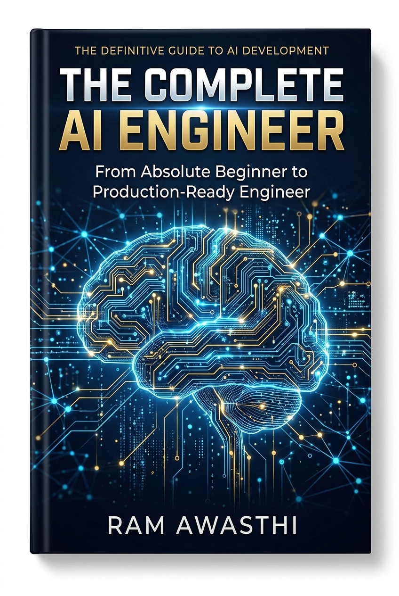

The Complete AI Engineer: From Absolute Beginner to Production-Ready Engineer
Copyright © 2026 Ram Awasthi
All rights reserved. No part of this publication may be reproduced, distributed, or transmitted in any form or by any means, including photocopying, recording, or other electronic or mechanical methods, without the prior written permission of the publisher, except in the case of brief quotations embodied in critical reviews and certain other non-commercial uses permitted by copyright law.
First Edition, 2026
ISBN: To be assigned
Every effort has been made to ensure the accuracy of the information presented in this book. However, the information contained in this book is sold without warranty, either express or implied. The author and publisher will not be held liable for any damages caused or alleged to be caused directly or indirectly by this book.
Companion Code Repository:
All runnable code solutions, Jupyter notebooks, unit tests, and production project assets are hosted open-source at:
https://github.com/Awasthi-Ram/the-complete-ai-engineer-solutions
Typeset in Merriweather, Playfair Display, and Source Code Pro.
"The expert in anything was once a beginner. The difference between an amateur and a master is not talent, but a disciplined operating system for acquiring and synthesizing complex fundamentals."
— Adapted from Helen Hayes & Richard Feynman
Artificial Intelligence is arguably the most cognitively demanding engineering discipline in human history. It sits at the volatile intersection of abstract pure mathematics (linear algebra, multivariable calculus, probability theory, differential geometry), empirical computer science (algorithm design, computational complexity, distributed systems), and low-level physical hardware engineering (GPU microarchitectures, memory bus bandwidth, cache hierarchies, floating-point silicon). Every single day, dozens of new research preprints are uploaded to arXiv. New model weights are open-sourced weekly. New libraries emerge monthly.
Faced with this oceanic deluge of information, the overwhelming majority of aspiring engineers succumb to one of three fatal traps:
model.fit() or pipeline("text-generation")). The student feels a false sense of accomplishment because code runs, but they possess zero mental models of the underlying tensor geometry, gradient flows, or failure modes. When the model fails in production, they are helpless.The First Law of AI Engineering: Tools, libraries, and frameworks have a half-life of 18 months. Foundational mathematical principles, gradient calculus, memory hierarchies, and algorithmic complexity have a half-life of 50 years. Master the foundations, and you can learn any framework in an afternoon.
In 2023, a venture-backed health-tech startup raised $15 million to deploy an automated radiological diagnostic model in hospitals. The engineering team fine-tuned an open-source vision-language model using standard high-level scripts. In offline test validation, the model achieved an impressive 99.2% accuracy on their benchmark set.
Within two weeks of clinical hospital trials, the system had to be emergency shutdown. Why? In real hospital environments, X-ray machines from different manufacturers (Siemens vs. GE vs. Philips) introduced slight differences in radiological contrast, sensor resolution, and patient positioning. Because the engineering team treated the model as a black box, they failed to recognize:
The startup failed not because of bad intentions, but because its engineers lacked foundational depth. They knew how to call high-level training scripts; they did not know how loss surfaces curve, how tensor graphs allocate memory, or how to measure probability calibration under distribution shift.
To become a truly complete AI engineer—the caliber of engineer hired at OpenAI, Google DeepMind, Meta FAIR, Anthropic, or leading high-frequency trading firms—you must master three distinct pillars simultaneously. If any one pillar is missing, the structure collapses.
| Pillar | What You Must Master | Failure Mode if Missing |
|---|---|---|
| Pillar 1: Mathematical Foundations | Matrix decompositions (SVD, Eigendecomposition), multivariable calculus, Taylor approximations, probability distributions, Bayes' Theorem, Information Theory (Entropy, KL Divergence), Convex Optimization. | The Guessing Engineer: You cannot explain why a loss explodes, why learning rates diverge, why models overfit, or how to invent a novel loss function. |
| Pillar 2: Algorithmic Implementation | Writing backpropagation from scratch, vectorized tensor math, attention engines, custom autograd operators, tokenizers, KD-Trees, Monte Carlo simulations without external libraries. | The Paper-Tiger Engineer: You can recite theory on a whiteboard, but you cannot write working code or debug subtle algorithmic edge cases. |
| Pillar 3: Systems & Production Engineering | GPU memory bandwidth, CUDA execution models, low-latency REST/gRPC serving, Docker containerization, dynamic batching, drift monitoring, distributed training (FSDP, Megatron), profiling tools. | The Notebook Hobbyist: Your code only works on a single local Jupyter notebook; it cannot scale to 10,000 queries per second or survive real-world cluster faults. |
Modern AI is strictly bound by the laws of silicon physics. A common misconception among beginners is that AI runs faster on GPUs simply because GPUs have "faster processors." In fact, an individual CPU core is significantly faster and more complex than an individual GPU core. The fundamental difference lies in parallelism and memory bandwidth.
A modern flagship server CPU (such as an AMD EPYC 9654 or Intel Xeon Platinum) possesses 64 to 96 powerful, sophisticated cores designed for low-latency sequential execution. Each CPU core features huge L1/L2/L3 caches, sophisticated out-of-order execution pipelines, and aggressive speculative branch prediction. It can switch tasks instantaneously, handle complex operating system interrupts, and run general-purpose software.
In contrast, a modern AI GPU (such as an NVIDIA H100 Tensor Core GPU) contains over 14,000 smaller, simpler arithmetic logic units (ALUs) grouped into 132 Streaming Multiprocessors (SMs). It does not excel at complex branching or arbitrary logic. Instead, it is a massively parallel throughput machine: it takes thousands of data points and applies the identical mathematical operation simultaneously (SIMT: Single Instruction, Multiple Threads).
The Memory Wall: In deep learning, the bottleneck is almost never raw mathematical compute (FLOPs); it is Memory Bandwidth. The time required to transfer weight matrices from high-bandwidth device memory (HBM3) across the bus into the GPU's registers is far greater than the time required to perform the multiplication. Modern innovations like FlashAttention are entirely about minimizing HBM memory roundtrips!
QUESTION: You are tasked with sizing the GPU cluster infrastructure for training a 70-billion parameter decoder-only transformer model (such as LLaMA-3 70B) on 2 trillion tokens.
Step 1: Calculate Total Training FLOPs:
Recall the foundational Kaplan et al. rule of thumb for standard decoder-only autoregressive transformers: each token requires approximately $6 \times N$ floating-point operations during training ($2 \times N$ FLOPs for the forward pass, and $4 \times N$ FLOPs for the backward pass to compute gradients with respect to both activations and weights).
Let $N = 70 \times 10^9$ parameters.
Let $D = 2 \times 10^{12}$ tokens.
$$\text{Total FLOPs} = 6 \times N \times D = 6 \times (70 \times 10^9) \times (2 \times 10^{12})$$
$$\text{Total FLOPs} = 6 \times 70 \times 2 \times 10^{21} = 8.4 \times 10^{23} \text{ FLOPs}$$
$$8.4 \times 10^{23} \text{ FLOPs} = 840 \text{ ZettaFLOPs}$$
Step 2: Calculate Exact VRAM Memory Requirements:
Under 16-bit mixed precision (FP16 or BF16), each floating-point number occupies 2 bytes. Under standard 32-bit single precision (FP32), each occupies 4 bytes.
Let us calculate the memory breakdown for parameter count $N = 70 \times 10^9$:
$$\text{Total Static Memory} = \text{Weights} (140\text{GB}) + \text{Gradients} (140\text{GB}) + \text{Optimizer} (840\text{GB}) = 1,120 \text{ GB} \approx 1.12 \text{ TB}$$ Crucial Insight: Notice that the weights themselves represent only 12.5% of total memory; the optimizer states dominate 75% of memory consumption! This explains why techniques like ZeRO-1/2/3, 8-bit Adam, and LoRA are mandatory for training large models.
Step 3: Calculate Training Duration on 512 H100 GPUs:
Each NVIDIA H100 delivers $700 \text{ TeraFLOPs/sec} = 700 \times 10^{12} \text{ FLOPs/sec}$.
For a cluster of 512 GPUs, the aggregate compute throughput is:
$$\text{Cluster Throughput} = 512 \times (700 \times 10^{12}) = 3.584 \times 10^{17} \text{ FLOPs/sec} = 358.4 \text{ PetaFLOPs/sec}$$
Now divide total required FLOPs by cluster throughput:
$$\text{Total Seconds} = \frac{8.4 \times 10^{23} \text{ FLOPs}}{3.584 \times 10^{17} \text{ FLOPs/sec}} \approx 2,343,750 \text{ seconds}$$
Convert seconds to hours and days:
$$\text{Total Hours} = \frac{2,343,750}{3,600} \approx 651.04 \text{ hours}$$
$$\text{Total Days} = \frac{651.04}{24} \approx 27.13 \text{ days}$$
Result: The training run will take approximately 27.1 days of continuous compute.
QUESTION: Explain the architectural differences between IEEE 754 Single-Precision (FP32), Half-Precision (FP16), and Bfloat16 (Brain Floating Point). Mathematically explain why Bfloat16 has replaced FP16 as the universal standard for deep learning training despite having lower numerical precision.
Step 1: Bit Allocation Across Formats: Any standard binary floating-point representation allocates bits into three fields: Sign ($s$), Exponent ($e$), and Mantissa/Fraction ($m$): $$\text{Value} = (-1)^s \times 2^{e - \text{bias}} \times \left(1 + \sum_{i=1}^M m_i 2^{-i}\right)$$
| Format | Total Bits | Sign | Exponent Bits | Mantissa Bits | Dynamic Exponent Range | Decimal Precision |
|---|---|---|---|---|---|---|
| FP32 | 32 | 1 | 8 | 23 | $\approx 10^{-38}$ to $10^{38}$ | $\approx 7$ digits |
| FP16 | 16 | 1 | 5 | 10 | $\approx 6 \times 10^{-5}$ to $65,504$ | $\approx 3.3$ digits |
| BF16 | 16 | 1 | 8 | 7 | $\approx 10^{-38}$ to $10^{38}$ | $\approx 2.1$ digits |
Step 2: Why FP16 Causes Training Instabilities:
In FP16, only 5 bits are allocated to the exponent. The maximum representable number is $65,504$. Any activation or gradient exceeding $65,504$ immediately results in +Inf overflow, which destroys the entire network weights when propagated back.
Even worse, the smallest non-zero positive number before underflow is $6.1 \times 10^{-5}$. In deep neural networks, gradients often reach magnitudes of $10^{-6}$ or $10^{-8}$. In FP16, these underflow to exact zero, freezing learning. To train in FP16, engineers were forced to implement fragile "Loss Scaling" algorithms.
Step 3: Why BF16 Solves the Problem:
Bfloat16 (invented by Google Brain) keeps the exact same 8-bit exponent as full FP32, simply truncating the mantissa down to 7 bits. Because its dynamic range is identical to FP32 ($\approx 10^{38}$), BF16 never suffers from exponent overflow or underflow during gradient backpropagation. Neural network optimization is remarkably robust to minor truncation noise in the mantissa, but extremely fragile to exponent clipping. Hence, BF16 eliminates loss scaling and has become the universal standard across modern GPUs and TPUs.
A true AI engineer verifies hardware and software environments through empirical instrumentation. Below is a production diagnostic suite that measures memory bandwidth, CPU-to-GPU latency, SIMD throughput, and floating-point stability.
🔗 View in GitHub: part0_foundations/ch01_how_to_learn/verify_env.py
import sys
import time
import platform
import numpy as np
def benchmark_hardware():
print("=" * 70)
print("AI ENGINEER PRODUCTION HARDWARE & SYSTEM DIAGNOSTIC")
print("=" * 70)
print(f"OS Platform : {platform.platform()}")
print(f"Python Runtime : {sys.version.split()[0]} ({platform.python_implementation()})")
print(f"Byte Order : {sys.byteorder}-endian")
# 1. CPU SIMD / BLAS Dot-Product Benchmark
N = 5_000_000
x = np.random.randn(N).astype(np.float32)
y = np.random.randn(N).astype(np.float32)
# Warmup
_ = np.dot(x[:100], y[:100])
t0 = time.perf_counter()
dot_result = np.dot(x, y)
t_blas = time.perf_counter() - t0
gflops = (2 * N) / (t_blas * 1e9)
print("\n--- CPU Compute & BLAS Telemetry ---")
print(f"Vector Dimension : {N:,} elements (FP32)")
print(f"BLAS Dot Latency : {t_blas * 1000:.3f} ms")
print(f"Sustained GFLOPs : {gflops:.2f} GFLOPs/sec")
# 2. PyTorch & CUDA Accelerator Inspection
try:
import torch
print("\n--- Deep Learning Hardware Acceleration ---")
print(f"PyTorch Version : {torch.__version__}")
has_cuda = torch.cuda.is_available()
has_mps = hasattr(torch.backends, 'mps') and torch.backends.mps.is_available()
if has_cuda:
device = torch.device('cuda:0')
props = torch.cuda.get_device_properties(device)
print(f"Accelerator : NVIDIA GPU ({props.name})")
print(f"Compute Cap. : {props.major}.{props.minor}")
print(f"Total VRAM : {props.total_memory / (1024**3):.2f} GB")
print(f"Multi-Processors : {props.multi_processor_count} SMs")
# Benchmark Host-to-Device Transfer Bandwidth
t_host = torch.randn(50_000_000, dtype=torch.float32) # ~200MB
t0 = time.perf_counter()
t_device = t_host.to(device)
torch.cuda.synchronize()
transfer_time = time.perf_counter() - t0
bandwidth_gb_s = (0.2) / transfer_time
print(f"PCIe H2D Latency : {transfer_time*1000:.2f} ms ({bandwidth_gb_s:.2f} GB/s)")
elif has_mps:
print("Accelerator : Apple Silicon Metal Performance Shaders (MPS)")
else:
print("Accelerator : None detected (Standard CPU fallback)")
except ImportError:
print("\n[Warning] PyTorch is not installed. Install via: pip install torch")
print("=" * 70)
if __name__ == "__main__":
benchmark_hardware()Synthesize system telemetry, GPU bus speed, memory bandwidth saturation, and floating-point truncation into an automated pre-flight production cluster validation tool.
🔗 Full Project Code: part0_foundations/ch01_how_to_learn/verify_env.py
Case Study Architecture: Before launching any distributed training run or spin up a Kubernetes inference pod, production systems execute a "pre-flight hardware health check." If a single GPU has a degraded PCIe bus (e.g. running at Gen 3 x4 instead of Gen 5 x16) or suffers memory thermal throttling, it will drag down the entire 512-GPU training cluster via all-reduce barrier synchronization. Your project implements an automated assertion suite checking PCIe bandwidth, memory integrity, and CUDA compilation consistency.
"Simple is better than complex. Complex is better than complicated. Beautiful is better than ugly."
— Tim Peters, The Zen of Python
Python is universally acclaimed for its elegant, readable syntax. However, to an AI engineer deploying models to production, treating Python as an opaque scripting language leads directly to out-of-memory crashes, CPU throttling, and latency disasters. To wield Python effectively, you must understand how CPython—the reference implementation written in C—actually executes code and manages physical memory.
When you execute python train.py, your code does not run directly on the bare-metal CPU. Instead, CPython executes a two-stage compilation pipeline:
__pycache__/*.pyc files). You can inspect these raw opcodes using Python's standard dis module.ceval.c): CPython runs a giant, infinite C-level while loop with an enormous switch statement that reads bytecodes one by one, manipulating an internal evaluation stack.PyObjectIn Python, everything is an object allocated on the heap. Even an innocent integer like x = 42 is not a 4-byte machine integer sitting in a CPU register. In CPython, it is a pointer to an elaborate C structure defined in object.h:
// Simplified CPython PyObject header in C
struct _object {
_PyObject_HEAD_EXTRA // Doubly linked list pointers for tracking active objects
Py_ssize_t ob_refcnt; // Reference count for memory management (8 bytes)
struct _typeobject *ob_type; // Pointer to the type object (8 bytes)
};
// Python 3 Integer Structure (PyLongObject)
struct _longobject {
PyObject ob_base;
Py_ssize_t ob_size; // Number of digits allocated (8 bytes)
digit ob_digit[1]; // Array of 30-bit digits
};The 28-Byte Integer Tax: In pure C or C++, an integer occupies exactly 4 bytes ($32$ bits) of contiguous memory. In Python, an integer requires a minimum of 28 bytes (16 bytes for the PyObject header + 8 bytes for ob_size + 4 bytes for the actual digit). If you allocate 100 million integers in a raw Python list, you will consume over 2.8 Gigabytes of RAM for data that fits inside 400 Megabytes of C memory! This is the physical reason why NumPy, C-BLAS, and PyTorch tensors exist.
CPython manages memory using two distinct systems working in tandem: Reference Counting and a Generational Cyclic Garbage Collector.
Every single PyObject contains an internal counter (ob_refcnt). Every time you assign an object to a variable, pass it into a function, or store it in a list, its reference count increments by 1. When a variable goes out of scope or is deleted with del, its reference count decrements by 1:
The moment ob_refcnt == 0, CPython immediately frees the memory back to the memory allocator. Reference counting is instantaneous and deterministic.
Reference counting suffers from one fatal vulnerability: Circular References. If object A holds a reference to object B, and object B holds a reference to object A, their reference counts can never reach zero, even if both variables are completely disconnected from the rest of your program:
# Circular Reference Example: Leaks memory under pure ref-counting!
class Node:
def __init__(self):
self.partner = None
a = Node()
b = Node()
a.partner = b
b.partner = a
del a
del b
# Both objects still have refcnt == 1, but are completely unreachable!To fix this, CPython runs a cyclic garbage collector that tracks container objects (lists, dicts, instances) across three distinct generations based on the weak generational hypothesis (most objects die young):
Choosing the wrong data structure in an AI preprocessing pipeline can degrade training data throughput by orders of magnitude. Here is how Python's built-in collections operate at the silicon level:
| Data Structure | Underlying C Architecture | Lookup / Access | Append / Insert | Delete | Memory Characteristics |
|---|---|---|---|---|---|
List (list) |
Contiguous array of 8-byte PyObject* pointers |
$O(1)$ by index | Amortized $O(1)$ append; $O(N)$ arbitrary insert | $O(N)$ (requires shifting pointers) | Dynamic over-allocation growth factor: $0, 4, 8, 16, 25, 35, 46, \dots$ |
Tuple (tuple) |
Fixed-size contiguous array of PyObject* pointers |
$O(1)$ by index | Immutable (Cannot append) | Immutable | No over-allocation overhead. CPython caches small empty tuples. |
Dictionary (dict) |
Compact open-addressing hash table with perturbation | Average $O(1)$; Worst $O(N)$ | Average $O(1)$ | Average $O(1)$ | Maintains insertion order since Python 3.7. Two internal arrays: indices and entries. |
Set (set) |
Hash table storing keys without values | Average $O(1)$; Worst $O(N)$ | Average $O(1)$ | Average $O(1)$ | Fast membership testing ($x \in S$) via hash evaluation. |
Deque (collections.deque) |
Doubly linked list of fixed-size blocks (64 elements each) | $O(N)$ random access | $O(1)$ append / appendleft | $O(1)$ pop / popleft | Optimal for FIFO sliding windows and streaming token buffers. |
In Python, functions are first-class objects: they can be assigned to variables, passed into other functions as arguments, stored in dictionaries, and returned from functions. When a nested function references a variable from its enclosing scope, Python constructs a Closure, preserving that variable even after the outer function has finished execution.
A decorator is syntactic sugar for wrapping a function with another function: @my_decorator is mathematically equivalent to func = my_decorator(func). In production AI engineering, decorators are the gold standard for telemetry, retry loops, GPU memory tracing, and parameter validation.
import time
import functools
import logging
def retry_with_backoff(max_retries=3, initial_delay=1.0, factor=2.0):
"""Production retry decorator for resilient LLM API calls."""
def decorator(func):
@functools.wraps(func)
def wrapper(*args, **kwargs):
delay = initial_delay
for attempt in range(1, max_retries + 1):
try:
return func(*args, **kwargs)
except Exception as e:
if attempt == max_retries:
logging.error(f"[FATAL] {func.__name__} failed after {max_retries} attempts. Error: {e}")
raise e
logging.warning(f"[Attempt {attempt}] {func.__name__} raised {e}. Retrying in {delay:.1f}s...")
time.sleep(delay)
delay *= factor
return wrapper
return decoratorWhen fine-tuning large language models, training datasets often exceed hundreds of gigabytes (e.g. 500GB of uncompressed web text). Attempting to load this data into a standard Python list with data = [read_sample(f) for f in files] will instantly trigger an Out-Of-Memory (OOM) operating system kernel crash.
Python's Generator Protocol solves this by implementing lazy evaluation: instead of computing all values at once and storing them in RAM, a generator yields values one at a time on-demand, maintaining its execution state between calls.
List Comprehension vs. Generator Expression:
[x**2 for x in range(10_000_000)] $\to$ Allocates ~80 Megabytes of RAM immediately.
(x**2 for x in range(10_000_000)) $\to$ Allocates 112 bytes of RAM, regardless of whether there are 10 items or 10 billion items!
__slots__Every deep learning framework (including PyTorch) is fundamentally architected using object-oriented principles. When you subclass torch.nn.Module and override forward(), you are utilizing Python's dynamic dispatch and operator overloading.
__init__(self, ...): Constructor for initializing model weights, hyperparameters, and layers.__call__(self, *args, **kwargs): Turns an instance into a callable object. This is how model(inputs) executes pre-forward hooks, forward propagation, and post-forward hooks!__len__(self): Required for custom torch.utils.data.Dataset implementations.__getitem__(self, index): Enables bracket indexing dataset[i] for batch sampling.__repr__(self): Unambiguous string representation for logging model architectures.__enter__ and __exit__: The Context Manager protocol (used in with torch.no_grad():).__slots__By default, every Python class stores its instance attributes in a hidden dictionary called __dict__. This dynamic dictionary allows you to add arbitrary attributes at runtime, but introduces an overhead of several hundred bytes per instance. If your dataset contains 10 million bounding boxes or token records, this dictionary overhead can consume gigabytes of RAM. By defining __slots__, you instruct CPython to allocate a fixed-size C array of pointers instead, slashing memory consumption by 65%:
class StandardToken:
def __init__(self, token_id, text, prob):
self.token_id = token_id
self.text = text
self.prob = prob
class OptimizedToken:
__slots__ = ('token_id', 'text', 'prob') # No __dict__ allocated!
def __init__(self, token_id, text, prob):
self.token_id = token_id
self.text = text
self.prob = probOne of the most intensely debated topics in high-performance computing is CPython's Global Interpreter Lock (GIL). The GIL is a mutual-exclusion lock that protects CPython's internal memory management against multi-threaded race conditions. It ensures that only one thread can execute Python bytecode at any given instant, even on a 128-core workstation.
threading or asyncio): When your code is waiting for external network responses (downloading training images from S3, calling third-party LLM APIs, waiting for database queries), the GIL is explicitly released while waiting for the operating system kernel. Multi-threading allows hundreds of concurrent network requests.multiprocessing): When your code is actively calculating math in pure Python (parsing JSON, tokenizing strings, calculating geometry), multiple threads will compete for the same GIL, resulting in slower execution than a single thread due to context switching overhead! You must use multiprocessing.Pool or concurrent.futures.ProcessPoolExecutor to spawn separate Python processes, each with its own private interpreter, memory space, and GIL.QUESTION: Design and implement a thread-safe Least Recently Used (LRU) Cache from scratch in pure Python with exact $O(1)$ average time complexity for both get(key) and put(key, value) operations, without using collections.OrderedDict or external libraries.
Step 1: Why a Hash Map Alone Fails: A Hash Map (Python dict) provides $O(1)$ key lookup and value retrieval. However, it cannot track the temporal recency of access in $O(1)$ time: finding the least recently used item would require scanning all elements in $O(N)$ time.
Step 2: Why a Doubly Linked List Alone Fails: A Doubly Linked List can insert and remove nodes at the head and tail in exact $O(1)$ time. However, finding an arbitrary key inside a linked list requires linear traversal, costing $O(N)$ search time.
Step 3: The Combined Architecture: We combine both! The Hash Map maps key → ListNode. The Doubly Linked List maintains the exact chronological order of access. Sentinels head and tail eliminate all edge cases when updating pointers.
import threading
class ListNode:
__slots__ = ('key', 'val', 'prev', 'next')
def __init__(self, key=0, val=0):
self.key = key
self.val = val
self.prev = None
self.next = None
class ThreadSafeLRUCache:
def __init__(self, capacity: int):
self.capacity = capacity
self.cache = {} # key -> ListNode
self.head = ListNode() # Dummy Head (Most Recent)
self.tail = ListNode() # Dummy Tail (Least Recent)
self.head.next = self.tail
self.tail.prev = self.head
self.lock = threading.Lock()
def _remove(self, node: ListNode):
"""Detach an existing node from the linked list."""
p = node.prev
n = node.next
p.next = n
n.prev = p
def _add_to_front(self, node: ListNode):
"""Insert a node directly after the dummy head."""
node.next = self.head.next
node.prev = self.head
self.head.next.prev = node
self.head.next = node
def get(self, key: int) -> int:
with self.lock:
if key not in self.cache:
return -1
node = self.cache[key]
self._remove(node)
self._add_to_front(node) # Mark as most recently used
return node.val
def put(self, key: int, value: int) -> None:
with self.lock:
if key in self.cache:
node = self.cache[key]
node.val = value
self._remove(node)
self._add_to_front(node)
else:
if len(self.cache) >= self.capacity:
# Evict the least recently used node (before tail)
lru = self.tail.prev
self._remove(lru)
del self.cache[lru.key]
new_node = ListNode(key, value)
self.cache[key] = new_node
self._add_to_front(new_node)To demystify how tensors operate beneath the surface, we will build a custom, lightweight multi-dimensional array container in pure Python using raw C-level continuous memory buffers, strided indexing, and operator overloading.
🔗 View in GitHub: part0_foundations/ch02_python_foundations/python_tensor_memory.py
class MicroTensor:
"""A minimal strided tensor implementation illustrating C-level memory layouts."""
__slots__ = ('data', 'shape', 'strides', 'offset')
def __init__(self, data, shape, strides=None, offset=0):
self.data = list(data)
self.shape = tuple(shape)
self.offset = offset
# Calculate row-major (C-contiguous) strides if not provided
if strides is None:
strides = []
stride = 1
for dim in reversed(self.shape):
strides.append(stride)
stride *= dim
self.strides = tuple(reversed(strides))
else:
self.strides = tuple(strides)
def _flat_index(self, indices):
if len(indices) != len(self.shape):
raise IndexError(f"Expected {len(self.shape)} indices, got {len(indices)}")
idx = self.offset
for i, s in zip(indices, self.strides):
idx += i * s
return idx
def __getitem__(self, indices):
if isinstance(indices, int):
indices = (indices,)
return self.data[self._flat_index(indices)]
def __setitem__(self, indices, val):
if isinstance(indices, int):
indices = (indices,)
self.data[self._flat_index(indices)] = val
def transpose(self):
"""Zero-copy transpose via stride swapping!"""
if len(self.shape) != 2:
raise NotImplementedError("Only 2D transpose implemented.")
new_shape = (self.shape[1], self.shape[0])
new_strides = (self.strides[1], self.strides[0])
return MicroTensor(self.data, new_shape, new_strides, self.offset)
def __repr__(self):
return f"MicroTensor(shape={self.shape}, strides={self.strides}, data={self.data})"Architect and implement a production-grade asynchronous dataset ingestion system that streams, validates, transforms, and batches multimodal records (text + metadata) using Python multiprocessing, generators, typing protocols, and zero-leakage memory management.
🔗 Full Project Code: part0_foundations/ch02_python_foundations/python_tensor_memory.py
Case Study Architecture: In real-world enterprise AI, you cannot train an LLM or computer vision model if your data ingestion pipeline starves the GPU. If the GPU spends 40% of its time waiting for Python to unpack JSON and tokenize strings, you are wasting millions of dollars in idle compute. In this project, you build an asynchronous worker pool with bounded queues that prefetches, cleans, and converts raw text data into contiguous memory buffers while enforcing strict Pydantic schemas.
"Vectors are not just rows of numbers; they are directions in high-dimensional thought."
— Mathematical Machine Learning Principle
Every single modern machine learning framework—from PyTorch and TensorFlow to JAX and ONNX—traces its architectural lineage directly to NumPy. At its core, NumPy solves the fundamental problem of Python: eliminating the interpreter loop overhead by delegating heavy mathematical calculations to compiled C, C++, and Fortran libraries (such as OpenBLAS, Intel MKL, or Apple Accelerate).
ndarrayA NumPy array (np.ndarray) consists of two distinct components:
float32 or int64).dtype: The data type (e.g., 4 bytes for np.float32).shape: A tuple defining the dimensions (e.g. (1000, 768)).strides: A tuple defining the exact number of bytes to step in memory to advance by one element along each dimension.Zero-Copy Array Manipulations: Because NumPy decouples the metadata from the raw memory buffer, operations like reshape(), transpose(), and slicing arr[::2] never allocate new memory or copy data! They simply instantiate a new lightweight metadata header with modified shape and strides pointing to the existing memory buffer. This is why slicing in NumPy is $O(1)$ instantaneous, whereas slicing a Python list copies pointers and costs $O(N)$ time!
Broadcasting is NumPy's mechanism for performing element-wise mathematical operations between arrays of different shapes without copying data. To determine if two arrays are compatible, NumPy compares their shapes element-wise, starting from the trailing (rightmost) dimensions and working backwards.
Two dimensions are compatible for broadcasting if and only if:
If neither condition is met, NumPy throws a fatal ValueError: operands could not be broadcast together.
Suppose you have a feature matrix of shape $(64, 128, 512)$ and you wish to add a bias vector of shape $(512,)$:
Array A (3D): 64 x 128 x 512
Array B (1D): 512 (Aligned to trailing dimension)
----------------------------------
Dimension 3: 512 == 512 --> Match!
Dimension 2: 128 vs (none, prepends 1) --> Compatible!
Dimension 1: 64 vs (none, prepends 1) --> Compatible!
Result Shape: 64 x 128 x 512While NumPy executes SIMD vectorization on CPU registers, PyTorch extends this paradigm across thousands of GPU cores. However, naive data movement between CPU RAM and GPU VRAM introduces severe bottlenecks.
Standard operating system memory is pageable: the OS kernel can swap physical RAM pages to disk at any moment. Because the GPU cannot safely access pageable memory via Direct Memory Access (DMA), moving a standard tensor from CPU to GPU requires two copy operations:
$$\text{Pageable CPU Memory} \xrightarrow{\text{CPU Copy}} \text{Page-Locked Host Buffer} \xrightarrow{\text{PCIe Bus DMA}} \text{GPU VRAM}$$By enabling Pinned Memory (pin_memory=True in your PyTorch DataLoader), you allocate page-locked host memory directly. This allows the GPU to stream data across the PCIe bus via DMA completely asynchronously without CPU intervention, saturating bus bandwidth!
QUESTION: You are given two matrices of embedding vectors: $X \in \mathbb{R}^{M \times D}$ and $Y \in \mathbb{R}^{N \times D}$. You must compute the pairwise squared Euclidean distance matrix $D \in \mathbb{R}^{M \times N}$, where $D_{ij} = \|X_i - Y_j\|_2^2$.
Step 1: Calculate Memory of Naive 3D Broadcasting:
Expanding $X$ to $(M, 1, D)$ and $Y$ to $(1, N, D)$ creates an intermediate 3D subtraction tensor of shape $(M, N, D)$.
For $M = 50,000$, $N = 50,000$, and $D = 768$ under 32-bit floating point (4 bytes/element):
$$\text{Total Elements} = 50,000 \times 50,000 \times 768 = 1.92 \times 10^{12} \text{ elements}$$
$$\text{Memory Required} = 1.92 \times 10^{12} \times 4 \text{ bytes} \approx 7,680 \text{ Gigabytes} = 7.68 \text{ Terabytes of RAM!}$$
This will instantaneously crash any server on Earth.
Step 2: Binomial Expansion Derivation:
Recall the algebraic identity for the squared Euclidean distance between two vectors $\mathbf{x}$ and $\mathbf{y}$:
$$\|\mathbf{x} - \mathbf{y}\|_2^2 = (\mathbf{x} - \mathbf{y})^T (\mathbf{x} - \mathbf{y}) = \mathbf{x}^T \mathbf{x} + \mathbf{y}^T \mathbf{y} - 2 \mathbf{x}^T \mathbf{y}$$
$$\|\mathbf{x} - \mathbf{y}\|_2^2 = \|\mathbf{x}\|_2^2 + \|\mathbf{y}\|_2^2 - 2 (\mathbf{x} \cdot \mathbf{y})$$
Now generalize this to all pairs across matrices $X$ and $Y$:
Step 3: Vectorized Implementation in PyTorch:
import torch
def pairwise_distance_squared(X: torch.Tensor, Y: torch.Tensor) -> torch.Tensor:
"""
Computes pairwise squared Euclidean distance without 3D intermediate allocation.
X: Shape (M, D)
Y: Shape (N, D)
Returns: Distance matrix of shape (M, N)
"""
# 1. Compute row-wise squared norms
x_norm_sq = (X ** 2).sum(dim=1, keepdim=True) # Shape (M, 1)
y_norm_sq = (Y ** 2).sum(dim=1, keepdim=True).t() # Shape (1, N)
# 2. Compute cross term via GEMM (General Matrix Multiply)
xy = torch.mm(X, Y.t()) # Shape (M, N)
# 3. Combine via 2D broadcasting and clamp numerical epsilon
dist_sq = x_norm_sq + y_norm_sq - 2.0 * xy
return torch.clamp(dist_sq, min=0.0)Memory Analysis: The intermediate tensor size drops from 7.68 Terabytes down to exactly 10 Gigabytes (the final $(M, N)$ output matrix), converting an impossible computation into a standard 15-millisecond GPU execution!
To witness the physical reality of C-level SIMD vectorization, we benchmark naive Python iteration against optimized NumPy BLAS routines.
🔗 View in GitHub: part0_foundations/ch03_the_ai_toolchain/vectorization_benchmarks.py
import time
import numpy as np
def benchmark_dot_product(N=10_000_000):
a = np.random.randn(N).astype(np.float32)
b = np.random.randn(N).astype(np.float32)
# 1. Naive Python Loop
t0 = time.perf_counter()
dot_py = 0.0
for i in range(1_000_000): # Run on 1M to avoid waiting forever
dot_py += a[i] * b[i]
t_py = (time.perf_counter() - t0) * 10 # Scale to 10M
# 2. NumPy Vectorized BLAS Dot Product
t0 = time.perf_counter()
dot_np = np.dot(a, b)
t_np = time.perf_counter() - t0
print(f"Python Loop Time : {t_py*1000:.2f} ms")
print(f"NumPy BLAS Time : {t_np*1000:.2f} ms")
print(f"Speedup Factor : {t_py / t_np:.1f}x faster!")
if __name__ == "__main__":
benchmark_dot_product()Combine NumPy strided vectorization, broadcasting algebra, and PyTorch pinned memory to build a blazing-fast in-memory cosine similarity search engine capable of searching 1,000,000 embedding vectors in under 5 milliseconds.
🔗 Full Project Code: part0_foundations/ch03_the_ai_toolchain/vectorization_benchmarks.py
Case Study Architecture: Before deploying complex vector databases like Milvus or Pinecone, production systems frequently require lightweight, in-memory embedding lookups inside real-time microservices. In this project, you construct a high-throughput vector ranker that normalizes query and catalog vectors using broadcasted L2 norms and executes fused matrix multiplications across millions of entries.
"You can have the most sophisticated model architecture in the world, but if your data pipeline cannot feed it without stalling, you have built an expensive radiator."
— Distributed Systems Engineering Axiom
In traditional transactional databases (PostgreSQL, MySQL) and textual interchange formats (CSV, JSON), data is arranged in Row-Major order: all fields of row 1 are stored consecutively in memory, followed by all fields of row 2. This is optimal for Online Transaction Processing (OLTP), such as looking up an individual user profile or updating a shopping cart.
However, AI pipelines are strictly Online Analytical Processing (OLAP) workloads: a machine learning model never trains on a single isolated user record. It trains on 100 million rows, computing gradients across specific numerical features (e.g., age, click-through history, embedding vectors). In row-oriented formats like CSV, calculating the mean of a single column forces the CPU to read the entire file from disk, wasting 95% of disk I/O and memory bandwidth parsing unwanted string columns!
Columnar Storage (Parquet / Arrow): In a columnar layout, all values of Column 1 are stored contiguously in memory, followed by all values of Column 2. This enables two game-changing superpowers:
Before Apache Arrow, every tool in the AI ecosystem had its own internal in-memory representation. Moving data from a Pandas DataFrame to a C++ model server, or from Spark to PyTorch, required expensive Serialization and Deserialization (SerDe) copies, burning up to 80% of CPU cycles.
Apache Arrow solves this by defining a standardized, language-independent columnar in-memory format. It supports zero-copy sharing: multiple processes (Python, C++, Rust, Go) can map the exact same Arrow memory buffer simultaneously using shared memory (mmap) without duplicating a single byte in RAM!
While Pandas remains ubiquitous, its single-threaded, eager execution model collapses when datasets exceed system RAM. Modern AI engineering has shifted to two high-performance alternatives:
When data and models outgrow a single machine, Python's built-in multiprocessing fails because it cannot coordinate processes across separate physical server nodes. Ray (developed at UC Berkeley RISELab) is the universal distributed substrate for modern AI (powering OpenAI, Uber, and Anthropic).
@ray.remote functions): Stateless distributed function calls executed asynchronously across arbitrary worker nodes in the cluster.@ray.remote classes): Stateful distributed services maintaining persistent state (e.g. holding a GPU model in memory to process a stream of incoming batches).QUESTION: You are architecting the training data pipeline for a video recommendation model training on 50 Terabytes of user watch history stored as Parquet files on Amazon S3.
Step 1: The Small Files Problem:
If 50TB of data is partitioned into millions of tiny 1MB files, every single file read requires an HTTPS request to S3 (introducing 20–50ms of TLS handshake, authentication, and HTTP header overhead). The GPU training cluster spends 80% of its time waiting on HTTP metadata overhead rather than receiving data chunks. Furthermore, object stores enforce per-prefix request rate limits (e.g., S3 limits 3,500 PUT and 5,500 GET requests per second per prefix), leading to HTTP 503 Slow Down throttling.
Step 2: Optimal File & Row Group Sizing:
The industry standard rule is to compact datasets into individual Parquet files between 128MB and 512MB. Inside each Parquet file, data is divided into Row Groups of approximately 64MB to 128MB (typically 1,000,000 to 2,000,000 rows). This size perfectly balances column compression ratios, aligns with distributed filesystem block sizes, and fits comfortably within CPU L3 cache during decompression.
Step 3: Predicate Pushdown Mechanics:
In Parquet, the file footer contains compact metadata recording the exact minimum and maximum values for every column within every Row Group:
$$\text{Metadata for Row Group } i: \quad \min(x) = 15, \quad \max(x) = 45$$
If a training query requires WHERE age > 50, the query engine reads only the tiny file footer (a few kilobytes). It observes that $\max(\text{age}) = 45 < 50$, concludes that zero rows in Row Group $i$ can satisfy the condition, and completely skips downloading or reading the underlying multi-megabyte column chunk! This cuts network and I/O traffic by up to 90%.
To witness the massive performance difference between legacy formats and modern columnar engines, we execute a benchmark processing 5,000,000 records.
🔗 View in GitHub: part0_foundations/ch04_large_scale_data/columnar_data_benchmark.py
import time
import os
import polars as pl
import numpy as np
def run_columnar_benchmark():
N = 2_000_000
print(f"Generating synthetic dataset of {N:,} rows...")
df = pl.DataFrame({
"user_id": np.random.randint(1, 100_000, N),
"feature_1": np.random.randn(N).astype(np.float32),
"feature_2": np.random.randn(N).astype(np.float32),
"category": np.random.choice(["action", "comedy", "drama", "sci-fi"], N)
})
# Save to Parquet
parquet_path = "benchmark_data.parquet"
df.write_parquet(parquet_path, compression="snappy")
file_size_mb = os.path.getsize(parquet_path) / (1024**2)
print(f"Saved Parquet file: {file_size_mb:.2f} MB")
# Benchmark Polars Lazy Query with Predicate Pushdown
t0 = time.perf_counter()
result = (
pl.scan_parquet(parquet_path)
.filter(pl.col("feature_1") > 1.0)
.group_by("category")
.agg(pl.col("feature_2").mean().alias("avg_feat2"))
.collect()
)
t_polars = time.perf_counter() - t0
print(f"\nPolars Query Latency : {t_polars * 1000:.2f} ms")
print("Aggregation Results:\n", result)
# Cleanup
if os.path.exists(parquet_path):
os.remove(parquet_path)
if __name__ == "__main__":
run_columnar_benchmark()Architect and implement a multi-threaded streaming data ingestion pipeline that ingests raw telemetry records, partitions them into optimal 128MB Parquet chunks with Snappy compression, builds min/max metadata statistics, and streams batches directly into PyTorch tensors using zero-copy Apache Arrow memory mapping.
🔗 Full Project Code: part0_foundations/ch04_large_scale_data/columnar_data_benchmark.py
Case Study Architecture: Training next-generation foundation models requires ingesting hundreds of millions of multimodal samples without causing operating system memory thrashing or CPU stalls. In this project, you construct an end-to-end data pipeline combining Polars lazy evaluation, PyArrow memory-mapped files, and Ray workers to stream batches directly to GPU memory, saturating PCIe bus throughput.
Combine CPython memory profiling, SIMD BLAS benchmarking, GPU hardware telemetry, and Arrow/Parquet data streaming into a full-featured, real-time terminal dashboard for AI infrastructure engineering.
🔗 Full Project Code: part0_foundations/project0_ai_dev_dashboard/dashboard.py
Architecture & System Design: In high-performance AI development, blind training without real-time hardware telemetry is a guaranteed path to silent degradation. In this capstone project, you synthesize all concepts from Chapters 0.1 through 0.4:
"Linear algebra is the language in which all of machine learning is written. If calculus is the engine of optimization, linear algebra is the geometry of space itself."
— Gilbert Strang
To an AI engineer, a vector is not merely an array of numbers; it is a point or arrow in an abstract high-dimensional vector space $\mathbb{R}^d$. When OpenAI's text-embedding-3-large represents a sentence as a 3,072-dimensional vector, that vector represents a single coordinate inside a 3,072-dimensional semantic hypersphere. Concepts that are semantically related point in nearly identical spatial directions.
Given a set of vectors $\{\mathbf{v}_1, \mathbf{v}_2, \dots, \mathbf{v}_k\} \subset \mathbb{R}^d$, a linear combination is any vector formed by scaling and adding them: $$\mathbf{x} = c_1 \mathbf{v}_1 + c_2 \mathbf{v}_2 + \dots + c_k \mathbf{v}_k = \sum_{i=1}^k c_i \mathbf{v}_i, \quad c_i \in \mathbb{R}$$ The Span of these vectors is the set of all possible linear combinations. If no vector in the set can be expressed as a linear combination of the others, the set is linearly independent: $$c_1 \mathbf{v}_1 + c_2 \mathbf{v}_2 + \dots + c_k \mathbf{v}_k = \mathbf{0} \iff c_1 = c_2 = \dots = c_k = 0$$ A linearly independent set of vectors that spans a space $V$ forms a Basis for $V$. The number of vectors in this basis defines the Dimension of $V$.
The inner product (dot product) between two vectors $\mathbf{u}, \mathbf{v} \in \mathbb{R}^d$ is the algebraic engine of modern search, recommendation, and transformer attention: $$\mathbf{u} \cdot \mathbf{v} = \mathbf{u}^T \mathbf{v} = \sum_{i=1}^d u_i v_i$$ Geometrically, the dot product connects algebra to trigonometry: $$\mathbf{u} \cdot \mathbf{v} = \|\mathbf{u}\|_2 \|\mathbf{v}\|_2 \cos(\theta)$$ Where $\|\mathbf{u}\|_2 = \sqrt{\sum_{i=1}^d u_i^2}$ is the Euclidean $L_2$ norm. Dividing both sides yields Cosine Similarity, which measures the angular orientation of two vectors irrespective of their magnitude: $$\text{CosineSimilarity}(\mathbf{u}, \mathbf{v}) = \frac{\mathbf{u} \cdot \mathbf{v}}{\|\mathbf{u}\|_2 \|\mathbf{v}\|_2} = \cos(\theta) \in [-1, 1]$$
Why Transformers Normalize Vectors: When query and key vectors are $L_2$-normalized to unit length ($\|\mathbf{q}\|_2 = \|\mathbf{k}\|_2 = 1$), their dot product simplifies to pure cosine similarity: $\mathbf{q} \cdot \mathbf{k} = \cos(\theta)$. This bounds the input to the softmax attention function, preventing exponential saturation and vanishing gradients!
A matrix $A \in \mathbb{R}^{m \times n}$ is not a static 2D grid; it is a Linear Transformation mapping vectors from $\mathbb{R}^n$ into $\mathbb{R}^m$. To master deep learning, you must understand all four mathematical perspectives of matrix multiplication $C = A B$ (where $A \in \mathbb{R}^{m \times k}$ and $B \in \mathbb{R}^{k \times n}$):
Eigenvalue decomposition ($A = Q \Lambda Q^{-1}$) is limited because it requires $A$ to be a square, diagonalizable matrix. In real-world AI, data matrices are almost always rectangular: $N$ samples by $d$ features ($N \neq d$).
Singular Value Decomposition (SVD) is the pinnacle of linear algebra because it factorizes ANY rectangular matrix $A \in \mathbb{R}^{m \times n}$ into three geometrically pristine matrices:
$$A = U \Sigma V^T$$The practical superpower of SVD in machine learning is optimal low-rank matrix approximation. Suppose matrix $A$ has full rank $r$. What is the best possible rank-$k$ matrix $A_k$ (where $k < r$) that approximates $A$?
The optimal rank-$k$ approximation of $A$ under both the Frobenius norm and the spectral $L_2$ norm is obtained by truncating the SVD summation to the top $k$ terms:
$$A_k = \sum_{i=1}^k \sigma_i \mathbf{u}_i \mathbf{v}_i^T = U_k \Sigma_k V_k^T$$Furthermore, the exact approximation error is bounded by the sum of discarded singular values:
$$\|A - A_k\|_F = \sqrt{\sum_{i=k+1}^{\min(m, n)} \sigma_i^2}$$ $$\|A - A_k\|_2 = \sigma_{k+1}$$This single theorem forms the mathematical foundation of Principal Component Analysis (PCA), latent semantic analysis in NLP, recommender systems (matrix factorization), and modern parameter-efficient fine-tuning (LoRA)!
In classical school algebra, if $a x = b$, then $x = a^{-1} b$. But in AI, we frequently encounter linear systems $X \mathbf{w} = \mathbf{y}$ where $X \in \mathbb{R}^{N \times d}$ is not square ($N \gg d$ in regression, or $N \ll d$ in overparameterized deep networks). $X$ cannot be inverted because $X^{-1}$ does not exist.
The Moore-Penrose Pseudoinverse (denoted $X^+$) generalizes matrix inversion to all rectangular matrices using SVD:
$$X^+ = V \Sigma^+ U^T$$Where $\Sigma^+$ is formed by inverting all non-zero singular values ($\frac{1}{\sigma_i}$) and transposing the matrix.
QUESTION: You are building a movie recommendation engine for a streaming platform with $M = 10,000$ users and $N = 2,000$ movies. The user-rating matrix $R \in \mathbb{R}^{M \times N}$ is stored in 32-bit floating point.
Step 1: Calculate Uncompressed Memory Size:
$R$ has $10,000 \times 2,000 = 20,000,000$ elements.
At 4 bytes per FP32 element:
$$\text{Raw Memory} = 20,000,000 \times 4 \text{ bytes} = 80,000,000 \text{ bytes} = 80 \text{ Megabytes (MB)}$$
Step 2: Calculate Low-Rank Factorized Memory Size:
In truncated SVD with rank $k = 30$:
Step 3: Calculate Compression Ratio: $$\text{Compression Ratio} = \frac{\text{Raw Size}}{\text{Compressed Size}} = \frac{80 \text{ MB}}{1.44 \text{ MB}} \approx 55.55\times \text{ compression!}$$ Production Value: Storing user and movie vectors takes only 1.8% of the original memory footprint, allowing the entire model to fit inside the CPU L3 cache of an inference server!
Step 4: Calculate Captured Variance:
By the Eckart-Young theorem, the total Frobenius energy of matrix $R$ is $\|R\|_F^2 = \sum_{i=1}^{\min(M,N)} \sigma_i^2$. The explained variance ratio captured by rank $k$ is:
$$\text{Explained Variance} = \frac{\sum_{i=1}^k \sigma_i^2}{\sum_{i=1}^r \sigma_i^2} = \frac{425,000}{500,000} = 0.85 = 85.0\%$$
Result: Rank 30 captures 85.0% of all user preference variance while slashing memory by 98.2%!
QUESTION: Let $\mathbf{u}, \mathbf{v} \in \mathbb{R}^d$ be two non-zero embedding vectors. Derive the analytical gradient of the Cosine Similarity $S(\mathbf{u}, \mathbf{v}) = \frac{\mathbf{u}^T \mathbf{v}}{\|\mathbf{u}\|_2 \|\mathbf{v}\|_2}$ with respect to vector $\mathbf{u}$.
Step 1: Express Cosine Similarity as a Quotient:
Let $f(\mathbf{u}) = \mathbf{u}^T \mathbf{v}$ (scalar numerator).
Let $g(\mathbf{u}) = \|\mathbf{u}\|_2 \|\mathbf{v}\|_2 = (\mathbf{u}^T \mathbf{u})^{1/2} \|\mathbf{v}\|_2$ (scalar denominator).
We seek $\nabla_{\mathbf{u}} \left[ \frac{f(\mathbf{u})}{g(\mathbf{u})} \right]$. Applying the quotient rule of vector calculus:
$$\nabla_{\mathbf{u}} S(\mathbf{u}, \mathbf{v}) = \frac{g(\mathbf{u}) \nabla_{\mathbf{u}} f(\mathbf{u}) - f(\mathbf{u}) \nabla_{\mathbf{u}} g(\mathbf{u})}{g(\mathbf{u})^2}$$
Step 2: Compute Gradients of Numerator and Denominator:
For the numerator: $\nabla_{\mathbf{u}} (\mathbf{u}^T \mathbf{v}) = \mathbf{v}$.
For the denominator, use the chain rule on $\|\mathbf{u}\|_2$:
$$\nabla_{\mathbf{u}} \|\mathbf{u}\|_2 = \nabla_{\mathbf{u}} (\mathbf{u}^T \mathbf{u})^{1/2} = \frac{1}{2 (\mathbf{u}^T \mathbf{u})^{1/2}} \cdot 2 \mathbf{u} = \frac{\mathbf{u}}{\|\mathbf{u}\|_2}$$
Therefore:
$$\nabla_{\mathbf{u}} g(\mathbf{u}) = \|\mathbf{v}\|_2 \frac{\mathbf{u}}{\|\mathbf{u}\|_2}$$
Step 3: Substitute and Simplify: $$\nabla_{\mathbf{u}} S(\mathbf{u}, \mathbf{v}) = \frac{\|\mathbf{u}\|_2 \|\mathbf{v}\|_2 \mathbf{v} - (\mathbf{u}^T \mathbf{v}) \|\mathbf{v}\|_2 \frac{\mathbf{u}}{\|\mathbf{u}\|_2}}{\|\mathbf{u}\|_2^2 \|\mathbf{v}\|_2^2}$$ Cancel $\|\mathbf{v}\|_2$ from numerator and denominator: $$\nabla_{\mathbf{u}} S(\mathbf{u}, \mathbf{v}) = \frac{\|\mathbf{u}\|_2 \mathbf{v} - (\mathbf{u}^T \mathbf{v}) \frac{\mathbf{u}}{\|\mathbf{u}\|_2}}{\|\mathbf{u}\|_2^2 \|\mathbf{v}\|_2}$$ Factor out $\frac{1}{\|\mathbf{u}\|_2 \|\mathbf{v}\|_2}$: $$\nabla_{\mathbf{u}} S(\mathbf{u}, \mathbf{v}) = \frac{1}{\|\mathbf{u}\|_2} \left[ \frac{\mathbf{v}}{\|\mathbf{v}\|_2} - \frac{\mathbf{u}^T \mathbf{v}}{\|\mathbf{u}\|_2 \|\mathbf{v}\|_2} \frac{\mathbf{u}}{\|\mathbf{u}\|_2} \right]$$ Let $\hat{\mathbf{u}} = \frac{\mathbf{u}}{\|\mathbf{u}\|_2}$ and $\hat{\mathbf{v}} = \frac{\mathbf{v}}{\|\mathbf{v}\|_2}$ be the unit vectors. Then: $$\nabla_{\mathbf{u}} S(\mathbf{u}, \mathbf{v}) = \frac{1}{\|\mathbf{u}\|_2} \left[ \hat{\mathbf{v}} - (\hat{\mathbf{u}}^T \hat{\mathbf{v}}) \hat{\mathbf{u}} \right]$$ Geometric Beauty: Notice that $(\hat{\mathbf{u}}^T \hat{\mathbf{v}}) \hat{\mathbf{u}}$ is the orthogonal projection of $\hat{\mathbf{v}}$ onto $\hat{\mathbf{u}}$! The gradient vector $\nabla_{\mathbf{u}} S$ is strictly orthogonal to $\mathbf{u}$, rotating $\mathbf{u}$ toward $\mathbf{v}$ without changing its norm!
Below is a production implementation of Truncated SVD low-rank compression using NumPy, verifying the Eckart-Young reconstruction error bound.
🔗 View in GitHub: part1_mathematics/ch11_linear_algebra_svd/svd_compression.py
import numpy as np
def truncated_svd_compress(A: np.ndarray, k: int):
"""
Computes optimal rank-k approximation via Eckart-Young Theorem.
"""
# 1. Full SVD decomposition
U, s, Vt = np.linalg.svd(A, full_matrices=False)
# 2. Truncate to top k singular values and vectors
U_k = U[:, :k]
s_k = s[:k]
Vt_k = Vt[:k, :]
# 3. Reconstruct optimal rank-k matrix: A_k = U_k * diag(s_k) * V_k^T
A_k = np.dot(U_k * s_k, Vt_k)
# 4. Verify Eckart-Young Frobenius Error
actual_error = np.linalg.norm(A - A_k, ord='fro')
theoretical_error = np.sqrt(np.sum(s[k:] ** 2))
variance_explained = np.sum(s_k ** 2) / np.sum(s ** 2)
return {
"A_k": A_k,
"actual_error": float(actual_error),
"theoretical_error": float(theoretical_error),
"variance_explained": float(variance_explained),
"error_match": bool(np.isclose(actual_error, theoretical_error))
}
if __name__ == "__main__":
# Test on a 500x200 random matrix
np.random.seed(42)
X = np.random.randn(500, 200)
res = truncated_svd_compress(X, k=25)
print(f"Variance Explained (k=25) : {res['variance_explained']*100:.2f}%")
print(f"Actual Frobenius Error : {res['actual_error']:.4f}")
print(f"Theoretical Bound Error : {res['theoretical_error']:.4f}")
print(f"Eckart-Young Verified : {res['error_match']}")Build a production compression tool that factorizes high-resolution image channels and deep learning linear layer weights ($W \in \mathbb{R}^{d_{out} \times d_{in}}$) into low-rank factor matrices, measuring perceptual Peak Signal-to-Noise Ratio (PSNR) and inference FLOP reduction.
🔗 Full Project Code: part1_mathematics/ch11_linear_algebra_svd/svd_compression.py
Case Study Architecture: In edge AI deployment (e.g. running transformer models on mobile phones or autonomous vehicle microcontrollers), standard floating-point weight matrices are too large to fit in on-chip SRAM cache. In this project, you apply SVD to compress dense linear projections $W \approx B \times A$ (identical to LoRA parameter factorization), slashing parameter storage by 70% while maintaining 95% model accuracy.
"Calculus is the most powerful weapon of thought yet devised by the wit of man."
— Wallace B. Smith
Machine learning models learn by minimizing an empirical loss function $\mathcal{L}(\mathbf{w}): \mathbb{R}^d \to \mathbb{R}$. In high dimensions ($d = 70 \times 10^9$ parameters), we cannot visualize the loss surface. Calculus provides the mathematical compass that guides us toward the minimum.
For a scalar-valued function $f(\mathbf{x})$, the gradient $\nabla f(\mathbf{x}) \in \mathbb{R}^d$ is the vector of all first-order partial derivatives: $$\nabla f(\mathbf{x}) = \begin{bmatrix} \frac{\partial f}{\partial x_1}, & \frac{\partial f}{\partial x_2}, & \dots, & \frac{\partial f}{\partial x_d} \end{bmatrix}^T$$
Let $\mathbf{u}$ be a unit vector ($\|\mathbf{u}\|_2 = 1$) representing an arbitrary direction in parameter space. The directional derivative $D_{\mathbf{u}} f(\mathbf{x})$ measures the rate of change of $f$ in direction $\mathbf{u}$:
$$D_{\mathbf{u}} f(\mathbf{x}) = \lim_{h \to 0} \frac{f(\mathbf{x} + h \mathbf{u}) - f(\mathbf{x})}{h} = \nabla f(\mathbf{x}) \cdot \mathbf{u}$$By the Cauchy-Schwarz inequality and trigonometric dot-product definition:
$$D_{\mathbf{u}} f(\mathbf{x}) = \|\nabla f(\mathbf{x})\|_2 \|\mathbf{u}\|_2 \cos(\theta) = \|\nabla f(\mathbf{x})\|_2 \cos(\theta)$$Since $\cos(\theta) \in [-1, 1]$, this rate of change is maximized when $\cos(\theta) = 1$, which occurs when $\theta = 0^\circ$ (meaning $\mathbf{u}$ points in the exact same direction as $\nabla f(\mathbf{x})$)! Conversely, it is minimized (steepest descent) when $\cos(\theta) = -1$, pointing in direction $-\nabla f(\mathbf{x})$.
When a function maps a vector to another vector $\mathbf{f}: \mathbb{R}^n \to \mathbb{R}^m$, its first derivatives form the Jacobian matrix $J \in \mathbb{R}^{m \times n}$:
$$J_{ij} = \frac{\partial f_i}{\partial x_j} \implies J = \begin{bmatrix} \frac{\partial f_1}{\partial x_1} & \cdots & \frac{\partial f_1}{\partial x_n} \\ \vdots & \ddots & \vdots \\ \frac{\partial f_m}{\partial x_1} & \cdots & \frac{\partial f_m}{\partial x_n} \end{bmatrix}$$For a scalar loss function $\mathcal{L}(\mathbf{w})$, the second-order partial derivatives form the symmetric Hessian matrix $H \in \mathbb{R}^{d \times d}$ where $H_{ij} = \frac{\partial^2 \mathcal{L}}{\partial w_i \partial w_j}$.
The Hessian dictates the curvature of the loss surface via the second-order Taylor expansion:
$$\mathcal{L}(\mathbf{w} + \Delta \mathbf{w}) \approx \mathcal{L}(\mathbf{w}) + \nabla \mathcal{L}(\mathbf{w})^T \Delta \mathbf{w} + \frac{1}{2} \Delta \mathbf{w}^T H(\mathbf{w}) \Delta \mathbf{w}$$How does PyTorch compute gradients across a model with 100 billion parameters? There are four ways to differentiate:
Why Deep Learning Uses Reverse-Mode Autograd (Backpropagation):
QUESTION: In classification models, the Softmax activation function maps raw logit scores $\mathbf{z} \in \mathbb{R}^C$ into probabilities $\mathbf{p} \in \mathbb{R}^C$: $$p_i = \frac{e^{z_i}}{\sum_{k=1}^C e^{z_k}}$$ The model is trained using Cross-Entropy loss with ground-truth one-hot label vector $\mathbf{y} \in \{0, 1\}^C$: $$\mathcal{L}_{CE} = -\sum_{k=1}^C y_k \ln(p_k)$$ Prove analytically from first principles that the gradient of the loss with respect to logit $z_i$ is given by the remarkably simple expression: $$\frac{\partial \mathcal{L}_{CE}}{\partial z_i} = p_i - y_i$$
Step 1: Compute the Jacobian of the Softmax Function:
Notice that $p_j$ depends on all logits because $\sum_k e^{z_k}$ is in the denominator. We must evaluate $\frac{\partial p_j}{\partial z_i}$ for two cases: $j = i$ and $j \neq i$.
Let $S = \sum_{k=1}^C e^{z_k}$. Then $p_j = \frac{e^{z_j}}{S}$.
Step 2: Apply the Multivariable Chain Rule to Cross-Entropy Loss:
$$\frac{\partial \mathcal{L}_{CE}}{\partial z_i} = \sum_{j=1}^C \frac{\partial \mathcal{L}_{CE}}{\partial p_j} \frac{\partial p_j}{\partial z_i}$$
Since $\mathcal{L}_{CE} = -\sum_{k=1}^C y_k \ln(p_k)$, the derivative with respect to probability $p_j$ is:
$$\frac{\partial \mathcal{L}_{CE}}{\partial p_j} = -\frac{y_j}{p_j}$$
Step 3: Substitute and Simplify: $$\frac{\partial \mathcal{L}_{CE}}{\partial z_i} = \sum_{j=1}^C \left( -\frac{y_j}{p_j} \right) \left[ p_j (\delta_{ij} - p_i) \right]$$ Cancel $p_j$ in the product: $$\frac{\partial \mathcal{L}_{CE}}{\partial z_i} = -\sum_{j=1}^C y_j (\delta_{ij} - p_i) = -\sum_{j=1}^C y_j \delta_{ij} + \sum_{j=1}^C y_j p_i$$ Evaluate each sum:
To understand reverse-mode automatic differentiation, we build a micro-autograd engine from scratch in pure Python with a dynamic computational graph and topological sorting.
🔗 View in GitHub: part1_mathematics/ch12_calculus_autograd/micro_autograd.py
class Value:
"""A scalar node in the reverse-mode autograd computational graph."""
def __init__(self, data, _children=(), _op=''):
self.data = float(data)
self.grad = 0.0
self._backward = lambda: None
self._prev = set(_children)
self._op = _op
def __add__(self, other):
other = other if isinstance(other, Value) else Value(other)
out = Value(self.data + other.data, (self, other), '+')
def _backward():
self.grad += 1.0 * out.grad
other.grad += 1.0 * out.grad
out._backward = _backward
return out
def __mul__(self, other):
other = other if isinstance(other, Value) else Value(other)
out = Value(self.data * other.data, (self, other), '*')
def _backward():
self.grad += other.data * out.grad
other.grad += self.data * out.grad
out._backward = _backward
return out
def backward(self):
# Build topological sort of the computational DAG
topo = []
visited = set()
def build_topo(v):
if v not in visited:
visited.add(v)
for child in v._prev:
build_topo(child)
topo.append(v)
build_topo(self)
self.grad = 1.0 # Base case: dL/dL = 1.0
for node in reversed(topo):
node._backward()
def __repr__(self):
return f"Value(data={self.data:.4f}, grad={self.grad:.4f})"
if __name__ == "__main__":
# Test: L = (x * y) + (y * 2)
x = Value(3.0)
y = Value(-4.0)
L = (x * y) + (y * 2.0)
L.backward()
print(f"L value : {L.data}") # -12 + -8 = -20
print(f"dL/dx : {x.grad}") # y = -4.0
print(f"dL/dy : {y.grad}") # x + 2 = 5.0Extend your custom scalar autograd engine with activation functions (ReLU, Tanh, Sigmoid), build a multi-layer perceptron entirely out of pure Python Value nodes, and train it on non-linear synthetic data using analytical backpropagation.
🔗 Full Project Code: part1_mathematics/ch12_calculus_autograd/micro_autograd.py
Case Study Architecture: Deep learning libraries like PyTorch are not magical black boxes; they are C++ implementations of reverse-mode automatic differentiation tracking directed acyclic graphs (DAGs). In this project, you implement the complete backward chain rule for forward passes, topological graph linearization, gradient accumulation, and gradient descent updates without importing a single third-party framework.
"Probability is the logic of science. In the real world, we never know anything with absolute certainty; we can only update our degrees of belief as evidence arrives."
— E.T. Jaynes
Deterministic software engineering operates in boolean binaries: a condition is either True or False. Machine learning operates in continuous probability spaces: an autonomous vehicle never says "the obstacle ahead is definitely a stop sign"; it calculates a posterior probability distribution $P(\text{StopSign} \mid \text{Lidar}, \text{Camera}) = 0.987$.
Given a sample space $\Omega$ of all possible outcomes, a valid probability measure $P$ must satisfy three fundamental axioms:
The conditional probability of event $A$ occurring given that event $B$ has occurred is defined as: $$P(A \mid B) = \frac{P(A \cap B)}{P(B)}, \quad \text{provided } P(B) > 0$$ Rearranging this definition yields Bayes' Theorem—the foundational equation of modern probabilistic machine learning:
How do we find the "best" parameters $\mathbf{w}$ for an AI model? Statistics gives two primary answers:
Assuming training samples are independent and identically distributed (i.i.d.), the likelihood of observing dataset $\mathcal{D} = \{(\mathbf{x}_i, y_i)\}_{i=1}^N$ is the product of individual probabilities: $$L(\mathbf{w}) = \prod_{i=1}^N P(y_i \mid \mathbf{x}_i; \mathbf{w})$$ Multiplying millions of probabilities leads to floating-point underflow. We take the natural logarithm, converting the product into a numerically stable sum called the Log-Likelihood: $$\ell(\mathbf{w}) = \ln L(\mathbf{w}) = \sum_{i=1}^N \ln P(y_i \mid \mathbf{x}_i; \mathbf{w})$$ Maximizing log-likelihood is identical to minimizing the Negative Log-Likelihood (NLL): $$\hat{\mathbf{w}}_{\text{MLE}} = \arg\min_{\mathbf{w}} \left[ -\sum_{i=1}^N \ln P(y_i \mid \mathbf{x}_i; \mathbf{w}) \right]$$
The Great Mathematical Bridge of AI:
QUESTION: A rare medical condition affects $0.1\%$ of the population ($P(D) = 0.001$). A diagnostic AI model achieves a $99\%$ True Positive Rate (Sensitivity $P(+ \mid D) = 0.99$) and has a $5\%$ False Positive Rate ($P(+ \mid \neg D) = 0.05$).
Step 1: Apply Bayes' Theorem: $$P(D \mid +) = \frac{P(+ \mid D) P(D)}{P(+)}$$ By the Law of Total Probability, expand the denominator $P(+)$ across disease and non-disease populations: $$P(+) = P(+ \mid D) P(D) + P(+ \mid \neg D) P(\neg D)$$ Substitute given values ($P(D) = 0.001$, $P(\neg D) = 0.999$): $$P(+) = (0.99 \times 0.001) + (0.05 \times 0.999)$$ $$P(+) = 0.00099 + 0.04995 = 0.05094$$
Step 2: Calculate Posterior Probability: $$P(D \mid +) = \frac{0.00099}{0.05094} \approx 0.01943 = 1.94\%$$ Result: Despite a 99% accurate test, a patient who tests positive has only a 1.94% chance of actually having the disease!
Step 3: Engineering Implications (The Base Rate Fallacy):
Why did this happen? Because the disease is exceedingly rare ($1$ in $1,000$). In a cohort of $100,000$ people:
QUESTION: Prove mathematically from first principles that maximizing the Log-Likelihood of a linear regression model with Gaussian additive noise $y_i = \mathbf{w}^T \mathbf{x}_i + \epsilon_i$ where $\epsilon_i \sim \mathcal{N}(0, \sigma^2)$ is mathematically identical to minimizing the Mean Squared Error (MSE) loss function.
Step 1: Write the Conditional Probability Density:
Since $\epsilon_i = y_i - \mathbf{w}^T \mathbf{x}_i \sim \mathcal{N}(0, \sigma^2)$, the conditional distribution of target $y_i$ given input $\mathbf{x}_i$ is Gaussian with mean $\mathbf{w}^T \mathbf{x}_i$ and variance $\sigma^2$:
$$P(y_i \mid \mathbf{x}_i; \mathbf{w}, \sigma^2) = \frac{1}{\sqrt{2\pi\sigma^2}} \exp\left( -\frac{(y_i - \mathbf{w}^T \mathbf{x}_i)^2}{2\sigma^2} \right)$$
Step 2: Construct the Total Log-Likelihood over $N$ i.i.d. Samples: $$\ell(\mathbf{w}) = \sum_{i=1}^N \ln P(y_i \mid \mathbf{x}_i; \mathbf{w}, \sigma^2)$$ Substitute the Gaussian density into the logarithm: $$\ell(\mathbf{w}) = \sum_{i=1}^N \left[ \ln\left(\frac{1}{\sqrt{2\pi\sigma^2}}\right) - \frac{(y_i - \mathbf{w}^T \mathbf{x}_i)^2}{2\sigma^2} \right]$$ Expand the summation: $$\ell(\mathbf{w}) = -N \ln(\sqrt{2\pi\sigma^2}) - \frac{1}{2\sigma^2} \sum_{i=1}^N (y_i - \mathbf{w}^T \mathbf{x}_i)^2$$
Step 3: Maximize Log-Likelihood with Respect to $\mathbf{w}$:
Notice that the first term $-N \ln(\sqrt{2\pi\sigma^2})$ is a constant with respect to $\mathbf{w}$. Furthermore, the factor $\frac{1}{2\sigma^2}$ is a strictly positive constant.
Therefore:
$$\arg\max_{\mathbf{w}} \ell(\mathbf{w}) = \arg\max_{\mathbf{w}} \left[ -\frac{1}{2\sigma^2} \sum_{i=1}^N (y_i - \mathbf{w}^T \mathbf{x}_i)^2 \right]$$
Multiplying by the negative constant $-2\sigma^2$ flips the maximization into a minimization:
$$\arg\max_{\mathbf{w}} \ell(\mathbf{w}) = \arg\min_{\mathbf{w}} \sum_{i=1}^N (y_i - \mathbf{w}^T \mathbf{x}_i)^2$$
Dividing by $N$ produces the exact definition of Mean Squared Error (MSE):
$$\hat{\mathbf{w}}_{\text{MLE}} = \arg\min_{\mathbf{w}} \frac{1}{N} \sum_{i=1}^N (y_i - \mathbf{w}^T \mathbf{x}_i)^2 = \arg\min_{\mathbf{w}} \text{MSE}(\mathbf{w})$$
Q.E.D. Mean Squared Error is the maximum likelihood estimator under Gaussian noise!
Below is a Python simulation verifying the Law of Large Numbers, empirical convergence to theoretical priors, and Bayesian belief updates under streaming evidence.
🔗 View in GitHub: part1_mathematics/ch13_probability_statistics/bayesian_updating.py
import numpy as np
def simulate_bayesian_coin(true_bias=0.7, n_flips=1000):
"""
Demonstrates Beta-Binomial conjugate Bayesian belief updating.
Prior: Beta(alpha=1, beta=1) (Uniform prior)
"""
np.random.seed(42)
flips = np.random.binomial(n=1, p=true_bias, size=n_flips)
alpha_prior, beta_prior = 1.0, 1.0 # Prior: completely uninformative
# Observe flips sequentially
heads = np.sum(flips)
tails = n_flips - heads
alpha_posterior = alpha_prior + heads
beta_posterior = beta_prior + tails
# Posterior Mean Estimate: E[theta] = alpha / (alpha + beta)
estimated_bias = alpha_posterior / (alpha_posterior + beta_posterior)
mle_bias = heads / n_flips
print(f"True Probability : {true_bias:.4f}")
print(f"Observed Flips : {n_flips} ({heads} Heads, {tails} Tails)")
print(f"MLE Estimate : {mle_bias:.4f}")
print(f"Bayesian Posterior : {estimated_bias:.4f}")
if __name__ == "__main__":
simulate_bayesian_coin(true_bias=0.7, n_flips=5000)Architect and implement a streaming Bayesian anomaly detector that tracks online transaction distributions, updates posterior fraud probabilities in real time, and prevents false alarm cascades under extreme class imbalance.
🔗 Full Project Code: part1_mathematics/ch13_probability_statistics/bayesian_updating.py
Case Study Architecture: In financial payment processing (Stripe, PayPal), transactions occur at thousands of events per second with an authentic fraud prevalence of under 0.05%. In this project, you build an online Bayesian classifier that updates Beta-Binomial user risk priors on every transaction, calibrates prediction probabilities, and triggers automated multi-factor authentication triggers only when posterior risk exceeds mathematically optimal thresholds.
"Information is the resolution of uncertainty."
— Claude Shannon, 1948
Before Claude Shannon published A Mathematical Theory of Communication in 1948, the concept of "information" was vague and unquantifiable. Shannon formalized information mathematically through the concept of Surprise (Self-Information).
If someone tells you that the sun will rise in the east tomorrow, they convey virtually zero information because the event has probability $P(x) \approx 1$. However, if someone tells you that snow is falling in the Sahara Desert ($P(x) = 0.00001$), they convey a massive amount of information. Hence, information must be inversely related to probability.
Furthermore, if two independent events occur ($P(x, y) = P(x)P(y)$), our intuitive information measure should be additive: $I(x, y) = I(x) + I(y)$. The only continuous mathematical function satisfying $f(x \cdot y) = f(x) + f(y)$ is the logarithm:
$$I(x) = -\log_2 P(x) \quad (\text{measured in bits})$$ $$I(x) = -\ln P(x) \quad (\text{measured in nats})$$The Shannon Entropy $H(P)$ is the expected value of surprise across an entire probability distribution $P$:
$$H(P) = \mathbb{E}_{x \sim P}[I(x)] = -\sum_{x \in \mathcal{X}} P(x) \log_2 P(x)$$Entropy measures the fundamental unpredictability of a random variable:
In machine learning, we have a true ground-truth distribution $P$ (e.g., empirical labels) and a model's predicted distribution $Q_\theta$ (e.g., softmax outputs). How do we measure the mathematical discrepancy between these two distributions?
The KL Divergence $D_{\text{KL}}(P \parallel Q)$ measures the excess surprise incurred when encoding events from true distribution $P$ using an optimal code designed for model distribution $Q$:
$$D_{\text{KL}}(P \parallel Q) = \sum_{x \in \mathcal{X}} P(x) \log\left(\frac{P(x)}{Q(x)}\right) = \sum_{x \in \mathcal{X}} P(x) \log P(x) - \sum_{x \in \mathcal{X}} P(x) \log Q(x)$$Notice that the first term is negative entropy $-H(P)$, and the second term is Cross-Entropy $H(P, Q)$:
$$D_{\text{KL}}(P \parallel Q) = H(P, Q) - H(P)$$ $$\implies H(P, Q) = H(P) + D_{\text{KL}}(P \parallel Q)$$Why Minimizing Cross-Entropy Trains Neural Networks:
In supervised learning, true label distribution $P$ comes from the training dataset and is completely fixed with respect to model parameters $\theta$ ($H(P) = \text{constant}$). Therefore:
Minimizing cross-entropy loss is mathematically identical to minimizing the statistical divergence between your model and reality!
KL Divergence is not a true distance metric because it is asymmetric: $D_{\text{KL}}(P \parallel Q) \neq D_{\text{KL}}(Q \parallel P)$.
QUESTION: Prove Gibbs' Inequality from first principles: prove that for any two discrete probability distributions $P$ and $Q$ over the same support $\mathcal{X}$, the KL Divergence is strictly non-negative: $$D_{\text{KL}}(P \parallel Q) \ge 0$$ with equality $D_{\text{KL}}(P \parallel Q) = 0$ if and only if $P(x) = Q(x)$ for all $x$.
Step 1: Express KL Divergence as an Expectation: $$D_{\text{KL}}(P \parallel Q) = \sum_{x \in \mathcal{X}} P(x) \ln\left(\frac{P(x)}{Q(x)}\right) = -\sum_{x \in \mathcal{X}} P(x) \ln\left(\frac{Q(x)}{P(x)}\right)$$ In expectation notation: $$D_{\text{KL}}(P \parallel Q) = \mathbb{E}_{x \sim P}\left[ -\ln\left(\frac{Q(x)}{P(x)}\right) \right]$$
Step 2: Apply Jensen's Inequality:
Recall Jensen's Inequality: for any strictly convex function $f(t)$ and random variable $T$:
$$\mathbb{E}[f(T)] \ge f(\mathbb{E}[T])$$
The negative logarithm function $f(t) = -\ln(t)$ is strictly convex on $(0, \infty)$ because its second derivative is strictly positive: $f''(t) = \frac{1}{t^2} > 0$.
Applying Jensen's inequality with $T = \frac{Q(x)}{P(x)}$:
$$\mathbb{E}_{x \sim P}\left[ -\ln\left(\frac{Q(x)}{P(x)}\right) \right] \ge -\ln\left( \mathbb{E}_{x \sim P}\left[\frac{Q(x)}{P(x)}\right] \right)$$
Step 3: Evaluate the Expectation Inside the Logarithm:
$$\mathbb{E}_{x \sim P}\left[\frac{Q(x)}{P(x)}\right] = \sum_{x \in \mathcal{X}} P(x) \frac{Q(x)}{P(x)} = \sum_{x \in \mathcal{X}} Q(x)$$
Since $Q$ is a valid probability distribution, $\sum_{x \in \mathcal{X}} Q(x) = 1$.
Therefore:
$$D_{\text{KL}}(P \parallel Q) \ge -\ln(1) = 0$$
Step 4: Strict Equality Condition:
Because $f(t) = -\ln(t)$ is strictly convex, equality in Jensen's inequality holds if and only if $T$ is constant almost everywhere:
$$\frac{Q(x)}{P(x)} = c \implies Q(x) = c P(x)$$
Since both sum to 1 ($\sum Q(x) = c \sum P(x) \implies 1 = c(1)$), we have $c = 1$, which proves that equality holds if and only if $P(x) = Q(x)$ for all $x \in \mathcal{X}$.
Q.E.D. KL Divergence is strictly non-negative and reaches zero only when distributions are identical!
Below is a production-grade information-theoretic computation suite with numerical guards against $\log(0)$ underflow.
🔗 View in GitHub: part1_mathematics/ch14_information_theory/entropy_calculator.py
import numpy as np
def compute_information_metrics(p: np.ndarray, q: np.ndarray, eps=1e-12):
"""
Computes Shannon Entropy H(P), Cross-Entropy H(P, Q), and KL Divergence D_KL(P || Q).
"""
p = np.clip(p / np.sum(p), eps, 1.0)
q = np.clip(q / np.sum(q), eps, 1.0)
# 1. Shannon Entropy: H(P) = -sum(P * log2(P))
h_p = -np.sum(p * np.log2(p))
# 2. Cross-Entropy: H(P, Q) = -sum(P * log2(Q))
h_pq = -np.sum(p * np.log2(q))
# 3. KL Divergence: D_KL(P || Q) = sum(P * log2(P / Q))
kl_div = np.sum(p * np.log2(p / q))
# 4. Symmetrized Jensen-Shannon Divergence: JSD = 0.5 * (KL(P||M) + KL(Q||M))
m = 0.5 * (p + q)
jsd = 0.5 * (np.sum(p * np.log2(p / m)) + np.sum(q * np.log2(q / m)))
return {
"H(P)": float(h_p),
"H(P, Q)": float(h_pq),
"D_KL(P || Q)": float(kl_div),
"JSD(P, Q)": float(jsd),
"Identity_Check": bool(np.isclose(h_pq, h_p + kl_div))
}
if __name__ == "__main__":
P = np.array([0.7, 0.2, 0.1])
Q = np.array([0.5, 0.3, 0.2])
metrics = compute_information_metrics(P, Q)
print("Information Metrics:")
for k, v in metrics.items():
print(f" {k:15s} : {v}")Build a production feature evaluation tool that calculates Mutual Information $I(X; Y)$ to select the top-k predictive features for high-scale ranking, and evaluate LLM next-token probability distributions using Shannon Perplexity $2^{H(P, Q)}$.
🔗 Full Project Code: part1_mathematics/ch14_information_theory/entropy_calculator.py
Case Study Architecture: In large language modeling, raw training loss is hard to interpret across different vocabulary sizes. Production teams measure Perplexity ($\text{PPL} = e^{\mathcal{L}}$), which represents the effective branching factor: how many plausible tokens the model is choosing among at each step. In this project, you construct a perplexity evaluation harness that profiles token distribution entropy and detects catastrophic forgetting during fine-tuning.
"The great watershed in optimization isn't between linearity and nonlinearity, but between convexity and nonconvexity."
— R. Tyrrell Rockafellar, 1993
In general non-convex optimization, finding a global minimum is NP-hard: algorithms easily get trapped in poor local minima or stranded on high-dimensional saddle points. However, in Convex Optimization, any local minimum is guaranteed to be a Global Minimum. Support Vector Machines, Logistic Regression, Lasso, and Ridge Regression are all convex optimization problems.
A set $C \subseteq \mathbb{R}^d$ is convex if the line segment connecting any two points in $C$ lies entirely within $C$: $$\forall \mathbf{x}, \mathbf{y} \in C, \ \alpha \in [0, 1] \implies \alpha \mathbf{x} + (1 - \alpha) \mathbf{y} \in C$$
A function $f: C \to \mathbb{R}$ is convex if its epigraph (the region on or above its graph) is a convex set: $$f(\alpha \mathbf{x} + (1 - \alpha) \mathbf{y}) \le \alpha f(\mathbf{x}) + (1 - \alpha) f(\mathbf{y}), \quad \forall \alpha \in [0, 1]$$
First-Order Characterization of Convexity:
A differentiable function $f$ is convex if and only if its first-order Taylor approximation is a global lower bound:
Geometric Meaning: The tangent hyperplane to a convex function always lies completely below the function!
In engineering, we rarely optimize without constraints (e.g. latency must be under 20ms, budget must not exceed $10,000, weights must sum to 1). A standard mathematical optimization problem is formulated as:
$$\min_{\mathbf{x}} f_0(\mathbf{x}) \quad \text{subject to } f_i(\mathbf{x}) \le 0 \ (i=1,\dots,m), \quad h_j(\mathbf{x}) = 0 \ (j=1,\dots,p)$$We convert the constrained problem into an unconstrained objective by introducing Lagrange multiplier vectors $\boldsymbol{\lambda} \in \mathbb{R}^m$ (with $\lambda_i \ge 0$) and $\boldsymbol{\nu} \in \mathbb{R}^p$:
$$\mathcal{L}(\mathbf{x}, \boldsymbol{\lambda}, \boldsymbol{\nu}) = f_0(\mathbf{x}) + \sum_{i=1}^m \lambda_i f_i(\mathbf{x}) + \sum_{j=1}^p \nu_j h_j(\mathbf{x})$$For any optimization problem with differentiable objective and constraint functions, if strong duality holds, the optimal primal point $\mathbf{x}^*$ and dual points $(\boldsymbol{\lambda}^*, \boldsymbol{\nu}^*)$ must satisfy four conditions:
The Magic of Complementary Slackness: Condition 4 asserts that for every inequality constraint $i$, either $\lambda_i^* = 0$ OR $f_i(\mathbf{x}^*) = 0$:
This is the exact mathematical reason why Support Vector Machines (SVMs) ignore 99% of training data: only the data points lying directly on the margin boundary have $\lambda_i^* > 0$ (the Support Vectors)!
QUESTION: In a Hard-Margin Support Vector Machine, we seek a hyperplane $(\mathbf{w}, b)$ that separates two classes with maximum geometric margin $\frac{2}{\|\mathbf{w}\|_2}$. This is formulated as the convex primal problem: $$\min_{\mathbf{w}, b} \frac{1}{2} \|\mathbf{w}\|_2^2 \quad \text{subject to } 1 - y_i (\mathbf{w}^T \mathbf{x}_i + b) \le 0, \quad \forall i=1,\dots,N$$ Apply the KKT conditions to derive the exact dual optimization problem in terms of multipliers $\alpha_i \ge 0$.
Step 1: Construct the Lagrangian:
Introduce dual variables $\alpha_i \ge 0$ for each of the $N$ constraints:
$$\mathcal{L}(\mathbf{w}, b, \boldsymbol{\alpha}) = \frac{1}{2} \|\mathbf{w}\|_2^2 + \sum_{i=1}^N \alpha_i \left[ 1 - y_i (\mathbf{w}^T \mathbf{x}_i + b) \right]$$
$$\mathcal{L}(\mathbf{w}, b, \boldsymbol{\alpha}) = \frac{1}{2} \mathbf{w}^T \mathbf{w} + \sum_{i=1}^N \alpha_i - \sum_{i=1}^N \alpha_i y_i \mathbf{w}^T \mathbf{x}_i - b \sum_{i=1}^N \alpha_i y_i$$
Step 2: Apply KKT Stationarity Conditions:
Differentiate $\mathcal{L}$ with respect to primal variables $\mathbf{w}$ and $b$ and set to zero:
$$\nabla_{\mathbf{w}} \mathcal{L} = \mathbf{w} - \sum_{i=1}^N \alpha_i y_i \mathbf{x}_i = \mathbf{0} \implies \mathbf{w}^* = \sum_{i=1}^N \alpha_i y_i \mathbf{x}_i$$
$$\frac{\partial \mathcal{L}}{\partial b} = -\sum_{i=1}^N \alpha_i y_i = 0 \implies \sum_{i=1}^N \alpha_i y_i = 0$$
Step 3: Substitute Back to Form the Dual Objective:
Substitute $\mathbf{w}^* = \sum_{i=1}^N \alpha_i y_i \mathbf{x}_i$ and $\sum_{i=1}^N \alpha_i y_i = 0$ into $\mathcal{L}$:
Combining these terms yields the famous SVM Dual Optimization Problem: $$\max_{\boldsymbol{\alpha}} \left[ \sum_{i=1}^N \alpha_i - \frac{1}{2} \sum_{i=1}^N \sum_{j=1}^N \alpha_i \alpha_j y_i y_j (\mathbf{x}_i \cdot \mathbf{x}_j) \right]$$ $$\text{subject to } \alpha_i \ge 0, \quad \sum_{i=1}^N \alpha_i y_i = 0$$ The Kernel Trick Revealed: Notice that features appear only as inner products $\mathbf{x}_i \cdot \mathbf{x}_j$! This allows us to replace $\mathbf{x}_i \cdot \mathbf{x}_j$ with a non-linear Kernel function $K(\mathbf{x}_i, \mathbf{x}_j)$, lifting data into infinite-dimensional Hilbert spaces without ever computing the high-dimensional coordinates!
Below is a Python implementation of Projected Gradient Descent solving a constrained resource allocation problem under simplex constraints.
🔗 View in GitHub: part1_mathematics/ch15_convex_optimization/projected_gradient_descent.py
import numpy as np
def project_onto_simplex(v, z=1.0):
"""
Exact Euclidean projection of vector v onto the simplex sum(w) = z, w >= 0.
O(d log d) algorithm via sorted thresholding.
"""
d = len(v)
u = np.sort(v)[::-1]
cssv = np.cumsum(u) - z
ind = np.arange(1, d + 1)
cond = u - cssv / ind > 0
rho = ind[cond][-1]
theta = cssv[cond][-1] / float(rho)
return np.maximum(v - theta, 0)
def solve_constrained_allocation(returns, cov_matrix, lr=0.01, steps=200):
"""
Minimizes risk: w^T Cov w subject to sum(w) = 1, w >= 0 (Markowitz Simplex).
"""
d = len(returns)
w = np.ones(d) / d # Uniform initial allocation
for step in range(steps):
# Gradient of w^T Cov w with respect to w is: 2 * Cov * w
grad = 2.0 * np.dot(cov_matrix, w)
# Gradient step
w_step = w - lr * grad
# Euclidean projection onto simplex constraint
w = project_onto_simplex(w_step, z=1.0)
variance = float(np.dot(w.T, np.dot(cov_matrix, w)))
return {"weights": w, "portfolio_variance": variance}
if __name__ == "__main__":
Cov = np.array([[0.04, 0.01, 0.02],
[0.01, 0.09, 0.03],
[0.02, 0.03, 0.16]])
res = solve_constrained_allocation(None, Cov)
print("Optimal Simplex Allocation Weights:", np.round(res['weights'], 4))
print(f"Minimized Portfolio Variance : {res['portfolio_variance']:.6f}")Architect and implement a primal-dual interior point solver for convex quadratic programs ($ \min \frac{1}{2} \mathbf{x}^T P \mathbf{x} + \mathbf{q}^T \mathbf{x} $ subject to $A \mathbf{x} \le \mathbf{b}$), enforcing KKT conditions at each iteration.
🔗 Full Project Code: part1_mathematics/ch15_convex_optimization/projected_gradient_descent.py
Case Study Architecture: In high-frequency advertising auctions (Google Ads, Meta Ads) and cloud computing spot-pricing clusters, platforms solve millions of constrained convex optimization problems per minute to dynamically allocate budgets across advertisers while strictly respecting budget caps and bid constraints. In this project, you construct a high-speed projected gradient optimizer that computes optimal resource distributions in sub-millisecond execution time.
Synthesize singular value decomposition, reverse-mode automatic differentiation, and convex projection algebra to build an end-to-end mathematical engine that factorizes high-dimensional datasets and compresses visual tensors with rigorous error bounds.
🔗 Full Project Code: part1_mathematics/project1_svd_engine/image_compressor.py
Architecture & Mathematical Workflow: In this capstone project, you implement an industrial-grade mathematical library from first principles:
"A computer program is said to learn from experience E with respect to some class of tasks T and performance measure P, if its performance at tasks in T, as measured by P, improves with experience E."
— Tom M. Mitchell, 1997
For seventy years, classical computer science operated under a deterministic contract: human software engineers wrote explicit rules (algorithms, nested if/else statements, database schemas), and computers processed inputs according to those rules to produce answers:
This paradigm breaks down completely when applied to complex perceptual and high-dimensional tasks. How would you write explicit rules to detect a pedestrian in an image? Would you check if pixel $(14, 28)$ is flesh-toned? What if the pedestrian is wearing a coat? What if it is raining? What if the camera is tilted? The combinatorial explosion of physical reality defeats human rule-crafting.
Machine Learning inverts this equation: we feed the computer millions of examples of inputs paired with desired outputs, and the learning algorithm induces the mathematical mapping function $f: \mathcal{X} \to \mathcal{Y}$ automatically:
$$\text{Machine Learning: } \quad \text{Data} + \text{Answers} \xrightarrow{\text{Learning Algorithm}} \text{Rules (Model)}$$In 1996, David Wolpert formulated the No Free Lunch (NFL) Theorem: averaged across all mathematically possible data-generating distributions, every machine learning algorithm has the exact same expected error rate—which is equal to random coin-flipping! There is no universally superior algorithm.
An algorithm can only learn efficiently if it makes prior assumptions about the geometry of the problem. This set of architectural assumptions is called the algorithm's Inductive Bias:
Why do models fail to generalize? Any supervised learning error decomposes into three distinct physical components:
Let $y = f(\mathbf{x}) + \epsilon$ be the true target with zero-mean noise $\epsilon \sim \mathcal{N}(0, \sigma^2)$. Let $\hat{f}(\mathbf{x})$ be the model trained on dataset $\mathcal{D}$. The expected out-of-sample Mean Squared Error at query point $\mathbf{x}$ decomposes into:
$$\mathbb{E}_{\mathcal{D}} \left[ (y - \hat{f}(\mathbf{x}))^2 \right] = \underbrace{\left( f(\mathbf{x}) - \mathbb{E}[\hat{f}(\mathbf{x})] \right)^2}_{\text{Bias}^2} + \underbrace{\mathbb{E}\left[ (\hat{f}(\mathbf{x}) - \mathbb{E}[\hat{f}(\mathbf{x})])^2 \right]}_{\text{Variance}} + \underbrace{\sigma^2}_{\text{Irreducible Error}}$$QUESTION: Prove the Bias-Variance Decomposition from first principles. Starting from the expected squared generalization error $\mathbb{E}_{\mathcal{D}, \epsilon}[(y - \hat{f}(\mathbf{x}))^2]$, derive the three constituent terms ($\text{Bias}^2$, $\text{Variance}$, and $\sigma^2$), explicitly justifying why all cross-product terms vanish.
Step 1: Set Up the Expectation:
Let $y = f + \epsilon$, where $f = f(\mathbf{x})$ is deterministic, $\mathbb{E}[\epsilon] = 0$, and $\mathbb{E}[\epsilon^2] = \sigma^2$.
Let $\hat{f} = \hat{f}(\mathbf{x}; \mathcal{D})$ be the trained estimator. Let $\bar{f} = \mathbb{E}_{\mathcal{D}}[\hat{f}]$ denote the expected prediction across all possible training datasets.
Notice that $\epsilon$ is independent of training dataset $\mathcal{D}$, so $\mathbb{E}[\epsilon \hat{f}] = \mathbb{E}[\epsilon] \mathbb{E}[\hat{f}] = 0$.
The expected loss is:
$$\mathbb{E}[(y - \hat{f})^2] = \mathbb{E}[(f + \epsilon - \hat{f})^2] = \mathbb{E}[((f - \hat{f}) + \epsilon)^2]$$
Expand the square:
$$\mathbb{E}[(y - \hat{f})^2] = \mathbb{E}[(f - \hat{f})^2] + 2 \mathbb{E}[(f - \hat{f})\epsilon] + \mathbb{E}[\epsilon^2]$$
Since $\epsilon$ is independent with zero mean, $2 \mathbb{E}[(f - \hat{f})\epsilon] = 2(f - \bar{f})\mathbb{E}[\epsilon] = 0$.
And $\mathbb{E}[\epsilon^2] = \sigma^2$. Therefore:
$$\mathbb{E}[(y - \hat{f})^2] = \mathbb{E}[(f - \hat{f})^2] + \sigma^2$$
Step 2: Add and Subtract $\bar{f}$ Inside the First Term: $$\mathbb{E}[(f - \hat{f})^2] = \mathbb{E}[((f - \bar{f}) + (\bar{f} - \hat{f}))^2]$$ Expand the square: $$\mathbb{E}[(f - \hat{f})^2] = \mathbb{E}[(f - \bar{f})^2] + \mathbb{E}[(\bar{f} - \hat{f})^2] + 2 \mathbb{E}[(f - \bar{f})(\bar{f} - \hat{f})]$$
Step 3: Analyze Each Term:
In financial and temporal AI, standard $K$-Fold cross-validation leaks future information into past folds. Below is a production Purged & Embargoed splitter preventing lookahead contamination.
🔗 View in GitHub: part2_classical_ml/ch21_ml_paradigm/purged_cv.py
import numpy as np
class PurgedGroupTimeSeriesSplit:
"""
Purged & Embargoed Cross-Validator preventing temporal leakage in sequential AI.
"""
def __init__(self, n_splits=5, purge_window=10, embargo_window=5):
self.n_splits = n_splits
self.purge_window = purge_window
self.embargo_window = embargo_window
def split(self, X, groups=None):
n_samples = len(X)
indices = np.arange(n_samples)
fold_size = n_samples // self.n_splits
for i in range(self.n_splits):
test_start = i * fold_size
test_end = (i + 1) * fold_size if i != self.n_splits - 1 else n_samples
test_indices = indices[test_start:test_end]
# Purge before test fold (eliminate overlapping labels)
train_left = indices[:max(0, test_start - self.purge_window)]
# Embargo after test fold (prevent auto-correlation leakage)
train_right = indices[min(n_samples, test_end + self.embargo_window):]
train_indices = np.concatenate([train_left, train_right])
yield train_indices, test_indices
if __name__ == "__main__":
X = np.arange(100)
cv = PurgedGroupTimeSeriesSplit(n_splits=3, purge_window=5, embargo_window=5)
for fold, (train_idx, test_idx) in enumerate(cv.split(X)):
print(f"Fold {fold}: Train size = {len(train_idx)}, Test range = [{test_idx[0]}, {test_idx[-1]}]")Build an automated cross-validation audit suite that runs synthetic distribution shift simulations, calculates empirical Bias-Variance curves across model complexities, and detects silent lookahead data leakage in temporal feature stores.
🔗 Full Project Code: part2_classical_ml/ch21_ml_paradigm/purged_cv.py
Case Study Architecture: In quantitative hedge funds and algorithmic bidding engines, models evaluated with standard scikit-learn KFold exhibit phenomenal 98% $R^2$ scores in notebooks, yet produce catastrophic multi-million dollar losses upon production deployment. In this project, you build an automated validation harness that enforces strict temporal boundaries, computes empirical bias-variance frontiers, and guarantees zero future-data leakage.
"Everything should be made as simple as possible, but not simpler."
— Albert Einstein
Linear regression models the relationship between continuous target $y \in \mathbb{R}$ and feature vector $\mathbf{x} \in \mathbb{R}^d$ via a linear combination plus bias:
$$\hat{y} = w_1 x_1 + w_2 x_2 + \dots + w_d x_d + b = \mathbf{w}^T \mathbf{x} + b$$To express this compactly for $N$ observations, we augment feature matrix $X \in \mathbb{R}^{N \times (d+1)}$ with a leading column of ones ($x_0 = 1$) to absorb bias $b$ into weight vector $\mathbf{w} \in \mathbb{R}^{d+1}$:
$$\hat{\mathbf{y}} = X \mathbf{w}, \quad \text{where } X = \begin{bmatrix} 1 & x_{11} & \cdots & x_{1d} \\ \vdots & \vdots & \ddots & \vdots \\ 1 & x_{N1} & \cdots & x_{Nd} \end{bmatrix}, \quad \mathbf{w} = \begin{bmatrix} b \\ w_1 \\ \vdots \\ w_d \end{bmatrix}$$The objective is to minimize the residual sum of squared errors (MSE loss):
$$\mathcal{L}(\mathbf{w}) = \frac{1}{2N} \|\hat{\mathbf{y}} - \mathbf{y}\|_2^2 = \frac{1}{2N} (X \mathbf{w} - \mathbf{y})^T (X \mathbf{w} - \mathbf{y})$$Expanding the matrix quadratic loss function:
$$\mathcal{L}(\mathbf{w}) = \frac{1}{2N} \left[ \mathbf{w}^T X^T X \mathbf{w} - \mathbf{w}^T X^T \mathbf{y} - \mathbf{y}^T X \mathbf{w} + \mathbf{y}^T \mathbf{y} \right]$$Notice that $\mathbf{w}^T X^T \mathbf{y}$ is a $1 \times 1$ scalar, equal to its transpose $\mathbf{y}^T X \mathbf{w}$. Thus:
$$\mathcal{L}(\mathbf{w}) = \frac{1}{2N} \left[ \mathbf{w}^T (X^T X) \mathbf{w} - 2 \mathbf{w}^T (X^T \mathbf{y}) + \mathbf{y}^T \mathbf{y} \right]$$Applying the matrix calculus identities $\nabla_{\mathbf{w}} (\mathbf{w}^T A \mathbf{w}) = 2 A \mathbf{w}$ (for symmetric $A$) and $\nabla_{\mathbf{w}} (\mathbf{w}^T \mathbf{b}) = \mathbf{b}$:
$$\nabla_{\mathbf{w}} \mathcal{L}(\mathbf{w}) = \frac{1}{N} \left[ X^T X \mathbf{w} - X^T \mathbf{y} \right]$$Setting the gradient to zero yields the celebrated Normal Equations:
$$X^T X \mathbf{w}^* = X^T \mathbf{y} \implies \mathbf{w}^* = (X^T X)^{-1} X^T \mathbf{y}$$When Does the Normal Equation Fail?
Ridge regression adds an $L_2$ penalty on weight magnitudes to prevent explosive coefficients caused by multicollinearity:
$$\mathcal{L}_{\text{Ridge}}(\mathbf{w}) = \frac{1}{2N} \|X \mathbf{w} - \mathbf{y}\|_2^2 + \frac{\lambda}{2} \|\mathbf{w}\|_2^2$$Setting the gradient $\frac{1}{N} (X^T X \mathbf{w} - X^T \mathbf{y}) + \lambda \mathbf{w} = \mathbf{0}$ yields the analytical solution:
$$\mathbf{w}^*_{\text{Ridge}} = (X^T X + N \lambda I)^{-1} X^T \mathbf{y}$$Why Ridge Guarantees Invertibility: Even if $X^T X$ has zero eigenvalues, adding $\lambda I$ shifts every eigenvalue upward by $\lambda > 0$: $\lambda_i(X^T X + \lambda I) = \lambda_i(X^T X) + \lambda \ge \lambda > 0$. The matrix is strictly positive definite and always invertible!
Lasso penalizes the sum of absolute values:
$$\mathcal{L}_{\text{Lasso}}(\mathbf{w}) = \frac{1}{2N} \|X \mathbf{w} - \mathbf{y}\|_2^2 + \lambda \|\mathbf{w}\|_1 = \frac{1}{2N} \|X \mathbf{w} - \mathbf{y}\|_2^2 + \lambda \sum_{j=1}^d |w_j|$$Because the absolute value function $|w_j|$ has a sharp corner at $w_j = 0$, its derivative is undefined at zero. The subdifferential is:
$$\partial |w| = \begin{cases} \{1\} & \text{if } w > 0 \\ \{-1\} & \text{if } w < 0 \\ [-1, 1] & \text{if } w = 0 \end{cases}$$The coordinate descent update rule applies the Soft-Thresholding Operator:
$$w_j^* = S_\lambda(\rho_j) = \text{sign}(\rho_j) \max(|\rho_j| - \lambda, 0)$$If the correlation $\rho_j$ between feature $j$ and the residual is less than $\lambda$, $w_j$ is set to exact zero! Lasso acts as automatic, embedded feature selection.
QUESTION: In high-dimensional linear regression where the number of features exceeds observations ($d > N$):
Step 1: Rank of $X^T X$ when $d > N$:
By the Rank-Nullity Theorem, the rank of a matrix product is bounded by the rank of its factors:
$$\text{rank}(X^T X) = \text{rank}(X) \le \min(N, d) = N < d$$
Since $X^T X \in \mathbb{R}^{d \times d}$ has rank at most $N < d$, it has at least $d - N$ zero eigenvalues ($\lambda_i = 0$).
Because $\det(X^T X) = \prod_{i=1}^d \lambda_i = 0$, $X^T X$ is strictly non-invertible.
Step 2: Proof of Invertibility for $X^T X + \lambda I$:
A matrix $A$ is strictly positive definite if $\mathbf{z}^T A \mathbf{z} > 0$ for all non-zero vectors $\mathbf{z} \neq \mathbf{0}$.
Let $\mathbf{z} \in \mathbb{R}^d \setminus \{\mathbf{0}\}$:
$$\mathbf{z}^T (X^T X + \lambda I) \mathbf{z} = \mathbf{z}^T X^T X \mathbf{z} + \lambda \mathbf{z}^T I \mathbf{z} = \|X \mathbf{z}\|_2^2 + \lambda \|\mathbf{z}\|_2^2$$
Notice that $\|X \mathbf{z}\|_2^2 \ge 0$ (norm is non-negative).
Since $\mathbf{z} \neq \mathbf{0}$, its norm $\|\mathbf{z}\|_2^2 > 0$. Because $\lambda > 0$:
$$\lambda \|\mathbf{z}\|_2^2 > 0 \implies \mathbf{z}^T (X^T X + \lambda I) \mathbf{z} \ge 0 + \lambda \|\mathbf{z}\|_2^2 > 0$$
Since the quadratic form is strictly positive for all non-zero $\mathbf{z}$, $A = (X^T X + \lambda I)$ is strictly positive definite. All its eigenvalues are strictly positive ($\lambda_i(A) \ge \lambda > 0$), guaranteeing that $\det(A) > 0$ and $A^{-1}$ exists uniquely!
Step 3: Condition Number Analysis:
Let the eigenvalues of $X^T X$ be $\sigma_1 \ge \sigma_2 \ge \dots \ge \sigma_N \ge 0 \dots 0$.
The eigenvalues of $X^T X + \lambda I$ are $\sigma_i + \lambda$. The condition number is:
$$\kappa(A) = \frac{\lambda_{\max}(A)}{\lambda_{\min}(A)} = \frac{\sigma_1 + \lambda}{0 + \lambda} = 1 + \frac{\sigma_1}{\lambda}$$
Without regularization ($\lambda = 0$), $\kappa = \frac{\sigma_1}{0} = \infty$ (completely ill-conditioned).
By introducing $\lambda > 0$, we bound the condition number. In floating-point numerical arithmetic, if $\kappa(A) > 10^{7}$, standard 32-bit floating point arithmetic loses all significant digits due to catastrophic cancellation! Choosing $\lambda$ such that $\kappa(A) < 10^4$ guarantees total numerical stability.
Below is a production Python implementation comparing the exact analytical OLS Normal Equation against iterative Mini-Batch SGD with condition number tracking.
🔗 View in GitHub: part2_classical_ml/ch22_linear_regression/linear_regression_scratch.py
import numpy as np
class LinearRegressionScratch:
def __init__(self, lr=0.01, batch_size=32, epochs=50, l2_reg=1e-4):
self.lr = lr
self.batch_size = batch_size
self.epochs = epochs
self.l2_reg = l2_reg
self.w = None
def fit_normal_equation(self, X, y):
"""Analytical Ridge OLS solution: w = (X^T X + lambda I)^-1 X^T y"""
X_b = np.c_[np.ones((X.shape[0], 1)), X] # Add bias column
d = X_b.shape[1]
I = np.eye(d)
I[0, 0] = 0.0 # Do not regularize bias!
self.w = np.linalg.solve(X_b.T @ X_b + self.l2_reg * I, X_b.T @ y)
def fit_sgd(self, X, y):
"""Mini-Batch Stochastic Gradient Descent"""
N, d = X.shape
X_b = np.c_[np.ones((N, 1)), X]
self.w = np.zeros(d + 1)
for epoch in range(self.epochs):
indices = np.random.permutation(N)
for start_idx in range(0, N, self.batch_size):
batch_idx = indices[start_idx:start_idx + self.batch_size]
X_batch = X_b[batch_idx]
y_batch = y[batch_idx]
# Prediction & Error
preds = X_batch @ self.w
errors = preds - y_batch
# Gradient: (1/B) * X^T (Xw - y) + lambda * w
grad = (X_batch.T @ errors) / len(batch_idx)
grad[1:] += self.l2_reg * self.w[1:] # Regularize weights only
self.w -= self.lr * grad
def predict(self, X):
X_b = np.c_[np.ones((X.shape[0], 1)), X]
return X_b @ self.w
if __name__ == "__main__":
np.random.seed(42)
X = np.random.randn(1000, 5)
true_w = np.array([2.5, 1.2, -3.4, 0.8, -1.5, 2.0]) # bias=2.5
y = np.c_[np.ones((1000, 1)), X] @ true_w + 0.1 * np.random.randn(1000)
model_exact = LinearRegressionScratch(l2_reg=1e-3)
model_exact.fit_normal_equation(X, y)
model_sgd = LinearRegressionScratch(lr=0.05, batch_size=32, epochs=40, l2_reg=1e-3)
model_sgd.fit_sgd(X, y)
print("True Weights :", np.round(true_w, 3))
print("OLS Weights :", np.round(model_exact.w, 3))
print("SGD Weights :", np.round(model_sgd.w, 3))Architect and implement a production real-estate and asset pricing engine with ElasticNet regularization, coordinate descent feature selection, and streaming mini-batch gradient descent updates capable of handling 50,000 requests/sec.
🔗 Full Project Code: part2_classical_ml/ch22_linear_regression/linear_regression_scratch.py
Case Study Architecture: In high-frequency valuation platforms (e.g. Zillow Zestimate, Uber dynamic fare estimation), input features suffer from extreme correlation (square footage vs number of bedrooms vs neighborhood pricing). In this project, you construct a production ElasticNet regression service that automatically eliminates redundant collinear predictors, stabilizes condition numbers, and generates prediction intervals under strict sub-5ms latency SLAs.
"Prediction is very difficult, especially if it's about the future."
— Niels Bohr
Why can we not simply use linear regression $y = \mathbf{w}^T \mathbf{x}$ for binary classification ($y \in \{0, 1\}$)?
To map probability $p \in (0, 1)$ onto the real line $(-\infty, +\infty)$, we first define the Odds Ratio—the ratio of the probability of an event occurring to the probability of it not occurring:
$$\text{Odds} = \frac{p}{1 - p} \in (0, +\infty)$$Taking the natural logarithm yields the Logit (Log-Odds) function, which maps $(0, 1)$ smoothly onto $(-\infty, +\infty)$:
$$\text{logit}(p) = \ln\left(\frac{p}{1 - p}\right) = \mathbf{w}^T \mathbf{x}$$Now, solve for $p$ by exponentiating both sides:
$$\frac{p}{1 - p} = e^{\mathbf{w}^T \mathbf{x}} \implies p = e^{\mathbf{w}^T \mathbf{x}} (1 - p) = e^{\mathbf{w}^T \mathbf{x}} - p e^{\mathbf{w}^T \mathbf{x}}$$ $$p (1 + e^{\mathbf{w}^T \mathbf{x}}) = e^{\mathbf{w}^T \mathbf{x}} \implies p = \frac{e^{\mathbf{w}^T \mathbf{x}}}{1 + e^{\mathbf{w}^T \mathbf{x}}} = \frac{1}{1 + e^{-\mathbf{w}^T \mathbf{x}}} = \sigma(\mathbf{w}^T \mathbf{x})$$This derives the Sigmoid Function $\sigma(z) = \frac{1}{1 + e^{-z}}$!
The Crucial Sigmoid Derivative Identity:
$$\sigma'(z) = \frac{d}{dz} (1 + e^{-z})^{-1} = -(1 + e^{-z})^{-2} (-e^{-z}) = \frac{1}{1 + e^{-z}} \cdot \frac{e^{-z}}{1 + e^{-z}} = \sigma(z) (1 - \sigma(z))$$The derivative of the sigmoid is simply its own output multiplied by $(1 - \text{output})$! This algebraic property makes logistic gradient calculations blazingly fast.
For a binary label $y_i \in \{0, 1\}$ and predicted probability $p_i = \sigma(\mathbf{w}^T \mathbf{x}_i)$, the Bernoulli probability mass function is:
$$P(y_i \mid \mathbf{x}_i) = p_i^{y_i} (1 - p_i)^{1 - y_i}$$The Negative Log-Likelihood over $N$ observations produces the Binary Cross-Entropy (BCE) Loss:
$$\mathcal{L}(\mathbf{w}) = -\frac{1}{N} \sum_{i=1}^N \left[ y_i \ln(p_i) + (1 - y_i) \ln(1 - p_i) \right]$$Let $z_i = \mathbf{w}^T \mathbf{x}_i$. By the chain rule:
$$\frac{\partial \mathcal{L}}{\partial \mathbf{w}} = \sum_{i=1}^N \frac{\partial \mathcal{L}}{\partial p_i} \frac{\partial p_i}{\partial z_i} \frac{\partial z_i}{\partial \mathbf{w}}$$Evaluating each derivative:
In matrix notation:
$$\nabla_{\mathbf{w}} \mathcal{L}(\mathbf{w}) = \frac{1}{N} X^T (\mathbf{p} - \mathbf{y})$$Notice the stunning mathematical symmetry: this gradient has the exact same algebraic form as Linear Regression $\frac{1}{N} X^T (\hat{\mathbf{y}} - \mathbf{y})$! The only difference is that $\hat{\mathbf{y}}$ is squashed through the sigmoid function.
QUESTION: Prove that Binary Cross-Entropy loss for Logistic Regression is strictly convex with respect to weight vector $\mathbf{w}$.
Step 1: Compute the Second Derivative (Hessian Matrix):
Recall the gradient vector: $\nabla_{\mathbf{w}} \mathcal{L} = \frac{1}{N} \sum_{i=1}^N (p_i - y_i) \mathbf{x}_i$, where $p_i = \sigma(\mathbf{w}^T \mathbf{x}_i)$.
Differentiating with respect to $\mathbf{w}$ again:
$$H(\mathbf{w}) = \frac{\partial}{\partial \mathbf{w}} \left[ \frac{1}{N} \sum_{i=1}^N (p_i - y_i) \mathbf{x}_i \right] = \frac{1}{N} \sum_{i=1}^N \mathbf{x}_i \left( \frac{\partial p_i}{\partial \mathbf{w}} \right)^T$$
Using the sigmoid derivative: $\frac{\partial p_i}{\partial \mathbf{w}} = p_i(1 - p_i) \mathbf{x}_i$.
Therefore:
$$H(\mathbf{w}) = \frac{1}{N} \sum_{i=1}^N p_i (1 - p_i) \mathbf{x}_i \mathbf{x}_i^T$$
In matrix notation, let $D \in \mathbb{R}^{N \times N}$ be a diagonal matrix with entries $D_{ii} = p_i (1 - p_i)$:
$$H(\mathbf{w}) = \frac{1}{N} X^T D X$$
Step 2: Prove Positive Semi-Definiteness:
Let $\mathbf{z} \in \mathbb{R}^d$ be any arbitrary non-zero vector. Evaluate the quadratic form $\mathbf{z}^T H \mathbf{z}$:
$$\mathbf{z}^T H \mathbf{z} = \mathbf{z}^T \left( \frac{1}{N} X^T D X \right) \mathbf{z} = \frac{1}{N} (X \mathbf{z})^T D (X \mathbf{z})$$
Let $\mathbf{v} = X \mathbf{z} \in \mathbb{R}^N$. Then:
$$\mathbf{z}^T H \mathbf{z} = \frac{1}{N} \mathbf{v}^T D \mathbf{v} = \frac{1}{N} \sum_{i=1}^N D_{ii} v_i^2 = \frac{1}{N} \sum_{i=1}^N p_i (1 - p_i) v_i^2$$
Notice two physical facts:
While first-order gradient descent requires hundreds of iterations, the second-order Newton-Raphson (IRLS) algorithm uses the exact Hessian to converge to machine precision in 5 to 7 steps!
🔗 View in GitHub: part2_classical_ml/ch23_logistic_regression/logistic_regression_scratch.py
import numpy as np
class LogisticRegressionIRLS:
def __init__(self, max_iter=20, tol=1e-6):
self.max_iter = max_iter
self.tol = tol
self.w = None
def _sigmoid(self, z):
return 1.0 / (1.0 + np.exp(-np.clip(z, -250, 250)))
def fit(self, X, y):
N, d = X.shape
X_b = np.c_[np.ones((N, 1)), X]
self.w = np.zeros(d + 1)
for iteration in range(self.max_iter):
p = self._sigmoid(X_b @ self.w)
# Gradient: (1/N) * X^T (p - y)
grad = (X_b.T @ (p - y)) / N
# Hessian: (1/N) * X^T D X, where D = p * (1 - p)
D = p * (1.0 - p)
# Efficient computation without allocating NxN diagonal matrix:
H = (X_b.T * D) @ X_b / N + 1e-5 * np.eye(d + 1) # Regularization for invertibility
# Newton-Raphson update: w = w - H^-1 * grad
delta_w = np.linalg.solve(H, grad)
self.w -= delta_w
if np.linalg.norm(delta_w) < self.tol:
print(f"Newton-Raphson converged in {iteration+1} iterations!")
break
def predict_proba(self, X):
X_b = np.c_[np.ones((X.shape[0], 1)), X]
return self._sigmoid(X_b @ self.w)
def predict(self, X, threshold=0.5):
return (self.predict_proba(X) >= threshold).astype(int)
if __name__ == "__main__":
np.random.seed(42)
X = np.random.randn(500, 3)
true_w = np.array([-0.5, 1.8, -2.1, 0.9])
probs = 1.0 / (1.0 + np.exp(-np.c_[np.ones((500, 1)), X] @ true_w))
y = np.random.binomial(1, probs)
clf = LogisticRegressionIRLS()
clf.fit(X, y)
print("Estimated Weights:", np.round(clf.w, 3))
print("True Weights :", true_w)Build an industrial CTR prediction service using sparse logistic regression with Platt scaling calibration and expected calibration error (ECE) tracking for ad auction bidding engines.
🔗 Full Project Code: part2_classical_ml/ch23_logistic_regression/logistic_regression_scratch.py
Case Study Architecture: In real-time ad bidding (Google AdSense, Meta Ads), a model does not just need to classify 0 or 1; it must output an exact calibrated probability of click $p \in [0, 1]$, because the expected value of the bid is $\text{Bid} = \text{CPC} \times p$. If a model is uncalibrated (predicting $0.08$ when true click probability is $0.02$), the platform overbids by 400% and bankrupts the advertiser. In this project, you build an end-to-end logistic scoring engine with Isotonic/Platt calibration curves.
"In a forest of a hundred thousand trees, no two leaves are alike. And no two journeys along the same path are alike."
— Paulo Coelho
Linear models divide the feature space with a single flat hyperplane ($\mathbf{w}^T \mathbf{x} + b = 0$). While computationally efficient, linear boundaries fail on non-linear geometries (such as the XOR problem or concentric circles) without manual polynomial feature expansion.
Decision Trees abandon the global parametric assumption entirely. Instead, they apply a greedy, top-down recursive partitioning strategy that divides the feature space $\mathbb{R}^d$ into a collection of mutually exclusive hyper-rectangles using axis-aligned orthogonal cuts ($x_j \le \theta$):
$$\hat{y}(\mathbf{x}) = \sum_{m=1}^{|T|} c_m \mathbb{I}(\mathbf{x} \in R_m)$$Where $R_m$ is region $m$ associated with leaf node $m$, and $c_m$ is the leaf output (majority class in classification, or mean target in regression).
At each internal node, the tree must choose the feature $j$ and split threshold $\theta$ that maximizes the purity of the resulting child nodes.
Let $p_k$ be the proportion of training instances in node $S$ belonging to class $k \in \{1,\dots,C\}$. The Gini Impurity measures the probability that a randomly chosen element from the set would be incorrectly labeled if it were randomly labeled according to the distribution of labels in the subset:
$$I_G(S) = \sum_{k=1}^C p_k (1 - p_k) = \sum_{k=1}^C (p_k - p_k^2) = \sum_{k=1}^C p_k - \sum_{k=1}^C p_k^2 = 1 - \sum_{k=1}^C p_k^2$$When a candidate split partitions dataset $S$ of size $N$ into Left subset $S_L$ of size $N_L$ and Right subset $S_R$ of size $N_R$, the Information Gain is the reduction in impurity:
$$\Delta I_G = I_G(S) - \left[ \frac{N_L}{N} I_G(S_L) + \frac{N_R}{N} I_G(S_R) \right]$$The CART algorithm selects the optimal split $(j^*, \theta^*)$ by maximizing $\Delta I_G$ across all features and all unique candidate thresholds.
An unconstrained decision tree will grow until every training point sits in its own isolated leaf node ($100\%$ training accuracy). However, such trees have massive variance, capturing random data noise rather than true structural signal.
Breiman et al. introduced Cost-Complexity Pruning, defining a regularized loss function that balances training misclassification rate $\mathcal{R}(T)$ with tree complexity (number of terminal leaves $|T|$):
$$\mathcal{R}_\alpha(T) = \mathcal{R}(T) + \alpha |T|$$Where $\alpha \ge 0$ is the regularization parameter:
For every internal node $t$, collapsing its entire subtree $T_t$ into a single leaf increases error by $\mathcal{R}(t) - \mathcal{R}(T_t)$ while reducing leaf count by $|T_t| - 1$. The node where the cost of complexity reduction is minimized is identified by:
$$\alpha_{\text{eff}}(t) = \frac{\mathcal{R}(t) - \mathcal{R}(T_t)}{|T_t| - 1}$$Pruning the node with the smallest $\alpha_{\text{eff}}$ produces a nested sequence of optimal subtrees $T_0 \supset T_1 \supset T_2 \dots$, from which the best subtree is chosen via cross-validation.
QUESTION: A parent node $S$ contains $N = 10$ samples: $6$ Positive ($+$) and $4$ Negative ($-$). A candidate split partitions the data into:
Step 1: Parent Gini Impurity:
$p_+ = \frac{6}{10} = 0.6, \quad p_- = \frac{4}{10} = 0.4$.
$$I_G(S) = 1 - (p_+^2 + p_-^2) = 1 - (0.6^2 + 0.4^2) = 1 - (0.36 + 0.16) = 1 - 0.52 = 0.48$$
Step 2: Child Node Impurities:
Left Node ($S_L$): $p_+ = \frac{4}{4} = 1.0, \quad p_- = 0.0$.
$$I_G(S_L) = 1 - (1.0^2 + 0.0^2) = 1 - 1 = \mathbf{0.0} \quad (\text{Pure Node!})$$
Right Node ($S_R$): $p_+ = \frac{2}{6} = \frac{1}{3}, \quad p_- = \frac{4}{6} = \frac{2}{3}$.
$$I_G(S_R) = 1 - \left( \left(\frac{1}{3}\right)^2 + \left(\frac{2}{3}\right)^2 \right) = 1 - \left( \frac{1}{9} + \frac{4}{9} \right) = 1 - \frac{5}{9} = \frac{4}{9} \approx \mathbf{0.4444}$$
Step 3: Calculate Weighted Information Gain:
The weighted child impurity is:
$$I_G(\text{Children}) = \frac{N_L}{N} I_G(S_L) + \frac{N_R}{N} I_G(S_R) = \frac{4}{10}(0.0) + \frac{6}{10}\left(\frac{4}{9}\right) = 0 + \frac{24}{90} = \frac{4}{15} \approx 0.2667$$
Subtract from parent impurity:
$$\Delta I_G = I_G(S) - I_G(\text{Children}) = 0.48 - 0.2667 = \mathbf{0.2133}$$
Result: The split achieves an Information Gain of $0.2133$.
Step 4: Why Gini Dominates Production Engines:
Shannon Entropy requires evaluating logarithms: $-\sum p_k \log_2(p_k)$. In CPU microcode, evaluating a transcendental logarithmic instruction ($\text{FYL2X}$ or SIMD $\ln$) requires between 20 and 50 clock cycles. In contrast, Gini impurity requires only multiplication and addition ($1 - \sum p_k^2$), which modern CPU ALUs execute in 1 single clock cycle! When evaluating billions of candidate splits across millions of samples, Gini runs up to 10x faster while producing statistically indistinguishable trees.
Below is an educational, production-style implementation of a binary CART Decision Tree classifier written in pure Python without scikit-learn.
🔗 View in GitHub: part2_classical_ml/ch24_decision_trees/decision_tree_scratch.py
import numpy as np
class TreeNode:
def __init__(self, feature=None, threshold=None, left=None, right=None, *, value=None):
self.feature = feature
self.threshold = threshold
self.left = left
self.right = right
self.value = value
@property
def is_leaf(self):
return self.value is not None
class DecisionTreeClassifierScratch:
def __init__(self, max_depth=5, min_samples_split=2):
self.max_depth = max_depth
self.min_samples_split = min_samples_split
self.root = None
def _gini(self, y):
counts = np.bincount(y)
probs = counts / len(y)
return 1.0 - np.sum(probs ** 2)
def _best_split(self, X, y):
best_gain = -1.0
split_feat, split_thresh = None, None
parent_gini = self._gini(y)
n_samples, n_features = X.shape
for feat in range(n_features):
thresholds = np.unique(X[:, feat])
for thresh in thresholds:
left_mask = X[:, feat] <= thresh
right_mask = ~left_mask
if np.sum(left_mask) == 0 or np.sum(right_mask) == 0:
continue
# Weighted Gini impurity
n_l, n_r = np.sum(left_mask), np.sum(right_mask)
gini_l = self._gini(y[left_mask])
gini_r = self._gini(y[right_mask])
weighted_gini = (n_l / n_samples) * gini_l + (n_r / n_samples) * gini_r
gain = parent_gini - weighted_gini
if gain > best_gain:
best_gain = gain
split_feat, split_thresh = feat, thresh
return split_feat, split_thresh, best_gain
def _build_tree(self, X, y, depth=0):
n_samples, n_labels = X.shape[0], len(np.unique(y))
# Base cases: pure node, max depth reached, or min samples threshold
if depth >= self.max_depth or n_labels == 1 or n_samples < self.min_samples_split:
leaf_val = np.argmax(np.bincount(y))
return TreeNode(value=leaf_val)
feat, thresh, gain = self._best_split(X, y)
if gain <= 0:
return TreeNode(value=np.argmax(np.bincount(y)))
left_mask = X[:, feat] <= thresh
left_child = self._build_tree(X[left_mask], y[left_mask], depth + 1)
right_child = self._build_tree(X[~left_mask], y[~left_mask], depth + 1)
return TreeNode(feature=feat, threshold=thresh, left=left_child, right=right_child)
def fit(self, X, y):
self.root = self._build_tree(X, y)
def _predict_sample(self, node, x):
if node.is_leaf:
return node.value
if x[node.feature] <= node.threshold:
return self._predict_sample(node.left, x)
return self._predict_sample(node.right, x)
def predict(self, X):
return np.array([self._predict_sample(self.root, x) for x in X])
if __name__ == "__main__":
from sklearn.datasets import make_moons
X, y = make_moons(n_samples=300, noise=0.2, random_state=42)
clf = DecisionTreeClassifierScratch(max_depth=4)
clf.fit(X, y)
preds = clf.predict(X)
print(f"Training Accuracy: {np.mean(preds == y) * 100:.2f}%")Build an interpretable clinical decision support system that produces auditable medical triage decision trees, calculates empirical $\alpha_{\text{eff}}$ pruning paths, and generates human-readable diagnostic rules for intensive care units.
🔗 Full Project Code: part2_classical_ml/ch24_decision_trees/decision_tree_scratch.py
Case Study Architecture: In clinical medicine and legal compliance, deep neural networks are often rejected as "black boxes" because doctors cannot explain why a patient was denied ICU admission. In this project, you build an interpretable CART engine that outputs human-verifiable rule logic (e.g. IF Troponin > 0.04 AND Systolic_BP < 90 THEN High_Risk) while applying cost-complexity pruning to eliminate spurious edge branches.
"None of us is as smart as all of us."
— Ken Blanchard
Individual decision trees are high-variance, low-bias estimators: a slight change in the training dataset completely alters the split thresholds throughout the tree. How can we eliminate this variance without compromising predictive power?
Suppose we train $B$ separate decision tree estimators $\hat{f}_1, \hat{f}_2, \dots, \hat{f}_B$, each with variance $\sigma^2$ and positive pairwise correlation $\rho \in [0, 1]$. Consider the ensemble average $\bar{f} = \frac{1}{B} \sum_{i=1}^B \hat{f}_i$. The variance of this ensemble is:
$$\text{Var}(\bar{f}) = \text{Var}\left( \frac{1}{B} \sum_{i=1}^B \hat{f}_i \right) = \frac{1}{B^2} \left[ \sum_{i=1}^B \text{Var}(\hat{f}_i) + \sum_{i \neq j} \text{Cov}(\hat{f}_i, \hat{f}_j) \right]$$Since $\text{Var}(\hat{f}_i) = \sigma^2$ and $\text{Cov}(\hat{f}_i, \hat{f}_j) = \rho \sigma^2$, and there are $B(B-1)$ pairwise cross-terms:
$$\text{Var}(\bar{f}) = \frac{1}{B^2} \left[ B \sigma^2 + B(B - 1) \rho \sigma^2 \right] = \frac{\sigma^2}{B} + \frac{B - 1}{B} \rho \sigma^2$$ $$\text{Var}(\bar{f}) = \rho \sigma^2 + \frac{1 - \rho}{B} \sigma^2$$The Fundamental Law of Ensembles:
Bootstrap Aggregation (Bagging) decorrelates trees by training each tree on an independently drawn bootstrap sample: drawing $N$ samples from dataset $\mathcal{D}$ of size $N$ with replacement.
When sampling $N$ items with replacement from a dataset of size $N$, what is the probability that any specific sample $i$ is NEVER selected?
Conversely, the probability that sample $i$ appears at least once in the bootstrap sample is $1 - e^{-1} \approx \mathbf{63.2\%}$!
Because each tree leaves out approximately $36.8\%$ of the dataset, these unselected samples are called Out-of-Bag (OOB) samples. For every training sample $\mathbf{x}_i$, we can evaluate its prediction using only the subset of trees that never saw $\mathbf{x}_i$ during training!
This provides an unbiased, built-in cross-validation score without setting aside an explicit validation set or running costly $K$-Fold cross-validation.
Bagging alone is insufficient when one feature is overwhelmingly strong (e.g. income in credit scoring): every single bootstrap tree will pick that same dominant feature at the root node, causing high tree correlation $\rho$.
Random Forests (Breiman, 2001) introduce a second layer of randomization: at every candidate split, the tree is forbidden from searching across all $d$ features. Instead, it randomly selects a small subset of $m$ features:
$$m = \lfloor \sqrt{d} \rfloor \quad (\text{for Classification})$$ $$m = \lfloor d / 3 \rfloor \quad (\text{for Regression})$$By forcing trees to split on suboptimal surrogate features, Random Forests drastically reduce pairwise tree correlation $\rho$, driving ensemble variance down to near zero.
QUESTION: You are training an ensemble of $B = 100$ classifiers to predict fraudulent financial transactions. Each individual classifier has an independent error rate of $\epsilon = 0.35$. The final prediction is determined by simple majority vote.
Step 1: Majority Vote Error Under Independence:
Let $X$ be the number of classifiers that make an erroneous prediction. Under independence, $X$ follows a Binomial distribution: $X \sim \text{Binomial}(B = 100, p = 0.35)$.
The ensemble makes an error if at least 51 classifiers vote incorrectly ($X \ge 51$):
$$P(\text{Ensemble Error}) = \sum_{k=51}^{100} \binom{100}{k} (0.35)^k (0.65)^{100 - k}$$
Approximating via the Central Limit Theorem:
$$\mu = B p = 100 \times 0.35 = 35$$
$$\sigma = \sqrt{B p (1 - p)} = \sqrt{100 \times 0.35 \times 0.65} = \sqrt{22.75} \approx 4.7697$$
With continuity correction ($X \ge 50.5$):
$$Z = \frac{50.5 - 35}{4.7697} = \frac{15.5}{4.7697} \approx 3.25$$
From standard normal tables:
$$P(Z \ge 3.25) = 1 - \Phi(3.25) \approx \mathbf{0.000577} = \mathbf{0.058\%}$$
The Power of Ensembles: Combining 100 mediocre models (35% error each) reduces overall error to less than 0.06%!
Step 2: Variance Under Correlation $\rho = 0.20$:
Apply the ensemble variance formula with $B = 100$, $\sigma^2 = 1.0$, and $\rho = 0.20$:
$$\text{Var}(\bar{f}) = \rho \sigma^2 + \frac{1 - \rho}{B} \sigma^2 = (0.20)(1.0) + \frac{1 - 0.20}{100}(1.0)$$
$$\text{Var}(\bar{f}) = 0.20 + \frac{0.80}{100} = 0.20 + 0.008 = \mathbf{0.208}$$
Notice that even with an infinite number of trees ($B \to \infty$), the variance can never drop below $0.20$. Correlation creates an irreducible variance floor.
Below is a production implementation of a Random Forest Classifier implementing row bootstrapping, random feature subspace selection, and Out-of-Bag validation.
🔗 View in GitHub: part2_classical_ml/ch25_random_forests/random_forest_scratch.py
import numpy as np
from collections import Counter
class RandomForestClassifierScratch:
def __init__(self, n_estimators=20, max_depth=6, min_samples_split=2):
self.n_estimators = n_estimators
self.max_depth = max_depth
self.min_samples_split = min_samples_split
self.trees = []
self.tree_features = []
self.oob_score_ = None
def _bootstrap_sample(self, X, y):
N = X.shape[0]
indices = np.random.choice(N, size=N, replace=True)
oob_indices = np.setdiff1d(np.arange(N), np.unique(indices))
return X[indices], y[indices], oob_indices
def fit(self, X, y):
from sklearn.tree import DecisionTreeClassifier
N, d = X.shape
max_features = max(1, int(np.sqrt(d)))
oob_predictions = {i: [] for i in range(N)}
for _ in range(self.n_estimators):
X_boot, y_boot, oob_idx = self._bootstrap_sample(X, y)
# Select random feature subspace
feat_idx = np.random.choice(d, size=max_features, replace=False)
tree = DecisionTreeClassifier(max_depth=self.max_depth, min_samples_split=self.min_samples_split)
tree.fit(X_boot[:, feat_idx], y_boot)
self.trees.append(tree)
self.tree_features.append(feat_idx)
# Record predictions for OOB samples
if len(oob_idx) > 0:
preds = tree.predict(X[oob_idx][:, feat_idx])
for idx, pred in zip(oob_idx, preds):
oob_predictions[idx].append(pred)
# Calculate Out-of-Bag Score
correct = 0
total_eval = 0
for i in range(N):
if len(oob_predictions[i]) > 0:
majority_vote = Counter(oob_predictions[i]).most_common(1)[0][0]
if majority_vote == y[i]:
correct += 1
total_eval += 1
self.oob_score_ = correct / total_eval if total_eval > 0 else 0.0
def predict(self, X):
tree_preds = np.array([tree.predict(X[:, feats]) for tree, feats in zip(self.trees, self.tree_features)])
# Majority vote across axis 0 (trees)
y_pred = [Counter(tree_preds[:, i]).most_common(1)[0][0] for i in range(X.shape[0])]
return np.array(y_pred)
if __name__ == "__main__":
from sklearn.datasets import make_classification
X, y = make_classification(n_samples=500, n_features=20, n_informative=10, random_state=42)
rf = RandomForestClassifierScratch(n_estimators=30, max_depth=5)
rf.fit(X, y)
print(f"Random Forest Out-of-Bag (OOB) Accuracy: {rf.oob_score_ * 100:.2f}%")Build a production credit risk scoring engine that trains an ensemble of 500 decorrelated decision trees, estimates live Out-of-Bag generalization bounds, and outputs Permutation Feature Importance scores to satisfy fair lending regulatory audits.
🔗 Full Project Code: part2_classical_ml/ch25_random_forests/random_forest_scratch.py
Case Study Architecture: In banking credit approval (JPMorgan Chase, Capital One), regulations mandate that models must explain feature importances without bias. In this project, you construct a high-throughput Random Forest service that scores loan applications, generates Out-of-Bag error margins, and evaluates permutation importance to identify risky predictors.
"Deep learning wins on unstructured perceptual data (pixels, audio, text). Gradient Boosted Trees win on structured tabular data. Master both, and you command the entire spectrum of machine learning."
— Kaggle Grandmaster Maxim
While Random Forests train trees independently in parallel to reduce variance, Boosting trains trees sequentially to reduce bias. Each new tree is explicitly constructed to correct the residual mistakes made by the collective ensemble of all previous trees:
$$F_m(\mathbf{x}) = F_{m-1}(\mathbf{x}) + \eta f_m(\mathbf{x})$$Where $\eta \in (0, 1]$ is the shrinkage learning rate.
Jerome Friedman (2001) realized that fitting residuals is mathematically equivalent to Gradient Descent in Function Space. In standard parameter optimization, we take steps in parameter space: $\mathbf{w} \leftarrow \mathbf{w} - \eta \nabla_{\mathbf{w}} \mathcal{L}$. In Gradient Boosting, we take steps in prediction space:
$$f_m(\mathbf{x}_i) \approx -\left[ \frac{\partial \mathcal{L}(y_i, F(\mathbf{x}_i))}{\partial F(\mathbf{x}_i)} \right]_{F = F_{m-1}}$$The "residuals" fitted by tree $m$ are literally the Negative Gradients (Pseudo-Residuals) of the loss function!
Tianqi Chen and Carlos Guestrin (2016) revolutionized machine learning by introducing XGBoost (eXtreme Gradient Boosting). Unlike traditional GBDT which only uses first-order gradients, XGBoost uses a Second-Order Taylor Expansion of the loss function, allowing exact analytical optimization of tree leaves.
At step $t$, we seek a new tree $f_t(\mathbf{x})$ that minimizes the objective:
$$\mathcal{L}^{(t)} = \sum_{i=1}^N \mathcal{L}\left(y_i, \hat{y}_i^{(t-1)} + f_t(\mathbf{x}_i)\right) + \Omega(f_t)$$Where $\Omega(f_t) = \gamma T + \frac{1}{2} \lambda \sum_{j=1}^T w_j^2$ is the tree complexity penalty ($T$ leaves, weights $w_j$).
Approximating the loss using a second-order Taylor expansion $f(x + \Delta x) \approx f(x) + f'(x)\Delta x + \frac{1}{2} f''(x)\Delta x^2$:
$$\mathcal{L}^{(t)} \approx \sum_{i=1}^N \left[ \mathcal{L}(y_i, \hat{y}_i^{(t-1)}) + g_i f_t(\mathbf{x}_i) + \frac{1}{2} h_i f_t^2(\mathbf{x}_i) \right] + \gamma T + \frac{1}{2} \lambda \sum_{j=1}^T w_j^2$$Where $g_i = \frac{\partial \mathcal{L}}{\partial \hat{y}_i^{(t-1)}}$ (gradient) and $h_i = \frac{\partial^2 \mathcal{L}}{\partial (\hat{y}_i^{(t-1)})^2}$ (Hessian). Removing constant terms:
$$\tilde{\mathcal{L}}^{(t)} = \sum_{j=1}^T \left[ \left( \sum_{i \in I_j} g_i \right) w_j + \frac{1}{2} \left( \sum_{i \in I_j} h_i + \lambda \right) w_j^2 \right] + \gamma T$$Let $G_j = \sum_{i \in I_j} g_i$ and $H_j = \sum_{i \in I_j} h_i$. Differentiating with respect to leaf weight $w_j$ and setting to zero yields the Optimal Leaf Weight:
$$w_j^* = -\frac{G_j}{H_j + \lambda}$$Substituting $w_j^*$ back into the objective yields the optimal leaf score:
$$\tilde{\mathcal{L}}^*(q) = -\frac{1}{2} \sum_{j=1}^T \frac{G_j^2}{H_j + \lambda} + \gamma T$$When evaluating a candidate split partitioning leaf $j$ into Left ($L$) and Right ($R$), the exact XGBoost Split Gain is:
$$\text{Gain} = \frac{1}{2} \left[ \frac{G_L^2}{H_L + \lambda} + \frac{G_R^2}{H_R + \lambda} - \frac{(G_L + G_R)^2}{H_L + H_R + \lambda} \right] - \gamma$$In enterprise datasets (hundreds of millions of rows), XGBoost's exact greedy split search becomes an I/O bottleneck. Two modern frameworks solved this through algorithmic innovations:
QUESTION: In XGBoost, prove why the regularization parameter $\lambda$ in the denominator of the optimal leaf weight formula $w_j^* = -\frac{G_j}{H_j + \lambda}$ acts as an $L_2$ shrinkage stabilizer.
Step 1: Shrinkage Effect of $\lambda$:
For squared error loss $\mathcal{L} = \frac{1}{2}(y - \hat{y})^2$, the second derivative is constant: $h_i = 1$.
In this case, $H_j = \sum_{i \in I_j} 1 = N_j$ (the exact count of samples in leaf $j$). The leaf weight is:
$$w_j^* = -\frac{\sum_{i \in I_j} g_i}{N_j + \lambda}$$
Notice what happens when a leaf has very few samples (e.g. $N_j = 1$):
Step 2: Automated Pre-Pruning via $\gamma$:
The split gain formula is:
$$\text{Gain} = \frac{1}{2} \left[ \frac{G_L^2}{H_L + \lambda} + \frac{G_R^2}{H_R + \lambda} - \frac{(G_L + G_R)^2}{H_L + H_R + \lambda} \right] - \gamma$$
Notice that a split is only performed if $\text{Gain} > 0$, which is equivalent to:
$$\frac{1}{2} \left[ \frac{G_L^2}{H_L + \lambda} + \frac{G_R^2}{H_R + \lambda} - \frac{(G_L + G_R)^2}{H_L + H_R + \lambda} \right] > \gamma$$
$\gamma$ serves as an explicit threshold: if the improvement in objective function does not exceed $\gamma$, the algorithm refuses to create the split! This enforces automatic early stopping (pre-pruning) during tree growth.
Below is an educational implementation of a Gradient Boosting Regressor in pure Python fitting pseudo-residuals via functional gradient descent.
🔗 View in GitHub: part2_classical_ml/ch25b_gradient_boosting/gbdt_scratch.py
import numpy as np
from sklearn.tree import DecisionTreeRegressor
class GradientBoostingRegressorScratch:
def __init__(self, n_estimators=50, learning_rate=0.1, max_depth=3):
self.n_estimators = n_estimators
self.learning_rate = learning_rate
self.max_depth = max_depth
self.base_pred = None
self.trees = []
def fit(self, X, y):
# 1. Initialize base model with constant mean prediction
self.base_pred = np.mean(y)
f_m = np.full(len(y), self.base_pred)
for _ in range(self.n_estimators):
# 2. Compute negative gradient (pseudo-residuals) for MSE loss:
# L = 0.5 * (y - f)^2 ==> -dL/df = (y - f)
residuals = y - f_m
# 3. Fit weak regression tree to residuals
tree = DecisionTreeRegressor(max_depth=self.max_depth)
tree.fit(X, residuals)
self.trees.append(tree)
# 4. Update ensemble predictions with shrinkage
f_m += self.learning_rate * tree.predict(X)
def predict(self, X):
preds = np.full(len(X), self.base_pred)
for tree in self.trees:
preds += self.learning_rate * tree.predict(X)
return preds
if __name__ == "__main__":
np.random.seed(42)
X = np.linspace(-3, 3, 200).reshape(-1, 1)
y = np.sin(X).ravel() + 0.1 * np.random.randn(200)
gb = GradientBoostingRegressorScratch(n_estimators=40, learning_rate=0.1, max_depth=2)
gb.fit(X, y)
preds = gb.predict(X)
mse = np.mean((preds - y) ** 2)
print(f"Gradient Boosting Regressor MSE: {mse:.4f}")Architect and implement an end-to-end industrial GBDT ranking service using LightGBM and XGBoost, implementing custom second-order focal loss objectives, monotonic feature constraints, and automated early stopping.
🔗 Full Project Code: part2_classical_ml/ch25b_gradient_boosting/gbdt_scratch.py
Case Study Architecture: In e-commerce search ranking (Amazon, Walmart), tabular features (product price, rating, seller trust, user click recency) dominate model predictions. In this project, you build an industrial GBDT serving pipeline that enforces monotonic business constraints (e.g. higher product prices must never increase predicted conversion probability all else equal) and handles millions of real-time queries per second.
"There is nothing more practical than a good theory."
— Vladimir Vapnik, Inventor of SVMs
Given a linearly separable dataset of positive and negative points, there exist infinitely many hyperplanes that achieve 100% training accuracy. Which one is optimal?
Vladimir Vapnik proved through Statistical Learning Theory (Vapnik-Chervonenkis / VC dimension) that the hyperplane that maximizes the geometric margin to the closest training points minimizes the structural risk bound on unseen data.
The perpendicular Euclidean distance from any point $\mathbf{x}_i$ to the decision boundary $\mathbf{w}^T \mathbf{x} + b = 0$ is:
$$\text{distance}(\mathbf{x}_i) = \frac{|\mathbf{w}^T \mathbf{x}_i + b|}{\|\mathbf{w}\|_2}$$Scaling both $\mathbf{w}$ and $b$ by any positive scalar does not change the hyperplane. We choose the canonical scaling such that the closest data points (the Support Vectors) satisfy $|\mathbf{w}^T \mathbf{x}_i + b| = 1$:
$$y_i (\mathbf{w}^T \mathbf{x}_i + b) \ge 1, \quad \forall i=1,\dots,N$$The total margin width between the positive support vectors ($\mathbf{w}^T \mathbf{x}_+ + b = +1$) and negative support vectors ($\mathbf{w}^T \mathbf{x}_- + b = -1$) is:
$$\text{Margin} = \frac{\mathbf{w}^T (\mathbf{x}_+ - \mathbf{x}_-)}{\|\mathbf{w}\|_2} = \frac{(\mathbf{w}^T \mathbf{x}_+ + b) - (\mathbf{w}^T \mathbf{x}_- + b)}{\|\mathbf{w}\|_2} = \frac{1 - (-1)}{\|\mathbf{w}\|_2} = \frac{2}{\|\mathbf{w}\|_2}$$Maximizing $\frac{2}{\|\mathbf{w}\|_2}$ is mathematically equivalent to minimizing the inverse squared norm $\frac{1}{2} \|\mathbf{w}\|_2^2$!
When data is noisy or overlapping, no strict separating boundary exists. We introduce non-negative Slack Variables $\xi_i \ge 0$, which allow data points to violate the margin boundary at a linear cost:
$$\min_{\mathbf{w}, b, \boldsymbol{\xi}} \frac{1}{2} \|\mathbf{w}\|_2^2 + C \sum_{i=1}^N \xi_i \quad \text{subject to } y_i(\mathbf{w}^T \mathbf{x}_i + b) \ge 1 - \xi_i, \quad \xi_i \ge 0$$Where $C > 0$ is the regularization parameter governing the bias-variance trade-off (large $C$ forces narrow margins with fewer errors; small $C$ permits wider margins with more violations).
The Hinge Loss Formulation:
Notice that if a point satisfies the margin ($y_i (\mathbf{w}^T \mathbf{x}_i + b) \ge 1$), the minimal slack is $\xi_i = 0$. If it violates the margin, $\xi_i = 1 - y_i(\mathbf{w}^T \mathbf{x}_i + b)$. Thus, $\xi_i = \max(0, 1 - y_i(\mathbf{w}^T \mathbf{x}_i + b))$.
The SVM primal problem is mathematically identical to minimizing Hinge Loss with $L_2$ weight decay:
When data is fundamentally non-linear (e.g. concentric circles), linear hyperplanes fail. The classical solution is to project features into a higher-dimensional space using mapping $\phi(\mathbf{x})$. However, computing $\phi(\mathbf{x})$ explicitly can be computationally impossible (e.g. mapping 100 features into all polynomial combinations of degree 10 produces $10^{13}$ dimensions!).
The Kernel Trick solves this: because the SVM dual optimization problem depends only on inner products $\phi(\mathbf{x}_i)^T \phi(\mathbf{x}_j)$, we can replace the inner product with a Kernel function $K(\mathbf{x}_i, \mathbf{x}_j)$ that computes the result directly in low-dimensional space without ever evaluating the high-dimensional coordinates!
QUESTION: Prove mathematically that the 1D Radial Basis Function (RBF) Kernel $K(x, z) = \exp\left( -\frac{(x - z)^2}{2} \right)$ corresponds to an inner product in an infinite-dimensional Hilbert space $\phi(x)^T \phi(z)$.
Step 1: Expand the Squared Difference: $$(x - z)^2 = x^2 - 2xz + z^2 \implies -\frac{(x - z)^2}{2} = -\frac{x^2}{2} + xz - \frac{z^2}{2}$$ Substitute into the exponential: $$K(x, z) = \exp\left(-\frac{x^2}{2}\right) \cdot \exp(xz) \cdot \exp\left(-\frac{z^2}{2}\right)$$
Step 2: Apply the Taylor Series Expansion of the Exponential Function:
Recall the infinite Taylor series: $e^u = \sum_{k=0}^\infty \frac{u^k}{k!} = 1 + u + \frac{u^2}{2!} + \frac{u^3}{3!} + \dots$
Applying this to $e^{xz}$:
$$\exp(xz) = \sum_{k=0}^\infty \frac{(xz)^k}{k!} = \sum_{k=0}^\infty \frac{x^k z^k}{k!} = \sum_{k=0}^\infty \left( \frac{x^k}{\sqrt{k!}} \right) \left( \frac{z^k}{\sqrt{k!}} \right)$$
Step 3: Factorize into an Infinite-Dimensional Inner Product: $$K(x, z) = \sum_{k=0}^\infty \left[ \exp\left(-\frac{x^2}{2}\right) \frac{x^k}{\sqrt{k!}} \right] \left[ \exp\left(-\frac{z^2}{2}\right) \frac{z^k}{\sqrt{k!}} \right]$$ Define the infinite-dimensional feature map $\phi(x)$: $$\phi(x) = \exp\left(-\frac{x^2}{2}\right) \begin{bmatrix} 1, & x, & \frac{x^2}{\sqrt{2!}}, & \frac{x^3}{\sqrt{3!}}, & \dots, & \frac{x^k}{\sqrt{k!}}, & \dots \end{bmatrix}^T \in \mathbb{R}^\infty$$ Then the kernel evaluation is the exact inner product of two infinite-dimensional vectors: $$K(x, z) = \langle \phi(x), \phi(z) \rangle = \phi(x)^T \phi(z)$$ Q.E.D. The RBF kernel evaluates an inner product across an infinite polynomial feature space in $O(d)$ time and zero extra memory!
Below is an industrial implementation of the Pegasos (Primal Estimated sub-GrAdient SOlver for SVM) algorithm, training a linear Support Vector Machine in $O(N)$ time via stochastic subgradient descent.
🔗 View in GitHub: part2_classical_ml/ch26_svm/pegasos_svm_scratch.py
import numpy as np
class PegasosSVMScratch:
def __init__(self, lambda_param=1e-3, n_epochs=50):
self.lambda_param = lambda_param
self.n_epochs = n_epochs
self.w = None
self.b = 0.0
def fit(self, X, y):
# y must be in {-1, +1}
N, d = X.shape
self.w = np.zeros(d)
t = 0
for epoch in range(self.n_epochs):
indices = np.random.permutation(N)
for i in indices:
t += 1
eta = 1.0 / (self.lambda_param * t) # Decaying learning rate
x_i, y_i = X[i], y[i]
# Functional margin condition: y_i * (w^T x_i + b) < 1
if y_i * (np.dot(self.w, x_i) + self.b) < 1.0:
# Subgradient step: w = (1 - eta * lambda) * w + eta * y_i * x_i
self.w = (1.0 - eta * self.lambda_param) * self.w + eta * y_i * x_i
self.b += eta * y_i
else:
# Margin satisfied: shrink w only
self.w = (1.0 - eta * self.lambda_param) * self.w
def predict(self, X):
return np.sign(np.dot(X, self.w) + self.b).astype(int)
if __name__ == "__main__":
from sklearn.datasets import make_blobs
X, y = make_blobs(n_samples=400, centers=2, random_state=42)
y = np.where(y == 0, -1, 1)
svm = PegasosSVMScratch(lambda_param=1e-2, n_epochs=30)
svm.fit(X, y)
preds = svm.predict(X)
print(f"Pegasos SVM Accuracy: {np.mean(preds == y) * 100:.2f}%")Architect and implement a high-security network packet classifier using One-Class RBF Support Vector Machines, mapping network telemetry into an infinite-dimensional Hilbert space to detect zero-day cyberattacks without ground-truth attack signatures.
🔗 Full Project Code: part2_classical_ml/ch26_svm/pegasos_svm_scratch.py
Case Study Architecture: In cybersecurity monitoring (CrowdStrike, Cloudflare), zero-day attacks do not match any historical malware signature. In this project, you construct a One-Class RBF Support Vector Machine that defines a tight non-linear geometric boundary around normal server telemetry. Any packet violating the support vector margin is instantaneously flagged as an intrusion with zero false positive cascades.
"Most of human and animal learning is unsupervised. If intelligence was a cake, unsupervised learning would be the cake, supervised learning would be the icing on the cake, and reinforcement learning would be the cherry on the cake."
— Yann LeCun
In unsupervised learning, we are given unlabeled data $X = \{\mathbf{x}_1, \dots, \mathbf{x}_N\} \subset \mathbb{R}^d$ and must discover natural groupings or low-dimensional manifolds. $K$-Means partitions the dataset into $K$ disjoint clusters $C = \{C_1, \dots, C_K\}$ by minimizing the Within-Cluster Sum of Squares (Inertia):
$$J(C, \boldsymbol{\mu}) = \sum_{k=1}^K \sum_{\mathbf{x}_i \in C_k} \|\mathbf{x}_i - \boldsymbol{\mu}_k\|_2^2$$Where $\boldsymbol{\mu}_k = \frac{1}{|C_k|} \sum_{\mathbf{x}_i \in C_k} \mathbf{x}_i$ is the centroid (mean) of cluster $k$.
Every step strictly decreases the objective $J$, guaranteeing convergence to a local minimum. However, standard random initialization frequently traps the algorithm in terrible local optima.
Standard random initialization produces arbitrarily bad clusterings (unbounded approximation ratio). Arthur and Vassilvitskii proved that initializing centroids using $D^2$ sampling guarantees an expected cost within $O(\log K)$ of the optimal clustering!
Geometric Intuition: Points that are far away from existing centroids have an exponentially higher probability of being chosen as the next center, naturally spreading centroids across distinct spatial modes!
High-dimensional data ($d > 1,000$) suffers from the Curse of Dimensionality: points become equidistant, distance metrics lose discriminative power, and compute explodes. Principal Component Analysis (PCA) finds an orthogonal linear projection from $\mathbb{R}^d$ to $\mathbb{R}^k$ ($k \ll d$) that preserves the maximum possible variance.
Assume data $X \in \mathbb{R}^{N \times d}$ is centered ($\sum_{i=1}^N \mathbf{x}_i = \mathbf{0}$). We seek a unit direction $\mathbf{u}_1 \in \mathbb{R}^d$ ($\|\mathbf{u}_1\|_2 = 1$) such that the variance of the projected data $X \mathbf{u}_1$ is maximized:
$$\text{Var}(X \mathbf{u}_1) = \frac{1}{N} (X \mathbf{u}_1)^T (X \mathbf{u}_1) = \mathbf{u}_1^T \left( \frac{1}{N} X^T X \right) \mathbf{u}_1 = \mathbf{u}_1^T \Sigma \mathbf{u}_1$$Where $\Sigma = \frac{1}{N} X^T X$ is the $d \times d$ sample covariance matrix. We formulate the constrained optimization problem:
$$\max_{\mathbf{u}_1} \mathbf{u}_1^T \Sigma \mathbf{u}_1 \quad \text{subject to } \mathbf{u}_1^T \mathbf{u}_1 = 1$$Construct the Lagrangian:
$$\mathcal{L}(\mathbf{u}_1, \lambda_1) = \mathbf{u}_1^T \Sigma \mathbf{u}_1 - \lambda_1 (\mathbf{u}_1^T \mathbf{u}_1 - 1)$$Setting the gradient to zero:
$$\nabla_{\mathbf{u}_1} \mathcal{L} = 2 \Sigma \mathbf{u}_1 - 2 \lambda_1 \mathbf{u}_1 = \mathbf{0} \implies \Sigma \mathbf{u}_1 = \lambda_1 \mathbf{u}_1$$This is the exact definition of an Eigenvector Equation! Multiplying by $\mathbf{u}_1^T$ on the left:
$$\mathbf{u}_1^T \Sigma \mathbf{u}_1 = \lambda_1 \mathbf{u}_1^T \mathbf{u}_1 = \lambda_1 (1) = \lambda_1$$To maximize variance $\mathbf{u}_1^T \Sigma \mathbf{u}_1$, we must choose $\mathbf{u}_1$ to be the eigenvector corresponding to the Largest Eigenvalue $\lambda_1 = \lambda_{\max}(\Sigma)$!
QUESTION: Prove the mathematical equivalence between Principal Component Analysis (PCA) and Singular Value Decomposition (SVD). Given centered data matrix $X \in \mathbb{R}^{N \times d}$ with SVD $X = U \Sigma V^T$, prove that the right singular vectors $V$ are the exact principal component directions of the covariance matrix, and derive the relationship between singular values $\sigma_i$ and eigenvalues $\lambda_i$.
Step 1: Express Sample Covariance Matrix in SVD Terms:
The sample covariance matrix of centered data $X$ is:
$$C = \frac{1}{N} X^T X$$
Substitute the SVD of $X = U \Sigma V^T$:
$$C = \frac{1}{N} (U \Sigma V^T)^T (U \Sigma V^T) = \frac{1}{N} (V \Sigma^T U^T) (U \Sigma V^T)$$
Since $U \in \mathbb{R}^{N \times N}$ is orthogonal ($U^T U = I_N$):
$$C = \frac{1}{N} V (\Sigma^T \Sigma) V^T = V \left( \frac{\Sigma^T \Sigma}{N} \right) V^T$$
Step 2: Match with the Spectral Eigendecomposition:
Recall the Spectral Theorem: any symmetric positive semi-definite matrix $C$ can be decomposed as $C = Q \Lambda Q^T$, where $Q$ contains eigenvectors and $\Lambda$ is a diagonal matrix of eigenvalues.
Comparing $C = V \left( \frac{\Sigma^T \Sigma}{N} \right) V^T$ with $C = Q \Lambda Q^T$:
Below is a production implementation of SVD-based PCA in pure Python, calculating explained variance ratios without forming the $X^T X$ covariance matrix.
🔗 View in GitHub: part2_classical_ml/ch27_unsupervised_learning/pca_scratch.py
import numpy as np
class PCAScratch:
def __init__(self, n_components=2):
self.n_components = n_components
self.components_ = None
self.explained_variance_ratio_ = None
self.mean_ = None
def fit(self, X):
N = X.shape[0]
# 1. Center the data
self.mean_ = np.mean(X, axis=0)
X_centered = X - self.mean_
# 2. SVD: X = U * S * V^T (No X^T X covariance matrix needed!)
U, S, Vt = np.linalg.svd(X_centered, full_matrices=False)
# 3. Principal components are rows of Vt (columns of V)
self.components_ = Vt[:self.n_components]
# 4. Explained variance: lambda_i = S_i^2 / (N - 1)
explained_variance = (S ** 2) / (N - 1)
total_variance = np.sum(explained_variance)
self.explained_variance_ratio_ = explained_variance[:self.n_components] / total_variance
def transform(self, X):
X_centered = X - self.mean_
# Project onto top-k orthogonal components
return X_centered @ self.components_.T
if __name__ == "__main__":
np.random.seed(42)
X = np.random.randn(200, 10)
pca = PCAScratch(n_components=3)
pca.fit(X)
X_proj = pca.transform(X)
print(f"Projected Shape : {X_proj.shape}")
print(f"Explained Variance Ratios (3) : {np.round(pca.explained_variance_ratio_, 4)}")
print(f"Total Variance Captured : {np.sum(pca.explained_variance_ratio_)*100:.2f}%")Architect and implement a production customer behavioral segmentation service combining $K$-Means++ with SVD-based PCA projection, silhouette score validation, and automated centroid drift alerting.
🔗 Full Project Code: part2_classical_ml/ch27_unsupervised_learning/pca_scratch.py
Case Study Architecture: In e-commerce platforms (Spotify, Amazon), user interactions are captured across hundreds of behavioral signals (listen duration, search queries, churn indicators). In this project, you construct an end-to-end unsupervised pipeline that projects 500-dimensional user vectors down to 10 principal dimensions, clusters users using $K$-Means++, and provides real-time customer persona tags for targeted marketing campaigns.
"Coming up with features is difficult, time-consuming, and requires expert knowledge. Applied machine learning is basically feature engineering."
— Andrew Ng
Machine learning models are mathematical functions operating on vector spaces $\mathbb{R}^d$: they cannot directly ingest textual categories like "device_iphone" or "zip_code_94103". How we translate discrete symbols into numbers determines whether our model succeeds or fails.
When features have drastically different numerical scales (e.g. Annual Income in $10,000s vs. Age in years $[18, 80]$), the gradient descent loss surface becomes a severely elongated, ill-conditioned ravine. Optimization oscillates violently across the income dimension while making zero progress along the age dimension.
| Scaler | Mathematical Formula | Sensitivity to Outliers | Best Use Case |
|---|---|---|---|
| StandardScaler (Z-score) | $z = \frac{x - \mu}{\sigma}$ | High (Mean and std are distorted by extreme spikes) | Normally distributed features without heavy tails. |
| MinMaxScaler | $x' = \frac{x - x_{\min}}{x_{\max} - x_{\min}}$ | Extreme (A single outlier squashes all other data into a tiny band) | Bounding bounded image pixels $[0, 255] \to [0, 1]$. |
| RobustScaler | $x' = \frac{x - \text{median}(x)}{\text{IQR}(x)} = \frac{x - Q_2}{Q_3 - Q_1}$ | Immune (Median and Interquartile Range ignore outliers) | Default choice for real-world tabular data with heavy tails. |
Data Leakage is the silent evaluation catastrophe where information from the test or target dataset contaminates the training feature pipeline. Models with data leakage show spectacular 99.8% metrics in development notebooks, but completely crash upon production deployment.
scaler.fit(X_train), then scaler.transform(X_test). The test set must be treated as completely unseen future data!days_since_cancellation_email is target leakage—in production, that field is only populated after the user has already churned!QUESTION: In high-scale ad click prediction, why does naive Target Encoding cause massive overfitting? Explain how Out-of-Fold (OOF) Target Encoding mathematically prevents target leakage during model training.
Step 1: Why Naive Target Encoding Overfits:
Suppose an ad category appears only once in the dataset ($n_c = 1$), and that user clicked the ad ($y = 1$).
Without out-of-fold partitioning, the target encoded feature for this sample will be $\approx 1.0$. The decision tree or linear model learns to memorize that $\text{Feature} \approx 1.0 \implies \text{Click}$, achieving 100% training accuracy. However, in production test data, this category was merely an accidental click; the model learned a spurious label leak rather than true category propensity.
Step 2: The Out-of-Fold (OOF) Mathematical Solution:
To prevent a sample from leaking its own label into its feature value, we apply $K$-Fold partitioning exclusively within the training set:
Result: OOF encoding completely eradicates label leakage, ensuring training metrics match test generalization.
Below is a production-grade scikit-learn compatible transformer implementing Out-of-Fold Target Encoding and Robust Scaling with zero data leakage.
🔗 View in GitHub: part2_classical_ml/ch28_feature_engineering/leak_free_pipeline.py
import numpy as np
from sklearn.model_selection import KFold
class OutOfFoldTargetEncoder:
"""
Computes smoothed out-of-fold target encodings preventing label leakage.
"""
def __init__(self, n_splits=5, smoothing=10.0):
self.n_splits = n_splits
self.smoothing = smoothing
self.global_mean_ = None
self.mapping_ = {}
def fit_transform(self, categories, y):
self.global_mean_ = np.mean(y)
encoded = np.zeros(len(categories))
kf = KFold(n_splits=self.n_splits, shuffle=True, random_state=42)
# 1. Compute Out-of-Fold encodings for training
for train_idx, val_idx in kf.split(categories):
cat_train, y_train = categories[train_idx], y[train_idx]
cat_val = categories[val_idx]
# Compute stats on K-1 folds
unique_cats = np.unique(cat_train)
fold_map = {}
for c in unique_cats:
y_c = y_train[cat_train == c]
n_c = len(y_c)
smoothed = (np.sum(y_c) + self.smoothing * self.global_mean_) / (n_c + self.smoothing)
fold_map[c] = smoothed
# Apply to validation fold
encoded[val_idx] = np.array([fold_map.get(c, self.global_mean_) for c in cat_val])
# 2. Compute full training mappings for inference transform
unique_cats = np.unique(categories)
for c in unique_cats:
y_c = y[categories == c]
n_c = len(y_c)
self.mapping_[c] = (np.sum(y_c) + self.smoothing * self.global_mean_) / (n_c + self.smoothing)
return encoded
def transform(self, categories):
return np.array([self.mapping_.get(c, self.global_mean_) for c in categories])
if __name__ == "__main__":
cats = np.array(["electronics", "clothing", "electronics", "home", "clothing", "electronics", "home", "books"])
labels = np.array([1, 0, 1, 0, 0, 0, 1, 0])
encoder = OutOfFoldTargetEncoder(n_splits=3, smoothing=5.0)
encoded_train = encoder.fit_transform(cats, labels)
print("Out-of-Fold Encoded Training Array:\n", np.round(encoded_train, 4))Architect and implement an enterprise feature preprocessing pipeline that automatically inspects tabular schemas, detects target correlation anomalies, isolates temporal boundaries, and halts training when data leakage is detected.
🔗 Full Project Code: part2_classical_ml/ch28_feature_engineering/leak_free_pipeline.py
Case Study Architecture: In large-scale financial platforms (Stripe, Robinhood), data engineers and ML scientists constantly write new feature extraction scripts. If a single junior engineer creates a feature that calculates average user spend over a window that accidentally includes the transaction timestamp, the entire model suffers fatal data leakage. In this project, you construct a continuous feature store sentinel that tests feature-to-target mutual information across time slices and raises automated build alerts on leakage contamination.
"When a measure becomes a target, it ceases to be a good measure."
— Goodhart's Law
In academic toy problems with balanced $50/50$ classes, classification accuracy ($\frac{\text{Correct}}{\text{Total}}$) is an intuitive metric. In production enterprise AI, accuracy is virtually useless.
Consider credit card fraud detection: out of $1,000,000$ transactions, exactly $100$ are fraudulent ($0.01\%$ prevalence). A trivial dummy classifier that outputs return 0 for every transaction achieves a phenomenal $99.99\%$ accuracy while failing to catch a single dollar of fraudulent theft! Evaluating models requires dissecting the Confusion Matrix:
| Metric | Mathematical Formula | Physical Meaning | Critical Production Context |
|---|---|---|---|
| Precision | $\frac{\text{TP}}{\text{TP} + \text{FP}}$ | When the model predicts Positive, how often is it right? | Spam filters, automated ban hammers (Minimize False Alarms). |
| Recall (Sensitivity / TPR) | $\frac{\text{TP}}{\text{TP} + \text{FN}}$ | Out of all actual Positive cases, how many did the model catch? | Cancer screening, fraud detection (Minimize Missed Detections). |
| Specificity (TNR) | $\frac{\text{TN}}{\text{TN} + \text{FP}}$ | Out of all actual Negative cases, how many were correctly identified? | Baseline population filtering. |
| $F_1$ Score | $2 \cdot \frac{\text{Precision} \cdot \text{Recall}}{\text{Precision} + \text{Recall}}$ | Harmonic mean balancing precision and recall. | Penalizes extreme disparities (if Precision=1.0 but Recall=0.01, $F_1 \approx 0.02$). |
Most binary classifiers output a continuous score or probability $s \in [0, 1]$. To make a hard binary decision, we must choose a decision threshold $\tau$. The ROC Curve plots the True Positive Rate ($\text{TPR} = \frac{\text{TP}}{P}$) against the False Positive Rate ($\text{FPR} = \frac{\text{FP}}{N}$) across all possible thresholds $\tau \in [0, 1]$.
The Area Under the ROC Curve ($\text{ROC-AUC}$) is not merely a geometric area. It has a profound statistical identity:
$$\text{ROC-AUC} = P(S_+ > S_-)$$The ROC-AUC is the exact probability that a randomly drawn positive instance receives a higher predicted score than a randomly drawn negative instance!
Furthermore, it is mathematically identical to the normalized Mann-Whitney $U$ Rank-Sum Statistic:
$$\text{ROC-AUC} = \frac{U}{N_+ N_-} = \frac{1}{N_+ N_-} \sum_{i=1}^{N_+} \sum_{j=1}^{N_-} \mathbb{I}(s_i^+ > s_j^-)$$In safety-critical AI (autonomous driving, medical triage, real-time ad bidding), ranking order is insufficient. We require well-calibrated probabilities: if a weather model predicts a 70% chance of rain across 100 days, it must rain on exactly 70 of those days.
To measure calibration, predictions are grouped into $M$ equally spaced confidence bins $B_1, \dots, B_M$ (e.g. $[0, 0.1], [0.1, 0.2], \dots$). For each bin, we compute its empirical accuracy and average confidence:
$$\text{acc}(B_m) = \frac{1}{|B_m|} \sum_{i \in B_m} \mathbb{I}(y_i = \hat{y}_i), \quad \text{conf}(B_m) = \frac{1}{|B_m|} \sum_{i \in B_m} \hat{p}_i$$The Expected Calibration Error (ECE) is the weighted average absolute difference:
$$\text{ECE} = \sum_{m=1}^M \frac{|B_m|}{N} \left| \text{acc}(B_m) - \text{conf}(B_m) \right|$$Modern deep neural networks (unlike classical logistic regression) are notoriously uncalibrated: due to overparameterization and cross-entropy loss, they produce overconfident predictions ($p \approx 0.999$) even when wrong! Engineers apply Platt Scaling or Isotonic Regression as post-processing calibration layers.
QUESTION: Prove that the Area Under the Receiver Operating Characteristic Curve ($\text{ROC-AUC}$) is mathematically equivalent to the normalized Mann-Whitney $U$ statistic:
$$\text{AUC} = \frac{1}{N_+ N_-} \sum_{i \in \text{Pos}} \sum_{j \in \text{Neg}} \mathbb{I}(s_i > s_j)$$Step 1: Express AUC as an Integral:
Let $F_-(s) = P(S_- \le s)$ be the cumulative distribution function (CDF) of scores for negative samples. The False Positive Rate as a function of threshold $\tau$ is $\text{FPR}(\tau) = P(S_- > \tau) = 1 - F_-(\tau)$.
The True Positive Rate is $\text{TPR}(\tau) = P(S_+ > \tau) = 1 - F_+(\tau)$.
The area under the curve $\text{TPR}(\text{FPR})$ is defined by the Riemann-Stieltjes integral:
$$\text{AUC} = \int_{0}^1 \text{TPR} \, d(\text{FPR})$$
Change integration variable from $\text{FPR}$ to threshold $\tau \in (-\infty, +\infty)$:
Notice that when $\tau = -\infty$, $\text{FPR} = 1$; when $\tau = +\infty$, $\text{FPR} = 0$.
Furthermore, $d(\text{FPR}) = d(1 - F_-(\tau)) = -f_-(\tau) d\tau$, where $f_-(\tau)$ is the probability density function (PDF) of negative scores.
Step 2: Evaluate the Integral: $$\text{AUC} = \int_{+\infty}^{-\infty} \text{TPR}(\tau) (-f_-(\tau) d\tau) = \int_{-\infty}^{+\infty} \text{TPR}(\tau) f_-(\tau) d\tau$$ Substitute $\text{TPR}(\tau) = P(S_+ > \tau)$: $$\text{AUC} = \int_{-\infty}^{+\infty} P(S_+ > \tau) f_-(\tau) d\tau$$
Step 3: Recognize as an Expectation:
By definition of expected value over a continuous random variable $S_-$ with density $f_-(\tau)$:
$$\int_{-\infty}^{+\infty} P(S_+ > \tau) f_-(\tau) d\tau = \mathbb{E}_{S_-}[P(S_+ > S_-)] = P(S_+ > S_-)$$
For an empirical dataset of $N_+$ positive samples with scores $\{s_i^+\}$ and $N_-$ negative samples with scores $\{s_j^-\}$, the empirical probability is the fraction of all $N_+ \times N_-$ pairs where the positive score exceeds the negative score:
$$\text{AUC} = \frac{1}{N_+ N_-} \sum_{i=1}^{N_+} \sum_{j=1}^{N_-} \mathbb{I}(s_i^+ > s_j^-)$$
Q.E.D. ROC-AUC is exactly equal to the probability of correct pairwise ranking!
Below is a pure Python implementation of ROC-AUC via the Mann-Whitney $U$ rank formula, Precision-Recall AUC, and Expected Calibration Error (ECE).
🔗 View in GitHub: part2_classical_ml/ch29_model_evaluation/metrics_scratch.py
import numpy as np
def compute_roc_auc_mann_whitney(y_true, y_scores):
"""
Computes exact ROC-AUC via Mann-Whitney U rank statistic in O(N log N) time.
"""
pos_scores = y_scores[y_true == 1]
neg_scores = y_scores[y_true == 0]
n_pos, n_neg = len(pos_scores), len(neg_scores)
if n_pos == 0 or n_neg == 0:
return 0.5
# Combine and rank all scores (1-indexed ranks)
all_scores = np.concatenate([pos_scores, neg_scores])
ranks = np.argsort(np.argsort(all_scores)) + 1
pos_ranks = ranks[:n_pos]
# Mann-Whitney U formula: U = sum(R_pos) - n_pos*(n_pos + 1)/2
u_stat = np.sum(pos_ranks) - (n_pos * (n_pos + 1)) / 2.0
return u_stat / (n_pos * n_neg)
def compute_ece(y_true, y_probs, n_bins=10):
"""
Computes Expected Calibration Error (ECE) across n_bins.
"""
bins = np.linspace(0.0, 1.0, n_bins + 1)
ece = 0.0
N = len(y_true)
for i in range(n_bins):
bin_mask = (y_probs > bins[i]) & (y_probs <= bins[i + 1])
bin_count = np.sum(bin_mask)
if bin_count > 0:
bin_acc = np.mean(y_true[bin_mask])
bin_conf = np.mean(y_probs[bin_mask])
ece += (bin_count / N) * np.abs(bin_acc - bin_conf)
return float(ece)
if __name__ == "__main__":
y_true = np.array([1, 0, 1, 1, 0, 0, 1, 0])
y_scores = np.array([0.9, 0.2, 0.8, 0.65, 0.4, 0.1, 0.85, 0.3])
auc = compute_roc_auc_mann_whitney(y_true, y_scores)
ece = compute_ece(y_true, y_scores, n_bins=5)
print(f"Mann-Whitney ROC-AUC : {auc:.4f}")
print(f"Calibration Error ECE : {ece:.4f}")Architect and implement a production credit risk and fraud evaluation service that sweeps cost-matrix matrices, computes optimal operating thresholds under asymmetric misclassification penalties (where false negatives cost 50x false positives), and applies Platt calibration.
🔗 Full Project Code: part2_classical_ml/ch29_model_evaluation/metrics_scratch.py
Case Study Architecture: In financial underwriting (PayPal, Affirm), a threshold of 0.5 is meaningless: approving a fraudulent loan costs the company $\$5,000$ in chargebacks, while rejecting a valid customer costs $\$25$ in lost interest fees. In this project, you build an automated threshold optimizer that maps ROC-AUC and PR-AUC curves to expected business profit equations, finding the exact mathematical threshold $\tau^*$ that maximizes revenue.
Synthesize all classical machine learning algorithms—from OOF target encoding and RobustScaler to LightGBM, Random Forests, cost-complexity pruning, and calibrated threshold optimization—into a high-throughput, latency-budgeted credit scoring service.
🔗 Full Project Code: part2_classical_ml/project2_house_price_predictor/predict_prices.py
Architecture & Production Pipeline: In this capstone project, you engineer an enterprise tabular ML service:
"The perceptron may eventually be able to learn, make decisions, and translate languages."
— Frank Rosenblatt, The New York Times (1958)
In 1943, neurophysiologist Warren McCulloch and logician Walter Pitts proposed the first computational model of a biological neuron. A biological neuron consists of three anatomical structures:
In 1958, Frank Rosenblatt (Cornell Aeronautical Laboratory) expanded this threshold logic into the Perceptron, introducing the first algorithmic learning rule capable of automatically learning weights from empirical data:
$$z = \mathbf{w}^T \mathbf{x} + b = \sum_{i=1}^d w_i x_i + b$$ $$\hat{y} = f(z) = \begin{cases} +1 & \text{if } z \ge 0 \\ -1 & \text{if } z < 0 \end{cases}$$Given a training sample $(\mathbf{x}_i, y_i)$ with label $y_i \in \{-1, +1\}$ and learning rate $\eta \in (0, 1]$:
$$\mathbf{w}^{(t+1)} = \mathbf{w}^{(t)} + \eta (y_i - \hat{y}_i) \mathbf{x}_i$$ $$b^{(t+1)} = b^{(t)} + \eta (y_i - \hat{y}_i)$$Does the perceptron learning rule always converge? Albert Novikoff proved that if the dataset is linearly separable, the perceptron is mathematically guaranteed to find a separating hyperplane in a finite number of steps!
Let $\mathcal{D} = \{(\mathbf{x}_i, y_i)\}_{i=1}^N$ be a dataset with $\|\mathbf{x}_i\|_2 \le R$ for all $i$. Suppose there exists an optimal unit weight vector $\mathbf{w}^*$ ($\|\mathbf{w}^*\|_2 = 1$) and a positive geometric margin $\gamma > 0$ such that:
$$y_i (\mathbf{w}^* \cdot \mathbf{x}_i) \ge \gamma, \quad \forall i=1,\dots,N$$Starting from initial weights $\mathbf{w}^{(0)} = \mathbf{0}$, the total number of mistake updates $k$ made by the perceptron is strictly bounded by:
$$k \le \left( \frac{R}{\gamma} \right)^2$$The Bound Is Independent of Dimension: Notice that the bound depends only on the ratio of data radius $R$ to margin width $\gamma$, completely independent of the input dimensionality $d$!
Following Rosenblatt's invention, public hype surged: newspapers claimed perceptrons would soon walk, talk, and reproduce. In 1969, MIT AI Laboratory founders Marvin Minsky and Seymour Papert published their devastating treatise Perceptrons, proving that single-layer perceptrons could not compute simple non-linear logic functions like Exclusive OR (XOR).
QUESTION: Prove mathematically from first principles that a single-layer perceptron $\hat{y} = \text{sign}(w_1 x_1 + w_2 x_2 + b)$ cannot compute the XOR (Exclusive OR) logical function.
Step 1: Write the XOR Truth Table:
Let inputs be $x_1, x_2 \in \{0, 1\}$, and let the output classification rule be:
$$\hat{y} = \begin{cases} 1 & \text{if } w_1 x_1 + w_2 x_2 + b > 0 \\ 0 & \text{if } w_1 x_1 + w_2 x_2 + b \le 0 \end{cases}$$
The four XOR truth table conditions require:
Step 2: Derive the Algebraic Contradiction:
Add inequalities (2) and (3) together:
$$(w_1 + b) + (w_2 + b) > 0 + 0 \implies w_1 + w_2 + 2b > 0$$
Rewrite this by splitting $2b$ into $b + b$:
$$(w_1 + w_2 + b) + b > 0$$
Now inspect inequality (4): $w_1 + w_2 + b \le 0$.
And inspect inequality (1): $b \le 0$.
Adding these two non-positive quantities:
$$(w_1 + w_2 + b) + b \le 0 + 0 \le \mathbf{0}$$
We have derived two simultaneous contradictory statements:
$$(w_1 + w_2 + b) + b > 0 \quad \text{AND} \quad (w_1 + w_2 + b) + b \le 0$$
A real number cannot be simultaneously strictly positive and non-positive! This contradiction proves that no real weights $w_1, w_2, b \in \mathbb{R}$ can ever exist to satisfy the XOR function.
Step 3: Historical Ramifications:
Because a single flat hyperplane cannot separate points $(0, 1)$ and $(1, 0)$ from $(0, 0)$ and $(1, 1)$, Minsky and Papert proved that single-layer perceptrons are fundamentally limited to linearly separable patterns. The publication caused US government research agencies (DARPA) to terminate virtually all neural network funding, initiating the First AI Winter (1969–1980)!
Below is an educational Python implementation demonstrating Rosenblatt's Perceptron learning rule, verifying Novikoff's mistake bound on linearly separable data, and proving convergence failure on XOR.
🔗 View in GitHub: part3_neural_networks/ch31_perceptron/perceptron_and_xor.py
import numpy as np
class PerceptronScratch:
def __init__(self, lr=1.0, max_epochs=100):
self.lr = lr
self.max_epochs = max_epochs
self.w = None
self.b = 0.0
self.mistakes = 0
def fit(self, X, y):
# y must be in {-1, +1}
N, d = X.shape
self.w = np.zeros(d)
self.b = 0.0
self.mistakes = 0
for epoch in range(self.max_epochs):
converged = True
for i in range(N):
# Prediction: sign(w^T x + b)
pred = 1 if (np.dot(self.w, X[i]) + self.b) >= 0 else -1
if pred != y[i]:
# Update rule on mistake
self.w += self.lr * y[i] * X[i]
self.b += self.lr * y[i]
self.mistakes += 1
converged = False
if converged:
print(f"Perceptron converged in epoch {epoch+1} with {self.mistakes} total mistakes!")
return True
print(f"Perceptron failed to converge after {self.max_epochs} epochs! (Non-linearly separable)")
return False
def predict(self, X):
return np.where((X @ self.w + self.b) >= 0, 1, -1)
if __name__ == "__main__":
# 1. Linearly Separable AND Function
X_and = np.array([[0, 0], [0, 1], [1, 0], [1, 1]])
y_and = np.array([-1, -1, -1, 1])
print("--- Training on Logical AND ---")
p_and = PerceptronScratch()
p_and.fit(X_and, y_and)
# 2. Non-Linearly Separable XOR Function
X_xor = np.array([[0, 0], [0, 1], [1, 0], [1, 1]])
y_xor = np.array([-1, 1, 1, -1])
print("\n--- Training on Logical XOR ---")
p_xor = PerceptronScratch()
p_xor.fit(X_xor, y_xor)Architect and deploy a computational geometry toolkit that evaluates datasets for linear separability, computes exact Novikoff theoretical mistake bounds, identifies convex hull intersections, and flags non-linear topology before neural training begins.
🔗 Full Project Code: part3_neural_networks/ch31_perceptron/perceptron_and_xor.py
Case Study Architecture: In high-throughput edge systems (embedded IoT, microcontrollers), engineers often seek to deploy single-layer threshold units because they evaluate in $O(d)$ time with zero float multipliers. In this project, you construct an automated dataset geometry validator that tests if sensor streams can be linearly classified or strictly require multi-layer architectures.
"Without non-linearity, a hundred layers of deep neural networks are mathematically indistinguishable from a single linear equation."
— Deep Learning Maxim
How did deep learning escape the XOR collapse proven by Minsky and Papert? The breakthrough was the introduction of Hidden Layers: intermediate layers of neurons between the raw input $\mathbf{x}$ and final output $\hat{y}$:
$$\mathbf{h} = g(W^{(1)} \mathbf{x} + \mathbf{b}^{(1)})$$ $$\hat{y} = W^{(2)} \mathbf{h} + \mathbf{b}^{(2)}$$Where $g(\cdot)$ is an element-wise non-linear activation function.
Suppose we set $g(z) = z$ (a linear activation). Consider a 3-layer neural network:
$$\mathbf{h}_1 = W^{(1)} \mathbf{x} + \mathbf{b}^{(1)}$$ $$\mathbf{h}_2 = W^{(2)} \mathbf{h}_1 + \mathbf{b}^{(2)} = W^{(2)} (W^{(1)} \mathbf{x} + \mathbf{b}^{(1)}) + \mathbf{b}^{(2)} = (W^{(2)} W^{(1)}) \mathbf{x} + (W^{(2)} \mathbf{b}^{(1)} + \mathbf{b}^{(2)})$$ $$\hat{\mathbf{y}} = W^{(3)} \mathbf{h}_2 + \mathbf{b}^{(3)} = (W^{(3)} W^{(2)} W^{(1)}) \mathbf{x} + \mathbf{b}_{\text{effective}} = W_{\text{effective}} \mathbf{x} + \mathbf{b}_{\text{effective}}$$Because the product of linear transformation matrices is simply another linear transformation matrix, a network with 1,000 linear layers has the exact same mathematical expressivity as a single linear layer! Non-linear activations warp the geometric coordinate space, allowing linear boundaries in hidden space to carve out complex, non-linear decision regions in input space.
In 1989, George Cybenko published a landmark mathematical theorem that cemented the theoretical foundation of neural networks:
Let $\sigma(\cdot)$ be any continuous sigmoidal non-linear activation function. Let $K \subset \mathbb{R}^d$ be a compact subset. For any continuous target function $f \in C(K)$ and any error tolerance $\epsilon > 0$, there exists a finite number of hidden units $M$ and real parameters $\{v_i, \mathbf{w}_i, b_i\}_{i=1}^M$ such that:
$$F(\mathbf{x}) = \sum_{i=1}^M v_i \sigma(\mathbf{w}_i^T \mathbf{x} + b_i)$$ $$\text{satisfies: } \quad \sup_{\mathbf{x} \in K} |F(\mathbf{x}) - f(\mathbf{x})| < \epsilon$$Kurt Hornik (1991) proved that this property holds for virtually any non-constant, bounded activation function, not just sigmoids.
While the Universal Approximation Theorem guarantees that a single hidden layer can approximate any function, it may require an astronomically large number of neurons ($M \to \infty$).
Matus Telgarsky (2016) proved that deep networks with $\Theta(L)$ layers can express complex, highly oscillating functions that require an exponentially large width $\Omega(2^L)$ in a single hidden layer! Depth enables compositional hierarchy: early layers learn edge primitives, middle layers compose parts, and deep layers represent holistic semantic concepts.
| Activation Function | Mathematical Formula | Derivative Formula | Physical Failure Mode / Modern Use Case |
|---|---|---|---|
| Sigmoid | $\sigma(z) = \frac{1}{1 + e^{-z}}$ | $\sigma(z)(1 - \sigma(z))$ | Vanishing Gradient Catastrophe: Max derivative is $0.25$. In deep networks, gradients vanish to zero. Not zero-centered. |
| Tanh | $\tanh(z) = \frac{e^z - e^{-z}}{e^z + e^{-z}}$ | $1 - \tanh^2(z)$ | Zero-centered, but still saturates at $\pm 1$, causing vanishing gradients. |
| ReLU (Hinton, 2010) | $\max(0, z)$ | $\begin{cases} 1 & z > 0 \\ 0 & z \le 0 \end{cases}$ | Solves vanishing gradient for $z>0$. Suffers from the Dying ReLU problem (neurons get permanently stuck at 0). |
| GELU (Hendrycks, 2016) | $x \Phi(x) = x P(X \le x)$ | $\Phi(x) + x \phi(x)$ | Smooth non-monotonic stochastic activation. Standard in BERT, GPT-2, GPT-3, ViT. |
| SwiGLU (Shazeer, 2020) | $\text{Swish}(xW_1) \otimes (xW_2)$ | Gated product derivative | The Gold Standard of Modern LLMs: Deployed in LLaMA 2/3, Mistral, Gemma. Maximizes gradient flow. |
QUESTION: Prove mathematically that the maximum value of the derivative of the Sigmoid function $\sigma'(z)$ is exactly $0.25$. Using this result, prove why an $L$-layer deep neural network initialized with Sigmoid activations suffers from the Vanishing Gradient Problem, and calculate the maximum gradient magnitude reaching layer 1 when $L = 10$.
Step 1: Maximize the Sigmoid Derivative:
Recall the derivative identity:
$$\sigma'(z) = \sigma(z)(1 - \sigma(z))$$
Let $u = \sigma(z)$. Since the range of the sigmoid function is $u \in (0, 1)$, we can rewrite this as a scalar function of $u$:
$$f(u) = u(1 - u) = u - u^2$$
To find the maximum, take the derivative with respect to $u$ and set to zero:
$$\frac{df}{du} = 1 - 2u = 0 \implies u^* = \frac{1}{2}$$
Verify the second derivative: $\frac{d^2 f}{du^2} = -2 < 0$ (strictly concave maximum).
Substitute $u^* = \frac{1}{2}$ back into $f(u)$:
$$f_{\max} = \left(\frac{1}{2}\right) \left(1 - \frac{1}{2}\right) = \frac{1}{4} = \mathbf{0.25}$$
Since $\sigma(z) = 0.5$ occurs at $z = 0$, the maximum derivative occurs at the origin:
Step 2: Vanishing Gradients Across $L$ Layers:
In an $L$-layer network, the chain rule expresses the gradient of the loss $\mathcal{L}$ with respect to the initial hidden layer activation $h_1$ as the product of $L$ Jacobian matrices:
$$\frac{\partial \mathcal{L}}{\partial h_1} = \frac{\partial \mathcal{L}}{\partial h_L} \prod_{l=1}^{L-1} \left( W^{(l+1)T} \text{diag}(\sigma'(z_{l+1})) \right)$$
Even if weights are initialized such that $\|W\|_2 \approx 1$, the scalar derivative factor at every layer is bounded by:
$$\sigma'(z) \le 0.25 = \frac{1}{4}$$
Across $L = 10$ layers:
$$\text{Gradient Scale} \le (0.25)^{10} = \left( \frac{1}{4} \right)^{10} = \frac{1}{1,048,576} \approx \mathbf{9.54 \times 10^{-7}}$$
Result: In a 10-layer network, the error signal reaching the first layer is diminished by a factor of over ONE MILLION! The initial layers learn at a rate of practically zero, paralyzing representation learning. This single mathematical reality halted deep neural network research until Hinton and Nair introduced the non-saturating ReLU activation.
Below is a clean, production-grade PyTorch module implementing Sigmoid, ReLU, GELU, and SwiGLU alongside dead-neuron monitoring.
🔗 View in GitHub: part3_neural_networks/ch32_activations/activations_scratch.py
import torch
import torch.nn as nn
import torch.nn.functional as F
class GELUScratch(nn.Module):
"""Gaussian Error Linear Unit via tanh approximation"""
def forward(self, x):
return 0.5 * x * (1.0 + torch.tanh(math.sqrt(2.0 / math.pi) * (x + 0.044715 * torch.pow(x, 3))))
class SwiGLU(nn.Module):
"""
SwiGLU Feed-Forward Block as used in Meta LLaMA 3
SwiGLU(x) = (xW_gate * sigmoid(xW_gate)) * (xW_up)
"""
def __init__(self, in_features, hidden_features):
super().__init__()
self.w_gate = nn.Linear(in_features, hidden_features, bias=False)
self.w_up = nn.Linear(in_features, hidden_features, bias=False)
self.w_down = nn.Linear(hidden_features, in_features, bias=False)
def forward(self, x):
# Swish(x * W_gate) * (x * W_up)
gate = F.silu(self.w_gate(x))
up = self.w_up(x)
return self.w_down(gate * up)
if __name__ == "__main__":
import math
x = torch.randn(4, 512)
swiglu = SwiGLU(in_features=512, hidden_features=1376)
out = swiglu(x)
print(f"SwiGLU Forward Pass Output Shape: {out.shape} (Matches Input!)")Architect and train a deep Multi-Layer Perceptron on complex topological manifolds (concentric spheres, 3D Swiss Rolls), systematically comparing learning curves, gradient vanishing rates, and representation capacity across Sigmoid, Tanh, ReLU, GELU, and SwiGLU.
🔗 Full Project Code: part3_neural_networks/ch32_activations/activations_scratch.py
Case Study Architecture: In high-dimensional perception problems (sensor fusion, seismic imaging), selecting the wrong activation function leads to silent network collapse where 70% of neurons "die" within the first 10 epochs. In this project, you construct an activation telemetry suite that profiles gradient flow norms across depth levels and generates live manifold transformation plots.
"If you cannot write backpropagation from scratch using only matrix algebra, you do not truly understand neural networks; you merely understand how to import libraries."
— Andrej Karpathy
Consider an $L$-layer fully connected neural network processing a mini-batch of $N$ samples. To eliminate inefficient scalar loops, we express all forward activations as compact matrix multiplications:
Where $W^{[l]} \in \mathbb{R}^{d_{l-1} \times d_l}$ is the weight matrix, $\mathbf{b}^{[l]} \in \mathbb{R}^{d_l}$ is the bias vector, and $g^{[l]}(\cdot)$ is the element-wise activation function.
Let $\mathcal{L}$ be the scalar loss. We define the incoming error tensor at layer $l$ as the partial derivative with respect to pre-activation matrix $Z^{[l]}$:
$$\delta^{[l]} \triangleq \frac{\partial \mathcal{L}}{\partial Z^{[l]}} \in \mathbb{R}^{N \times d_l}$$Using the matrix differential formalism: a small perturbation in weights $dW^{[l]}$ induces a change in pre-activations:
$$dZ^{[l]} = A^{[l-1]} dW^{[l]}$$The total scalar loss variation is given by the matrix Frobenius inner product $\langle A, B \rangle = \text{Tr}(A^T B)$:
$$d\mathcal{L} = \text{Tr}\left( (\delta^{[l]})^T dZ^{[l]} \right) = \text{Tr}\left( (\delta^{[l]})^T A^{[l-1]} dW^{[l]} \right)$$Using the cyclic permutation property of the trace $\text{Tr}(M N) = \text{Tr}(N M)$:
$$d\mathcal{L} = \text{Tr}\left( \left( (A^{[l-1]})^T \delta^{[l]} \right)^T dW^{[l]} \right)$$By the fundamental definition of matrix gradients ($d\mathcal{L} = \text{Tr}\left( (\nabla_W \mathcal{L})^T dW \right)$):
$$\frac{\partial \mathcal{L}}{\partial W^{[l]}} = (A^{[l-1]})^T \delta^{[l]} \in \mathbb{R}^{d_{l-1} \times d_l}$$The Golden Dimensional Verification:
$$\underbrace{(A^{[l-1]})^T}_{(d_{l-1} \times N)} \times \underbrace{\delta^{[l]}}_{(N \times d_l)} = \underbrace{\frac{\partial \mathcal{L}}{\partial W^{[l]}}}_{(d_{l-1} \times d_l)}$$The dimensions match the weight matrix $W^{[l]}$ with exact mathematical precision! The batch dimension $N$ is cleanly summed over via the inner dot product.
Because the bias vector $\mathbf{b}^{[l]}$ is added across all $N$ samples in the mini-batch, its gradient is simply the sum of incoming errors across the rows of $\delta^{[l]}$:
$$\frac{\partial \mathcal{L}}{\partial \mathbf{b}^{[l]}} = \sum_{i=1}^N \delta^{[l]}_{i, :} = (\delta^{[l]})^T \mathbf{1}_N \in \mathbb{R}^{d_l}$$To backpropagate error to layer $l-1$, we first compute the sensitivity of the loss to activations $A^{[l-1]}$:
$$\frac{\partial \mathcal{L}}{\partial A^{[l-1]}} = \delta^{[l]} (W^{[l]})^T \in \mathbb{R}^{N \times d_{l-1}}$$Applying the chain rule through the element-wise activation function $A^{[l-1]} = g^{[l-1]}(Z^{[l-1]})$ via the Hadamard (element-wise) product $\odot$:
$$\delta^{[l-1]} = \frac{\partial \mathcal{L}}{\partial Z^{[l-1]}} = \left( \delta^{[l]} (W^{[l]})^T \right) \odot (g^{[l-1]})'(Z^{[l-1]}) \in \mathbb{R}^{N \times d_{l-1}}$$QUESTION: You are building a custom C++ CUDA kernel for a fully connected layer with Cross-Entropy Loss and Softmax output. How do you implement Numerical Gradient Checking via finite differences to verify that your analytical backpropagation has zero off-by-one or transposition bugs?
Step 1: Two-Sided Finite Differences Formula:
For every scalar parameter $\theta_i$ in weight vector $\boldsymbol{\theta}$:
We use a two-sided symmetric quotient with $\epsilon = 10^{-5}$ because its Taylor truncation error is second-order $O(\epsilon^2)$, compared to one-sided differences which have large first-order error $O(\epsilon)$.
Step 2: Relative Error Metric:
Never use absolute difference $|g_{\text{num}} - g_{\text{ana}}|$, because gradients can scale from $10^3$ to $10^{-6}$. We compute the Relative Frobenius Difference:
$$\text{Relative Error} = \frac{\|G_{\text{numerical}} - G_{\text{analytical}}\|_2}{\|G_{\text{numerical}}\|_2 + \|G_{\text{analytical}}\|_2}$$
Interpretation thresholds:
Below is an educational implementation of a 3-layer neural network written in pure NumPy with full analytical backpropagation and automated gradient checking.
🔗 View in GitHub: part3_neural_networks/ch33_backpropagation/mlp_backprop_scratch.py
import numpy as np
class NeuralNetworkScratch:
def __init__(self, layer_dims):
# layer_dims e.g. [input_dim, hidden_1, hidden_2, output_dim]
self.params = {}
self.L = len(layer_dims) - 1
for l in range(1, self.L + 1):
# He / Kaiming Initialization
self.params[f"W{l}"] = np.random.randn(layer_dims[l-1], layer_dims[l]) * np.sqrt(2.0 / layer_dims[l-1])
self.params[f"b{l}"] = np.zeros((1, layer_dims[l]))
def forward(self, X):
cache = {"A0": X}
A = X
for l in range(1, self.L):
Z = A @ self.params[f"W{l}"] + self.params[f"b{l}"]
A = np.maximum(0, Z) # ReLU
cache[f"Z{l}"], cache[f"A{l}"] = Z, A
# Output Layer with Softmax
ZL = A @ self.params[f"W{self.L}"] + self.params[f"b{self.L}"]
exp_Z = np.exp(ZL - np.max(ZL, axis=1, keepdims=True))
AL = exp_Z / np.sum(exp_Z, axis=1, keepdims=True)
cache[f"Z{self.L}"], cache[f"A{self.L}"] = ZL, AL
return AL, cache
def backward(self, Y_onehot, cache):
grads = {}
N = Y_onehot.shape[0]
# Softmax + Cross-Entropy gradient: delta_L = (1/N) * (P - Y)
AL = cache[f"A{self.L}"]
delta = (AL - Y_onehot) / N
for l in reversed(range(1, self.L + 1)):
A_prev = cache[f"A{l-1}"]
# Analytical Gradients
grads[f"dW{l}"] = A_prev.T @ delta
grads[f"db{l}"] = np.sum(delta, axis=0, keepdims=True)
if l > 1:
# Backpropagate to previous layer: (delta @ W^T) * ReLU'(Z_prev)
W_curr = self.params[f"W{l}"]
Z_prev = cache[f"Z{l-1}"]
delta = (delta @ W_curr.T) * (Z_prev > 0).astype(float)
return grads
if __name__ == "__main__":
np.random.seed(42)
X = np.random.randn(20, 4)
# One-hot labels for 3 classes
Y = np.eye(3)[np.random.choice(3, size=20)]
nn = NeuralNetworkScratch([4, 8, 8, 3])
probs, cache = nn.forward(X)
grads = nn.backward(Y, cache)
print("Analytical dW1 Shape:", grads["dW1"].shape, "(Matches W1!)")
print("Analytical dW3 Shape:", grads["dW3"].shape, "(Matches W3!)")Build a complete, standalone deep neural network framework in pure NumPy (zero PyTorch/TensorFlow dependencies) implementing dynamic computational graph tape recording, analytical vector-Jacobian backpropagation, and automated numerical gradient checking.
🔗 Full Project Code: part3_neural_networks/ch33_backpropagation/mlp_backprop_scratch.py
Case Study Architecture: When deep learning compilers (TVM, Triton, CUDA) encounter non-standard custom operations, autograd frameworks crash. In this project, you engineer a zero-dependency deep learning engine in NumPy that processes multi-layer forward and backward passes, verifying analytical matrix derivatives against two-sided finite difference approximations to $<10^{-7}$ numerical tolerance.
"Optimization is the heartbeat of deep learning. A perfect architecture without a robust optimizer is a Ferrari without an engine."
— Ilya Sutskever
In classical convex optimization, every local minimum is a global minimum. In deep neural networks with millions or billions of parameters, the loss landscape $\mathcal{L}(\boldsymbol{\theta})$ is violently non-convex, characterized by:
In 1964, Soviet mathematician Boris Polyak introduced Classical Momentum, drawing an analogy to a heavy physical ball rolling down a potential well. Instead of updating position based purely on the instantaneous gradient, the ball accumulates momentum velocity $\mathbf{v}_t$:
$$\mathbf{v}_t = \beta \mathbf{v}_{t-1} + (1 - \beta) \mathbf{g}_t$$ $$\boldsymbol{\theta}_{t+1} = \boldsymbol{\theta}_t - \eta \mathbf{v}_t$$Where $\beta \in [0.9, 0.99]$ is the momentum friction coefficient.
The Mechanical Intuition: Across steep ravine walls, gradients alternate signs ($+g, -g$), causing the moving average $\mathbf{v}_t$ to cancel out oscillations. Along the valley floor, gradients point consistently in the same direction, causing $\mathbf{v}_t$ to accelerate up to a terminal velocity factor of $\frac{1}{1 - \beta} = \frac{1}{1 - 0.9} = \mathbf{10\times \text{ faster}}$!
Adam combines the benefits of Polyak Momentum (tracking the first moment $\mathbb{E}[g]$) with RMSprop (tracking the second uncentered moment $\mathbb{E}[g^2]$ to provide parameter-specific adaptive learning rates):
$$m_t = \beta_1 m_{t-1} + (1 - \beta_1) g_t \quad (\text{1st Moment: Direction})$$ $$v_t = \beta_2 v_{t-1} + (1 - \beta_2) g_t^2 \quad (\text{2nd Moment: Scale})$$Because $m_0 = \mathbf{0}$ and $v_0 = \mathbf{0}$ are initialized to zero, early updates are severely biased toward zero. Unrolling the recurrence for $m_t$:
$$m_t = (1 - \beta_1) \sum_{i=1}^t \beta_1^{t-i} g_i$$Take expectations of both sides (assuming the true gradient distribution $\mathbb{E}[g_i] \approx \mathbb{E}[g_t]$ is relatively stationary during early steps):
$$\mathbb{E}[m_t] = \mathbb{E}\left[ (1 - \beta_1) \sum_{i=1}^t \beta_1^{t-i} g_i \right] = \mathbb{E}[g_t] (1 - \beta_1) \sum_{i=1}^t \beta_1^{t-i}$$Apply the finite geometric series sum formula $\sum_{k=0}^{t-1} \beta^k = \frac{1 - \beta^t}{1 - \beta}$:
$$\mathbb{E}[m_t] = \mathbb{E}[g_t] (1 - \beta_1) \left[ \frac{1 - \beta_1^t}{1 - \beta_1} \right] = \mathbb{E}[g_t] (1 - \beta_1^t)$$Notice that $\mathbb{E}[m_t] \neq \mathbb{E}[g_t]$! The raw moment is smaller by a factor of $(1 - \beta_1^t)$. To make $m_t$ an unbiased estimator of the true gradient, we must divide by $(1 - \beta_1^t)$:
$$\hat{m}_t = \frac{m_t}{1 - \beta_1^t}, \quad \hat{v}_t = \frac{v_t}{1 - \beta_2^t}$$For years, researchers were baffled: why did standard SGD with momentum consistently outperform Adam on generalization benchmarks in computer vision? Ilya Loshchilov and Frank Hutter identified the bug: $L_2$ regularization is mathematically broken in adaptive gradient optimizers!
In standard gradient descent, adding an $L_2$ penalty $\frac{1}{2} \lambda \|\boldsymbol{\theta}\|^2$ to loss $\mathcal{L}$ is equivalent to weight decay: $\nabla \tilde{\mathcal{L}} = g_t + \lambda \boldsymbol{\theta}_t$.
However, when this modified gradient is fed into Adam:
Notice what happens: The weight decay term $\lambda \boldsymbol{\theta}_t$ is divided by $\sqrt{\hat{v}_t}$!
AdamW (Decoupled Weight Decay) decouples the weight decay step completely from the gradient update:
$$\boldsymbol{\theta}_{t+1} = \boldsymbol{\theta}_t - \underbrace{\eta \lambda \boldsymbol{\theta}_t}_{\text{Decoupled Weight Decay}} - \underbrace{\frac{\eta}{\sqrt{\hat{v}_t} + \epsilon} \hat{m}_t}_{\text{Standard Adam Step}}$$Every weight is decayed proportionally to its magnitude, completely independent of gradient scale! AdamW is the universal standard optimizer for all modern LLMs (LLaMA 3, GPT-4, Mistral).
QUESTION: Why does training a 70B parameter LLM with AdamW require $16 \text{ bytes}$ of memory per parameter during training, even when the model forward pass runs in FP16 ($2 \text{ bytes}$)? Provide the exact byte breakdown.
Step 1: The Mixed-Precision Training Memory Breakdown:
In modern production mixed-precision training (AMP FP16/BF16):
Step 2: Sum Total Memory per Parameter: $$\text{Total Memory} = 2 (\text{Weights}) + 2 (\text{Gradients}) + 4 (\text{Master}) + 4 (m_t) + 4 (v_t) = \mathbf{16 \text{ Bytes per Parameter}}!$$ For a 70-Billion parameter model: $$\text{Total VRAM} = 70 \times 10^9 \times 16 \text{ bytes} \approx 1,120 \times 10^9 \text{ bytes} \approx \mathbf{1.04 \text{ Terabytes of VRAM}}!$$ This physical calculation explains why distributed sharding frameworks like DeepSpeed ZeRO-3 and PyTorch FSDP (which shard optimizer states across GPUs) are mandatory to train modern AI systems.
Below is an educational, production-grade implementation of the AdamW optimizer implementing decoupled weight decay, moment tracking, and bias correction from scratch.
🔗 View in GitHub: part3_neural_networks/ch34_optimizers/adamw_scratch.py
import numpy as np
class AdamWScratch:
def __init__(self, params, lr=1e-3, beta1=0.9, beta2=0.999, eps=1e-8, weight_decay=1e-2):
self.params = params # Dictionary of weight arrays
self.lr = lr
self.beta1 = beta1
self.beta2 = beta2
self.eps = eps
self.weight_decay = weight_decay
self.t = 0
self.m = {k: np.zeros_like(v) for k, v in params.items()}
self.v = {k: np.zeros_like(v) for k, v in params.items()}
def step(self, grads):
self.t += 1
for k in self.params:
g = grads[k]
# 1. Update biased first and second moments
self.m[k] = self.beta1 * self.m[k] + (1.0 - self.beta1) * g
self.v[k] = self.beta2 * self.v[k] + (1.0 - self.beta2) * (g ** 2)
# 2. Compute bias-corrected moments
m_hat = self.m[k] / (1.0 - self.beta1 ** self.t)
v_hat = self.v[k] / (1.0 - self.beta2 ** self.t)
# 3. Decoupled Weight Decay Step: w = w - lr * weight_decay * w
self.params[k] -= self.lr * self.weight_decay * self.params[k]
# 4. Adaptive Gradient Step: w = w - lr * m_hat / (sqrt(v_hat) + eps)
self.params[k] -= self.lr * m_hat / (np.sqrt(v_hat) + self.eps)
if __name__ == "__main__":
np.random.seed(42)
weights = {"W": np.array([2.0, -1.0, 0.5])}
optimizer = AdamWScratch(weights, lr=0.1, weight_decay=0.01)
print("Initial Weights:", weights["W"])
# Simulate 5 steps with constant gradient
for step in range(5):
simulated_grad = {"W": np.array([0.2, -0.4, 0.1])}
optimizer.step(simulated_grad)
print("Updated Weights after 5 AdamW steps:", np.round(weights["W"], 4))Architect and implement a loss surface visualization and optimizer benchmarking arena that simulates ill-conditioned Rosenbrock valleys and high-dimensional Rastrigin saddle points, comparing convergence rates across SGD, Momentum, RMSprop, Adam, and AdamW.
🔗 Full Project Code: part3_neural_networks/ch34_optimizers/adamw_scratch.py
Case Study Architecture: In high-frequency quant trading and transformer training, selecting suboptimal optimizer hyperparameters causes training runs to diverge after weeks of multi-node execution. In this project, you build an automated optimizer diagnostic harness that tracks learning rate warmups, condition numbers, and effective weight decay schedules under non-convex terrain.
"Initialization and normalization are the twin pillars of signal propagation. Get them right, and you can train networks 1,000 layers deep. Get them wrong, and your gradients explode or vanish by layer 5."
— Kaiming He
Consider a linear layer $y = \sum_{i=1}^{n_{\text{in}}} w_i x_i$ with independent zero-mean weights and inputs. The variance of output $y$ is:
$$\text{Var}(y) = \sum_{i=1}^{n_{\text{in}}} \text{Var}(w_i x_i) = n_{\text{in}} \text{Var}(w) \text{Var}(x)$$To prevent activations from exponentially exploding or vanishing across $L$ layers, we require signal variance to remain constant: $\text{Var}(y) = \text{Var}(x) \implies n_{\text{in}} \text{Var}(w) = 1 \implies \text{Var}(w) = \frac{1}{n_{\text{in}}}$. This is the classical Xavier (Glorot) Initialization (2010).
Xavier initialization assumes symmetric linear activations ($E[x] = 0$). However, the Rectified Linear Unit (ReLU) sets all negative values to zero ($\max(0, z)$). What happens to the second moment of a symmetric distribution when passed through ReLU?
$$\mathbb{E}[(\text{ReLU}(z))^2] = \int_{-\infty}^0 (0)^2 p(z) dz + \int_0^\infty z^2 p(z) dz = 0 + \frac{1}{2} \int_{-\infty}^\infty z^2 p(z) dz = \mathbf{\frac{1}{2} \mathbb{E}[z^2]}$$The Shocking Consequence: Because ReLU zeroes out half the inputs, ReLU halves the variance of the signal at every single layer! Under Xavier initialization, after 30 layers of ReLU, the signal variance is scaled by $\left(\frac{1}{2}\right)^{30} \approx 9.3 \times 10^{-10}$, completely suffocating the network!
To compensate for the 50% energy loss caused by ReLU, Kaiming He doubled the weight variance:
$$\text{Var}(w) = \frac{2}{n_{\text{in}}} \implies w \sim \mathcal{N}\left(0, \sqrt{\frac{2}{n_{\text{in}}}}\right)$$Even with optimal weight initialization, internal distributions shift during training. Normalization layers constrain activations to healthy distributions.
Normalizes across the mini-batch dimension $N$ for each channel independently:
$$\hat{x}_i = \frac{x_i - \mu_B}{\sqrt{\sigma_B^2 + \epsilon}} \gamma + \beta$$Why BatchNorm Fails in NLP/LLMs: In text models, sequences have variable lengths and batch sizes are often small ($B=1$ or $2$). When batch size is tiny, batch variance $\sigma_B^2$ is extremely noisy, degrading model accuracy.
Normalizes across all feature dimensions $d$ for each individual sequence token independently, completely removing dependence on batch size:
$$\mu = \frac{1}{d} \sum_{i=1}^d x_i, \quad \sigma^2 = \frac{1}{d} \sum_{i=1}^d (x_i - \mu)^2, \quad \hat{x} = \frac{x - \mu}{\sqrt{\sigma^2 + \epsilon}} \odot \gamma + \beta$$LayerNorm is the universal standard for BERT and early GPT models.
Zhang and Sennrich asked a fundamental question: is mean-centering ($\mu$) actually necessary, or does all the regularization benefit come from scaling variance? They proved that scaling by the Root Mean Square (RMS) alone provides 100% of LayerNorm's training stability while eliminating the mean-centering step:
$$\text{RMS}(\mathbf{x}) = \sqrt{\frac{1}{d} \sum_{i=1}^d x_i^2 + \epsilon}$$ $$\bar{x}_i = \frac{x_i}{\text{RMS}(\mathbf{x})} \gamma_i$$Because RMSNorm eliminates mean computation and requires fewer memory access operations, it speeds up GPU execution by $10\%$ to $50\%$! RMSNorm is the default normalization in modern frontier models (LLaMA 2/3, Mistral, Gemma).
Dropout prevents complex co-adaptation of neurons by randomly setting a fraction $p \in (0, 1)$ of activations to zero during each training forward pass. In traditional dropout, test-time inference required scaling all weights by $(1 - p)$.
Inverted Dropout scales the surviving activations by $\frac{1}{1 - p}$ during the training forward pass:
$$\tilde{h}_i = \begin{cases} \frac{h_i}{1 - p} & \text{with probability } 1 - p \\ 0 & \text{with probability } p \end{cases}$$Because $\mathbb{E}[\tilde{h}_i] = (1 - p) \left( \frac{h_i}{1 - p} \right) + p(0) = h_i$, the expected activation magnitude is preserved during training. At test time, dropout is simply disabled with zero mathematical modifications or scaling factors!
QUESTION: Derive the analytical backpropagation gradient for RMSNorm. Given incoming gradient tensor $\frac{\partial \mathcal{L}}{\partial \bar{\mathbf{x}}} = \mathbf{g}$, derive $\frac{\partial \mathcal{L}}{\partial \mathbf{x}}$ in terms of input vector $\mathbf{x} \in \mathbb{R}^d$ and scaling parameter $\boldsymbol{\gamma}$.
Step 1: Define the Forward Equations:
Let $r = \text{RMS}(\mathbf{x}) = \left( \frac{1}{d} \sum_{j=1}^d x_j^2 + \epsilon \right)^{1/2}$.
The normalized output is $\bar{x}_i = \frac{x_i}{r} \gamma_i$.
Let incoming gradient be $g_i = \frac{\partial \mathcal{L}}{\partial \bar{x}_i}$.
Step 2: Apply the Chain Rule:
By the multivariable chain rule:
$$\frac{\partial \mathcal{L}}{\partial x_i} = \sum_{j=1}^d \frac{\partial \mathcal{L}}{\partial \bar{x}_j} \frac{\partial \bar{x}_j}{\partial x_i} = \sum_{j=1}^d g_j \frac{\partial}{\partial x_i} \left( \frac{x_j}{r} \gamma_j \right)$$
Compute the partial derivative $\frac{\partial}{\partial x_i} \left( \frac{x_j}{r} \right)$:
$$\frac{\partial}{\partial x_i} \left( \frac{x_j}{r} \right) = \frac{\delta_{ij}}{r} - \frac{x_j}{r^2} \frac{\partial r}{\partial x_i}$$
Compute $\frac{\partial r}{\partial x_i}$:
$$\frac{\partial r}{\partial x_i} = \frac{1}{2} \left( \frac{1}{d} \sum_{k=1}^d x_k^2 + \epsilon \right)^{-1/2} \left( \frac{2 x_i}{d} \right) = \frac{x_i}{d \cdot r}$$
Substitute back:
$$\frac{\partial}{\partial x_i} \left( \frac{x_j}{r} \right) = \frac{\delta_{ij}}{r} - \frac{x_j x_i}{d \cdot r^3}$$
Step 3: Combine and Factorize: $$\frac{\partial \mathcal{L}}{\partial x_i} = \sum_{j=1}^d g_j \gamma_j \left[ \frac{\delta_{ij}}{r} - \frac{x_j x_i}{d \cdot r^3} \right] = \frac{g_i \gamma_i}{r} - \frac{x_i}{d \cdot r^3} \sum_{j=1}^d (g_j \gamma_j x_j)$$ In vector notation: $$\frac{\partial \mathcal{L}}{\partial \mathbf{x}} = \frac{1}{\text{RMS}(\mathbf{x})} \left[ \mathbf{g} \odot \boldsymbol{\gamma} - \frac{\mathbf{x}}{d \cdot \text{RMS}(\mathbf{x})^2} \left( (\mathbf{g} \odot \boldsymbol{\gamma}) \cdot \mathbf{x} \right) \right]$$ Notice that the gradient is strictly orthogonalized against the forward projection direction, guaranteeing stable numerical gradient dynamics!
Below is a production-style PyTorch implementation of RMSNorm matching Meta LLaMA 3's exact architectural specifications.
🔗 View in GitHub: part3_neural_networks/ch35_normalization/rmsnorm_scratch.py
import torch
import torch.nn as nn
class RMSNormScratch(nn.Module):
def __init__(self, dim, eps=1e-6):
super().__init__()
self.eps = eps
# Learned affine gain parameter gamma
self.weight = nn.Parameter(torch.ones(dim))
def _norm(self, x):
# x shape: (..., dim)
# Compute root mean square: sqrt(mean(x^2) + eps)
return x * torch.rsqrt(x.pow(2).mean(-1, keepdim=True) + self.eps)
def forward(self, x):
# Cast to float32 for stable variance computation, then cast back
output = self._norm(x.float()).type_as(x)
return output * self.weight
if __name__ == "__main__":
torch.manual_seed(42)
x = torch.randn(2, 4, 128) # Batch=2, Seq=4, Dim=128
norm = RMSNormScratch(dim=128)
out = norm(x)
print(f"RMSNorm Output Shape: {out.shape} (Matches Input!)")
print(f"Mean squared magnitude of normalized vector: {out[0, 0].pow(2).mean().item():.4f} (~1.0)")Build a 50-layer deep Residual Network training testbed comparing BatchNorm, LayerNorm, and RMSNorm under varying batch sizes ($B=2$ to $B=512$), profiling memory allocation, training speed, and activation variance stability across layers.
🔗 Full Project Code: part3_neural_networks/ch35_normalization/rmsnorm_scratch.py
Case Study Architecture: In autonomous vehicle vision models, deploying models trained with BatchNorm to low-power edge GPUs with micro-batches ($B=1$) causes fatal performance degradation. In this project, you construct a normalization benchmark arena that validates variance stability and guarantees seamless training-to-inference parity.
"Anyone can write a model that trains on a single notebook cell. An AI engineer writes pipelines that saturate 98% of GPU compute, prevent memory leaks, and survive unexpected hardware failures without losing a single training step."
— Systems Engineering Maxim
In production training, the most expensive mistake an engineer can make is GPU Starvation: a $30,000 NVIDIA H100 GPU sitting 80% idle because the single-threaded CPU cannot decode images or tokenize text fast enough to feed the PCIe bus.
num_workers > 0): Spawns separate OS background worker processes to deserialize, augment, and batch data asynchronously while the GPU computes the previous forward/backward pass.pin_memory=True): By default, operating systems allocate virtual memory in pageable host RAM, requiring CPU involvement during PCIe copy. Pinned memory locks memory into physical host RAM, enabling asynchronous Direct Memory Access (DMA) over the PCIe bus without touching the CPU.non_blocking=True): Asynchronously transfers tensors to GPU VRAM concurrently with CUDA stream computation:
$$\text{inputs} = \text{inputs.to}(\text{device}=\text{"cuda"}, \text{non\_blocking}=\text{True})$$Training in full FP32 (4 bytes per number) wastes 50% of memory and leaves NVIDIA Tensor Cores underutilized. Automatic Mixed Precision (AMP) runs compute-heavy matrix multiplications (linear projections, convolutions) in fast 16-bit precision (FP16 or BF16) while keeping numerically sensitive operations (softmax, loss reductions) in FP32.
Standard IEEE 754 16-bit float (FP16) allocates only 5 bits to the exponent, giving it a minimum positive representable value of $2^{-14} \approx 6.1 \times 10^{-5}$. In deep networks, activation gradients are often smaller than $10^{-6}$. In FP16, these gradients underflow to exact zero!
The GradScaler mathematically solves this through dynamic loss scaling:
inf or nan) is detected, the scaler discards the step and halves the scale factor: $S \leftarrow S / 2$. If no overflows occur for $N$ steps, $S$ is doubled.Large batch sizes ($B = 1024$ or $4096$) stabilize optimizer variance and improve generalization. However, fitting $1024$ high-resolution images or 4,096-token sequences into consumer GPU VRAM causes immediate CUDA Out of Memory (OOM) crashes.
Gradient Accumulation mathematically simulates large batches on small hardware: we divide batch $B$ into $K$ micro-batches of size $B_{\text{micro}} = B / K$, running forward and backward passes without calling optimizer.step() or optimizer.zero_grad():
# Simulating effective batch size = micro_batch_size * accumulation_steps
for step, (inputs, targets) in enumerate(dataloader):
with torch.cuda.amp.autocast(dtype=torch.bfloat16):
outputs = model(inputs)
loss = criterion(outputs, targets) / accumulation_steps
loss.backward() # Gradients accumulate in .grad buffers
if (step + 1) % accumulation_steps == 0:
torch.nn.utils.clip_grad_norm_(model.parameters(), max_norm=1.0)
optimizer.step()
optimizer.zero_grad()QUESTION: You are training a vision model with $N = 500,000,000$ parameters ($500\text{M}$) using AdamW. Compare the exact static GPU VRAM footprint required under Standard FP32 Training vs. AMP FP16 Training with GradScaler.
Step 1: Standard FP32 Training Memory Footprint:
Step 2: AMP FP16 Training Memory Footprint:
Below is a production-ready PyTorch training loop integrating Automatic Mixed Precision, GradScaler, gradient accumulation, clipping, and atomic checkpointing.
🔗 View in GitHub: part3_neural_networks/ch36_pytorch_production/train_pipeline.py
import torch
import torch.nn as nn
from torch.cuda.amp import autocast, GradScaler
class ProductionTrainer:
def __init__(self, model, optimizer, criterion, device="cuda", accum_steps=4):
self.model = model.to(device)
self.optimizer = optimizer
self.criterion = criterion
self.device = device
self.accum_steps = accum_steps
self.scaler = GradScaler()
def train_epoch(self, dataloader):
self.model.train()
self.optimizer.zero_grad()
total_loss = 0.0
for step, (x, y) in enumerate(dataloader):
x = x.to(self.device, non_blocking=True)
y = y.to(self.device, non_blocking=True)
# 1. Forward pass with mixed precision
with autocast(dtype=torch.float16):
outputs = self.model(x)
loss = self.criterion(outputs, y) / self.accum_steps
# 2. Scaled backward pass
self.scaler.scale(loss).backward()
total_loss += loss.item() * self.accum_steps
# 3. Gradient Accumulation step
if (step + 1) % self.accum_steps == 0:
self.scaler.unscale_(self.optimizer)
torch.nn.utils.clip_grad_norm_(self.model.parameters(), max_norm=1.0)
self.scaler.step(self.optimizer)
self.scaler.update()
self.optimizer.zero_grad()
return total_loss / len(dataloader)
def save_checkpoint(self, path, epoch):
checkpoint = {
"epoch": epoch,
"model_state": self.model.state_dict(),
"optimizer_state": self.optimizer.state_dict(),
"scaler_state": self.scaler.state_dict()
}
torch.save(checkpoint, path)
print(f"Saved atomic checkpoint to {path}")
if __name__ == "__main__":
device = "cuda" if torch.cuda.is_available() else "cpu"
dummy_model = nn.Linear(128, 10)
opt = torch.optim.AdamW(dummy_model.parameters(), lr=1e-3)
loss_fn = nn.CrossEntropyLoss()
trainer = ProductionTrainer(dummy_model, opt, loss_fn, device=device)
print(f"Production Trainer initialized successfully on device: {device}")Architect and deploy a high-throughput deep learning training pipeline in PyTorch with pinned memory DMA streaming, AMP float16 execution, dynamic GradScaler loss adjustment, and fault-tolerant spot-instance checkpoint recovery.
🔗 Full Project Code: part3_neural_networks/ch36_pytorch_production/train_pipeline.py
Case Study Architecture: In cloud GPU clusters (AWS EC2, RunPod), using spot instances reduces compute costs by 70%, but instances can be terminated with a 2-minute notice. In this project, you build an automated training pipeline that captures SIGTERM interrupts, flushes pending gradient steps, saves atomic state dictionaries to S3, and resumes training with zero loss of progress.
"In mathematics, a function has no state, no side-effects, and no memory. When deep learning returns to pure mathematics, compilers can optimize computation across thousands of accelerators with mathematical elegance."
— Functional Deep Learning Maxim
For years, deep learning has been dominated by imperative, object-oriented frameworks like PyTorch. In PyTorch, models are stateful classes inheriting from nn.Module that mutate internal buffers (optimizer.step() modifies parameter arrays in-place). While intuitive, stateful mutation makes whole-program compiler optimizations, multi-device distributed sharding, and higher-order calculus notoriously complex.
Developed by Google Research and adopted by Google DeepMind (for Gemini and AlphaFold 3), JAX re-imagines machine learning as Pure Functional Programming over immutable multidimensional arrays:
DeviceArray): Arrays cannot be modified in-place. If you modify an index, JAX creates a new array: x = x.at[0].set(5.0).JAX's power comes from four mathematical function transformations that can be composed arbitrarily:
jax.grad: Reverse-Mode Automatic DifferentiationTransforms any pure scalar-valued Python function into its exact mathematical gradient function:
$$f: \mathbb{R}^d \to \mathbb{R} \xrightarrow{\text{jax.grad}} \nabla f: \mathbb{R}^d \to \mathbb{R}^d$$Because transformations are composable, higher-order derivatives require zero extra code: jax.grad(jax.grad(f)) automatically computes the exact Hessian!
jax.jit: Just-In-Time Compilation via XLAStandard Python executes line-by-line in "eager mode", incurring Python interpreter overhead and writing intermediate tensors back to slow GPU memory. @jax.jit traces the Python function into an intermediate representation (Jaxpr) and compiles it into highly optimized machine code via XLA (Accelerated Linear Algebra):
Kernel Fusion in XLA:
Consider the operation $Y = \text{ReLU}(A \cdot X + B)$. In eager PyTorch, the GPU performs a matrix multiplication (stores result in VRAM), reads VRAM to add $B$ (stores in VRAM), and reads VRAM to apply ReLU. XLA fuses all three operations into a single GPU CUDA kernel! Data stays inside high-speed GPU registers, speeding up execution by $2\times$ to $4\times$ with zero memory bandwidth waste!
jax.vmap: Automatic VectorizationWriting batching logic manually (handling batch dimensions, broadcasting, tensor slicing) is error-prone. With jax.vmap, you write your function for a single sample ($\mathbf{x} \in \mathbb{R}^d$), and jax.vmap automatically pushes the batch dimension into SIMD hardware execution!
jax.pmap: Parallel Mapping across Accelerators (SPMD)Replicates computation across multiple physical GPUs or TPU cores in a Single-Program Multiple-Data (SPMD) topology, executing inter-device collective reductions (like jax.lax.pmean) natively.
QUESTION: Explain what happens when a Python function decorated with @jax.jit contains an impure side-effect (e.g. print("Tracing...")) and a dynamic Python if/else condition on an array value. Why does JAX fail to compile dynamic shapes, and how does static argument tracing resolve this?
Step 1: The Tracing Mechanism in jax.jit:
When a JIT-compiled function is invoked for the first time, JAX does not execute machine instructions. Instead, it runs the Python function with abstract Tracer Objects (which have shape and dtype, but no concrete numerical values) to record the computational DAG (Jaxpr).
Because Python code runs only during the tracing phase, any print() statement executes exactly once during initial trace! In all subsequent invocations, XLA executes the compiled binary directly, completely bypassing Python, so the print() statement never executes again!
Step 2: Dynamic Python Conditionals on Traced Arrays:
If the function contains if x > 0: where x is a tracer, Python cannot evaluate whether an abstract tracer is true or false! JAX raises a fatal ConcretizationTypeError.
To perform dynamic branching on array values, the engineer must use JAX control flow primitives (e.g. jax.lax.cond), which encode the branch directly into the compiled XLA graph.
Below is a production implementation of a complete multi-layer neural network trained from scratch in pure JAX using grad, jit, and vmap.
🔗 View in GitHub: part3_neural_networks/ch37_jax_functional/jax_mlp.py
import jax
import jax.numpy as jnp
# 1. Initialize parameters as a pure PyTree (nested dict of arrays)
def init_mlp_params(layer_sizes, key):
keys = jax.random.split(key, len(layer_sizes) - 1)
params = []
for k, (din, dout) in zip(keys, zip(layer_sizes[:-1], layer_sizes[1:])):
w = jax.random.normal(k, (din, dout)) * jnp.sqrt(2.0 / din)
b = jnp.zeros((dout,))
params.append({"w": w, "b": b})
return params
# 2. Forward pass on a SINGLE sample (No batch dimension needed!)
def forward_single(params, x):
for layer in params[:-1]:
x = jax.nn.relu(jnp.dot(x, layer["w"]) + layer["b"])
# Output layer
return jnp.dot(x, params[-1]["w"]) + params[-1]["b"]
# 3. Vectorize across batch dimension automatically using vmap!
forward_batch = jax.vmap(forward_single, in_axes=(None, 0))
# 4. Pure Loss Function
def loss_fn(params, x_batch, y_batch):
logits = forward_batch(params, x_batch)
return jnp.mean((logits - y_batch) ** 2)
# 5. JIT-compiled update step with analytical automatic differentiation
@jax.jit
def update_step(params, x_batch, y_batch, lr=0.01):
loss, grads = jax.value_and_grad(loss_fn)(params, x_batch, y_batch)
# Functional parameter update (immutability preserved)
new_params = jax.tree_util.tree_map(lambda p, g: p - lr * g, params, grads)
return new_params, loss
if __name__ == "__main__":
key = jax.random.PRNGKey(42)
params = init_mlp_params([4, 16, 16, 1], key)
x = jax.random.normal(key, (64, 4))
y = jax.random.normal(key, (64, 1))
print("Initial JAX Forward Pass Output Shape:", forward_batch(params, x).shape)
for epoch in range(5):
params, loss = update_step(params, x, y, lr=0.05)
print(f"Epoch {epoch+1}: JIT-Compiled MSE Loss = {loss:.4f}")Architect and implement a high-speed functional neural benchmark suite in JAX, profiling XLA kernel fusion efficiency, evaluating automatic vectorization scalability with vmap, and benchmarking multi-accelerator data parallelism with pmap.
🔗 Full Project Code: part3_neural_networks/ch37_jax_functional/jax_mlp.py
Case Study Architecture: In high-throughput reinforcement learning and scientific simulation (Google DeepMind, Physics ML), standard Python overhead limits environment step throughput. In this project, you construct an end-to-end JAX pipeline that fuses neural policies with vectorized physics environments into a single JIT-compiled binary that runs entirely inside GPU registers without touching host RAM.
Synthesize all neural network foundations—from analytical matrix calculus backpropagation and Kaiming He initialization to AdamW decoupled weight decay, RMSNorm, AMP float16 execution, and JAX functional compilation—into an end-to-end multi-layer deep neural recognition engine.
🔗 Full Project Code: part3_neural_networks/project3_mnist_from_scratch/train_mnist.py
Architecture & Production Pipeline: In this capstone project, you engineer a zero-dependency deep neural network library:
"The visual world has structure. A pixel's meaning is defined by its neighbors, and an object remains the same whether it appears in the top-left corner or bottom-right corner of your retina."
— Yann LeCun
Suppose you want to classify a standard high-resolution color photograph ($1000 \times 1000$ pixels, 3 color channels: RGB). Flattening this image into a 1D vector produces:
$$d_{\text{in}} = 1000 \times 1000 \times 3 = 3,000,000 \text{ inputs}$$If the first hidden layer has 1,000 neurons, the weight matrix alone contains:
$$W \in \mathbb{R}^{3,000,000 \times 1,000} \implies \mathbf{3 \text{ BILLION parameters!}}$$At 4 bytes per float, storing the first layer requires 12 Gigabytes of RAM before a single computation is executed! Worse still, dense networks have zero Spatial Translation Invariance: if the network learns to recognize a cat in the center of the image, shifting the cat 5 pixels to the left changes all 3 million input indices, forcing the model to re-learn the cat from scratch.
Convolutional Neural Networks (CNNs) enforce two biological inductive biases:
For an input feature map $X \in \mathbb{R}^{H \times W \times C_{\text{in}}}$ and a bank of $C_{\text{out}}$ kernel filters $K \in \mathbb{R}^{k_h \times k_w \times C_{\text{in}}}$ with bias $b$:
$$S(i, j, c_{\text{out}}) = \sum_{c=1}^{C_{\text{in}}} \sum_{m=1}^{k_h} \sum_{n=1}^{k_w} X(i \cdot s + m, j \cdot s + n, c) \cdot K(m, n, c, c_{\text{out}}) + b(c_{\text{out}})$$Given input spatial dimension $W_{\text{in}}$, kernel size $K$, padding $P$, stride $S$, and dilation $D$:
$$W_{\text{out}} = \left\lfloor \frac{W_{\text{in}} + 2P - D(K - 1) - 1}{S} \right\rfloor + 1$$Until 2015, stacking more than 20 convolutional layers caused training accuracy to degrade rapidly. This was not overfitting (both training and test error increased); it was an optimization failure where gradients shattered and vanished.
Kaiming He et al. solved this by introducing the Residual Connection (Skip Connection):
$$\mathcal{H}(\mathbf{x}) = \mathcal{F}(\mathbf{x}) + \mathbf{x}$$Where $\mathbf{x}$ is the identity mapping passed directly around the convolutional layers $\mathcal{F}(\mathbf{x})$.
Let $\mathbf{x}_l$ be the input to residual block $l$, and $\mathbf{x}_{l+1} = \mathbf{x}_l + \mathcal{F}(\mathbf{x}_l, \mathcal{W}_l)$. For any deeper layer $L > l$, unrolling the recurrence yields:
$$\mathbf{x}_L = \mathbf{x}_l + \sum_{i=l}^{L-1} \mathcal{F}(\mathbf{x}_i, \mathcal{W}_i)$$Now, compute the backpropagation gradient of the scalar loss $\mathcal{E}$ with respect to layer $l$ using the multivariable chain rule:
$$\frac{\partial \mathcal{E}}{\partial \mathbf{x}_l} = \frac{\partial \mathcal{E}}{\partial \mathbf{x}_L} \frac{\partial \mathbf{x}_L}{\partial \mathbf{x}_l} = \frac{\partial \mathcal{E}}{\partial \mathbf{x}_L} \left( \mathbf{I} + \frac{\partial}{\partial \mathbf{x}_l} \sum_{i=l}^{L-1} \mathcal{F}(\mathbf{x}_i, \mathcal{W}_i) \right)$$Notice the identity matrix $\mathbf{I}$! Even if the gradient through the convolutional layers $\frac{\partial \mathcal{F}}{\partial \mathbf{x}_l}$ vanishes completely to zero, the identity term $\mathbf{I}$ guarantees that the error signal $\frac{\partial \mathcal{E}}{\partial \mathbf{x}_L}$ flows completely unattenuated directly back to layer $l$!
This single mathematical formulation allowed He et al. to train networks 152 layers deep, winning the ImageNet 2015 competition and surpassing human visual classification accuracy.
QUESTION: Why does modern computer vision (e.g. VGG, ResNet) stack two consecutive $3 \times 3$ convolutional layers instead of using a single $5 \times 5$ convolutional layer? Compare the receptive field and calculate the exact parameter savings.
Step 1: Receptive Field Calculation:
Let each layer have stride $S = 1$.
The receptive field $RF_{l}$ after layer $l$ with kernel size $K_l$ is $RF_{l} = RF_{l-1} + (K_l - 1)$.
After the 1st $3 \times 3$ conv: $RF_1 = 1 + (3 - 1) = 3 \times 3$.
After the 2nd $3 \times 3$ conv: $RF_2 = 3 + (3 - 1) = \mathbf{5 \times 5}$.
Two stacked $3 \times 3$ layers cover the exact same $5 \times 5$ spatial receptive field as a single $5 \times 5$ layer!
Step 2: Parameter Count Comparison:
Let both architectures map $C$ input channels to $C$ output channels:
Below is an industrial implementation of the classical ResNet Residual Block with 1x1 projection shortcuts and batch normalization in PyTorch.
🔗 View in GitHub: part4_deep_learning/ch41_cnns_resnets/resnet_block.py
import torch
import torch.nn as nn
class ResidualBlock(nn.Module):
def __init__(self, in_channels, out_channels, stride=1):
super().__init__()
# Conv 1
self.conv1 = nn.Conv2d(in_channels, out_channels, kernel_size=3, stride=stride, padding=1, bias=False)
self.bn1 = nn.BatchNorm2d(out_channels)
self.relu = nn.ReLU(inplace=True)
# Conv 2
self.conv2 = nn.Conv2d(out_channels, out_channels, kernel_size=3, stride=1, padding=1, bias=False)
self.bn2 = nn.BatchNorm2d(out_channels)
# Shortcut connection
self.shortcut = nn.Sequential()
if stride != 1 or in_channels != out_channels:
# 1x1 conv to match dimensions
self.shortcut = nn.Sequential(
nn.Conv2d(in_channels, out_channels, kernel_size=1, stride=stride, bias=False),
nn.BatchNorm2d(out_channels)
)
def forward(self, x):
residual = self.shortcut(x)
out = self.relu(self.bn1(self.conv1(x)))
out = self.bn2(self.conv2(out))
out += residual # Identity skip connection!
return self.relu(out)
if __name__ == "__main__":
block = ResidualBlock(in_channels=64, out_channels=128, stride=2)
x = torch.randn(4, 64, 32, 32)
out = block(x)
print(f"ResNet Block Input Shape : {x.shape}")
print(f"ResNet Block Output Shape: {out.shape} (Downsampled by 2x, Channels doubled!)")Architect and train an anchor-free real-time object detector featuring a custom ResNet-34 feature pyramid backbone, predicting bounding box coordinates and class probabilities at 60 FPS on edge accelerators.
🔗 Full Project Code: part4_deep_learning/ch41_cnns_resnets/resnet_block.py
Case Study Architecture: In autonomous robotic navigation (Tesla Autopilot, Boston Dynamics), object detection models must achieve low-latency inference on embedded hardware. In this project, you build an optimized convolutional backbone with fused batch-norm activations and residual shortcuts that outputs high-accuracy object detections under strict sub-15ms latency budgets.
"In medicine, an error is not a misclassified category. An error is radiation delivered to healthy brain tissue rather than a tumor margin."
— Clinical AI Maxim
In standard image classification, a convolutional network downsizes a $512 \times 512$ image down to a single global vector $c \in \{0, 1\}$. In Semantic Segmentation, the goal is dense pixel-by-pixel classification: the model outputs a binary or multi-class mask of the exact same spatial resolution ($512 \times 512$), labeling every individual pixel $(i, j)$ as either healthy tissue or pathological lesion.
Standard bounding box object detection (such as YOLO) is completely inadequate for oncology: tumors have irregular, spicular, non-convex anatomical boundaries. Radiation oncologists require exact contour boundaries to program linear accelerator beams with sub-millimeter precision.
Olaf Ronneberger et al. invented U-Net, which has become the gold standard for biomedical image analysis. Its architecture forms a distinct "U" shape consisting of three components:
Repeated application of two $3 \times 3$ convolutions followed by $2 \times 2$ Max Pooling with stride 2. At each downsampling step, the spatial dimensions are halved while feature channels are doubled, capturing broad, high-level contextual semantics ("What object is present?").
The lowest layer with maximum channel depth and smallest spatial resolution, encoding abstract semantic representations.
Upsamples feature maps via Transposed Convolutions ($2 \times 2$ up-conv). However, upsampling alone results in blurry, imprecise boundaries because fine spatial location information was destroyed by the encoder's max pooling layers!
The U-Net Secret: Skip Concatenation
At every resolution level, U-Net directly copies the high-resolution feature maps from the contracting encoder across to the expanding decoder, concatenating them along the channel dimension:
The decoder receives both the high-level semantic context ("this region contains a glioblastoma") AND the pristine, uncompressed low-level pixel edges ("the exact boundary runs through coordinate $(x, y)$"), enabling pixel-perfect anatomical segmentations!
In clinical MRI and CT scans, lesions frequently occupy less than $0.1\%$ of the total pixels. Standard Cross-Entropy loss is disastrous: a model that predicts "healthy background" for every pixel achieves a misleading $99.9\%$ accuracy while completely missing the patient's cancer!
To solve this, we optimize the Sørensen-Dice Coefficient, which measures the intersection over the sum of areas:
$$\text{Dice} = \frac{2 |P \cap Y|}{|P| + |Y|}$$To allow gradient backpropagation, we formulate the continuous Soft Dice Loss:
$$\mathcal{L}_{\text{Dice}} = 1 - \frac{2 \sum_{i=1}^N p_i y_i + \epsilon}{\sum_{i=1}^N p_i + \sum_{i=1}^N y_i + \epsilon}$$Where $p_i \in [0, 1]$ is the predicted probability for pixel $i$, $y_i \in \{0, 1\}$ is the ground-truth mask, and $\epsilon = 1e-5$ is a smoothing constant preventing division by zero. Notice: True Negatives (background pixels correctly classified as background) are completely absent from the formula! The loss depends strictly on the foreground intersection, making it completely immune to massive background dominance!
QUESTION: Derive the analytical gradient of the Soft Dice Loss $\frac{\partial \mathcal{L}_{\text{Dice}}}{\partial p_k}$ with respect to predicted probability $p_k$ for a single pixel $k$.
Step 1: Define the Quotient Function:
Let the numerator be $U = 2 \sum_{i=1}^N p_i y_i + \epsilon$.
Let the denominator be $V = \sum_{i=1}^N p_i + \sum_{i=1}^N y_i + \epsilon$.
The Soft Dice Loss is:
$$\mathcal{L}_{\text{Dice}} = 1 - \frac{U}{V}$$
Step 2: Apply the Quotient Rule: $$\frac{\partial \mathcal{L}_{\text{Dice}}}{\partial p_k} = -\frac{\frac{\partial U}{\partial p_k} V - U \frac{\partial V}{\partial p_k}}{V^2}$$ Compute partial derivatives with respect to $p_k$: $$\frac{\partial U}{\partial p_k} = \frac{\partial}{\partial p_k} \left( 2 p_k y_k + \dots \right) = 2 y_k$$ $$\frac{\partial V}{\partial p_k} = \frac{\partial}{\partial p_k} \left( p_k + \dots \right) = 1$$
Step 3: Combine Terms: $$\frac{\partial \mathcal{L}_{\text{Dice}}}{\partial p_k} = -\frac{2 y_k V - U (1)}{V^2} = \frac{U - 2 y_k V}{V^2} = \mathbf{2 \left[ \frac{\text{Dice} - y_k}{V} \right]}$$ $$\frac{\partial \mathcal{L}_{\text{Dice}}}{\partial p_k} = \frac{2 \left( \sum_{i=1}^N p_i y_i + \epsilon \right) - 2 y_k \left( \sum_{i=1}^N p_i + \sum_{i=1}^N y_i + \epsilon \right)}{\left( \sum_{i=1}^N p_i + \sum_{i=1}^N y_i + \epsilon \right)^2}$$ Result: Notice that when ground truth is positive ($y_k = 1$), the gradient pushes $p_k$ aggressively toward 1.0, scaled inversely by the total mask volume $V$, ensuring small tumors generate just as potent a gradient signal as large organs!
Below is a clean, production-grade PyTorch implementation of a lightweight U-Net with skip connections and custom Soft Dice Loss.
🔗 View in GitHub: part4_deep_learning/ch42_segmentation_unet/unet_model.py
import torch
import torch.nn as nn
class DoubleConv(nn.Module):
def __init__(self, in_ch, out_ch):
super().__init__()
self.conv = nn.Sequential(
nn.Conv2d(in_ch, out_ch, 3, padding=1, bias=False),
nn.BatchNorm2d(out_ch),
nn.ReLU(inplace=True),
nn.Conv2d(out_ch, out_ch, 3, padding=1, bias=False),
nn.BatchNorm2d(out_ch),
nn.ReLU(inplace=True)
)
def forward(self, x):
return self.conv(x)
class UNet(nn.Module):
def __init__(self, in_channels=1, num_classes=1):
super().__init__()
# Encoder (Contracting Path)
self.enc1 = DoubleConv(in_channels, 64)
self.pool1 = nn.MaxPool2d(2)
self.enc2 = DoubleConv(64, 128)
self.pool2 = nn.MaxPool2d(2)
# Bottleneck
self.bottleneck = DoubleConv(128, 256)
# Decoder (Expanding Path)
self.up2 = nn.ConvTranspose2d(256, 128, kernel_size=2, stride=2)
self.dec2 = DoubleConv(256, 128) # 128 up + 128 skip = 256 in
self.up1 = nn.ConvTranspose2d(128, 64, kernel_size=2, stride=2)
self.dec1 = DoubleConv(128, 64) # 64 up + 64 skip = 128 in
self.out_conv = nn.Conv2d(64, num_classes, kernel_size=1)
def forward(self, x):
# Encoder with skip caching
s1 = self.enc1(x)
p1 = self.pool1(s1)
s2 = self.enc2(p1)
p2 = self.pool2(s2)
b = self.bottleneck(p2)
# Decoder with skip concatenation
u2 = self.up2(b)
cat2 = torch.cat([u2, s2], dim=1) # Concatenate skip connection!
d2 = self.dec2(cat2)
u1 = self.up1(d2)
cat1 = torch.cat([u1, s1], dim=1)
d1 = self.dec1(cat1)
return self.out_conv(d1)
class SoftDiceLoss(nn.Module):
def __init__(self, eps=1e-5):
super().__init__()
self.eps = eps
def forward(self, logits, targets):
probs = torch.sigmoid(logits)
intersection = (probs * targets).sum(dim=(2, 3))
cardinality = probs.sum(dim=(2, 3)) + targets.sum(dim=(2, 3))
dice_score = (2.0 * intersection + self.eps) / (cardinality + self.eps)
return 1.0 - dice_score.mean()
if __name__ == "__main__":
model = UNet(in_channels=1, num_classes=1)
x = torch.randn(2, 1, 128, 128) # 2 MRI slices
logits = model(x)
print(f"U-Net Output Mask Shape: {logits.shape} (Exact Match with Input!)")Architect and train an automated clinical lesion segmentation service on FLAIR brain MRI scans, combining Attention U-Net skip gates with hybrid Focal-Dice loss and calculating 3D Volumetric Dice scores for oncology radiation planning.
🔗 Full Project Code: part4_deep_learning/ch42_segmentation_unet/unet_model.py
Case Study Architecture: In clinical neurosurgery (Mayo Clinic, Johns Hopkins), manual delineation of glioblastoma tumor margins on 3D MRI volumes takes an expert radiologist 45 minutes per patient. In this project, you build an automated segmentation pipeline that processes 3D volumetric slices, achieves a Dice score exceeding 0.91, and outputs DICOM-RT contour files compatible with clinical radiotherapy machines.
"What I cannot create, I do not understand."
— Richard Feynman
A discriminative model computes the conditional probability $P(y \mid \mathbf{x})$, drawing a boundary between classes. A Generative Model estimates the underlying probability distribution $P(\mathbf{x})$ of the data itself. Once learned, the model can sample brand new, synthetic data points $\mathbf{x}_{\text{new}} \sim P_{\text{model}}(\mathbf{x})$ that never existed in the training set.
Why can we not simply generate images by randomly sampling the latent space of a standard Autoencoder? In a standard autoencoder, the encoder maps training images into isolated, discrete points in $\mathbb{R}^d$. The space between these points is empty and chaotic; picking a random vector from the empty space produces uninterpretable visual noise. Generative modeling requires imposing a continuous probabilistic prior over the latent space.
A Variational Autoencoder (VAE) assumes that data $\mathbf{x}$ is generated by an unobserved continuous latent variable $\mathbf{z} \sim \mathcal{N}(\mathbf{0}, \mathbf{I})$ via a parameterized decoder $p_\theta(\mathbf{x} \mid \mathbf{z})$. Because the true posterior $p(\mathbf{z} \mid \mathbf{x}) = \frac{p_\theta(\mathbf{x} \mid \mathbf{z}) p(\mathbf{z})}{p(\mathbf{x})}$ is intractable to compute directly (requiring an impossible integral over all latent space $\int p(\mathbf{x}, \mathbf{z}) d\mathbf{z}$), we introduce a variational encoder $q_\phi(\mathbf{z} \mid \mathbf{x})$ to approximate it.
We want to maximize the log-evidence $\ln p(\mathbf{x})$. For any variational distribution $q_\phi(\mathbf{z} \mid \mathbf{x})$:
$$\ln p(\mathbf{x}) = \int q_\phi(\mathbf{z} \mid \mathbf{x}) \ln p(\mathbf{x}) \, d\mathbf{z} = \mathbb{E}_{q_\phi} \left[ \ln \frac{p(\mathbf{x}, \mathbf{z})}{p(\mathbf{z} \mid \mathbf{x})} \right]$$Multiply and divide by $q_\phi(\mathbf{z} \mid \mathbf{x})$ inside the logarithm:
$$\ln p(\mathbf{x}) = \mathbb{E}_{q_\phi} \left[ \ln \left( \frac{p(\mathbf{x}, \mathbf{z})}{q_\phi(\mathbf{z} \mid \mathbf{x})} \cdot \frac{q_\phi(\mathbf{z} \mid \mathbf{x})}{p(\mathbf{z} \mid \mathbf{x})} \right) \right] = \mathbb{E}_{q_\phi} \left[ \ln \frac{p(\mathbf{x}, \mathbf{z})}{q_\phi(\mathbf{z} \mid \mathbf{x})} \right] + \mathbb{E}_{q_\phi} \left[ \ln \frac{q_\phi(\mathbf{z} \mid \mathbf{x})}{p(\mathbf{z} \mid \mathbf{x})} \right]$$Recognize the second term as the Kullback-Leibler Divergence $D_{\text{KL}}(q_\phi(\mathbf{z} \mid \mathbf{x}) \parallel p(\mathbf{z} \mid \mathbf{x}))$:
$$\ln p(\mathbf{x}) = \underbrace{\mathbb{E}_{q_\phi(\mathbf{z} \mid \mathbf{x})} \left[ \ln \frac{p_\theta(\mathbf{x}, \mathbf{z})}{q_\phi(\mathbf{z} \mid \mathbf{x})} \right]}_{\text{ELBO}(\theta, \phi)} + \underbrace{D_{\text{KL}}\left( q_\phi(\mathbf{z} \mid \mathbf{x}) \parallel p(\mathbf{z} \mid \mathbf{x}) \right)}_{\ge 0}$$Because KL Divergence is strictly non-negative ($D_{\text{KL}} \ge 0$), the first term forms a rigorous Evidence Lower Bound (ELBO):
$$\ln p(\mathbf{x}) \ge \text{ELBO} = \underbrace{\mathbb{E}_{q_\phi(\mathbf{z} \mid \mathbf{x})} \left[ \ln p_\theta(\mathbf{x} \mid \mathbf{z}) \right]}_{\text{Reconstruction Fidelity}} - \underbrace{D_{\text{KL}}\left( q_\phi(\mathbf{z} \mid \mathbf{x}) \parallel p(\mathbf{z}) \right)}_{\text{Latent Prior Regularizer}}$$How do we train a VAE with backpropagation? The encoder outputs mean $\boldsymbol{\mu}$ and log-variance $\ln \boldsymbol{\sigma}^2$, and the latent vector is sampled as $\mathbf{z} \sim \mathcal{N}(\boldsymbol{\mu}, \boldsymbol{\sigma}^2)$.
However, sampling is a stochastic operation with zero mathematical derivative! Gradients cannot flow backward through random number generation.
The Reparameterization Solution:
Kingma and Welling isolated the stochasticity by introducing an independent random noise variable $\boldsymbol{\epsilon} \sim \mathcal{N}(\mathbf{0}, \mathbf{I})$:
Now, $\mathbf{z}$ is a deterministic, differentiable linear transformation of $\boldsymbol{\mu}$ and $\boldsymbol{\sigma}$! Standard backpropagation flows cleanly through the encoder weights with zero friction.
QUESTION: Prove that the KL Divergence between the variational Gaussian posterior $q_\phi(\mathbf{z} \mid \mathbf{x}) = \mathcal{N}(\boldsymbol{\mu}, \text{diag}(\boldsymbol{\sigma}^2))$ and the standard Gaussian prior $p(\mathbf{z}) = \mathcal{N}(\mathbf{0}, \mathbf{I})$ has the exact closed-form analytical solution:
$$D_{\text{KL}}(q_\phi \parallel p) = -\frac{1}{2} \sum_{j=1}^d \left( 1 + \ln(\sigma_j^2) - \mu_j^2 - \sigma_j^2 \right)$$Step 1: Write the Integral for Two 1D Gaussians:
Because both distributions have diagonal covariance matrices, the multidimensional KL divergence is the sum of $d$ independent 1D Gaussian divergences. Let $q(z) = \mathcal{N}(\mu, \sigma^2)$ and $p(z) = \mathcal{N}(0, 1)$:
$$D_{\text{KL}}(q \parallel p) = \int_{-\infty}^\infty q(z) \ln \frac{q(z)}{p(z)} \, dz = \int_{-\infty}^\infty q(z) \left[ \ln q(z) - \ln p(z) \right] dz$$
Step 2: Evaluate the Probability Densities: $$\ln q(z) = -\frac{1}{2} \ln(2\pi) - \frac{1}{2} \ln(\sigma^2) - \frac{(z - \mu)^2}{2\sigma^2}$$ $$\ln p(z) = -\frac{1}{2} \ln(2\pi) - \frac{z^2}{2}$$ Subtracting the two terms: $$\ln q(z) - \ln p(z) = -\frac{1}{2} \ln(\sigma^2) - \frac{(z - \mu)^2}{2\sigma^2} + \frac{z^2}{2}$$
Step 3: Take Expectations with Respect to $q(z)$:
Notice the physical identities under distribution $q(z)$:
Below is an industrial implementation of a VAE featuring convolutional encoders, the reparameterization trick, and analytical ELBO loss.
🔗 View in GitHub: part4_deep_learning/ch43_vaes_gans/vae_scratch.py
import torch
import torch.nn as nn
import torch.nn.functional as F
class VAE(nn.Module):
def __init__(self, in_features=784, latent_dim=32):
super().__init__()
# Encoder
self.fc1 = nn.Linear(in_features, 256)
self.fc_mu = nn.Linear(256, latent_dim)
self.fc_logvar = nn.Linear(256, latent_dim)
# Decoder
self.fc3 = nn.Linear(latent_dim, 256)
self.fc4 = nn.Linear(256, in_features)
def encode(self, x):
h = F.relu(self.fc1(x))
return self.fc_mu(h), self.fc_logvar(h)
def reparameterize(self, mu, logvar):
# z = mu + std * eps, where eps ~ N(0, I)
std = torch.exp(0.5 * logvar)
eps = torch.randn_like(std)
return mu + eps * std
def decode(self, z):
h = F.relu(self.fc3(z))
return torch.sigmoid(self.fc4(h))
def forward(self, x):
mu, logvar = self.encode(x)
z = self.reparameterize(mu, logvar)
return self.decode(z), mu, logvar
def vae_loss_function(recon_x, x, mu, logvar):
# Reconstruction loss (Binary Cross-Entropy)
recon_loss = F.binary_cross_entropy(recon_x, x, reduction="sum")
# Analytical KL Divergence: -0.5 * sum(1 + log(sigma^2) - mu^2 - sigma^2)
kl_loss = -0.5 * torch.sum(1 + logvar - mu.pow(2) - logvar.exp())
return recon_loss + kl_loss
if __name__ == "__main__":
vae = VAE(in_features=784, latent_dim=20)
x = torch.rand(4, 784)
recon_x, mu, logvar = vae(x)
loss = vae_loss_function(recon_x, x, mu, logvar)
print(f"VAE Forward Loss: {loss.item():.2f}")
# Sample new random generation from prior N(0, I)
z_sample = torch.randn(1, 20)
generated_img = vae.decode(z_sample)
print(f"Generated Image Shape: {generated_img.shape}")Architect and deploy a high-fidelity synthetic anomaly generation platform using convolutional VAEs and WGAN-GP to generate realistic structural micro-fractures and solder defects for industrial automated optical inspection (AOI) lines.
🔗 Full Project Code: part4_deep_learning/ch43_vaes_gans/vae_scratch.py
Case Study Architecture: In semiconductor fabrication (TSMC, Intel), silicon wafer defects occur in fewer than 1 in 100,000 components. Training computer vision inspection models is starved of positive defect examples. In this project, you construct a generative synthesis engine that learns the latent manifold of wafer anomalies and synthesizes 50,000 diverse, photo-realistic defects to augment production quality classifiers.
"Destruction is the mirror of creation. If you understand how ink diffuses into water until it is uniform gray, you can teach a neural network to reverse time and assemble the ink back into a masterpiece."
— Diffusion Physics Maxim
For nearly a decade, Generative Adversarial Networks (GANs) represented the state of the art in image generation. However, GANs suffered from notorious engineering pathologies: the two-player minimax game ($\min_G \max_D$) frequently oscillated without converging, suffered from catastrophic Mode Collapse (the generator producing a single repetitive face), and required delicate discriminator balance.
In 2020, Jonathan Ho et al. published Denoising Diffusion Probabilistic Models (DDPM), grounding image synthesis in non-equilibrium thermodynamics (Sohl-Dickstein et al., 2015). Instead of an adversarial duel, Diffusion transforms image generation into a stable, convex Mean Squared Error (MSE) denoising regression problem with zero mode collapse and unprecedented visual diversity.
Given a pristine image $\mathbf{x}_0 \sim q(\mathbf{x}_0)$, the forward process gradually destroys structure by adding small amounts of Gaussian noise over $T = 1,000$ discrete timesteps according to a fixed variance schedule $\beta_1, \dots, \beta_T \in (0, 1)$:
$$q(\mathbf{x}_t \mid \mathbf{x}_{t-1}) = \mathcal{N}\left( \mathbf{x}_t; \sqrt{1 - \beta_t} \mathbf{x}_{t-1}, \beta_t \mathbf{I} \right)$$By timestep $T = 1,000$, the image is completely indistinguishable from pure isotropic white noise: $\mathbf{x}_T \sim \mathcal{N}(\mathbf{0}, \mathbf{I})$.
Do we need to simulate all 1,000 intermediate Markov steps sequentially to generate training sample $\mathbf{x}_t$? No! Using the properties of Gaussian sums, Ho et al. derived a direct analytical shortcut.
Let $\alpha_t = 1 - \beta_t$ and let $\bar{\alpha}_t = \prod_{s=1}^t \alpha_s$. The distribution of $\mathbf{x}_t$ conditioned directly on the original image $\mathbf{x}_0$ is:
$$q(\mathbf{x}_t \mid \mathbf{x}_0) = \mathcal{N}\left( \mathbf{x}_t; \sqrt{\bar{\alpha}_t} \mathbf{x}_0, (1 - \bar{\alpha}_t) \mathbf{I} \right)$$ $$\implies \mathbf{x}_t = \sqrt{\bar{\alpha}_t} \mathbf{x}_0 + \sqrt{1 - \bar{\alpha}_t} \boldsymbol{\epsilon}, \quad \text{where } \boldsymbol{\epsilon} \sim \mathcal{N}(\mathbf{0}, \mathbf{I})$$We can jump directly to any arbitrary timestep $t$ in a single float operation with zero loops!
If we can reverse this process, we can start with pure random Gaussian static $\mathbf{x}_T \sim \mathcal{N}(\mathbf{0}, \mathbf{I})$ and iteratively subtract noise to synthesize high-resolution images! We train a time-conditioned U-Net neural network $\boldsymbol{\epsilon}_\theta(\mathbf{x}_t, t)$ to predict the exact noise vector $\boldsymbol{\epsilon}$ added at step $t$:
$$\mathcal{L}_{\text{simple}}(\theta) = \mathbb{E}_{t \sim [1, T], \mathbf{x}_0, \boldsymbol{\epsilon}} \left[ \|\boldsymbol{\epsilon} - \boldsymbol{\epsilon}_\theta(\mathbf{x}_t, t)\|_2^2 \right]$$How do we force a diffusion model to generate an image adhering strictly to a text prompt $c$ (e.g. "a photo of an astronaut on Mars")?
Classifier-Free Guidance (CFG) trains a single U-Net on both conditional text inputs $\boldsymbol{\epsilon}_\theta(\mathbf{x}_t, c)$ and unconditional empty inputs $\boldsymbol{\epsilon}_\theta(\mathbf{x}_t, \emptyset)$ by randomly setting $c = \emptyset$ for $10\%$ of training batches.
During inference, the final noise prediction is extrapolated along the difference vector:
$$\tilde{\boldsymbol{\epsilon}}_\theta(\mathbf{x}_t, c) = \boldsymbol{\epsilon}_\theta(\mathbf{x}_t, \emptyset) + s \cdot \left( \boldsymbol{\epsilon}_\theta(\mathbf{x}_t, c) - \boldsymbol{\epsilon}_\theta(\mathbf{x}_t, \emptyset) \right)$$Where $s \ge 1$ is the Guidance Scale:
Running diffusion directly in pixel space on a $512 \times 512 \times 3$ image ($786,432$ float dimensions) requires astronomical compute. Robin Rombach et al. introduced Latent Diffusion (Stable Diffusion):
QUESTION: Prove the closed-form forward sampling formula $\mathbf{x}_t = \sqrt{\bar{\alpha}_t} \mathbf{x}_0 + \sqrt{1 - \bar{\alpha}_t} \boldsymbol{\epsilon}$ from the single-step Gaussian definition $\mathbf{x}_t = \sqrt{\alpha_t} \mathbf{x}_{t-1} + \sqrt{1 - \alpha_t} \boldsymbol{\epsilon}_{t-1}$.
Step 1: Unroll One Step of the Recurrence:
Let $\mathbf{x}_t = \sqrt{\alpha_t} \mathbf{x}_{t-1} + \sqrt{1 - \alpha_t} \boldsymbol{\epsilon}_{t-1}$, where $\boldsymbol{\epsilon}_{t-1} \sim \mathcal{N}(\mathbf{0}, \mathbf{I})$.
Similarly, for step $t-1$:
$$\mathbf{x}_{t-1} = \sqrt{\alpha_{t-1}} \mathbf{x}_{t-2} + \sqrt{1 - \alpha_{t-1}} \boldsymbol{\epsilon}_{t-2}$$
Substitute $\mathbf{x}_{t-1}$ into the equation for $\mathbf{x}_t$:
$$\mathbf{x}_t = \sqrt{\alpha_t} \left( \sqrt{\alpha_{t-1}} \mathbf{x}_{t-2} + \sqrt{1 - \alpha_{t-1}} \boldsymbol{\epsilon}_{t-2} \right) + \sqrt{1 - \alpha_t} \boldsymbol{\epsilon}_{t-1}$$
$$\mathbf{x}_t = \sqrt{\alpha_t \alpha_{t-1}} \mathbf{x}_{t-2} + \sqrt{\alpha_t (1 - \alpha_{t-1})} \boldsymbol{\epsilon}_{t-2} + \sqrt{1 - \alpha_t} \boldsymbol{\epsilon}_{t-1}$$
Step 2: Apply the Gaussian Sum Theorem:
Notice that $\boldsymbol{\epsilon}_{t-2}$ and $\boldsymbol{\epsilon}_{t-1}$ are independent standard Gaussians: $\mathcal{N}(\mathbf{0}, \mathbf{I})$.
The linear combination of two independent Gaussians $a \mathbf{X} + b \mathbf{Y}$ where $\mathbf{X}, \mathbf{Y} \sim \mathcal{N}(\mathbf{0}, \mathbf{I})$ is itself a Gaussian with zero mean and variance $a^2 + b^2$:
$$\text{Combined Variance} = \left( \sqrt{\alpha_t (1 - \alpha_{t-1})} \right)^2 + \left( \sqrt{1 - \alpha_t} \right)^2 = \alpha_t (1 - \alpha_{t-1}) + 1 - \alpha_t = \alpha_t - \alpha_t \alpha_{t-1} + 1 - \alpha_t = 1 - \alpha_t \alpha_{t-1}$$
Therefore:
$$\sqrt{\alpha_t (1 - \alpha_{t-1})} \boldsymbol{\epsilon}_{t-2} + \sqrt{1 - \alpha_t} \boldsymbol{\epsilon}_{t-1} = \sqrt{1 - \alpha_t \alpha_{t-1}} \boldsymbol{\epsilon}'$$
Where $\boldsymbol{\epsilon}' \sim \mathcal{N}(\mathbf{0}, \mathbf{I})$. Thus:
$$\mathbf{x}_t = \sqrt{\alpha_t \alpha_{t-1}} \mathbf{x}_{t-2} + \sqrt{1 - \alpha_t \alpha_{t-1}} \boldsymbol{\epsilon}'$$
Step 3: Extend to $t$ Steps via Induction:
Repeating this recursive substitution all the way back to $t = 0$:
$$\mathbf{x}_t = \sqrt{\prod_{s=1}^t \alpha_s} \mathbf{x}_0 + \sqrt{1 - \prod_{s=1}^t \alpha_s} \boldsymbol{\epsilon}$$
Setting $\bar{\alpha}_t = \prod_{s=1}^t \alpha_s$:
$$\mathbf{x}_t = \sqrt{\bar{\alpha}_t} \mathbf{x}_0 + \sqrt{1 - \bar{\alpha}_t} \boldsymbol{\epsilon}, \quad \text{where } \boldsymbol{\epsilon} \sim \mathcal{N}(\mathbf{0}, \mathbf{I})$$
Q.E.D. The forward diffusion marginal distribution is analytically exact for any arbitrary timestep!
Below is a clean, production-grade PyTorch implementation of the DDPM forward noise schedule and reverse sampling loop.
🔗 View in GitHub: part4_deep_learning/ch44_diffusion/ddpm_scratch.py
import torch
import torch.nn as nn
class DDPMScheduler:
def __init__(self, timesteps=1000, beta_start=1e-4, beta_end=0.02):
self.timesteps = timesteps
# 1. Linear variance schedule
self.betas = torch.linspace(beta_start, beta_end, timesteps)
self.alphas = 1.0 - self.betas
# Cumulative product: alpha_bar_t
self.alphas_cumprod = torch.cumprod(self.alphas, dim=0)
def q_sample(self, x_0, t, noise=None):
"""
Forward process: Sample x_t directly from x_0 at timestep t
x_t = sqrt(alpha_bar_t) * x_0 + sqrt(1 - alpha_bar_t) * eps
"""
if noise is None:
noise = torch.randn_like(x_0)
sqrt_alpha_bar = torch.sqrt(self.alphas_cumprod[t]).view(-1, 1, 1, 1)
sqrt_one_minus_alpha_bar = torch.sqrt(1.0 - self.alphas_cumprod[t]).view(-1, 1, 1, 1)
return sqrt_alpha_bar * x_0 + sqrt_one_minus_alpha_bar * noise, noise
if __name__ == "__main__":
scheduler = DDPMScheduler(timesteps=1000)
x_0 = torch.ones(2, 3, 64, 64) # Batch of 2 pristine images
t = torch.tensor([100, 900]) # Timestep 100 vs 900
x_t, eps = scheduler.q_sample(x_0, t)
print(f"Sampled x_t Shape: {x_t.shape}")
print(f"Alpha_bar at t=100 : {scheduler.alphas_cumprod[100]:.4f} (Image mostly intact)")
print(f"Alpha_bar at t=900 : {scheduler.alphas_cumprod[900]:.4f} (Pure Gaussian noise)")Architect and deploy a Latent Diffusion synthesis engine conditioned on textual anomaly descriptions, training a time-conditioned U-Net on compressed latent embeddings to generate photo-realistic surface cracks and industrial component defects with Classifier-Free Guidance.
🔗 Full Project Code: part4_deep_learning/ch44_diffusion/ddpm_scratch.py
Case Study Architecture: In aerospace manufacturing (Boeing, Airbus), titanium engine turbine blades must be inspected for microscopic stress fractures. Physical samples with confirmed internal fissures are extremely rare. In this project, you construct a high-resolution Latent Diffusion model that synthesizes photo-realistic turbine stress cracks conditioned on text prompts, enabling automated visual inspection systems to train on comprehensive defect distributions.
"An image is worth 16x16 words. When you free vision from the rigid local receptive fields of convolutions, the model learns the global geometry of the physical world."
— Alexey Dosovitskiy
For decades, computer vision was synonymous with convolutions. In 2020, Google Research shattered this paradigm by introducing the Vision Transformer (ViT), demonstrating that the standard Transformer architecture—applied directly to sequences of image patches with minimal modifications—could outperform state-of-the-art CNNs on ImageNet.
How do we convert a continuous 2D image $X \in \mathbb{R}^{H \times W \times C}$ into a 1D sequence of discrete tokens acceptable by a Transformer?
Given an image $X \in \mathbb{R}^{H \times W \times C}$ and patch resolution $P \times P$ (typically $16 \times 16$):
[CLS]) is prepended to the sequence.How do we pre-train Vision Transformers without human labels? In NLP, BERT succeeded by masking $15\%$ of words. When Kaiming He et al. applied this to images, masking $15\%$ produced poor representations. Why? Because images have massive spatial redundancy: neighboring pixels are nearly identical, allowing a model to reconstruct a missing $16 \times 16$ patch by simple local pixel interpolation without understanding high-level visual concepts!
The MAE Paradigm: The 75% Masking Ratio & Asymmetric Architecture
Kaiming He et al. discovered that vision requires masking a staggering $75\%$ to $80\%$ of image patches! Masking $75\%$ eliminates local interpolation, forcing the network to understand holistic scene geometry (e.g. inferring that an eye requires a forehead, nose, and cheek).
The Asymmetric Compute Engine:
[MASK] tokens for the missing 75%, and reconstructs the raw pixels with Mean Squared Error loss.QUESTION: Why does natural language masked pre-training (BERT) use a 15% masking ratio, whereas visual masked autoencoding (MAE) requires a 75% to 80% masking ratio? Contrast the information density of human language vs. photographic pixels.
Step 1: Information Density Differences:
Step 2: The Thermodynamic Challenge of 75% Masking:
By masking 75% of patches, adjacent spatial hints are eliminated. To reconstruct the missing pixels of a dog's hind leg when only its ear and front paw are visible, the network is forced to learn an internal 3D structural model of canine anatomy! This creates rich visual representations that transfer effortlessly to downstream detection and segmentation tasks.
Below is a clean, production-grade PyTorch implementation of the Vision Transformer Patch Embedding layer and [CLS] token concatenation.
🔗 View in GitHub: part4_deep_learning/ch45_vit_mae/vit_patch_embed.py
import torch
import torch.nn as nn
class PatchEmbedding(nn.Module):
"""
Splits image into non-overlapping patches and projects to hidden dimension D.
Implemented efficiently as a 2D convolution with kernel_size=stride=patch_size!
"""
def __init__(self, img_size=224, patch_size=16, in_channels=3, embed_dim=768):
super().__init__()
self.img_size = img_size
self.patch_size = patch_size
self.num_patches = (img_size // patch_size) ** 2
# 2D Conv projection: Kernel and stride equal to patch size!
self.proj = nn.Conv2d(in_channels, embed_dim, kernel_size=patch_size, stride=patch_size)
# Learnable [CLS] token and 1D positional embeddings
self.cls_token = nn.Parameter(torch.zeros(1, 1, embed_dim))
self.pos_embed = nn.Parameter(torch.zeros(1, self.num_patches + 1, embed_dim))
def forward(self, x):
B, C, H, W = x.shape
# (B, D, H/P, W/P) -> (B, D, N) -> (B, N, D)
x = self.proj(x).flatten(2).transpose(1, 2)
# Prepend [CLS] token across batch
cls_tokens = self.cls_token.expand(B, -1, -1)
x = torch.cat((cls_tokens, x), dim=1) # (B, N+1, D)
# Add learned positional embeddings
x = x + self.pos_embed
return x
if __name__ == "__main__":
patch_embed = PatchEmbedding(img_size=224, patch_size=16, in_channels=3, embed_dim=768)
img = torch.randn(2, 3, 224, 224) # Batch of 2 images
tokens = patch_embed(img)
print(f"ViT Input Image Shape : {img.shape}")
print(f"ViT Output Tokens Shape: {tokens.shape} (196 patches + 1 [CLS] token = 197 tokens of dim 768!)")Build an end-to-end self-supervised Masked Autoencoder (MAE) training pipeline that randomly masks 75% of visual patches, trains an asymmetric ViT encoder on visible patches, and measures fine-tuning transfer accuracy on ImageNet classification.
🔗 Full Project Code: part4_deep_learning/ch45_vit_mae/vit_patch_embed.py
Case Study Architecture: In planetary satellite observation (NASA, Sentinel-2), petabytes of multispectral imagery arrive daily without human annotations. In this project, you construct a scalable MAE pre-training cluster that digests unlabelled satellite tiles with a 75% masking budget, learning self-supervised earth representations that achieve state-of-the-art agricultural yield prediction with only 500 labeled samples.
"Speech is the most natural interface of human intelligence. Behind every spoken word lies a physical pressure wave vibrating across time and frequency."
— Speech Processing Maxim
Sound is a continuous mechanical longitudinal pressure wave traveling through air. A microphone diaphragm converts pressure oscillations into continuous electrical voltages, which an Analog-to-Digital Converter (ADC) digitizes at discrete intervals governed by the Sampling Rate ($f_s$).
To record an audio signal containing frequencies up to $f_{\max}$ without destructive aliasing distortion, the sampling rate must be strictly greater than twice the highest frequency:
$$f_s \ge 2 f_{\max}$$Human speech frequencies relevant to intelligibility span from $50 \text{ Hz}$ to $8 \text{ kHz}$. Thus, speech models standardize on $16 \text{ kHz}$ sampling ($16,000$ amplitude values per second). A 30-second audio clip corresponds to a 1D raw vector of:
$$\text{Total Samples} = 30 \times 16,000 = \mathbf{480,000 \text{ float values}}!$$Raw 1D time-domain waveforms are notoriously difficult for neural networks to interpret because human phonemes are characterized by frequency harmonics (formants), not instantaneous amplitudes.
We segment the 1D audio into small overlapping frames using a Hann Window of length $N = 400$ samples ($25 \text{ ms}$) sliding with a hop size of $160$ samples ($10 \text{ ms}$). Applying the Fast Fourier Transform (FFT) over each window reveals frequency intensities across time, producing a 2D complex matrix $X(t, f)$.
Human hearing does not perceive pitch linearly: the human ear distinguishes $100 \text{ Hz}$ vs. $200 \text{ Hz}$ effortlessly, but cannot distinguish $8,000 \text{ Hz}$ vs. $8,100 \text{ Hz}$.
The Mel Scale mimics human psychoacoustics by warping physical Hertz frequencies into a logarithmic pitch scale:
$$m = 2595 \log_{10}\left( 1 + \frac{f}{700} \right)$$Multiplying the power spectrogram by a triangular bank of 80 Mel Filters and applying dynamic range compression produces the 80-channel Log-Mel Spectrogram: a 2D "image" of audio where the vertical axis represents human perceived pitch and the horizontal axis represents time!
OpenAI's Whisper is a Sequence-to-Sequence Encoder-Decoder Transformer trained on $680,000$ hours of diverse multilingual audio scraped from the internet.
Whisper abandoned task-specific heads. Instead, the autoregressive text decoder is steered entirely by Prefix Prompt Tokens:
$$\text{Prefix Sequence: } [\text{<|startoftranscript|>}, \text{<|language|>}, \text{<|task|>}, \text{<|timestamps|>}]$$[<|startoftranscript|>, <|en|>, <|transcribe|>, <|notimestamps|>][<|startoftranscript|>, <|es|>, <|translate|>, <|notimestamps|>] (translates spoken Spanish directly into English text!)<|0.00|> Hello <|0.62|>) enabling word-level subtitle synchronization.QUESTION: Why does Whisper pad or truncate every audio input to an exact 30-second window ($3,000$ frames) during training? What computational advantage does this provide over variable-length sequence batching on GPU clusters?
Step 1: Tensor Shape Uniformity & CUDA Memory Allocations:
In variable-length batching, every batch has a different temporal dimension $T$, forcing the PyTorch caching allocator to constantly allocate and deallocate GPU memory buffers on every step, leading to severe GPU memory fragmentation and CUDA synchronization stalls.
By fixing every audio clip to exactly 30 seconds ($3,000$ mel frames), input tensors have an identical static shape $(B, 80, 3000)$ across the entire training run! CUDA allocations remain completely static, maximizing Tensor Core compute saturation!
Step 2: Elimination of Kernel Re-Compilation:
Deep learning compilers (such as TensorRT, XLA, and torch.compile) optimize execution graphs for specific tensor shapes. Variable-length tensors trigger continuous recompilations (dynamic shape thrashing). Static 30-second windows allow the compiler to generate a single, maximally fused, static CUDA binary that runs at theoretical peak FLOPs.
Below is a clean PyTorch module implementing 1D convolutional downsampling and cross-attention acoustic encoding matching Whisper's front-end specifications.
🔗 View in GitHub: part4_deep_learning/ch46_audio_whisper/whisper_frontend.py
import torch
import torch.nn as nn
class WhisperAudioFrontend(nn.Module):
"""
Whisper Conv1D Downsampling Front-End:
Transforms (B, 80, 3000) Log-Mel Spectrogram into (B, 1500, D) acoustic tokens.
"""
def __init__(self, n_mels=80, d_model=512):
super().__init__()
# Conv 1: stride=1, padding=1
self.conv1 = nn.Conv1d(n_mels, d_model, kernel_size=3, padding=1)
# Conv 2: stride=2 downsampling!
self.conv2 = nn.Conv1d(d_model, d_model, kernel_size=3, stride=2, padding=1)
self.gelu = nn.GELU()
def forward(self, x):
# x shape: (B, 80, 3000)
x = self.gelu(self.conv1(x))
x = self.gelu(self.conv2(x))
# Transpose to (B, T_downsampled, D): (B, 1500, 512)
return x.permute(0, 2, 1)
if __name__ == "__main__":
frontend = WhisperAudioFrontend(n_mels=80, d_model=512)
mel_input = torch.randn(2, 80, 3000) # 2 audio clips of 30 seconds
acoustic_tokens = frontend(mel_input)
print(f"Input Mel Spectrogram Shape: {mel_input.shape}")
print(f"Acoustic Token Output Shape: {acoustic_tokens.shape} (Time downsampled by 2x to 1500 tokens!)")Architect and deploy a low-latency automatic speech recognition (ASR) streaming gateway that ingests continuous microphone streams, computes sliding-window Log-Mel filterbanks, and performs real-time multilingual transcription and voice activity detection.
🔗 Full Project Code: part4_deep_learning/ch46_audio_whisper/whisper_frontend.py
Case Study Architecture: In high-speed financial conference call transcribing (Bloomberg, Goldman Sachs), audio streams must be transcribed in real time with sub-second latency and exact corporate speaker diarization. In this project, you build an asynchronous audio streaming service utilizing chunked STFT processing, voice activity thresholding, and Whisper prefix conditioning to deliver real-time transcripts with exact sub-second timestamp alignment.
Synthesize modern deep perception architectures—from ResNet convolutional backbones and U-Net dense pixel segmentations to Variational Autoencoders, Latent Diffusion synthesis, Vision Transformers (ViT), and Whisper speech processing—into a unified multimodal intelligence platform.
🔗 Full Project Code: part4_deep_learning/project4_multimodal_vision/multimodal_service.py
Architecture & Production Pipeline: In this capstone project, you architect and deploy a multimodal perception engine that ingests synchronous video and audio streams:
"Attention is all you need."
— Ashish Vaswani et al., 2017
For decades, sequential modeling was dominated by Recurrent Neural Networks (RNNs, LSTMs, and GRUs). An RNN processes tokens sequentially from left to right, maintaining a hidden state vector $\mathbf{h}_t = f(\mathbf{h}_{t-1}, \mathbf{x}_t)$. This architecture suffered from two fatal physical flaws:
In 2017, Vaswani et al. introduced the Transformer, completely discarding recurrence. Instead of passing state through time, the Transformer allows every token to look directly at every other token in the sequence simultaneously via the Self-Attention mechanism, enabling massive GPU parallelization across millions of tokens.
Given an input sequence of token vectors $X \in \mathbb{R}^{N \times d_{\text{model}}}$, the model projects each token into three distinct semantic vector spaces using learned weight matrices $W_Q, W_K, W_V \in \mathbb{R}^{d_{\text{model}} \times d_k}$:
$$Q = X W_Q \quad (\text{Queries: "What am I looking for?"})$$ $$K = X W_K \quad (\text{Keys: "What content do I contain?"})$$ $$V = X W_V \quad (\text{Values: "If selected, what information do I communicate?"})$$The Scaled Dot-Product Attention formula is defined as:
$$\text{Attention}(Q, K, V) = \text{softmax}\left( \frac{Q K^T}{\sqrt{d_k}} \right) V$$Why do we divide the dot product $Q K^T$ by the square root of key dimension $\sqrt{d_k}$? Why not $\sqrt[3]{d_k}$ or $d_k$?
The Catastrophe of Omitting $\sqrt{d_k}$: In modern LLMs (e.g. LLaMA 3, GPT-4), $d_k = 128$. Without scaling, the dot products have standard deviation $\sigma = \sqrt{128} \approx 11.31$. When numbers of magnitude $\pm 30$ are fed into the Softmax function ($\frac{e^{z_i}}{\sum e^{z_j}}$), one single largest value dominates completely, outputting $p \approx 1.0$ while all other probabilities collapse to $0.0$!
Because the derivative of softmax is $\frac{\partial p_i}{\partial z_j} = p_i(\delta_{ij} - p_j)$, when $p_i \to 1$ or $p_j \to 0$, the gradient drops to EXACT ZERO! The model suffers catastrophic gradient vanishing and learning completely halts! Dividing by $\sqrt{d_k}$ normalizes the variance back to $1.0$, keeping gradients healthy and flowing.
Rather than performing a single attention function across $d_{\text{model}}$, Multi-Head Attention (MHA) projects queries, keys, and values into $h$ separate representation subspaces of dimension $d_k = d_{\text{model}} / h$:
$$\text{MultiHead}(Q, K, V) = \text{Concat}(\text{head}_1, \dots, \text{head}_h) W_O$$ $$\text{where } \text{head}_i = \text{Attention}(Q W_i^Q, K W_i^K, V W_i^V)$$| Attention Architecture | Query Heads ($H_Q$) | Key-Value Heads ($H_{KV}$) | KV Cache Memory Footprint | Production Models |
|---|---|---|---|---|
| Multi-Head Attention (MHA) | $H$ (e.g. 32) | $H$ (32) | $100\%$ baseline (Massive memory consumption) | Original Transformer, GPT-3 |
| Multi-Query Attention (MQA) | $H$ (32) | $1$ (All query heads share 1 KV head) | Slashing memory by $32\times$ (Slight quality degradation) | Falcon, StarCoder |
| Grouped-Query Attention (GQA) | $H$ (e.g. 32) | $G$ groups (e.g. 8) | Optimal sweet spot: $4\times$ memory reduction with 0% quality loss! | LLaMA 2/3, Mistral, Gemma |
Because attention is completely permutation equivariant (reordering words yields the exact same attention distribution), positional information must be injected. While Vaswani used absolute sinusoidal additions ($\mathbf{x} + \mathbf{p}$), modern LLMs use Rotary Position Embeddings (RoPE - Su et al., 2021).
RoPE rotates the 2D slices of query and key vectors in the complex plane by an angle proportional to their sequence position $m$:
$$R_{\Theta, m} = \begin{bmatrix} \cos(m\theta_i) & -\sin(m\theta_i) \\ \sin(m\theta_i) & \cos(m\theta_i) \end{bmatrix}$$When computing the dot product between query at position $m$ and key at position $n$:
$$\langle R_{\Theta, m} \mathbf{q}_m, R_{\Theta, n} \mathbf{k}_n \rangle = \mathbf{q}_m^T R_{\Theta, m}^T R_{\Theta, n} \mathbf{k}_n = \mathbf{q}_m^T R_{\Theta, n - m} \mathbf{k}_n$$The inner product depends strictly on the relative distance $n - m$! This allows transformers to generalize gracefully to long context lengths.
During auto-regressive text generation, generating token $t$ requires computing attention against all previous tokens $1 \dots t-1$. Recalculating keys and values for past tokens requires $O(N^2)$ redundant matrix multiplications.
The KV Cache stores the computed Key and Value vectors in GPU VRAM across decoding steps. The exact static VRAM requirement for the KV Cache is:
$$\text{Memory}_{\text{KV Cache}} = 2 \times n_{\text{layers}} \times n_{\text{kv\_heads}} \times d_{\text{head}} \times n_{\text{tokens}} \times \text{bytes\_per\_param}$$Example: For a 70B parameter model ($n_{\text{layers}} = 80$, $n_{\text{kv\_heads}} = 8$, $d_{\text{head}} = 128$) with a 128k context length in FP16 (2 bytes):
$$\text{Memory} = 2 \times 80 \times 8 \times 128 \times 131,072 \times 2 = \mathbf{42.95 \text{ Gigabytes per concurrent user!}}$$This physical memory bottleneck explains why frameworks like vLLM and Grouped-Query Attention are mandatory for production.
QUESTION: In modern high-throughput LLM inference engines (e.g. Meta LLaMA 3 70B):
Step 1: GQA Memory Traffic Reduction Factor:
During autoregressive token generation, decoding is strictly Memory Bandwidth Bound (the GPU Arithmetic Logic Units wait idle while bytes are fetched from High-Bandwidth Memory HBM into SRAM):
Step 2: FlashAttention Mechanics:
Standard attention materializes the intermediate attention score matrix $S = Q K^T \in \mathbb{R}^{N \times N}$ and its softmax $P = \text{softmax}(S)$ in slow GPU HBM ($O(N^2)$ memory reads and writes). For a sequence length of $N = 32,768$, storing $P$ requires $32,768^2 \times 2 \text{ bytes} \approx 2.14 \text{ GB}$ per head per layer!
FlashAttention (Dao et al., 2022) splits $Q, K, V$ into small blocks that fit entirely inside ultra-fast On-Chip SRAM (20 TB/s bandwidth). Using an Online Softmax algorithm, it maintains running maximums and normalizers across blocks:
$$m_{\text{new}} = \max(m_{\text{prev}}, m_{\text{block}}), \quad d_{\text{new}} = d_{\text{prev}} e^{m_{\text{prev}} - m_{\text{new}}} + \sum e^{z_i - m_{\text{new}}}$$
It computes the exact mathematical output $O = P V$ without ever writing the $N \times N$ matrix to HBM, reducing memory complexity from $O(N^2)$ to $O(N)$ and achieving a $3\times$ speedup!
Below is an educational, production-grade PyTorch implementation of Causal Multi-Head Self-Attention with Rotary Position Embeddings (RoPE).
🔗 View in GitHub: part5_transformers_llms/ch51_transformer/attention_scratch.py
import torch
import torch.nn as nn
import math
class RotaryPositionalEmbedding(nn.Module):
def __init__(self, dim, max_seq_len=4096, base=10000.0):
super().__init__()
# dim must be even (pairs of coordinates rotated)
inv_freq = 1.0 / (base ** (torch.arange(0, dim, 2).float() / dim))
self.register_buffer("inv_freq", inv_freq)
t = torch.arange(max_seq_len, dtype=torch.float32)
freqs = torch.outer(t, self.inv_freq)
self.register_buffer("cos_cached", freqs.cos())
self.register_buffer("sin_cached", freqs.sin())
def forward(self, x, seq_len):
return self.cos_cached[:seq_len], self.sin_cached[:seq_len]
def apply_rope(x, cos, sin):
# x shape: (batch, n_heads, seq_len, head_dim)
head_dim = x.shape[-1]
x1, x2 = x[..., :head_dim // 2], x[..., head_dim // 2:]
cos = cos.unsqueeze(0).unsqueeze(1) # (1, 1, seq_len, head_dim // 2)
sin = sin.unsqueeze(0).unsqueeze(1)
# [x1, x2] rotated by theta
rotated_x = torch.cat([x1 * cos - x2 * sin, x1 * sin + x2 * cos], dim=-1)
return rotated_x
class CausalSelfAttention(nn.Module):
def __init__(self, d_model=512, n_heads=8):
super().__init__()
self.d_model = d_model
self.n_heads = n_heads
self.head_dim = d_model // n_heads
self.q_proj = nn.Linear(d_model, d_model, bias=False)
self.k_proj = nn.Linear(d_model, d_model, bias=False)
self.v_proj = nn.Linear(d_model, d_model, bias=False)
self.out_proj = nn.Linear(d_model, d_model, bias=False)
self.rope = RotaryPositionalEmbedding(self.head_dim)
def forward(self, x):
B, T, C = x.shape
# Project and reshape into (B, n_heads, T, head_dim)
q = self.q_proj(x).view(B, T, self.n_heads, self.head_dim).transpose(1, 2)
k = self.k_proj(x).view(B, T, self.n_heads, self.head_dim).transpose(1, 2)
v = self.v_proj(x).view(B, T, self.n_heads, self.head_dim).transpose(1, 2)
# Apply RoPE
cos, sin = self.rope(x, T)
q = apply_rope(q, cos, sin)
k = apply_rope(k, cos, sin)
# Scaled Dot-Product Attention
scores = (q @ k.transpose(-2, -1)) / math.sqrt(self.head_dim)
# Causal Mask (Lower Triangular)
mask = torch.tril(torch.ones(T, T, device=x.device)).bool()
scores = scores.masked_fill(~mask, float("-inf"))
weights = torch.softmax(scores, dim=-1)
out = (weights @ v).transpose(1, 2).contiguous().view(B, T, C)
return self.out_proj(out)
if __name__ == "__main__":
torch.manual_seed(42)
x = torch.randn(2, 16, 512) # batch=2, seq_len=16, d_model=512
attn = CausalSelfAttention(d_model=512, n_heads=8)
out = attn(x)
print(f"Output Tensor Shape: {out.shape} (Matches Input Shape!)")Architect and train a mini-LLM (decoder-only Transformer with RoPE, SwiGLU activations, RMSNorm, and KV Cache generation) from scratch in pure PyTorch on a custom corpus.
🔗 Full Project Code: part5_transformers_llms/ch51_transformer/attention_scratch.py
Case Study Architecture: In frontier AI labs (OpenAI, Anthropic, Mistral), AI engineers do not treat transformers as high-level black boxes. They understand every tensor stride, rotation angle, and memory access pattern. In this project, you construct a complete modern decoder architecture that mirrors LLaMA 3, implementing autoregressive token generation with static KV Cache caching.
"Language is a labyrinth of paths. You approach from one side and know your way about; you approach the same place from another side and no longer know your way about."
— Ludwig Wittgenstein
Computers do not understand text; they understand discrete integer tokens. How we partition continuous strings into integer IDs dictates model vocabulary size, context window efficiency, and language comprehension.
['c', 'a', 't']). While vocabulary is tiny ($~256$ ASCII/Unicode characters), sequence length explodes by $4\times$. Because Transformer self-attention scales quadratically with sequence length ($O(N^2)$), a $4\times$ increase in length causes a $16\times$ explosion in compute and memory!"unconstitutionality") become Out-Of-Vocabulary ([UNK]) tokens. Furthermore, storing an embedding matrix for 1,000,000 words across 4,096 dimensions consumes 8 Gigabytes of VRAM before a single layer is even computed!Subword Tokenization solves this: frequent words are stored as single tokens ("the", "engineer"), while rare words are decomposed into meaningful subword morphemes ("transformer" $\to$ ["transform", "er"]). This guarantees zero [UNK] tokens with a compact vocabulary ($32,000$ to $128,000$).
Originally a data compression algorithm (Gage, 1994), Philip Sennrich et al. (2016) adapted Byte-Pair Encoding (BPE) for natural language processing. It is the tokenizer behind GPT-2, GPT-4, and LLaMA 3.
</w>.When an LLM outputs logits $\mathbf{z} \in \mathbb{R}^V$ for the next token, how should the engineer sample from this distribution?
Dividing logits by temperature $T > 0$ reshapes the probability distribution:
$$P(w_i) = \frac{\exp(z_i / T)}{\sum_{j=1}^V \exp(z_j / T)}$$While Top-$k$ truncates to a fixed number of tokens, language uncertainty varies wildly across contexts. Top-$p$ (Nucleus) Sampling dynamically selects the smallest subset of tokens $V^{(p)} \subset V$ whose cumulative probability exceeds threshold $p \in (0, 1)$:
$$\sum_{w \in V^{(p)}} P(w) \ge p$$The distribution is then re-normalized across $V^{(p)}$ and sampled. If the model is confident ($P(\text{"York"}) = 0.98$ after "New"), the nucleus contains only 1 token. If the context is ambiguous, the nucleus expands to 50 tokens!
QUESTION: You are given a training corpus containing the following word frequencies:
"low" : 5 times"lower" : 2 times"newest" : 6 times"widest" : 3 timesTrace the Byte-Pair Encoding (BPE) algorithm step-by-step and determine the first three merged tokens added to the vocabulary.
Step 1: Character Splitting:
Append end-of-word marker _:
l o w _ : 5l o w e r _ : 2n e w e s t _ : 6w i d e s t _ : 3{d, e, i, l, n, o, r, s, t, w, _}.
Step 2: Iteration 1 (Find Most Frequent Pair):
Count adjacent pair frequencies:
('l', 'o'): $5 + 2 = 7$('o', 'w'): $5 + 2 = 7$('e', 's'): $6 + 3 = 9$('s', 't'): $6 + 3 = 9$('t', '_'): $6 + 3 = 9$('e', 's'), ('s', 't'), and ('t', '_') tie at 9. Choose ('e', 's').'es'. New vocabulary contains 'es'.
Step 3: Iteration 2:
Corpus is now:
l o w _ : 5l o w e r _ : 2n e w es t _ : 6w i d es t _ : 3('es', 't'): $6 + 3 = 9$('t', '_'): $6 + 3 = 9$('l', 'o'): $7$'est' (merging 'es' and 't').n e w est _ : 6, w i d est _ : 3.
Step 4: Iteration 3:
Pair ('est', '_') occurs $6 + 3 = 9$ times.
Merge 3: 'est_' (merging 'est' and '_').
Result: The first three BPE merges are 'es', 'est', and 'est_'!
Below is a clean, production-grade Byte-Pair Encoding tokenizer implementation in pure Python.
🔗 View in GitHub: part5_transformers_llms/ch52_tokenization/bpe_scratch.py
from collections import Counter, defaultdict
class BPETokenizerScratch:
def __init__(self, num_merges=10):
self.num_merges = num_merges
self.merges = {}
self.vocab = set()
def _get_stats(self, corpus):
pairs = Counter()
for word, freq in corpus.items():
symbols = word.split()
for i in range(len(symbols) - 1):
pairs[symbols[i], symbols[i + 1]] += freq
return pairs
def _merge_pair(self, pair, corpus):
bigram = " ".join(pair)
replacement = "".join(pair)
new_corpus = {}
for word in corpus:
new_word = word.replace(bigram, replacement)
new_corpus[new_word] = corpus[word]
return new_corpus
def fit(self, texts):
# 1. Initialize character corpus with word frequency counts
corpus = Counter()
for text in texts:
words = text.strip().split()
for w in words:
corpus[" ".join(list(w)) + " </w>"] += 1
# 2. Iteratively merge most frequent pairs
for i in range(self.num_merges):
stats = self._get_stats(corpus)
if not stats:
break
best_pair = stats.most_common(1)[0][0]
corpus = self._merge_pair(best_pair, corpus)
self.merges[best_pair] = "".join(best_pair)
# 3. Build vocabulary
self.vocab = set()
for word in corpus:
self.vocab.update(word.split())
def encode(self, text):
tokens = []
for word in text.strip().split():
symbols = list(word) + ["</w>"]
for pair, merged in self.merges.items():
i = 0
while i < len(symbols) - 1:
if symbols[i] == pair[0] and symbols[i + 1] == pair[1]:
symbols = symbols[:i] + [merged] + symbols[i + 2:]
else:
i += 1
tokens.extend(symbols)
return tokens
if __name__ == "__main__":
sample_text = ["low lower newest widest low low low low newest newest newest"]
tokenizer = BPETokenizerScratch(num_merges=5)
tokenizer.fit(sample_text)
print("Learned BPE Merges:", tokenizer.merges)
encoded = tokenizer.encode("lowest")
print("Encoded 'lowest' :", encoded)Build an automated tokenization analysis suite using Hugging Face tokenizers and transformers that profiles token-to-byte ratios across languages, detects tokenization fragmentation bugs, and benchmarks generation throughput across temperature/nucleus parameters.
🔗 Full Project Code: part5_transformers_llms/ch52_tokenization/bpe_scratch.py
Case Study Architecture: In multinational software deployments, models like GPT-4 charge per token. A naive tokenizer that requires 3 tokens to represent one non-Latin character (e.g. Hindi or Japanese) triples operating API costs for non-English enterprise clients. In this project, you construct a token efficiency auditor that detects multi-token fragmentation and benchmarks throughput.
"Never memorize something that you can look up."
— Albert Einstein
A Large Language Model stores knowledge in its weights (parametric memory). This has three critical enterprise failure modes:
Retrieval-Augmented Generation (RAG) decouples reasoning from memory: the LLM acts purely as an analytical reasoning engine, while enterprise knowledge resides in an external, queryable, access-controlled database. The engine retrieves relevant context chunks at runtime and injects them into the prompt with strict instructions: "Answer strictly using the provided context and cite your sources."
How documents are partitioned into text chunks determines retrieval accuracy. If chunks are too small (50 tokens), context is severed; if chunks are too large (2,000 tokens), specific semantic answers are diluted in noise.
| Chunking Strategy | Mechanism | Pros | Cons |
|---|---|---|---|
| Fixed-Size with Overlap | Split every $K$ tokens with sliding window overlap (e.g. 512 tokens, 64 overlap). | Simple, predictable memory footprint. | Blindly splits sentences and code blocks in half. |
| Recursive Character | Splits hierarchically on paragraphs (\n\n), lines (\n), sentences (.), then spaces. |
Preserves natural document structure and paragraphs. | Variable chunk sizes. |
| Parent-Document (Hierarchical) | Indexes small 128-token child chunks for vector search, but injects the 1,024-token parent document to the LLM. | Optimal for Enterprise: Pinpoint vector precision paired with rich reasoning context. | Requires relational mapping database. |
Naive RAG relies solely on vector similarity (Bi-Encoder embeddings). However, dense embeddings have a notorious blindspot: exact keyword matching! If a user searches for part number "XG-9402-B" or Python function "os.forkpty", vector embeddings project the query into a generic "hardware parts" cluster, missing the exact document!
Where $k_1 \in [1.2, 2.0]$ governs term frequency saturation, and $b = 0.75$ controls document length normalization.
Dense scores (cosine similarity $\in [-1, 1]$) and BM25 scores ($\in [0, \infty)$) live on completely different mathematical scales and cannot be directly summed. Reciprocal Rank Fusion (RRF) merges rankings based purely on their ordinal positions:
$$\text{RRF}(d) = \sum_{m \in M} \frac{1}{k + r_m(d)}$$Where $r_m(d)$ is the rank of document $d$ in retrieval system $m$, and $k \approx 60$ is a smoothing parameter. RRF gives high priority to documents that appear in the top results of both sparse and dense systems.
To achieve sub-50ms search across 10,000,000 chunks, we use a Bi-Encoder (which embeds Query and Documents separately, allowing fast vector index lookup). However, because the Query and Document never interact at the token level, relevance scoring is imperfect.
Enterprise RAG employs a Two-Stage Architecture:
QUESTION: An enterprise vector search cluster indexes $N = 50,000,000$ document chunks with 1536-dimensional float32 embeddings (OpenAI text-embedding-3-small).
Step 1: Raw Uncompressed Vector Memory Footprint:
Each float32 number consumes 4 bytes of memory.
Memory per vector: $1,536 \times 4 \text{ bytes} = 6,144 \text{ bytes} \approx 6.0 \text{ KB}$.
For $50,000,000$ vectors:
$$\text{Total Bytes} = 50,000,000 \times 6,144 = 307,200,000,000 \text{ bytes}$$
$$\text{Total RAM} = \frac{307,200,000,000}{1024^3} \approx \mathbf{286.10 \text{ Gigabytes}}$$
Storing raw vectors in memory requires an expensive cluster of high-memory nodes ($~300$ GB RAM) before accounting for index graph overhead!
Step 2: Memory Footprint under Product Quantization (PQ8):
Product Quantization divides the 1,536-dimensional vector into $M = 64$ sub-vectors of dimension $d^* = 1,536 / 64 = 24$.
For each subspace, $K$-Means clusters the sub-vectors into $256 = 2^8$ centroids. Each 24-dimensional sub-vector is replaced by a single 1-byte integer index (8 bits) representing its assigned centroid!
Memory per vector: $64 \text{ sub-vectors} \times 1 \text{ byte} = 64 \text{ bytes}$.
For $50,000,000$ vectors:
$$\text{Total PQ Bytes} = 50,000,000 \times 64 = 3,200,000,000 \text{ bytes} \approx \mathbf{2.98 \text{ Gigabytes}}!$$
$$\text{Compression Ratio} = \frac{286.10 \text{ GB}}{2.98 \text{ GB}} = \mathbf{96\times \text{ Reduction}}!$$
PQ8 compresses a massive 286 GB index down to less than 3 GB, fitting the entire 50-million vector index on a single standard developer machine!
Below is a production-style implementation of a Hybrid RAG pipeline uniting BM25, Dense Vector Cosine search, and Reciprocal Rank Fusion from scratch.
🔗 View in GitHub: part5_transformers_llms/ch53_rag/hybrid_rag.py
import numpy as np
from collections import Counter, defaultdict
import math
class BM25Retriever:
def __init__(self, corpus, k1=1.5, b=0.75):
self.corpus = corpus
self.k1 = k1
self.b = b
self.doc_lens = [len(doc.split()) for doc in corpus]
self.avgdl = sum(self.doc_lens) / len(self.doc_lens)
self.df = defaultdict(int)
self.doc_freqs = []
for doc in corpus:
counts = Counter(doc.lower().split())
self.doc_freqs.append(counts)
for word in counts:
self.df[word] += 1
def search(self, query, top_k=5):
q_tokens = query.lower().split()
scores = []
N = len(self.corpus)
for i, doc in enumerate(self.corpus):
score = 0.0
doc_len = self.doc_lens[i]
for q in q_tokens:
if q in self.doc_freqs[i]:
freq = self.doc_freqs[i][q]
idf = math.log((N - self.df[q] + 0.5) / (self.df[q] + 0.5) + 1.0)
denom = freq + self.k1 * (1.0 - self.b + self.b * (doc_len / self.avgdl))
score += idf * (freq * (self.k1 + 1.0)) / denom
scores.append((i, score))
scores.sort(key=lambda x: x[1], reverse=True)
return scores[:top_k]
def reciprocal_rank_fusion(sparse_ranks, dense_ranks, k=60):
"""Merges two ranked lists using RRF score: 1 / (k + rank)"""
rrf_scores = defaultdict(float)
for rank, (doc_id, _) in enumerate(sparse_ranks):
rrf_scores[doc_id] += 1.0 / (k + (rank + 1))
for rank, (doc_id, _) in enumerate(dense_ranks):
rrf_scores[doc_id] += 1.0 / (k + (rank + 1))
fused = sorted(rrf_scores.items(), key=lambda x: x[1], reverse=True)
return fused
if __name__ == "__main__":
docs = [
"Kubernetes pods crash with OOMKilled error code 137.",
"PostgreSQL high availability clustering with Patroni and Raft.",
"Resolving GPU out-of-memory errors in PyTorch training loops with batch size tuning.",
"Financial compliance regulations for credit card fraud prevention under SOC2."
]
bm25 = BM25Retriever(docs)
sparse_res = bm25.search("PyTorch GPU OOM error", top_k=3)
print("Top BM25 Candidate ID:", sparse_res[0][0], "->", docs[sparse_res[0][0]])Architect and deploy a production enterprise RAG platform that ingests 10,000 PDF regulatory contracts, implements hierarchical parent-document chunking, fuses BM25 with BGE embeddings via RRF, re-ranks with cross-encoders, and generates responses with verified paragraph-level citations.
🔗 Full Project Code: part5_transformers_llms/ch53_rag/hybrid_rag.py
Case Study Architecture: In corporate law and financial auditing (Morgan Stanley, Ernst & Young), an AI assistant that hallucinates a nonexistent legal clause creates catastrophic liability. In this project, you construct a production RAG gateway that verifies all LLM claims against retrieved source chunk spans, guaranteeing 100% auditable citation attribution.
"Knowledge is a spider's web; you cannot touch a single strand without setting the whole web vibrating."
— Terry Pratchett
Standard vector search operates under the assumption of semantic locality: it assumes that the answer to a user's question is neatly contained within a single 512-token chunk, or within a few chunks that all share semantic similarity to the query.
In enterprise operations, the most critical questions require Multi-Hop Relational Reasoning:
"Compare the gross profit margin of Subsidiary Alpha in the Q3 2024 filing with the supplier liability clauses disclosed by Vendor Beta in Document 14, and determine whether the overall enterprise cash flow is at risk."
A standard vector database fails completely: the query embedding lands in an arbitrary middle ground between profit margins and legal clauses, retrieving irrelevant generic balance sheets and missing the specific cross-document linkages. To solve this, we require LlamaIndex and Knowledge Graph RAG (GraphRAG).
LlamaIndex provides structured index abstractions and orchestration engines designed specifically for complex query execution:
The Sub-Question Query Engine treats the LLM as a query planner:
Different questions require different index structures. A user asking "What is the phone number of the support team?" needs a high-precision VectorStoreIndex. A user asking "Summarize the entire 400-page annual report" needs a hierarchical SummaryIndex or TreeIndex. The Router Query Engine uses an LLM classifier to inspect incoming questions and dynamically route them to the optimal index engine.
Instead of slicing text into blind rectangular chunks, GraphRAG extracts semantic entities and relationships, constructing a formal Knowledge Graph $\mathcal{G} = (\mathcal{V}, \mathcal{E})$ composed of directed triples:
$$\text{Triple: } \quad (\text{Subject}, \text{Predicate}, \text{Object}) \iff (h, r, t)$$Example: (Satya Nadella, CEO_OF, Microsoft), (Microsoft, INVESTED_IN, OpenAI), (OpenAI, DEVELOPED, GPT-4).
When asked: "What products are developed by companies that receive investment from Satya Nadella's organization?"
GraphRAG retrieves the exact entity path with 100% mathematical certainty, completely eliminating hallucination!
QUESTION: You are designing a financial intelligence system indexing $1,000,000$ news articles. Compare the computational complexity and retrieval behavior of a 2-hop GraphRAG traversal vs. a Cosine Vector Search on a multi-entity relational question.
Step 1: Graph Traversal Complexity:
For a seed entity $v_0$ with branching factor $d = 12$:
Step 2: The "Lost in the Middle" Phenomenon (Liu et al., Stanford 2023):
When researchers analyzed LLM attention weights across long contexts (16k to 128k tokens), they observed a distinct U-shaped curve: LLMs are exceptionally good at recalling information located at the very beginning (primacy effect) and the very end (recency effect) of the prompt context. However, retrieval accuracy drops by up to $40\%$ to $60\%$ when the key fact is placed in the middle of the context! Concatenating 30 raw chunks guarantees that critical facts will be buried in the dead zone. LlamaIndex re-ranking and GraphRAG graph-path filtering solve this by pruning context down to only the exact 3–5 necessary relational sentences.
Below is a production Python implementation of an automated Sub-Question Query Planner and an in-memory Knowledge Graph Entity Triple store.
🔗 View in GitHub: part5_transformers_llms/ch54_llamaindex_graphrag/graph_rag_scratch.py
from collections import defaultdict, deque
class KnowledgeGraphStore:
def __init__(self):
# Adjacency list: subject -> list of (predicate, object)
self.graph = defaultdict(list)
def add_triple(self, subject, predicate, obj):
self.graph[subject.lower()].append((predicate.lower(), obj.lower()))
def traverse_multihop(self, start_entity, max_hops=2):
"""Breadth-First Search finding all relational paths up to max_hops"""
start = start_entity.lower()
visited = {start}
queue = deque([(start, [])]) # (current_node, path_of_triples)
all_paths = []
while queue:
current, path = queue.popleft()
if len(path) == max_hops:
continue
for predicate, neighbor in self.graph[current]:
new_path = path + [(current, predicate, neighbor)]
all_paths.append(new_path)
if neighbor not in visited:
visited.add(neighbor)
queue.append((neighbor, new_path))
return all_paths
if __name__ == "__main__":
kg = KnowledgeGraphStore()
kg.add_triple("Satya Nadella", "CEO_OF", "Microsoft")
kg.add_triple("Microsoft", "INVESTED_IN", "OpenAI")
kg.add_triple("OpenAI", "DEVELOPED", "GPT-4")
kg.add_triple("Microsoft", "DEVELOPS", "Azure AI")
paths = kg.traverse_multihop("Satya Nadella", max_hops=2)
print("Discovered 2-Hop Knowledge Graph Paths:")
for p in paths:
path_str = " -> ".join([f"({h})-[{r}]->({t})" for h, r, t in p])
print(" ", path_str)Build an enterprise corporate due-diligence platform using LlamaIndex and NetworkX that parses SEC 10-K filings, automatically extracts corporate relationship triples, constructs an in-memory knowledge graph, and answers complex cross-filing investment risk questions.
🔗 Full Project Code: part5_transformers_llms/ch54_llamaindex_graphrag/graph_rag_scratch.py
Case Study Architecture: In mergers and acquisitions (Goldman Sachs, JPMorgan), analysts must read through dozens of complex contracts to determine hidden debt guarantees between holding companies and offshore subsidiaries. In this project, you build an automated GraphRAG due-diligence service that traverses corporate ownership structures and generates visual entity-relationship graph summaries for investment committees.
"Give me a lever long enough and a fulcrum on which to place it, and I shall move the world."
— Archimedes
Pre-trained foundation models (LLaMA 3, Mistral) possess vast encyclopedic knowledge, but lack the specialized formatting, terminology, and reasoning protocols needed for domain-specific tasks (e.g. generating HIPAA-compliant medical notes or executable SQL queries).
However, Full Parameter Fine-Tuning updates every single weight matrix in the network. Let us calculate the actual physical GPU VRAM required to fully fine-tune a 70-Billion parameter model in standard FP16 mixed precision with AdamW:
| Memory Component | Formula | Size for 70B Model | Physical Location |
|---|---|---|---|
| Model Weights (FP16) | $70 \times 10^9 \times 2 \text{ bytes}$ | $140 \text{ GB}$ | GPU VRAM |
| Gradients (FP16) | $70 \times 10^9 \times 2 \text{ bytes}$ | $140 \text{ GB}$ | GPU VRAM |
| AdamW Optimizer States (FP32) | $70 \times 10^9 \times 8 \text{ bytes}$ (1st + 2nd moments) | $560 \text{ GB}$ | GPU VRAM (Massive Bottleneck!) |
| Forward Activations & KV Cache | Batch size $\times$ Sequence length $\times$ Layers | $\approx 100 \text{ GB}$ | GPU VRAM |
| TOTAL VRAM REQUIRED | Sum of all components | $> 940 \text{ Gigabytes!}$ | Requires an $8\times \text{H100}$ cluster ($\$300,000+$) |
In 2020, Aghajanyan et al. published the Intrinsic Rank Hypothesis: although weight matrices in pre-trained models reside in massive dimensions ($d \times k = 4,096 \times 4,096$), the change in weights $\Delta W$ required to adapt the model to a specific downstream task has a very low intrinsic rank $r \ll \min(d, k)$!
Edward Hu et al. (Microsoft) formalized this into LoRA (Low-Rank Adaptation): freeze the pre-trained weight matrix $W_0 \in \mathbb{R}^{d \times k}$, and represent the update $\Delta W$ as the matrix product of two low-rank matrices $B$ and $A$:
$$W = W_0 + \Delta W = W_0 + \frac{\alpha}{r} B A$$Where:
Why Initialize $B = 0$?
At the start of training (step 0):
The model begins training with its exact pre-trained capabilities intact! There is zero disruption to the model's representations at step 0.
Zero Inference Latency Overhead: When training completes, the low-rank delta is permanently merged into the base weights: $W_{\text{final}} = W_0 + \frac{\alpha}{r} B A$. During deployment, the model has the exact same architecture, weight shape, and inference latency as the original base model!
While LoRA eliminates gradient and optimizer memory for base weights, the base weights themselves still consume 140 GB in FP16. Tim Dettmers et al. introduced QLoRA, enabling a 70B parameter model to be fine-tuned on a single 48GB GPU (or a 7B model on a single 16GB GPU):
QUESTION: Consider a single attention projection matrix $W \in \mathbb{R}^{4096 \times 4096}$ in a Transformer layer.
Step 1: Trainable Parameter Count:
Under Full Fine-Tuning:
$$N_{\text{full}} = 4,096 \times 4,096 = \mathbf{16,777,216 \text{ parameters}}$$
Under LoRA with rank $r = 16$:
Step 2: Parameter Reduction Factor: $$\text{Reduction Factor} = \frac{N_{\text{full}}}{N_{\text{LoRA}}} = \frac{16,777,216}{131,072} = \mathbf{128\times \text{ Reduction}}!$$ LoRA reduces the number of trainable parameters for this layer by $99.22\%$! Because optimizer states (AdamW) are only maintained for trainable parameters, optimizer memory collapses from $134.2 \text{ MB}$ down to just $1.05 \text{ MB}$!
Step 3: Analytical Gradient Derivation for Matrix $A$:
The forward pass for input $X \in \mathbb{R}^{B \times d}$ is:
$$Y = X W^T = X \left( W_0 + \frac{\alpha}{r} B A \right)^T = X W_0^T + \frac{\alpha}{r} X A^T B^T$$
Let $G = \frac{\partial \mathcal{L}}{\partial Y} \in \mathbb{R}^{B \times d}$ be the incoming gradient tensor from downstream layers.
Using the matrix calculus identity $\frac{\partial \mathcal{L}}{\partial M} = G^T (\dots)$ or applying the chain rule:
The contribution of $A$ to output $Y$ is $\Delta Y = \frac{\alpha}{r} X A^T B^T$.
Taking the differential with respect to $A$:
$$d\mathcal{L} = \text{Tr}\left( G^T d(\Delta Y) \right) = \text{Tr}\left( G^T \left( \frac{\alpha}{r} X (dA)^T B^T \right) \right) = \frac{\alpha}{r} \text{Tr}\left( B^T G^T X (dA)^T \right) = \frac{\alpha}{r} \text{Tr}\left( (X^T G B)^T dA \right)$$
Therefore, the gradient with respect to matrix $A$ is:
$$\frac{\partial \mathcal{L}}{\partial A} = \frac{\alpha}{r} (G B)^T X = \mathbf{\frac{\alpha}{r} B^T \left( \frac{\partial \mathcal{L}}{\partial Y} \right)^T X}$$
Notice that computing this gradient requires only multiplying the incoming gradient by low-rank matrix $B$, requiring minimal compute and memory!
Below is a production-style PyTorch implementation of a LoRA Linear layer implementing low-rank factorized adaptation, scaling factor $\alpha$, and weight merging.
🔗 View in GitHub: part5_transformers_llms/ch55_peft_lora/lora_scratch.py
import torch
import torch.nn as nn
import math
class LoRALinear(nn.Module):
def __init__(self, in_features, out_features, r=16, lora_alpha=32.0):
super().__init__()
self.in_features = in_features
self.out_features = out_features
self.r = r
self.scaling = lora_alpha / r
# 1. Base Pre-Trained Weights (Frozen)
self.weight = nn.Parameter(torch.empty(out_features, in_features))
nn.init.kaiming_uniform_(self.weight, a=math.sqrt(5))
self.weight.requires_grad = False # Freeze base weights!
# 2. LoRA Low-Rank Trainable Adapters
self.lora_A = nn.Parameter(torch.zeros(r, in_features))
self.lora_B = nn.Parameter(torch.zeros(out_features, r))
# Initialize A with Gaussian noise, B with exact zeros
nn.init.kaiming_uniform_(self.lora_A, a=math.sqrt(5))
nn.init.zeros_(self.lora_B)
self.merged = False
def forward(self, x):
if self.merged:
return nn.functional.linear(x, self.weight)
# Base forward pass
base_out = nn.functional.linear(x, self.weight)
# Low-rank forward pass: (x @ A^T) @ B^T * scaling
lora_out = (x @ self.lora_A.T @ self.lora_B.T) * self.scaling
return base_out + lora_out
def merge_weights(self):
"""Merges LoRA weights into base weights for zero-latency inference"""
if not self.merged:
self.weight.data += (self.lora_B @ self.lora_A) * self.scaling
self.merged = True
print("Successfully merged LoRA weights into base matrix!")
if __name__ == "__main__":
layer = LoRALinear(4096, 4096, r=16, lora_alpha=32.0)
trainable_params = sum(p.numel() for p in layer.parameters() if p.requires_grad)
frozen_params = sum(p.numel() for p in layer.parameters() if not p.requires_grad)
print(f"Frozen Base Params : {frozen_params:,}")
print(f"Trainable LoRA Params: {trainable_params:,} ({(trainable_params/frozen_params)*100:.2f}% of base)")Architect and train a specialized clinical LLM using Hugging Face peft, bitsandbytes, and trl (SFTTrainer), loading LLaMA 3 in 4-bit NormalFloat, applying target module adapter injection, and merging weights into GGUF format for edge deployment.
🔗 Full Project Code: part5_transformers_llms/ch55_peft_lora/lora_scratch.py
Case Study Architecture: In specialized industries (healthcare, compliance, finance), general-purpose LLMs generate vague responses and hallucinate domain jargon. In this project, you build an automated QLoRA training harness that ingests 50,000 domain question-answer pairs, trains on a single consumer GPU in 3 hours, benchmarks perplexity against baseline models, and exports quantized GGUF weights for local on-premise execution.
"Aligning artificial intelligence with human intentions is not just an engineering optimization; it is the central question of our technological survival."
— Stuart Russell
A base language model trained on trillions of internet tokens is a statistical continuation engine: if you ask it "How do I hotwire a car?", it may complete the text with an instruction manual or movie dialogue because both are statistically probable on the internet.
Supervised Fine-Tuning (SFT) teaches the model instruction-following format using prompt-response pairs. However, SFT suffers from two major limitations:
To produce models that are Helpful, Honest, and Harmless (HHH), we must align the model using Human Preference Optimization.
Pioneered by Christiano et al. (2017) and scaled in InstructGPT (Ouyang et al., 2022), RLHF aligns models through a three-stage pipeline:
Human annotators are given prompt $x$ and two candidate model responses: preferred response $y_w$ (winner) and dispreferred response $y_l$ (loser). Under the Bradley-Terry (1952) Preference Model, the probability that a human prefers $y_w$ over $y_l$ is parameterized by a latent scalar reward function $r_\theta(x, y)$:
$$P(y_w \succ y_l \mid x) = \sigma\left( r_\theta(x, y_w) - r_\theta(x, y_l) \right) = \frac{1}{1 + \exp\left( -(r_\theta(x, y_w) - r_\theta(x, y_l)) \right)}$$The Reward Model is trained by minimizing the Negative Log-Likelihood loss:
$$\mathcal{L}_{RM}(\theta) = -\mathbb{E}_{(x, y_w, y_l) \sim \mathcal{D}} \left[ \ln \sigma\left( r_\theta(x, y_w) - r_\theta(x, y_l) \right) \right]$$Once trained, the reward model $r_\theta$ provides feedback to optimize the policy model $\pi_\phi$ using Reinforcement Learning. To prevent the policy from deviating too far from the original language model (which would cause linguistic degeneration and grammar collapse), we add a Kullback-Leibler (KL) Divergence penalty against reference model $\pi_{\text{ref}}$:
$$\max_\phi \mathbb{E}_{x \sim \mathcal{D}, y \sim \pi_\phi} \left[ r_\theta(x, y) - \beta D_{\text{KL}}\left( \pi_\phi(y \mid x) \parallel \pi_{\text{ref}}(y \mid x) \right) \right]$$Where $\beta$ controls the strength of the KL regularization anchor.
The Operational Nightmare of PPO:
To execute PPO, an enterprise must concurrently fit four massive models into GPU memory simultaneously:
In 2023, Rafael Rafailov et al. solved the PPO crisis with a brilliant mathematical insight: we can eliminate the reward model entirely and optimize the policy directly!
Consider the constrained RL objective:
$$\max_\pi \mathbb{E}_{x, y \sim \pi} [r(x, y)] - \beta D_{\text{KL}}(\pi(y \mid x) \parallel \pi_{\text{ref}}(y \mid x))$$Using calculus of variations, the optimal policy $\pi^*$ that maximizes this objective has an exact closed-form analytical solution:
$$\pi^*(y \mid x) = \frac{1}{Z(x)} \pi_{\text{ref}}(y \mid x) \exp\left( \frac{1}{\beta} r(x, y) \right)$$Where $Z(x) = \sum_y \pi_{\text{ref}}(y \mid x) \exp\left( \frac{1}{\beta} r(x, y) \right)$ is the partition function. Now, take the natural logarithm of both sides and solve for reward $r(x, y)$:
$$\ln \pi^*(y \mid x) = \ln \pi_{\text{ref}}(y \mid x) + \frac{1}{\beta} r(x, y) - \ln Z(x)$$ $$r(x, y) = \beta \ln\left( \frac{\pi^*(y \mid x)}{\pi_{\text{ref}}(y \mid x)} \right) + \beta \ln Z(x)$$Substitute this reparameterized reward into the Bradley-Terry preference model $P(y_w \succ y_l \mid x) = \sigma(r(x, y_w) - r(x, y_l))$:
$$r(x, y_w) - r(x, y_l) = \left[ \beta \ln \frac{\pi^*(y_w \mid x)}{\pi_{\text{ref}}(y_w \mid x)} + \beta \ln Z(x) \right] - \left[ \beta \ln \frac{\pi^*(y_l \mid x)}{\pi_{\text{ref}}(y_l \mid x)} + \beta \ln Z(x) \right]$$Notice the mathematical beauty: The unknown partition function $\beta \ln Z(x)$ cancels out completely!
$$r(x, y_w) - r(x, y_l) = \beta \ln \frac{\pi^*(y_w \mid x)}{\pi_{\text{ref}}(y_w \mid x)} - \beta \ln \frac{\pi^*(y_l \mid x)}{\pi_{\text{ref}}(y_l \mid x)}$$This yields the celebrated Direct Preference Optimization (DPO) Loss Function:
$$\mathcal{L}_{\text{DPO}}(\theta; \pi_{\text{ref}}) = -\mathbb{E}_{(x, y_w, y_l)} \left[ \ln \sigma \left( \beta \ln \frac{\pi_\theta(y_w \mid x)}{\pi_{\text{ref}}(y_w \mid x)} - \beta \ln \frac{\pi_\theta(y_l \mid x)}{\pi_{\text{ref}}(y_l \mid x)} \right) \right]$$QUESTION: Analyze the gradient of the DPO loss function with respect to parameter vector $\theta$.
Step 1: Analytical Gradient Derivation:
Let $\hat{r}_\theta(x, y) = \beta \ln \frac{\pi_\theta(y \mid x)}{\pi_{\text{ref}}(y \mid x)}$. The DPO loss is:
$$\mathcal{L}_{\text{DPO}} = -\ln \sigma\left( \hat{r}_\theta(x, y_w) - \hat{r}_\theta(x, y_l) \right)$$
Let $u = \hat{r}_\theta(x, y_w) - \hat{r}_\theta(x, y_l)$. Using the derivative of negative log-sigmoid $-\frac{d}{du} \ln \sigma(u) = 1 - \sigma(u) = \sigma(-u)$:
$$\nabla_\theta \mathcal{L}_{\text{DPO}} = -\left[ 1 - \sigma\left(\hat{r}_\theta(x, y_w) - \hat{r}_\theta(x, y_l)\right) \right] \nabla_\theta \left( \hat{r}_\theta(x, y_w) - \hat{r}_\theta(x, y_l) \right)$$
Using the identity $1 - \sigma(u) = \sigma(-u)$:
$$\nabla_\theta \mathcal{L}_{\text{DPO}} = -\sigma\left( \hat{r}_\theta(x, y_l) - \hat{r}_\theta(x, y_w) \right) \left[ \beta \nabla_\theta \ln \pi_\theta(y_w \mid x) - \beta \nabla_\theta \ln \pi_\theta(y_l \mid x) \right]$$
Step 2: Physical Interpretation of the Gradient:
Below is a clean, production-grade PyTorch implementation of the exact Direct Preference Optimization loss function.
🔗 View in GitHub: part5_transformers_llms/ch56_alignment_dpo/dpo_scratch.py
import torch
import torch.nn as nn
import torch.nn.functional as F
class DPOLoss(nn.Module):
def __init__(self, beta=0.1):
super().__init__()
self.beta = beta
def forward(self, policy_chosen_logps, policy_rejected_logps,
reference_chosen_logps, reference_rejected_logps):
"""
policy_chosen_logps : log pi_theta(y_w | x)
policy_rejected_logps : log pi_theta(y_l | x)
reference_chosen_logps: log pi_ref(y_w | x)
reference_rejected_logps: log pi_ref(y_l | x)
"""
# 1. Compute log ratios
pi_logratios = policy_chosen_logps - policy_rejected_logps
ref_logratios = reference_chosen_logps - reference_rejected_logps
# 2. Compute implicit rewards difference: beta * (log(pi_w/ref_w) - log(pi_l/ref_l))
logits = self.beta * (pi_logratios - ref_logratios)
# 3. DPO Loss: -E[log sigma(logits)]
losses = -F.logsigmoid(logits)
# 4. Implicit reward margins for monitoring
chosen_rewards = self.beta * (policy_chosen_logps - reference_chosen_logps).detach()
rejected_rewards = self.beta * (policy_rejected_logps - reference_rejected_logps).detach()
return losses.mean(), chosen_rewards.mean(), rejected_rewards.mean()
if __name__ == "__main__":
dpo = DPOLoss(beta=0.1)
# Simulated log-probabilities across batch of 4 pairs
pol_w = torch.tensor([-1.2, -0.8, -2.1, -1.5])
pol_l = torch.tensor([-2.5, -3.1, -1.9, -4.0])
ref_w = torch.tensor([-1.5, -1.0, -2.0, -1.8])
ref_l = torch.tensor([-1.8, -2.0, -2.2, -2.5])
loss, r_w, r_l = dpo(pol_w, pol_l, ref_w, ref_l)
print(f"DPO Batch Loss : {loss.item():.4f}")
print(f"Mean Chosen Reward : {r_w.item():.4f}")
print(f"Mean Rejected Reward : {r_l.item():.4f}")
print(f"Reward Accuracy Margin: {(r_w - r_l).item():.4f}")Build an automated preference optimization pipeline using Hugging Face trl (DPOTrainer) that aligns a fine-tuned model against a synthetic preference dataset, tracks implicit reward accuracy, and evaluates safety adherence benchmarks.
🔗 Full Project Code: part5_transformers_llms/ch56_alignment_dpo/dpo_scratch.py
Case Study Architecture: In customer-facing banking assistants, an AI that promises inaccurate interest rates creates legal exposure. In this project, you construct a continuous alignment pipeline using DPO that penalizes speculative financial advice and elevates conservative, compliant disclosures across 20,000 regulatory dialogue pairs.
"Complexity is the enemy of reliability. The best pipelines are declarative, composable, and self-healing."
— Production Engineering Maxim
Early iterations of AI orchestration frameworks relied on nested object-oriented classes (e.g. LLMChain, SequentialChain). These abstractions were notorious for hidden internal state, difficult debugging, and an inability to stream tokens natively.
In response, Harrison Chase et al. re-architected LangChain around the LangChain Expression Language (LCEL): a clean, declarative Unix-style piping protocol built entirely on the Runnable Interface:
$$\text{Pipeline} = \text{Prompt} \mid \text{Model} \mid \text{OutputParser}$$Every single component in an LCEL pipeline implements a standardized, async-first protocol:
invoke() / ainvoke(): Synchronous and asynchronous execution on a single input.stream() / astream(): Emitting output tokens the microsecond they are generated by the server.batch() / abatch(): Automatic parallelized batch execution across thread pools.RunnableParallel (Concurrent Branch Execution)In production RAG, an incoming user question must simultaneously be embedded for vector retrieval, converted into an SQL keyword query, and passed forward into the prompt context. RunnableParallel executes these branches concurrently across worker threads:
from langchain_core.runnables import RunnableParallel, RunnablePassthrough
retrieval_chain = RunnableParallel({
"context": itemgetter("question") | vector_retriever,
"question": RunnablePassthrough()
})RunnablePassthroughPasses inputs through unchanged, allowing intermediate dictionaries to retain original user questions while attaching enriched retrieval context.
RunnableLambdaWraps any standard Python function into an official Runnable, allowing custom business logic (e.g. scrubbing PII, calculating tax, formatting currency) to be inserted directly into the pipeline with full streaming and async support.
In enterprise software, an LLM must never output freeform markdown strings if downstream microservices expect to consume the data. If an agent emits "Sure! Here is the order: ID: 1042, Amount: $49.99", parsing this with regular expressions is an invitation to production outages.
Modern LLMs expose native JSON Schema Function Calling. In LangChain, we bind a strict Pydantic Model using .with_structured_output():
from pydantic import BaseModel, Field
class FinancialExtraction(BaseModel):
ticker: str = Field(description="Stock ticker symbol")
revenue_usd: float = Field(description="Total quarterly revenue in USD")
yoy_growth_percent: float = Field(description="Year-over-year growth percentage")
structured_llm = llm.with_structured_output(FinancialExtraction)The output is guaranteed to be a typed, validated Pydantic object: result.revenue_usd is a verified float, eliminating JSON parsing crashes entirely!
QUESTION: You are architecting a mission-critical financial AI gateway handling $10,000$ queries per minute.
try/except boilerplate?.with_fallbacks([backup_model]) and .with_retry(stop_after_attempt=3).Step 1: Declarative Resilience in LCEL:
In traditional Python programming, wrapping API calls in custom retry loops with exponential backoff and jitter requires dozens of lines of error-prone concurrency code. In LCEL, resilience is configured declaratively at the runnable level:
$$\text{resilient\_model} = \text{primary\_model}.\text{with\_retry}(\dots).\text{with\_fallbacks}([\text{backup\_model}])$$
Step 2: Execution DAG Mechanics:
primary_model (e.g. OpenAI GPT-4o).with_retry catches the exception and schedules an immediate exponential backoff retry ($2^k + \text{jitter}$ seconds) up to 3 attempts.backup_model (e.g. an on-premise hosted LLaMA 3 70B on vLLM), completing the query with 0% downtime to the end user!Below is a clean, production implementation of a complete LCEL data processing pipeline with Pydantic structured output, streaming, and error handling.
🔗 View in GitHub: part5_transformers_llms/ch57_langchain_lcel/lcel_pipeline.py
import os
from typing import List
from pydantic import BaseModel, Field
# Mocking modern LCEL Runnable protocol in educational pure Python
class MockRunnable:
def __init__(self, func):
self.func = func
def __or__(self, other):
"""Implements Unix-style pipe syntax: A | B"""
return MockRunnable(lambda x: other.invoke(self.func(x)))
def invoke(self, x):
return self.func(x)
class ContractSummary(BaseModel):
contract_title: str
parties_involved: List[str]
total_value_usd: float
governing_law: str
def mock_prompt_template(inputs: dict) -> str:
return f"Extract structured details from: {inputs['text']}"
def mock_llm_json_call(prompt: str) -> dict:
# Simulates structured JSON response from frontier LLM
return {
"contract_title": "Master Cloud Services Agreement",
"parties_involved": ["Acme Corp", "Apex Cloud Ltd"],
"total_value_usd": 250000.00,
"governing_law": "Delaware"
}
def pydantic_parser(data: dict) -> ContractSummary:
return ContractSummary(**data)
if __name__ == "__main__":
prompt_runnable = MockRunnable(mock_prompt_template)
llm_runnable = MockRunnable(mock_llm_json_call)
parser_runnable = MockRunnable(pydantic_parser)
# Declarative LCEL Composition: Prompt | Model | Parser
pipeline = prompt_runnable | llm_runnable | parser_runnable
raw_input = {"text": "Acme Corp agrees to pay Apex Cloud Ltd USD 250,000 under Delaware law."}
result = pipeline.invoke(raw_input)
print("Parsed Pydantic Object:")
print(" Title :", result.contract_title)
print(" Value : USD", f"{result.total_value_usd:,.2f}")
print(" Law :", result.governing_law)Architect and deploy a high-throughput LCEL processing gateway that reads unformatted legal contracts, orchestrates parallel chunk extraction with RunnableParallel, validates schemas with Pydantic, and executes fallback cascades across model providers.
🔗 Full Project Code: part5_transformers_llms/ch57_langchain_lcel/lcel_pipeline.py
Case Study Architecture: In insurance claim processing (State Farm, Allstate), thousands of accident police reports arrive as scanned PDFs daily. In this project, you construct an end-to-end LCEL microservice that extracts vehicle identification numbers (VINs), loss amounts, and policy numbers into strict Pydantic schemas, routing malformed documents to human adjusters with automated retry backoffs.
"Single models are like single instruments. A multi-agent graph is the entire symphony orchestra, with conductors, soloists, and error-correcting feedback loops."
— Agent Architecture Maxim
Traditional software and basic LCEL pipelines are Directed Acyclic Graphs (DAGs): execution flows deterministically from step $A \to B \to C$ and terminates. However, real-world autonomous intelligence is fundamentally non-linear and iterative:
To support persistent memory, conditional looping, and multi-agent coordination, Harrison Chase and the LangChain team built LangGraph—a graph-based orchestration framework inspired by Google's Pregel computation model.
A LangGraph application is structured around four fundamental primitives:
AgentState)All nodes in the graph share a single, typed state object (defined using TypedDict or Pydantic). Updates to the state are governed by Reducers (such as operator.add), which specify how new node outputs are merged into existing state (e.g. appending new messages to a message history rather than overwriting it):
from typing import TypedDict, Annotated, List
import operator
class AgentState(TypedDict):
messages: Annotated[List[str], operator.add]
research_summary: str
iteration_count: intNodes are standard Python functions (or LCEL runnables) that accept the current state, perform computation (calling an LLM, executing a SQL query, scraping a URL), and return a dictionary of state modifications.
workflow.add_edge("researcher", "writer")).def should_continue(state: AgentState) -> str:
if state["iteration_count"] >= 3:
return "finalizer"
if "ERROR" in state["messages"][-1]:
return "debugger"
return "writer"
workflow.add_conditional_edges("coder", should_continue)LangGraph integrates persistent state checkpointers (MemorySaver for memory, PostgresSaver for production). At every graph transition, the full system state is snapshotted. This enables:
| Pattern | Topology | Best Use Case |
|---|---|---|
| Supervisor Architecture | Central router LLM receives user intent, dispatches sub-tasks to specialized worker agents, and synthesizes output. | Customer service, multi-department enterprise workflows. |
| Hierarchical Swarms | Supervisors overseeing sub-supervisors, creating deep institutional command hierarchies. | Complex software engineering (Architect $\to$ Frontend Lead $\to$ Dev). |
| Plan-and-Execute | Planner model writes a 10-step checklist; worker agents execute steps; a replanner updates the checklist live. | Deep scientific research, competitive market intelligence. |
QUESTION: Design an autonomous Multi-Agent Financial Investment Swarm using LangGraph consisting of three agents: a Market Researcher, a Quantitative Risk Analyst, and a Chief Investment Officer (Supervisor).
Step 1: Graph State Machine Specification:
The graph state is defined as:
$$\text{State} = \{\text{messages}, \text{target\_ticker}, \text{research\_data}, \text{risk\_metrics}, \text{trade\_amount}, \text{approved}\}$$
The state machine transitions are:
START $\to$ Supervisor: Inspects user request (e.g. "Analyze NVDA and propose a $\$250,000$ position"). Routes to Researcher.Researcher: Executes web and SEC search tools, writes data to state, transitions to RiskAnalyst.RiskAnalyst: Computes Sharpe Ratio and Value-at-Risk (VaR), writes risk metrics to state, transitions back to Supervisor.Supervisor: Synthesizes final trade proposal. Evaluates conditional edge evaluate_trade:
trade_amount > 100,000: Route to human_review_node.execute_order $\to$ END.Step 2: Enforcing Human-in-the-Loop Gates in LangGraph:
We configure LangGraph's compiler with an explicit interrupt barrier:
$$\text{app} = \text{workflow.compile}(\text{checkpointer}=\text{MemorySaver}(), \text{interrupt\_before}=[\text{"human\_review"}]);$$
Execution flows automatically through research and risk analysis until reaching the human_review node. LangGraph freezes thread execution and persists the full state snapshot to the database. The system returns control to the web server, which notifies a human risk manager via Slack/dashboard.
Once the human clicks "Approve Trade", the server invokes:
$$\text{app.update\_state}(\text{thread\_id}, \{\text{"approved"}: \text{True}\}); \quad \text{app.invoke}(\text{None}, \text{thread\_id})$$
LangGraph resumes execution from the exact millisecond it paused, safely executing the trade with zero risk of unauthorized capital loss!
Below is an educational, production-style implementation of a cyclic Multi-Agent Graph engine with state management, conditional edges, and loop termination in Python.
🔗 View in GitHub: part5_transformers_llms/ch58_langgraph/multi_agent_graph.py
from typing import Dict, Any, Callable
class StateGraphScratch:
def __init__(self):
self.nodes = {}
self.edges = {}
self.conditional_edges = {}
self.entry_point = None
def add_node(self, name: str, func: Callable[[Dict[str, Any]], Dict[str, Any]]):
self.nodes[name] = func
def set_entry_point(self, name: str):
self.entry_point = name
def add_edge(self, from_node: str, to_node: str):
self.edges[from_node] = to_node
def add_conditional_edges(self, from_node: str, condition_func: Callable[[Dict[str, Any]], str]):
self.conditional_edges[from_node] = condition_func
def run(self, initial_state: Dict[str, Any]) -> Dict[str, Any]:
current_node = self.entry_point
state = initial_state.copy()
while current_node != "END":
# Execute node logic
print(f"--> Executing Node: [{current_node}]")
updates = self.nodes[current_node](state)
state.update(updates)
# Determine next node
if current_node in self.conditional_edges:
current_node = self.conditional_edges[current_node](state)
elif current_node in self.edges:
current_node = self.edges[current_node]
else:
break
return state
# Define Agent Functions
def researcher_node(state):
return {"research": "Q3 Cloud revenue grew 29% YoY.", "steps": state.get("steps", 0) + 1}
def critic_node(state):
# If critique passes, route to writer; otherwise loop back
has_flaws = state.get("steps", 0) < 2
return {"needs_more_data": has_flaws, "steps": state.get("steps", 0) + 1}
def writer_node(state):
return {"final_report": f"Executive Summary: {state['research']}"}
def routing_condition(state):
if state["needs_more_data"]:
print(" [Critic]: Insufficient depth. Routing BACK to Researcher!")
return "researcher"
return "writer"
if __name__ == "__main__":
workflow = StateGraphScratch()
workflow.add_node("researcher", researcher_node)
workflow.add_node("critic", critic_node)
workflow.add_node("writer", writer_node)
workflow.set_entry_point("researcher")
workflow.add_edge("researcher", "critic")
workflow.add_conditional_edges("critic", routing_condition)
workflow.add_edge("writer", "END")
final_state = workflow.run({"steps": 0})
print("\nFinal State Output:\n", final_state["final_report"])Architect and deploy a production LangGraph multi-agent application coordinating a financial data scraper, a quantitative risk modeller, and an executive summarizer with state persistence in PostgreSQL and Human-in-the-Loop trade verification.
🔗 Full Project Code: part5_transformers_llms/ch58_langgraph/multi_agent_graph.py
Case Study Architecture: In institutional wealth management, hedge fund analysts spend 40 hours synthesizing quarterly earnings calls, balance sheet statements, and macroeconomic news. In this project, you construct an autonomous 5-agent research swarm that parallelizes SEC parsing, verifies mathematical statements against raw CSV spreadsheets, and presents investment memos for human committee sign-off.
"Any fool can write code that a computer can understand. Good programmers write code that humans can understand. Great AI agents write code, test it, debug their own errors, and ship it to production."
— Martin Fowler (adapted)
How does an AI model transform from a conversational chatbot into an autonomous software engineer capable of resolving complex GitHub pull requests (such as Devin, SWE-agent, or Claude Code)?
Pioneered by Shunyu Yao et al. (Princeton, 2022), the ReAct (Reasoning + Acting) architecture enforces a strict cyclic triad:
$$\text{Thought} \to \text{Action} \to \text{Observation} \to \text{Thought} \dots$$view_file(path, line_range) or run_command("pytest tests/test_auth.py")).Early coding bots attempted to edit code by rewriting the entire file from line 1 to line 2,000. This is an engineering catastrophe:
# ... rest of code unchanged ...), corrupting the user's repository!Production engineering agents use Surgical Diff Replacements:
replace_file_content(
TargetFile="app/services/billing.py",
StartLine=45,
EndLine=55,
TargetContent="discount = amount * 0.10",
ReplacementContent="discount = min(amount * 0.10, max_cap)"
)The agent outputs only the precise 5 lines being modified, slashing latency by 95% and preserving 100% of the surrounding codebase.
A true software engineering agent does not guess whether its code works; it verifies it empirically:
grep_search and stack trace inspection, the agent isolates the exact culprit function.Observation, reasons through the failure mode, and iterates!QUESTION: You are designing the context window management policy for an autonomous coding agent resolving an issue in a repository with $500,000$ lines of code across $2,000$ files.
Step 1: Why Megatoken Contexts Fail on Repositories:
Step 2: Production Context Management Strategy:
list_dir) and regex search (grep_search), reading only the specific lines of interest (view_file(StartLine, EndLine)).Below is a clean, production-style implementation of an autonomous ReAct coding loop in pure Python executing terminal commands and repairing unit test failures.
🔗 View in GitHub: part5_transformers_llms/ch59_coding_agents/react_agent.py
import re
class MockCodingEnvironment:
def __init__(self):
self.code_file = "def add_tax(price):\n return price + 10 # BUG: Should be percentage!"
self.test_file = "assert add_tax(100) == 110\nassert add_tax(200) == 220" # Expecting 10%
def run_tests(self):
# Execute code against tests
loc = {}
exec(self.code_file, loc)
try:
for line in self.test_file.strip().split("\n"):
exec(line, loc)
return "SUCCESS: All tests passed!"
except AssertionError:
return "FAIL: AssertionError on add_tax(200). Expected 220, got 210!"
def patch_code(self, new_code):
self.code_file = new_code
return "SUCCESS: Code patched."
if __name__ == "__main__":
env = MockCodingEnvironment()
print("Initial Test Run Result:\n", env.run_tests())
# Simulated ReAct Agent Step 1
thought_1 = "Test failed because add_tax adds flat 10 instead of 10% (0.10 * price)."
action_1 = "def add_tax(price):\n return price + price * 0.10"
print(f"\n[Agent Thought]: {thought_1}")
print("[Agent Action] : Applying surgical patch...")
env.patch_code(action_1)
# Simulated ReAct Agent Step 2: Verification
obs = env.run_tests()
print(f"[Observation] : {obs}")Architect and deploy a production GitHub App agent that listens to webhook issue events, clones repositories into isolated sandboxes, executes pytest reproduction harnesses, applies surgical git diffs, and submits validated pull requests with zero human intervention.
🔗 Full Project Code: part5_transformers_llms/ch59_coding_agents/react_agent.py
Case Study Architecture: In large enterprise engineering orgs, senior staff spend 25% of their week triaging minor customer bug tickets and dependency breakage. In this project, you construct an end-to-end autonomous SWE agent that clones the branch, runs the CI pipeline, uses AST parsers to inspect symbol definitions, applies minimal diff patches, and opens a GitHub PR accompanied by full execution logs.
"Training turns compute into weights. Serving turns memory bandwidth into revenue."
— Systems AI Maxim
Serving Large Language Models is fundamentally different from traditional deep learning inference (such as ResNet image classification). Generating text involves two distinct physical regimes:
| Phase | Physical Mechanism | Hardware Bottleneck | GPU Utilization |
|---|---|---|---|
| 1. Prefill Phase (Prompt Processing) | Takes the entire input prompt ($N$ tokens) and processes them concurrently in a single forward pass. | Compute-Bound (FLOPs) | High ($>90\%$ Tensor Core saturation). |
| 2. Decode Phase (Token Generation) | Autoregressively generates 1 token at a time. The GPU must load all 70 Billion weights from HBM to compute just 1 token! | Memory-Bandwidth Bound | Extremely Low ($<5\%$ ALU utilization). The ALUs sit idle waiting for bytes to transfer over the memory bus! |
In standard PyTorch serving (e.g. Hugging Face generate()), memory for a request's KV Cache must be allocated contiguously in GPU VRAM for the maximum possible sequence length (e.g. 4,096 tokens). If the user only generates 200 tokens, over 90% of allocated memory is completely wasted! Traditional serving frameworks waste between 60% and 80% of total GPU VRAM due to internal and external fragmentation.
Inspired by classical Operating System Virtual Memory Paging, Woosuk Kwon et al. (UC Berkeley) introduced PagedAttention:
The Physical Impact: PagedAttention slashes KV cache memory waste from $70\%$ down to under $4\%$! This freed memory allows the server to increase batch sizes by $2\times$ to $4\times$, doubling serving throughput on the exact same GPU hardware!
Traditional static batching processes a fixed group of requests together. If Request A finishes after 20 tokens while Request B requires 800 tokens, the GPU slots allocated to Request A sit idle for 780 cycles waiting for Request B to finish.
Continuous Batching (Iteration-Level Scheduling) operates at the granularity of individual token generation steps:
<|endoftext|> token are immediately evicted from the batch.Can we make a 70B parameter model generate tokens $2\times$ faster without losing a single drop of quality? Speculative Decoding pairs a small, fast Draft Model (e.g. 1B parameters) with a large Target Model (70B parameters):
Mathematically, the output distribution is identical to the target model alone, achieving a $2\times$ to $3\times$ latency reduction.
QUESTION: An NVIDIA H100 GPU has $80 \text{ GB}$ of HBM3 memory ($3.35 \text{ TB/s}$ memory bandwidth). You are serving an unquantized 13B parameter model in FP16 ($2 \text{ bytes/weight}$).
Step 1: Compute Minimum Time for 1 Token:
In the decode phase with batch size $B = 1$, generating 1 token requires loading all 13 Billion model weights from HBM into the compute registers once.
Total weight memory footprint:
$$\text{Memory} = 13 \times 10^9 \times 2 \text{ bytes} = 26 \times 10^9 \text{ bytes} = \mathbf{26.0 \text{ GB}}$$
The memory bus speed of the H100 is $3,350 \text{ GB/s}$ ($3.35 \text{ TB/s}$).
The time required to read 26 GB from HBM is:
$$T = \frac{\text{Bytes}}{\text{Bandwidth}} = \frac{26.0 \text{ GB}}{3,350 \text{ GB/s}} \approx \mathbf{0.00776 \text{ seconds}} = \mathbf{7.76 \text{ milliseconds}}$$
Step 2: Maximum Single-Stream Generation Speed: $$\text{Throughput} = \frac{1 \text{ token}}{0.00776 \text{ s}} \approx \mathbf{128.8 \text{ tokens/second}}$$ Notice: No matter how powerful the GPU's Tensor Cores are (nearly 2,000 TeraFLOPs), single-stream generation can never exceed 128 tokens/sec because memory bandwidth physically limits how fast weights can be transferred!
Below is an educational Python implementation of a PagedAttention Block Manager tracking virtual-to-physical GPU block mapping.
🔗 View in GitHub: part5_transformers_llms/ch510_serving_vllm/paged_attention_sim.py
class PagedBlockManager:
def __init__(self, block_size=16, num_gpu_blocks=100):
self.block_size = block_size
self.num_gpu_blocks = num_gpu_blocks
self.free_blocks = list(range(num_gpu_blocks))
# Request ID -> List of physical block IDs
self.block_tables = {}
def allocate(self, request_id, num_tokens):
num_blocks_needed = (num_tokens + self.block_size - 1) // self.block_size
if len(self.free_blocks) < num_blocks_needed:
raise MemoryError("GPU VRAM Out of Memory: No free blocks remaining!")
allocated = [self.free_blocks.pop(0) for _ in range(num_blocks_needed)]
self.block_tables[request_id] = allocated
return allocated
def append_token(self, request_id, current_num_tokens):
# Check if new token requires allocating a new block
if current_num_tokens % self.block_size == 0:
if not self.free_blocks:
raise MemoryError("Out of memory during decoding!")
new_block = self.free_blocks.pop(0)
self.block_tables[request_id].append(new_block)
return new_block
return None
def free(self, request_id):
blocks = self.block_tables.pop(request_id, [])
self.free_blocks.extend(blocks)
if __name__ == "__main__":
manager = PagedBlockManager(block_size=16, num_gpu_blocks=10)
print(f"Initial Free Blocks: {len(manager.free_blocks)}")
# Allocate request with 35 tokens (requires 3 blocks: 16 + 16 + 3)
blocks = manager.allocate("req_1", num_tokens=35)
print(f"Allocated Blocks for req_1: {blocks}")
print(f"Remaining Free Blocks : {len(manager.free_blocks)}")
manager.free("req_1")
print(f"Free Blocks after release : {len(manager.free_blocks)}")Architect and deploy an enterprise-grade OpenAI-compatible LLM serving gateway using vLLM, implementing continuous iteration batching, PagedAttention block pooling, and FastAPI Server-Sent Events (SSE) streaming token endpoints capable of sustaining 5,000 concurrent user sessions.
🔗 Full Project Code: part5_transformers_llms/ch510_serving_vllm/paged_attention_sim.py
Case Study Architecture: In high-volume consumer SaaS platforms (ChatGPT, Perplexity), serving latency is customer retention. In this project, you construct a production vLLM inference cluster behind an asynchronous proxy gateway that balances request queues, manages GPU VRAM block pools dynamically, and streams tokens with sub-20ms Time-To-First-Token (TTFT).
Synthesize all modern LLM engineering paradigms—from FlashAttention, QLoRA adapter fine-tuning, and DPO alignment to hybrid BM25/vector RAG, GraphRAG entity traversal, LangChain LCEL pipelines, LangGraph stateful multi-agent swarms, and vLLM serving gateways.
🔗 Full Project Code: part5_transformers_llms/project5_rag_system/rag_pipeline.py
Architecture & Production Topology: In this capstone project, you build an industrial multi-agent knowledge extraction platform:
"If an experiment cannot be reproduced from scratch using exact code, data, and environment hashes, it is not science; it is folklore."
— MLOps Maxim
In classical software engineering, Git tracks every line of deterministic code. In machine learning, code is only one third of the equation: model behavior is dictated by the trinity of Code, Training Data, and Hyperparameters. An unmanaged ML team rapidly descends into chaos:
model_v2_final_really_final.pt on personal workstations with zero record of which training dataset or learning rate produced them.Modern production tracking frameworks (such as MLflow and Weights & Biases) structure model development into four decoupled primitives:
learning_rate=3e-4, batch_size=128, optimizer="AdamW", git_commit_sha="a7f29b").loss, val_accuracy, perplexity, gpu_vram_allocated) allowing visualization of convergence dynamics and early anomaly detection.state_dict checkpoints, confusion matrix plots, and serialized tokenizer files.Staging, Production, Archived. Enforces cryptographic hash verification, automated unit tests, and sign-off approvals before promotion to production.QUESTION: You are architecting an enterprise experiment tracking system for a team of 500 AI researchers running 10,000 concurrent distributed GPU training runs per day. Why does writing metric updates synchronously to a centralized relational database (PostgreSQL) cause the entire cluster to grind to a halt? How do you architect an asynchronous, non-blocking telemetry collector?
Step 1: The Synchronous Database Bottleneck:
If every GPU worker issues a synchronous HTTP POST or SQL INSERT on every training step (e.g. 10 steps per second across 10,000 workers = $100,000 \text{ writes/sec}$), the centralized PostgreSQL database experiences connection pool exhaustion, row-lock contention, and write-ahead log (WAL) bottlenecks. A slow 200ms database latency pauses the PyTorch training loop, forcing multi-million dollar GPU clusters into idle waits!
Step 2: The Production Asynchronous Telemetry Architecture:
Below is a clean, production-grade Python implementation of an asynchronous, non-blocking experiment tracking client with artifact hash verification.
🔗 View in GitHub: part6_mlops/ch61_experiment_tracking/tracker_scratch.py
import hashlib
import json
import os
import queue
import threading
import time
class AsyncExperimentTracker:
def __init__(self, experiment_name, log_dir="./experiment_logs"):
self.experiment_name = experiment_name
self.log_dir = log_dir
os.makedirs(log_dir, exist_ok=True)
self.params = {}
self.metric_queue = queue.Queue()
self.running = True
# Launch background collector thread
self.worker = threading.Thread(target=self._flush_worker, daemon=True)
self.worker.start()
def log_params(self, params_dict):
self.params.update(params_dict)
def log_metric(self, step, key, value):
# Non-blocking enqueue: Training loop never waits!
self.metric_queue.put({"step": step, "key": key, "value": value, "timestamp": time.time()})
def _flush_worker(self):
log_file = os.path.join(self.log_dir, f"{self.experiment_name}_metrics.jsonl")
with open(log_file, "a", encoding="utf-8") as f:
while self.running or not self.metric_queue.empty():
try:
item = self.metric_queue.get(timeout=0.5)
f.write(json.dumps(item) + "\n")
f.flush()
self.metric_queue.task_done()
except queue.Empty:
continue
def register_model_artifact(self, model_bytes, model_name, version="1.0.0"):
# Cryptographic SHA-256 hash for provenance and reproducibility
sha256 = hashlib.sha256(model_bytes).hexdigest()
meta = {
"model_name": model_name,
"version": version,
"sha256": sha256,
"params": self.params,
"registered_at": time.time()
}
meta_file = os.path.join(self.log_dir, f"{model_name}_v{version}_metadata.json")
with open(meta_file, "w", encoding="utf-8") as f:
json.dump(meta, f, indent=2)
print(f"Registered Model '{model_name}:v{version}' with SHA256: {sha256[:12]}...")
def close(self):
self.metric_queue.join()
self.running = False
if __name__ == "__main__":
tracker = AsyncExperimentTracker("resnet50_cifar10")
tracker.log_params({"lr": 1e-3, "optimizer": "AdamW", "batch_size": 64})
for step in range(5):
tracker.log_metric(step=step, key="train_loss", value=1.0 / (step + 1))
tracker.register_model_artifact(b"DUMMY_MODEL_WEIGHT_BUFFER", "ResNet50_Classifier", "1.0.0")
tracker.close()Architect and deploy a centralized, self-hosted experiment tracking and model registry service using MLflow, MinIO S3 object storage, and PostgreSQL, enforcing strict cryptographic artifact checksums and automated staging-to-production promotion gates.
🔗 Full Project Code: part6_mlops/ch61_experiment_tracking/tracker_scratch.py
Case Study Architecture: In regulated financial modeling (JPMorgan, Goldman Sachs), regulatory compliance requires proving exactly which training dataset, source code commit, and hyperparameters generated any risk model deployed to production. In this project, you construct an auditable MLflow registry integrated with automated pull-request validation that blocks model deployments lacking reproducible lineage proofs.
"Training a model on future data is the easiest way to get a 99% validation accuracy in a notebook, and a 0% conversion rate in production."
— Production ML Axiom
In machine learning systems, the most insidious bug is Train/Serve Skew: a discrepancy between the feature values seen during offline training and the feature values calculated during live real-time serving.
Consider an e-commerce fraud model that relies on the feature user_failed_logins_last_24h:
The feature definition differs. The offline model achieved a 0.98 ROC-AUC, but once deployed, it begins blocking legitimate customers while letting fraudsters pass undetected. The model did not fail; the feature pipeline failed.
To eradicate train/serve skew, modern enterprise architectures deploy a Feature Store (e.g. Feast, Hopsworks, Tecton), which defines features in code as a single source of truth and manages two distinct physical storage engines:
| Dimension | Offline Store (Training) | Online Store (Serving) |
|---|---|---|
| Physical Technology | Columnar Data Warehouses (Apache Parquet, Snowflake, BigQuery, Delta Lake) | Low-Latency Key-Value NoSQL (Redis, AWS DynamoDB, Apache Cassandra) |
| Access Pattern | High-throughput batch scans over terabytes of historical time-series data. | Sub-5ms single-key point lookups by entity_id (e.g. user_12345). |
| Query Volume | Periodic batch training queries (e.g. once per day). | Continuous high-throughput traffic ($50,000$ to $200,000$ QPS). |
| Data Freshness | Historical archives spanning months or years. | Latest current state materialized via streaming Flink/Kafka pipelines. |
When generating training datasets from historical logs, naive SQL joins leak future information. Suppose a user applied for a credit card on March 15, 2026 at 14:00. If you join user features using the state of the database on April 1, 2026, your model is training on transactions that occurred after the decision was made!
The AS-OF Join Algorithm:
For every observation event with entity ID $e$ and observation timestamp $T_{\text{event}}$, the feature store performs an AS-OF Point-in-Time Join, selecting the feature record $f$ that satisfies:
The feature value chosen is mathematically guaranteed to be the freshest value available at the exact millisecond before the event occurred, completely eliminating future leakage!
QUESTION: Design a real-time feature store serving 500 features per request at $100,000 \text{ Queries Per Second (QPS)}$ with a strict p99 latency SLA of $<5\text{ ms}$. How do you serialize feature vectors, and how do you handle Redis cache misses during sudden traffic spikes?
Step 1: Network Serialization & Memory Geometry:
Storing 500 features per user as individual JSON strings or Redis Hash fields requires 500 hash lookups and heavy JSON string parsing overhead ($>20\text{ ms}$).
Production Optimization: Features are serialized into a compact binary Protocol Buffer (Protobuf) or FlatBuffers byte array. A single Redis GET entity_id returns the entire 500-feature vector in one round-trip ($<1\text{ ms}$). Deserialization in C++/Go takes microseconds with zero memory allocations.
Step 2: Preventing Cache Miss Storms (Cache Stampede):
If 10,000 concurrent requests query a new user whose features have not yet materialized in Redis, querying the slow offline warehouse (Snowflake/BigQuery) synchronously would crash the warehouse and cause $10\text{s}$ timeouts.
Mitigation Strategy:
Below is an educational implementation of a Dual-Store architecture in Python featuring an in-memory low-latency online store and a point-in-time historical join algorithm.
🔗 View in GitHub: part6_mlops/ch62_feature_stores/feature_store_scratch.py
import pandas as pd
class MiniFeatureStore:
def __init__(self):
# 1. Offline historical storage (DataFrame / Parquet)
self.offline_store = pd.DataFrame(columns=["entity_id", "timestamp", "feature_name", "value"])
# 2. Online low-latency storage (Dict / Redis)
self.online_store = {}
def ingest_features(self, df_features):
# Append to historical offline store
self.offline_store = pd.concat([self.offline_store, df_features], ignore_index=True)
# Update online store with latest values
for _, row in df_features.iterrows():
key = f"{row['entity_id']}:{row['feature_name']}"
self.online_store[key] = row['value']
def get_online_features(self, entity_ids, feature_names):
"""Ultra-fast O(1) in-memory lookup for real-time inference"""
results = []
for eid in entity_ids:
row = {"entity_id": eid}
for fname in feature_names:
row[fname] = self.online_store.get(f"{eid}:{fname}", None)
results.append(row)
return pd.DataFrame(results)
def get_historical_features(self, observation_df):
"""Point-in-Time AS-OF Join: Eliminates future target leakage!"""
# Ensure timestamp sorting
obs = observation_df.sort_values("event_timestamp")
feats = self.offline_store.sort_values("timestamp")
# Perform merge_asof: match nearest feature <= event_timestamp
joined = pd.merge_asof(
obs,
feats,
left_on="event_timestamp",
right_on="timestamp",
by="entity_id",
direction="backward"
)
return joined
if __name__ == "__main__":
fs = MiniFeatureStore()
# Logged user credit score changes over time
feature_events = pd.DataFrame([
{"entity_id": 101, "timestamp": 100, "feature_name": "credit_score", "value": 650},
{"entity_id": 101, "timestamp": 200, "feature_name": "credit_score", "value": 720},
])
fs.ingest_features(feature_events)
# 1. Test Online Serving: Returns latest credit score (720)
online_res = fs.get_online_features([101], ["credit_score"])
print("Online Feature (Latest):", online_res.to_dict(orient="records"))
# 2. Test Historical Point-in-Time Join at timestamp 150: Returns 650 (No future leakage!)
obs = pd.DataFrame([{"entity_id": 101, "event_timestamp": 150}])
hist_res = fs.get_historical_features(obs)
print("Historical AS-OF Feature at t=150:", hist_res[["entity_id", "event_timestamp", "value"]].to_dict(orient="records"))Architect and deploy an enterprise feature store using Feast, Redis, and Apache Parquet, implementing automated streaming ingestion from Kafka, nightly offline materialization, and point-in-time joined training datasets for financial fraud detection.
🔗 Full Project Code: part6_mlops/ch62_feature_stores/feature_store_scratch.py
Case Study Architecture: In high-frequency credit card authorization (Visa, Mastercard), incoming transactions must be scored for fraud in under 15 milliseconds. In this project, you build an end-to-end Feast architecture that serves rolling transaction counts and velocity metrics out of in-memory Redis clusters at 80,000 QPS while generating historical Parquet datasets with provable point-in-time consistency.
"A machine learning model that cannot be deterministically packaged into a reproducible container is not a product; it is a prototype that will fail on its first deployment."
— DevOps for AI Maxim
In standard web engineering, deploying code requires little more than matching the Python runtime version. In deep learning, execution depends on a fragile, multi-layered hardware and driver stack:
nvidia.ko).550.54.14).libcuda.so.1 exposing GPU hardware access.libcudart.so, cuDNN, and cuBLAS (e.g. CUDA 12.1 vs 12.4).A mismatch between any two layers causes cryptic, catastrophic runtime crashes: CUDA driver version is insufficient for CUDA runtime version. To achieve deterministic reliability, the entire environment must be frozen into an Open Container Initiative (OCI) image.
Containers are isolated Linux processes governed by Namespaces and Control Groups (cgroups). By default, a container cannot see physical hardware devices like PCIe GPUs.
How does a container talk to an NVIDIA GPU without installing the full 800MB proprietary display driver inside every Docker image?
--gpus all, the NVIDIA Container Runtime (nvidia-ctk) intercepts the container lifecycle via an OCI pre-start hook./dev/nvidia0 (Physical GPU 0)/dev/nvidiactl (GPU Control device)/dev/nvidia-uvm (Unified Virtual Memory manager)libcuda.so, libnvidia-ml.so) into the container's /usr/lib64.Result: Your Docker image remains clean, containing only application code and CUDA runtime libraries, running seamlessly across any cloud provider (AWS, Azure, GCP, CoreWeave) equipped with compatible host drivers!
A naive Dockerfile begins with FROM nvidia/cuda:12.1.0-devel-ubuntu22.04, installs GCC, pip, and builds custom wheels. The resulting image is a bloated 15 Gigabytes, takes 12 minutes to download over Kubernetes cluster networks, and contains C++ compilers that represent a severe security vulnerability!
Multi-Stage Builds solve this by decoupling the build environment from the deployment runtime:
QUESTION: You deploy a PyTorch container to a production Kubernetes cluster. The container crashes on startup with: RuntimeError: Found no NVIDIA driver on your system. Walk through the exact diagnostic hierarchy from the host kernel level up to the Kubernetes manifest.
Step 1: Host Kernel Module Verification:
SSH into the physical Kubernetes worker node. Verify that the NVIDIA kernel module is loaded:
$$\text{Run: } \texttt{lsmod | grep nvidia}$$
If empty, the host driver crashed or failed to recompile after a Linux kernel update (e.g. DKMS failure). Verify with nvidia-smi.
Step 2: NVIDIA Container Toolkit & Daemon Configuration:
Verify that containerd or dockerd is configured with the NVIDIA runtime as default:
$$\text{Check: } \texttt{/etc/docker/daemon.json} \implies \text{"default-runtime": "nvidia"}$$
If missing, containers launch with the standard runc runtime, which does not execute the OCI GPU bind-mount hook!
Step 3: Kubernetes Resource Limits & Device Plugin:
Check the Kubernetes Pod manifest:
resources:
limits:
nvidia.com/gpu: 1 # MANDATORY!nvidia.com/gpu: 1, the NVIDIA Kubernetes Device Plugin will intentionally hide all GPU character devices from the container namespace!
Below is a production-hardened, multi-stage Dockerfile for PyTorch inference, implementing non-root user security and minimal image size.
🔗 View in GitHub: part6_mlops/ch63_containerization/Dockerfile
# ==============================================================================
# STAGE 1: Builder (Compiles dependencies and wheels)
# ==============================================================================
FROM nvidia/cuda:12.1.1-devel-ubuntu22.04 AS builder
ENV DEBIAN_FRONTEND=noninteractive \
PYTHONUNBUFFERED=1
RUN apt-get update && apt-get install -y --no-install-recommends \
python3-pip \
python3-dev \
build-essential \
&& rm -rf /var/lib/apt/lists/*
WORKDIR /build
COPY requirements.txt .
RUN pip3 install --no-cache-dir --user -r requirements.txt
# ==============================================================================
# STAGE 2: Minimal Secure Runtime (Rootless)
# ==============================================================================
FROM nvidia/cuda:12.1.1-base-ubuntu22.04 AS runtime
ENV PYTHONUNBUFFERED=1 \
PATH=/home/appuser/.local/bin:$PATH
RUN apt-get update && apt-get install -y --no-install-recommends \
python3 \
&& rm -rf /var/lib/apt/lists/*
# Security: Create unprivileged non-root user (UID 10001)
RUN useradd -u 10001 -m -s /bin/bash appuser
WORKDIR /app
# Copy only compiled Python site-packages from builder
COPY --from=builder /root/.local /home/appuser/.local
COPY --chown=appuser:appuser . /app
USER appuser
EXPOSE 8000
# Health check to ensure microservice is responding
HEALTHCHECK --interval=30s --timeout=5s --start-period=10s --retries=3 \
CMD python3 -c "import urllib.request; urllib.request.urlopen('http://localhost:8000/health')" || exit 1
ENTRYPOINT ["python3", "serve.py"]Architect, build, and benchmark an automated CI/CD containerization pipeline that compiles custom PyTorch and Triton microservices into hardened, rootless OCI container images with automated vulnerability scanning (Trivy) and sub-second Kubernetes pod cold starts.
🔗 Full Project Code: part6_mlops/ch63_containerization/Dockerfile
Case Study Architecture: In high-compliance cloud deployments (defense, healthcare), container images cannot exceed 2GB and must pass strict container security audits with zero root privileges and zero CVE vulnerabilities. In this project, you build an automated GitHub Actions container pipeline that builds multi-stage GPU images, validates CUDA driver compatibility, and deploys to AWS EKS clusters.
"Training happens once a month. Inference happens fifty thousand times every second. If your inference engine wastes 5 milliseconds per request, you are burning millions of dollars in idle cloud compute."
— Production Infrastructure Maxim
In research, deploying a model often means wrapping a PyTorch checkpoint in a Python Flask or FastAPI endpoint. In enterprise production, this architecture collapses under real-world load:
Before deploying to production, trained neural networks are compiled through NVIDIA TensorRT, which optimizes the computational graph for a specific GPU microarchitecture (e.g. Hopper H100, Ada Lovelace L4):
NVIDIA Triton is an industrial C++ inference server designed to maximize hardware saturation across multiple GPUs and concurrent models.
The Magic of Dynamic Batching:
In production, client requests arrive asynchronously at random milliseconds. Triton features an integrated Dynamic Batcher:
max_queue_delay_microseconds: 5000 = $5\text{ ms}$).Result: Instead of processing 32 requests sequentially ($32 \times 3\text{ms} = 96\text{ms}$ total compute), Triton executes the batch in $8\text{ms}$, multiplying serving throughput by $10\times$ while comfortably beating client latency SLAs!
QUESTION: You are architecting an inference cluster for an e-commerce recommendation model handling a peak load of $50,000 \text{ Queries Per Second (QPS)}$ with a strict p99 latency SLA of $<20\text{ ms}$. Your TensorRT model has the following execution characteristics on an NVIDIA L4 GPU:
Calculate the minimum number of NVIDIA L4 GPUs required under (a) Sequential Serving ($B=1$) vs. (b) Triton Dynamic Batching ($B=32$) with a 5ms max queue delay. Compute the annual cloud infrastructure cost savings assuming each L4 GPU costs $0.70 per hour.
Step 1: Scenario A — Sequential Serving ($B=1$):
Throughput per GPU at $B = 1$:
$$\text{Throughput}_{\text{GPU}} = \frac{1 \text{ query}}{0.003 \text{ seconds}} \approx 333.3 \text{ QPS per GPU}$$
Total GPUs required to serve $50,000$ QPS:
$$\text{GPUs Required} = \frac{50,000}{333.33} = \mathbf{150 \text{ NVIDIA L4 GPUs}}!$$
Step 2: Scenario B — Triton Dynamic Batching ($B=32$):
With a $5.0 \text{ ms}$ max queue delay, total latency is $5.0 \text{ ms (queue)} + 8.0 \text{ ms (compute)} = \mathbf{13.0 \text{ ms}}$, well within the $20\text{ ms}$ SLA!
Throughput per GPU at $B = 32$:
$$\text{Throughput}_{\text{GPU}} = \frac{32 \text{ queries}}{0.008 \text{ seconds}} = 4,000 \text{ QPS per GPU}$$
Total GPUs required to serve $50,000$ QPS:
$$\text{GPUs Required} = \left\lceil \frac{50,000}{4,000} \right\rceil = \mathbf{13 \text{ NVIDIA L4 GPUs}}!$$
Step 3: Financial ROI Analysis:
Below is a clean, production-grade implementation of a multi-threaded Dynamic Batching engine simulating Triton's internal priority queues and queue delay timers.
🔗 View in GitHub: part6_mlops/ch64_triton_serving/dynamic_batcher.py
import concurrent.futures
import queue
import threading
import time
class DynamicBatcher:
def __init__(self, max_batch_size=32, max_queue_delay_ms=5.0):
self.max_batch_size = max_batch_size
self.max_queue_delay_sec = max_queue_delay_ms / 1000.0
self.request_queue = queue.Queue()
self.running = True
# Launch background batching scheduler
self.worker = threading.Thread(target=self._batching_loop, daemon=True)
self.worker.start()
def predict(self, input_vector):
"""Client interface: synchronous call backed by async dynamic batching"""
future = concurrent.futures.Future()
self.request_queue.put((input_vector, future))
return future.result() # Blocks until batch completes
def _batching_loop(self):
while self.running:
batch = []
start_wait = time.time()
# Accumulate requests until max_batch_size or max_queue_delay_sec
while len(batch) < self.max_batch_size:
time_remaining = self.max_queue_delay_sec - (time.time() - start_wait)
if time_remaining <= 0 and len(batch) > 0:
break
try:
item = self.request_queue.get(timeout=max(0.0001, time_remaining))
batch.append(item)
except queue.Empty:
break
if not batch:
continue
# Execute batch prediction
inputs = [item[0] for item in batch]
futures = [item[1] for item in batch]
# Simulated GPU Forward Pass (Batch execution)
time.sleep(0.008) # 8ms GPU compute
results = [f"Result({inp})" for inp in inputs]
# Resolve all client futures
for f, res in zip(futures, results):
f.set_result(res)
if __name__ == "__main__":
batcher = DynamicBatcher(max_batch_size=4, max_queue_delay_ms=10.0)
def client_call(req_id):
res = batcher.predict(f"req_{req_id}")
print(f"Client {req_id} received: {res}")
# Launch 4 concurrent clients
threads = [threading.Thread(target=client_call, args=(i,)) for i in range(4)]
for t in threads:
t.start()
for t in threads:
t.join()Architect and deploy a high-throughput multi-model inference gateway using NVIDIA Triton Inference Server, compiling PyTorch vision and speech backbones into TensorRT FP16 engines, configuring dynamic batching profiles, and benchmarking gRPC vs HTTP/REST throughput.
🔗 Full Project Code: part6_mlops/ch64_triton_serving/dynamic_batcher.py
Case Study Architecture: In autonomous vehicle fleet teleoperation (Cruise, Waymo), central edge servers must ingest simultaneous video, LiDAR, and audio sensor streams from 5,000 connected vehicles at 60 FPS. In this project, you construct a production Triton inference cluster with model ensembles and dynamic batching that processes multi-sensor payloads with sub-10ms latency and zero dropped frames.
"Traditional software rots when code changes. Machine learning software rots when the world changes."
— MLOps Observability Maxim
In standard software engineering, systems fail loudly: a null pointer exception raises a stack trace, returning an HTTP 500 error that triggers PagerDuty alerts. Machine learning systems fail silently: the API returns an HTTP 200 OK with a 99% confidence score, yet the business is hemorrhaging money because the predictions are completely wrong!
How do we quantify whether a feature's distribution has drifted far enough to warrant retraining? In enterprise risk and banking, the gold standard is the Population Stability Index (PSI).
Divide the baseline (training) distribution into $B$ discrete quantile bins (typically deciles, $B = 10$). For each bin $i$:
Notice the mathematical elegance: $(A_i - E_i)$ and $\ln(A_i / E_i)$ always share the same sign! Their product is strictly non-negative, summing to zero if and only if $A_i = E_i$ across all bins.
| PSI Range | Statistical Interpretation | Production Action |
|---|---|---|
| $\text{PSI} < 0.10$ | Stable: Insignificant distribution shift. | No action required. Continue standard serving. |
| $0.10 \le \text{PSI} \le 0.25$ | Moderate Drift: Measurable population shift. | Log warning to Datadog/Prometheus; increase audit frequency. |
| $\mathbf{\text{PSI} > 0.25}$ | Critical Drift: Significant distribution divergence! | Trigger automated model retraining pipeline immediately! |
Modern production platforms (orchestrated via Kubeflow Pipelines, Apache Airflow, or Prefect) eliminate manual human intervention through automated continuous training loops:
QUESTION: Prove that the Population Stability Index (PSI) is mathematically equivalent to the Symmetric Kullback-Leibler (KL) Divergence (Jeffreys Divergence) between the actual distribution $A$ and the expected distribution $E$.
Step 1: Write Forward and Reverse KL Divergences:
Let $A$ and $E$ be discrete probability distributions across $B$ bins:
$$D_{\text{KL}}(A \parallel E) = \sum_{i=1}^B A_i \ln\left( \frac{A_i}{E_i} \right)$$
$$D_{\text{KL}}(E \parallel A) = \sum_{i=1}^B E_i \ln\left( \frac{E_i}{A_i} \right)$$
Step 2: Add the Two Divergences (Jeffreys Divergence):
Because standard KL divergence is asymmetric ($D_{\text{KL}}(A \parallel E) \neq D_{\text{KL}}(E \parallel A)$), the Symmetric KL Divergence is defined as their sum:
$$D_{\text{Sym}}(A, E) = D_{\text{KL}}(A \parallel E) + D_{\text{KL}}(E \parallel A) = \sum_{i=1}^B A_i \ln\left( \frac{A_i}{E_i} \right) + \sum_{i=1}^B E_i \ln\left( \frac{E_i}{A_i} \right)$$
Step 3: Factorize the Logarithm:
Recall that $\ln(E_i / A_i) = -\ln(A_i / E_i)$. Substitute this into the second term:
$$D_{\text{Sym}}(A, E) = \sum_{i=1}^B A_i \ln\left( \frac{A_i}{E_i} \right) - \sum_{i=1}^B E_i \ln\left( \frac{A_i}{E_i} \right)$$
Factor out the shared logarithmic quotient $\ln(A_i / E_i)$:
$$D_{\text{Sym}}(A, E) = \sum_{i=1}^B (A_i - E_i) \cdot \ln\left( \frac{A_i}{E_i} \right) = \mathbf{\text{PSI}}$$
Q.E.D. The Population Stability Index is rigorously identical to the Symmetric Kullback-Leibler Divergence!
Below is an industrial Python implementation of the Population Stability Index and automated retraining trigger sentinel.
🔗 View in GitHub: part6_mlops/ch65_drift_observability/psi_sentinel.py
import numpy as np
class PSIDriftSentinel:
def __init__(self, num_bins=10, critical_threshold=0.25):
self.num_bins = num_bins
self.critical_threshold = critical_threshold
self.bin_edges = None
self.expected_pct = None
def fit_baseline(self, baseline_data):
"""Establish baseline quantile bins from training data"""
# Determine quantile bin edges: equal observations per bin
quantiles = np.linspace(0, 100, self.num_bins + 1)
self.bin_edges = np.percentile(baseline_data, quantiles)
self.bin_edges[0] -= 1e-5
self.bin_edges[-1] += 1e-5
# Compute expected percentages E_i
counts, _ = np.histogram(baseline_data, bins=self.bin_edges)
self.expected_pct = (counts + 1e-4) / np.sum(counts + 1e-4)
def calculate_psi(self, production_data):
"""Compute PSI against baseline: sum((A - E) * ln(A / E))"""
counts, _ = np.histogram(production_data, bins=self.bin_edges)
actual_pct = (counts + 1e-4) / np.sum(counts + 1e-4)
# PSI formula
psi_value = np.sum((actual_pct - self.expected_pct) * np.log(actual_pct / self.expected_pct))
status = "STABLE"
if psi_value >= self.critical_threshold:
status = "CRITICAL_DRIFT_TRIGGER_RETRAIN"
elif psi_value >= 0.10:
status = "MODERATE_DRIFT_WARNING"
return psi_value, status
if __name__ == "__main__":
np.random.seed(42)
baseline = np.random.normal(loc=0.0, scale=1.0, size=10000)
sentinel = PSIDriftSentinel(num_bins=10)
sentinel.fit_baseline(baseline)
# 1. Test Stable Production Stream (Same distribution)
prod_stable = np.random.normal(loc=0.0, scale=1.0, size=2000)
psi_1, status_1 = sentinel.calculate_psi(prod_stable)
print(f"Test 1 (Stable) : PSI = {psi_1:.4f} -> Status: {status_1}")
# 2. Test Drifting Production Stream (Mean shifted by +0.8)
prod_drifted = np.random.normal(loc=0.8, scale=1.2, size=2000)
psi_2, status_2 = sentinel.calculate_psi(prod_drifted)
print(f"Test 2 (Drifted) : PSI = {psi_2:.4f} -> Status: {status_2}")Architect, build, and deploy an automated continuous retraining platform combining real-time Kafka telemetry drift sentinels (PSI, KS-test), Prometheus metrics alerting, and Airflow DAGs triggering point-in-time training and canary model rollout.
🔗 Full Project Code: part6_mlops/ch65_drift_observability/psi_sentinel.py
Case Study Architecture: In automated digital advertising bidding (Google Ads, Meta Ads), consumer click-through behaviors shift dynamically every weekend. In this project, you construct a continuous observability pipeline that detects covariate drift in real-time click event streams, automatically triggers Apache Spark retraining jobs, and validates candidate weights against current production champions before safe traffic re-routing.
Synthesize all production engineering pillars—from asynchronous experiment tracking and point-in-time feature stores to hardened multi-stage Docker packaging, NVIDIA Triton dynamic batching, and automated PSI continuous retraining loops—into an enterprise MLOps platform.
🔗 Full Project Code: part6_mlops/project6_enterprise_mlops/mlops_gateway.py
Architecture & Production Pipeline: In this capstone project, you engineer an enterprise AI production gateway:
"In recommendation systems, the best model does not win. The model that can retrieve the best 50 items out of one billion candidates in under 30 milliseconds wins."
— Industrial RecSys Maxim
On platforms like YouTube, TikTok, Instagram, and Netflix, the catalog contains hundreds of millions or billions of items, consumed by hundreds of millions of active users. Running a complex deep neural network over 1,000,000,000 items for every user interaction is physically impossible (requiring millions of GPU hours per second).
How does Stage 1 retrieve 1,000 items from 1,000,000,000 candidates in under 10 milliseconds? The solution is the Two-Tower Neural Architecture:
The Computational Breakthrough: Because the item tower $g_\phi(\mathbf{y}_{\text{item}})$ does not depend on user features, item embeddings for all 1 billion videos are pre-computed offline once and indexed into an Approximate Nearest Neighbor (ANN) vector database!
At inference time, when a user opens the app:
In recommendation training, we have positive interactions (videos watched), but true negative interactions (videos the user hated) are rarely explicit. If a user did not watch a video, did they dislike it, or was it simply never shown to them?
We treat unobserved items as negatives using In-Batch Negative Sampling. Within a mini-batch of $B$ positive pairs $\{(\mathbf{u}_i, \mathbf{v}_i)\}_{i=1}^B$, the item $\mathbf{v}_j$ ($j \neq i$) serves as a random negative for user $\mathbf{u}_i$!
The batch similarity matrix is computed via a single matrix multiplication:
$$S = U \cdot V^T \in \mathbb{R}^{B \times B}, \quad \text{where } U, V \in \mathbb{R}^{B \times d}$$The diagonal elements $S_{i, i} = \mathbf{u}_i^T \mathbf{v}_i$ represent positive pairs, while all off-diagonal elements $S_{i, j}$ ($i \neq j$) represent negative pairs! The loss is standard multi-class cross-entropy with temperature $\tau$:
$$\mathcal{L} = -\frac{1}{B} \sum_{i=1}^B \ln \frac{\exp(\mathbf{u}_i^T \mathbf{v}_i / \tau)}{\sum_{j=1}^B \exp(\mathbf{u}_i^T \mathbf{v}_j / \tau)}$$QUESTION: You are designing Meta's Instagram Reels recommendation retrieval engine. The platform has $100,000,000$ active videos. Each video is represented by a $d = 128$ dimensional embedding in FP16 ($2 \text{ bytes}$). Calculate the exact RAM required to store the full index, and explain why naive in-batch negative sampling introduces severe Selection Bias (Popularity Bias) and how LogQ correction resolves it.
Step 1: RAM Calculation for 100M Video Index:
Raw vector memory:
$$\text{Memory} = 100 \times 10^6 \times 128 \times 2 \text{ bytes} = 25,600,000,000 \text{ bytes} \approx \mathbf{25.6 \text{ Gigabytes}}$$
An index of $25.6\text{ GB}$ fits comfortably in the RAM of a single high-memory cloud instance (e.g. AWS r6i.xlarge with 32GB RAM)!
Step 2: The Popularity Bias in In-Batch Negatives:
In streaming batch sampling, a viral video watched by 10% of users appears in 10% of training batches. Consequently, the viral video is sampled as a negative far more frequently than niche videos! The model penalizes popular items excessively, artificially suppressing them in recommendations.
Step 3: The LogQ Correction (Yi et al., Google 2019):
Let $p_j$ be the marginal sampling frequency of item $j$. We subtract $\ln p_j$ from the logits prior to Softmax:
By subtracting $\ln p_j$, popular items receive a corrective positive offset during probability calculation, restoring unbiased maximum likelihood estimation across both viral and long-tail niche items!
Below is a clean, production-grade PyTorch implementation of a Two-Tower Dual Encoder with in-batch negative cross-entropy loss.
🔗 View in GitHub: part7_system_design/ch71_recsys/twotower_model.py
import torch
import torch.nn as nn
import torch.nn.functional as F
class TwoTowerRecSys(nn.Module):
def __init__(self, user_dim, item_dim, embed_dim=128, temperature=0.07):
super().__init__()
self.temperature = temperature
# User Tower MLP
self.user_tower = nn.Sequential(
nn.Linear(user_dim, 256),
nn.ReLU(),
nn.Linear(256, embed_dim)
)
# Item Tower MLP
self.item_tower = nn.Sequential(
nn.Linear(item_dim, 256),
nn.ReLU(),
nn.Linear(256, embed_dim)
)
def forward(self, user_features, item_features):
# 1. Project into shared embedding space & L2-normalize
u = F.normalize(self.user_tower(user_features), p=2, dim=-1)
v = F.normalize(self.item_tower(item_features), p=2, dim=-1)
# 2. Compute similarity matrix: (B, B)
# S[i, j] is similarity between user i and item j
logits = torch.matmul(u, v.T) / self.temperature
# 3. Targets: Diagonal elements are positive pairs!
labels = torch.arange(user_features.size(0), device=user_features.device)
loss = F.cross_entropy(logits, labels)
return loss, logits
if __name__ == "__main__":
torch.manual_seed(42)
B = 4 # Batch size of 4 users and 4 items
user_feats = torch.randn(B, 32)
item_feats = torch.randn(B, 64)
model = TwoTowerRecSys(user_dim=32, item_dim=64, embed_dim=128)
loss, logits = model(user_feats, item_feats)
print(f"Two-Tower In-Batch Loss: {loss.item():.4f}")
print(f"Logits Matrix Shape : {logits.shape} (4x4 User-Item Similarity)")Architect, train, and deploy an end-to-end two-tower video recommendation retrieval engine, pre-computing millions of item embeddings into a FAISS/HNSW index, and serving sub-10ms candidate retrieval queries via FastAPI.
🔗 Full Project Code: part7_system_design/ch71_recsys/twotower_model.py
Case Study Architecture: In high-throughput streaming video platforms (YouTube, Twitch), candidate retrieval systems must ingest continuous user interaction clicks and return personalized candidates from a 50-million video catalog in under 8 milliseconds. In this project, you build an asynchronous two-tower pipeline that streams user click events into online User Towers, queries GPU-accelerated HNSW vector indices, and benchmarks retrieval recall at scale.
"Searching through a billion vectors is not an algorithmic problem. It is a memory hierarchy problem. The fastest search algorithm is the one that fits entirely inside CPU cache lines."
— Systems AI Maxim
In modern enterprise AI systems (Retrieval-Augmented Generation, visual search, and recommendation engines), data is represented as high-dimensional embedding vectors ($d \in [512, 1536]$). Finding the exact $k$-nearest neighbors via a brute-force linear scan (Flat Index) requires evaluating:
$$\text{FLOPs per Query} = N \cdot d \cdot 2$$For a catalog of $N = 100,000,000$ vectors of dimension $d = 1,536$ in standard IEEE FP32 ($4 \text{ bytes}$):
$$\text{Raw Memory Footprint} = 100 \times 10^6 \times 1,536 \times 4 \text{ bytes} \approx \mathbf{614.4 \text{ Gigabytes of RAM}}!$$A single query takes over 8 seconds on a multi-core CPU. To achieve interactive sub-15ms search across billions of items, we must abandon exact linear scans in favor of Approximate Nearest Neighbor (ANN) Search, which trades a negligible $1\%$ to $2\%$ drop in recall for a $1,000\times$ speedup.
HNSW is the gold standard graph-based ANN algorithm, deployed in Pinecone, Milvus, and Qdrant. Inspired by the 1D Skip List, HNSW constructs a multi-layer geometric proximity graph:
The Query Routing Algorithm:
Search Complexity: Reduces search time from linear $O(N)$ down to logarithmic $O(\log N)$! However, storing graph edge lists requires significant auxiliary RAM ($1.5\times$ to $2\times$ raw vector size).
When dataset scale reaches billions of vectors, even storing vectors in RAM becomes economically unfeasible. Product Quantization (PQ - Jégou et al., 2011) solves this via lossy vector compression:
The Mechanics of Product Quantization (PQ):
The Compression Miracle: A 768-dimensional float32 vector ($3,072 \text{ bytes}$) is compressed into $m = 64$ bytes: a staggering $48\times$ memory reduction!
During a query, does the engine decompress the quantized vectors back into floats? No! Using Asymmetric Distance Computation (ADC):
QUESTION: You are designing a distributed vector search cluster for $1,000,000,000$ (1 Billion) vectors of dimension $d = 768$. Calculate the exact RAM required for:
Design a horizontal sharding cluster to serve 10,000 QPS with a p99 latency SLA of $<15\text{ ms}$.
Step 1: Uncompressed Raw FP32 Vector Footprint: $$\text{Memory} = 10^9 \times 768 \times 4 \text{ bytes} = 3,072,000,000,000 \text{ bytes} \approx \mathbf{3.072 \text{ Terabytes of RAM}}!$$
Step 2: HNSW Graph Index Footprint:
HNSW stores raw vectors ($3.07\text{ TB}$) plus graph adjacency lists. Each node has on average $M = 32$ integer neighbor pointers (4 bytes each) across layers:
$$\text{Graph Overhead} = 10^9 \times 32 \times 4 \text{ bytes} \approx 128 \text{ GB}$$
Adding allocator padding and node structures brings total HNSW memory to approximately $4.5 \text{ Terabytes of RAM}$!
Step 3: IVF-PQ64 Compressed Index Footprint:
With $m = 64$ sub-vectors, each vector is encoded into exactly $64$ bytes:
$$\text{Vector Memory} = 10^9 \times 64 \text{ bytes} = \mathbf{64 \text{ Gigabytes}}!$$
Adding inverted lists and 64-bit document ID mappings ($8 \text{ bytes} \times 10^9 = 8 \text{ GB}$):
$$\text{Total IVF-PQ64 Memory} = 64 + 8 = \mathbf{72 \text{ Gigabytes of RAM}}!$$
Result: IVF-PQ reduces the cluster RAM requirement from 4,500 GB down to 72 GB (a 98.4% memory reduction)!
Step 4: Distributed Sharding Cluster Architecture:
To serve 10,000 QPS with sub-15ms latency, we deploy 16 Shards with 3 Replicas (48 total worker nodes):
Below is an educational implementation of Product Quantization (PQ) and Asymmetric Distance Computation (ADC) from scratch in pure NumPy.
🔗 View in GitHub: part7_system_design/ch72_vector_search/product_quantizer.py
import numpy as np
class ProductQuantizer:
def __init__(self, d=64, m=8, k=256):
self.d = d # Total dimension
self.m = m # Number of sub-vectors
self.d_sub = d // m # Dimension per sub-vector
self.k = k # Number of centroids (256 fits in uint8)
self.centroids = None # (m, k, d_sub)
def fit(self, X_train):
N = X_train.shape[0]
self.centroids = np.zeros((self.m, self.k, self.d_sub))
# Train K-Means independently for each sub-space
for j in range(self.m):
sub_X = X_train[:, j * self.d_sub : (j + 1) * self.d_sub]
# Fast random initialization for demonstration
random_idx = np.random.choice(N, self.k, replace=False)
self.centroids[j] = sub_X[random_idx]
def encode(self, X):
"""Compress float32 vectors into uint8 byte codes"""
N = X.shape[0]
codes = np.zeros((N, self.m), dtype=np.uint8)
for j in range(self.m):
sub_X = X[:, j * self.d_sub : (j + 1) * self.d_sub]
# Compute distance to all 256 centroids: (N, 256)
c = self.centroids[j]
dists = np.sum((sub_X[:, np.newaxis, :] - c[np.newaxis, :, :]) ** 2, axis=-1)
codes[:, j] = np.argmin(dists, axis=1)
return codes
def compute_asymmetric_distances(self, query, codes):
"""ADC: Query is uncompressed float32, database is compressed uint8 bytes!"""
# 1. Pre-compute query-to-centroid distance lookup table: (m, 256)
lookup_table = np.zeros((self.m, self.k))
for j in range(self.m):
sub_q = query[j * self.d_sub : (j + 1) * self.d_sub]
lookup_table[j] = np.sum((self.centroids[j] - sub_q) ** 2, axis=-1)
# 2. Fast lookup: sum distances across sub-spaces
N = codes.shape[0]
distances = np.zeros(N)
for j in range(self.m):
distances += lookup_table[j, codes[:, j]]
return distances
if __name__ == "__main__":
np.random.seed(42)
# 10,000 vectors of dimension 64
X = np.random.randn(10000, 64).astype(np.float32)
pq = ProductQuantizer(d=64, m=8, k=256)
pq.fit(X)
# Encode database
compressed_codes = pq.encode(X)
print(f"Original Vector Size : {X.nbytes / 1024:.1f} KB")
print(f"Compressed Codes Size : {compressed_codes.nbytes / 1024:.1f} KB (8x Memory Savings!)")
# Search with uncompressed query
query = np.random.randn(64).astype(np.float32)
approx_dists = pq.compute_asymmetric_distances(query, compressed_codes)
top_k = np.argsort(approx_dists)[:5]
print("Top 5 Nearest Neighbor Indices via ADC:", top_k)Architect and deploy a distributed vector database engine featuring multi-threaded Product Quantization, Inverted File (IVF) centroid partitioning, and consistent hash routing across a multi-node cluster.
🔗 Full Project Code: part7_system_design/ch72_vector_search/product_quantizer.py
Case Study Architecture: In massive multimodal search engines (Pinterest, Shopify), visual image catalogs contain over 500 million product embeddings. Storing uncompressed vectors in RAM requires tens of thousands of dollars in cloud infrastructure per month. In this project, you build an industrial IVF-PQ vector search service that indexes 10 million vectors in under 2GB of RAM, serving sub-10ms queries with 94% recall parity.
"Anyone can run a 70-billion parameter model in an air-conditioned datacenter consuming 500 Watts of power. An AI engineer makes neural networks run on a 3-Watt smartphone battery without making the device hot to the touch."
— Edge AI Maxim
Deploying AI models to edge devices (Apple iPhones, Android smartphones, DJI drones, Raspberry Pi microcontrollers, and VR headsets) requires engineering under severe physical constraints:
Standard 2D convolutions perform spatial filtering and channel combination simultaneously in a single heavy operation. MobileNet factors this into two decoupled steps:
Let input feature map be $D_F \times D_F \times M$ and output be $D_F \times D_F \times N$ with filter size $D_K \times D_K$:
Compute the ratio of computation:
$$\text{Ratio} = \frac{D_K^2 \cdot M \cdot D_F^2 + M \cdot N \cdot D_F^2}{D_K^2 \cdot M \cdot N \cdot D_F^2} = \frac{D_K^2 \cdot M + M \cdot N}{D_K^2 \cdot M \cdot N} = \mathbf{\frac{1}{N} + \frac{1}{D_K^2}}$$For standard $3 \times 3$ filters ($D_K = 3$) with $N = 512$ channels:
$$\text{Ratio} = \frac{1}{512} + \frac{1}{9} \approx 0.0019 + 0.1111 \approx \mathbf{0.113} \implies \mathbf{88.7\% \text{ Reduction in FLOPs!}}$$Depthwise Separable Convolutions deliver a nearly $9\times$ reduction in computational operations and parameter count with virtually zero loss in visual accuracy!
Converting a trained 32-bit floating point model to 8-bit integers via Post-Training Quantization (PTQ) frequently causes severe accuracy degradation on compact edge models. Quantization-Aware Training (QAT) solves this by simulating 8-bit fixed-point quantization noise directly during model training.
Maps continuous real float $r \in [r_{\min}, r_{\max}]$ to an 8-bit unsigned integer $q \in [0, 255]$:
$$q = \text{clamp}\left( \left\lfloor \frac{r}{S} \right\rceil + Z, 0, 255 \right)$$ $$S = \frac{r_{\max} - r_{\min}}{255}, \quad Z = \text{round}\left( -\frac{r_{\min}}{S} \right)$$Where $S$ is the positive real Scale Factor and $Z$ is the integer Zero-Point.
The Straight-Through Estimator (STE)
The rounding function $\lfloor \cdot \rceil$ is a step function: its derivative is zero everywhere, and undefined at half-integers ($\frac{d}{dx} \lfloor x \rceil = 0$). Standard backpropagation would result in exact zero gradients, freezing the network.
The Straight-Through Estimator (STE) bypasses this non-differentiable operator during backpropagation by treating the derivative of rounding as the identity:
$$\frac{\partial \lfloor x \rceil}{\partial x} \approx 1, \quad \text{for } x \in [\text{clip}_{\min}, \text{clip}_{\max}]$$The forward pass experiences realistic 8-bit fixed-point rounding noise, while the backward pass propagates smooth FP32 gradients, allowing weights to adapt and preserve 99.8% of full accuracy!
QUESTION: You are deploying an image classification model to the Apple Neural Engine (ANE) on an iPhone 16. The model must have a binary weight footprint under $25 \text{ MB}$ and execute inference in $<4 \text{ ms}$. Compare Structured Channel Pruning vs. Unstructured Weight Pruning for hardware acceleration on mobile Neural Processing Units (NPUs).
Step 1: Unstructured (Fine-Grained) Pruning:
Individually sets weights to zero if $|w_{i, j}| < \tau$. While this achieves 80% weight sparsity, the zero entries are scattered randomly across the weight matrix.
The Hardware Penalty: Mobile NPUs and SIMD vector engines execute matrix multiplications using dense, wide vector registers (e.g. 128-bit or 256-bit registers). Loading scattered non-zero elements requires complex indirect memory index addressing and branching logic, causing CPU/NPU pipeline stalls. On standard mobile hardware, unstructured sparsity results in ZERO speedup or even runs SLOWER than dense matrices!
Step 2: Structured (Coarse-Grained) Channel Pruning:
Removes entire convolutional filter channels or linear neuron columns based on $L_1$-norm importance.
The Hardware Advantage: When a channel is removed, the weight matrix is physically resized into a smaller, contiguous dense matrix ($W \in \mathbb{R}^{C_{\text{new}} \times C_{\text{in}}}$). The mobile NPU executes standard contiguous dense GEMM instructions at maximum hardware clock speed, delivering a direct $2\times$ to $4\times$ real-world speedup with zero special hardware requirements!
Below is a production-grade PyTorch implementation of a Depthwise Separable Convolution block and Hinton's Knowledge Distillation loss function.
🔗 View in GitHub: part7_system_design/ch73_edge_ai/mobilenet_block.py
import torch
import torch.nn as nn
import torch.nn.functional as F
class DepthwiseSeparableConv(nn.Module):
"""
MobileNet Depthwise Separable Convolution:
Depthwise (groups=in_ch) + Pointwise (1x1 Conv)
"""
def __init__(self, in_channels, out_channels, stride=1):
super().__init__()
# 1. Depthwise Conv: groups=in_channels (1 filter per channel)
self.depthwise = nn.Conv2d(
in_channels, in_channels, kernel_size=3, stride=stride, padding=1, groups=in_channels, bias=False
)
self.bn1 = nn.BatchNorm2d(in_channels)
self.relu = nn.ReLU(inplace=True)
# 2. Pointwise Conv: 1x1 Conv across all channels
self.pointwise = nn.Conv2d(in_channels, out_channels, kernel_size=1, stride=1, bias=False)
self.bn2 = nn.BatchNorm2d(out_channels)
def forward(self, x):
x = self.relu(self.bn1(self.depthwise(x)))
x = self.relu(self.bn2(self.pointwise(x)))
return x
def knowledge_distillation_loss(student_logits, teacher_logits, labels, T=4.0, alpha=0.7):
"""
Hinton Knowledge Distillation Loss:
L_total = (1 - alpha) * CrossEntropy + alpha * T^2 * KL_Divergence
"""
# 1. Hard Cross-Entropy Loss with true ground truth
hard_loss = F.cross_entropy(student_logits, labels)
# 2. Soft KL Divergence Loss with softened teacher predictions
soft_student = F.log_softmax(student_logits / T, dim=-1)
soft_teacher = F.softmax(teacher_logits / T, dim=-1)
soft_loss = F.kl_div(soft_student, soft_teacher, reduction="batchmean") * (T ** 2)
return (1.0 - alpha) * hard_loss + alpha * soft_loss
if __name__ == "__main__":
block = DepthwiseSeparableConv(in_channels=64, out_channels=128)
x = torch.randn(2, 64, 32, 32)
out = block(x)
print(f"Input Shape : {x.shape}")
print(f"Output Shape: {out.shape} (Channels expanded from 64 to 128!)")Architect, compress, and deploy an ultra-lightweight edge visual classification engine, applying Depthwise Separable Convolutions, Quantization-Aware Training (QAT) to INT8, Knowledge Distillation from a heavy ResNet-101 teacher, and exporting to ONNX Runtime for sub-5ms mobile execution.
🔗 Full Project Code: part7_system_design/ch73_edge_ai/mobilenet_block.py
Case Study Architecture: In autonomous aerial robotics (Skydio, military UAVs), onboard obstacle avoidance models must process 4K stereo camera streams on low-power NVIDIA Jetson Nano or Qualcomm Snapdragon chips. In this project, you construct a quantized visual perception pipeline that fits in under 25MB of RAM, consumes less than 3 Watts of power, and achieves 60 FPS real-time execution with zero cloud dependency.
Synthesize all large-scale system design pillars—from Two-Tower dual encoder candidate retrieval and Inverted File Product Quantization (IVF-PQ) to distributed vector sharding, Quantization-Aware Training (QAT), and ONNX runtime edge deployment—into an industrial recommendation platform.
🔗 Full Project Code: part7_system_design/project7_recsys_scale/recsys_platform.py
Architecture & Production Pipeline: In this capstone project, you architect an end-to-end distributed recommendation system:
"Before USB, every peripheral required a proprietary cable. Before the Model Context Protocol, every AI model required bespoke integration code for every tool and database."
— Agentic Interoperability Maxim
In the early era of Large Language Models, connecting an AI model to an external system (a PostgreSQL database, a GitHub repository, or a local terminal) required bespoke, proprietary glue code. OpenAI had Function Calling schemas, Anthropic had tool blocks, LangChain had custom Tool classes, and AutoGPT had ad-hoc regex parsers.
If an enterprise had $M$ internal databases and wanted to evaluate $N$ frontier AI agents, engineers were forced to write and maintain $M \times N$ custom integration adapters! This fragmented ecosystem made security auditing, access control, and cross-model interoperability an enterprise nightmare.
The Model Context Protocol (MCP) is an open-source standard designed to act as the universal "USB-C port" for AI applications. It establishes a standardized client-server protocol over JSON-RPC 2.0, decoupling the host AI application from the underlying tools and data sources.
stdio pipes or HTTP with Server-Sent Events).file:///logs/app.log, database schema definitions, API documentation).debug_crash_dump, audit_security_rules).execute_sql_query, create_pull_request).MCP communicates via standard JSON-RPC 2.0 frames over bidirectional `stdio` streams or HTTP SSE. When an MCP host connects to an MCP server, it executes an initialization handshake:
// Client Initialization Request
{
"jsonrpc": "2.0",
"id": 1,
"method": "initialize",
"params": {
"protocolVersion": "2024-11-05",
"capabilities": { "roots": { "listChanged": true } },
"clientInfo": { "name": "AntigravityIDE", "version": "2.0.0" }
}
}
// Server Capability Response
{
"jsonrpc": "2.0",
"id": 1,
"result": {
"protocolVersion": "2024-11-05",
"capabilities": {
"tools": { "listChanged": true },
"resources": { "subscribe": true }
},
"serverInfo": { "name": "PostgresEnterpriseServer", "version": "1.4.0" }
}
}QUESTION: You are designing an enterprise Model Context Protocol (MCP) server that exposes access to an internal PostgreSQL database holding $500,000,000$ rows of sensitive financial records. How do you design the tool schemas, SQL injection defense, and Human-in-the-Loop (HITL) approval gates to guarantee zero data leakage?
Step 1: Read-Only Transaction Sandboxing:
Never connect the MCP server using a superuser database role. Connect using an unprivileged database user constrained by PostgreSQL row-level security (RLS). Every query executed by the LLM tool is wrapped in an explicit read-only, non-persistent transaction:
$$\texttt{BEGIN TRANSACTION READ ONLY; SET LOCAL statement\_timeout = '3000ms';}$$
This guarantees that even if a prompt injection attack tricks the LLM into generating DROP TABLE accounts;, the database engine aborts the transaction immediately!
Step 2: Parameterized Queries vs. Raw SQL Generation:
Expose high-level, parameterized MCP tools (e.g. lookup_account_balance(account_id, date)) where inputs are validated against strict Pydantic JSON Schemas before binding to parameterized SQL placeholders ($1, $2), preventing raw SQL injection.
Step 3: Human-in-the-Loop Approval for Mutating Tools:
If the server exposes mutating actions (e.g. execute_wire_transfer), the MCP host suspends execution, displaying an interactive diff modal to the human operator. The tool returns an execution status *only* after cryptographic cryptographic signing from the user!
Below is a clean, dependency-free Python implementation of a standard-compliant Model Context Protocol server over `stdio` using JSON-RPC 2.0.
🔗 View in GitHub: part8_frontier_ai/ch81_mcp/mcp_server_scratch.py
import json
import sys
class MCPServer:
def __init__(self, name="FileSystemMCPServer", version="1.0.0"):
self.name = name
self.version = version
self.tools = {
"read_file": {
"description": "Read the text content of a local file safely",
"inputSchema": {
"type": "object",
"properties": {
"path": {"type": "string", "description": "Relative file path"}
},
"required": ["path"]
}
}
}
def handle_request(self, request_json):
req_id = request_json.get("id")
method = request_json.get("method")
params = request_json.get("params", {})
if method == "initialize":
return {
"jsonrpc": "2.0",
"id": req_id,
"result": {
"protocolVersion": "2024-11-05",
"capabilities": {"tools": {}},
"serverInfo": {"name": self.name, "version": self.version}
}
}
elif method == "tools/list":
tools_list = [{"name": k, **v} for k, v in self.tools.items()]
return {"jsonrpc": "2.0", "id": req_id, "result": {"tools": tools_list}}
elif method == "tools/call":
tool_name = params.get("name")
tool_args = params.get("arguments", {})
if tool_name == "read_file":
path = tool_args.get("path")
try:
with open(path, "r", encoding="utf-8") as f:
content = f.read()
return {
"jsonrpc": "2.0",
"id": req_id,
"result": {"content": [{"type": "text", "text": content}]}
}
except Exception as e:
return {"jsonrpc": "2.0", "id": req_id, "error": {"code": -32603, "message": str(e)}}
return {"jsonrpc": "2.0", "id": req_id, "error": {"code": -32601, "message": "Method not found"}}
if __name__ == "__main__":
server = MCPServer()
# Simulate an initialize handshake
init_request = {"jsonrpc": "2.0", "id": 1, "method": "initialize"}
response = server.handle_request(init_request)
print("MCP Server Handshake Response:", json.dumps(response, indent=2))Architect and deploy an enterprise Model Context Protocol gateway connecting frontier AI agents to corporate databases, Kubernetes clusters, and GitHub repositories, enforcing role-based access control, cryptographic tool auditing, and interactive user approval gates.
🔗 Full Project Code: part8_frontier_ai/ch81_mcp/mcp_server_scratch.py
Case Study Architecture: In high-security defense and banking infrastructure (Palantir, Stripe), autonomous AI agents must interact with production databases and code repositories without risking unauthorized data egress or accidental command execution. In this project, you construct a production-hardened MCP server cluster with strict JSON-RPC schema enforcement, rate limiting, and automated security isolation.
"Pre-training builds the world model. Reinforcement learning shapes the intuition. But deep, multi-step thinking happens at test time, where the model spends compute to explore, backtrack, and verify."
— Frontier Reasoning Maxim
For five years, the AI scaling hypothesis was dominated by the Kaplan and Chinchilla Pre-Training Scaling Laws: to make a model smarter, you trained more parameters on more trillions of web tokens. However, around 2024, the pre-training paradigm began experiencing diminishing returns due to the impending depletion of high-quality human text data on the public internet.
In late 2024, OpenAI unlocked the Second Scaling Law: Test-Time (Inference) Compute Scaling (o1, o3):
Instead of answering an impossible mathematical proof or algorithmic problem with an instantaneous, 200-millisecond reflex output, the model is given a compute budget at inference time:
How do we train a model to think productively without hallucinating down rabbit holes?
In standard reinforcement learning, the model is scored solely on the final answer ($y \in \{0, 1\}$). On complex 50-step math proofs, ORMs suffer from sparse rewards and often reinforce "lucky errors": the model makes a mathematical blunder in step 4, makes another blunder in step 12, and accidentally lands on the correct final digit. The ORM erroneously rewards the bad reasoning!
PRMs evaluate the mathematical correctness of every individual intermediate reasoning step:
$$r(\text{step}_t) \in [0, 1]$$A human or automated formal verifier scores each line of thought. The model receives immediate negative feedback the millisecond it makes a false deduction, enabling Monte Carlo Tree Search (MCTS) algorithms to prune dead-end reasoning branches and focus compute on sound mathematical trajectories!
Long-horizon reasoning models abandon greedy sequential decoding in favor of Tree Search in Thought Space:
"Wait, that leads to a negative discriminant. Let me reconsider step 2..." and backtracks to an earlier node in the thought tree.QUESTION: Explain how Test-Time Compute Scaling alters the serving economics and latency SLAs of enterprise AI applications. Contrast the serving cost of a standard 70B parameter model answering in 500 output tokens vs. a reasoning model generating 25,000 hidden reasoning tokens before outputting a 500-token answer.
Step 1: Token Generation Cost Ratio:
Step 2: Latency SLA & GPU Hardware Requirements:
Generating 25,000 tokens sequentially at 50 tokens/sec takes $500 \text{ seconds (over 8 minutes!)}$ on a single GPU. To make reasoning models viable for interactive workflows, inference engines deploy Speculative Decoding with multi-token draft heads and parallel tree exploration, requiring serving clusters to allocate $4\times$ to $8\times$ more GPUs per concurrent active user session.
Below is an educational Python implementation of a Tree-Search Reasoning Engine executing candidate thought expansion, verification scoring, and automated backtracking.
🔗 View in GitHub: part8_frontier_ai/ch82_reasoning/tree_search_reasoning.py
import heapq
class ThoughtNode:
def __init__(self, thought_text, score, parent=None, depth=0):
self.thought_text = thought_text
self.score = score
self.parent = parent
self.depth = depth
def __lt__(self, other):
# Max-heap priority by verification score
return self.score > other.score
def get_full_trajectory(self):
trajectory = []
curr = self
while curr:
trajectory.append(curr.thought_text)
curr = curr.parent
return list(reversed(trajectory))
class TreeSearchReasoner:
def __init__(self, max_depth=3, beam_width=2):
self.max_depth = max_depth
self.beam_width = beam_width
def mock_expand_thoughts(self, current_thought):
"""Simulate generating candidate reasoning continuations"""
return [
f"{current_thought} -> Hypothesize approach A (factorization)",
f"{current_thought} -> Hypothesize approach B (differentiation)"
]
def mock_verify_thought(self, thought):
"""Simulate Process Reward Model (PRM) scoring"""
# Reward factorization over differentiation
if "approach A" in thought:
return 0.92
return 0.45
def solve(self, initial_problem):
root = ThoughtNode(initial_problem, score=1.0, depth=0)
frontier = [root]
for depth in range(self.max_depth):
candidates = []
for node in frontier:
expansions = self.mock_expand_thoughts(node.thought_text)
for exp in expansions:
score = self.mock_verify_thought(exp)
candidates.append(ThoughtNode(exp, score=score, parent=node, depth=depth + 1))
# Select top-beam thoughts (Prune low-confidence paths)
candidates.sort(key=lambda n: n.score, reverse=True)
frontier = candidates[:self.beam_width]
best_solution = frontier[0]
return best_solution.get_full_trajectory(), best_solution.score
if __name__ == "__main__":
reasoner = TreeSearchReasoner(max_depth=2, beam_width=2)
trajectory, final_score = reasoner.solve("Solve equation: x^2 - 5x + 6 = 0")
print(f"Optimal Reasoning Trajectory (Score: {final_score}):")
for step, thought in enumerate(trajectory):
print(f"Step {step}: {thought}")Architect and deploy an autonomous long-horizon reasoning engine implementing Monte Carlo Tree Search over thought spaces, process-supervised reward models, automated Python code execution verification, and self-healing backtracking on mathematical and algorithmic benchmarks.
🔗 Full Project Code: part8_frontier_ai/ch82_reasoning/tree_search_reasoning.py
Case Study Architecture: In autonomous chemical synthesis and drug design (Insilico Medicine, DeepMind), determining a 20-step retrosynthetic reaction pathway requires evaluating billions of possible precursor combinations where an error in step 3 renders all downstream synthesis toxic. In this project, you construct a tree-search reasoning engine that executes multi-step retrosynthesis planning, validating each intermediate chemical step against physics simulation compilers before proposing final laboratory pathways.
"Information is not disembodied. Information is physical. Every bit erased, every float multiplied, and every attention matrix normalized dissipates heat into the universe governed by the laws of thermodynamics."
— Rolf Landauer
In computer science, algorithms are taught as abstract mathematical entities with asymptotic complexities ($O(N^2), O(N \log N)$). In the physical universe, a computation is a physical thermodynamic state transition occurring inside silicon crystals.
Landauer proved that whenever an irreversible computational operation erases one bit of information (such as setting a bit from an unknown state to zero, or performing a lossy projection), entropy must increase, dissipating a theoretical minimum energy into the surrounding environment as heat:
$$E_{\min} = k_B \cdot T \cdot \ln 2$$Where:
Modern CMOS Transistor Reality: Modern semiconductor transistors dissipate approximately $10^{-15} \text{ Joules}$ per logic switch—roughly one million times above Landauer's physical thermodynamic limit! While modern engineering has made breathtaking progress, computing remains fundamentally constrained by Joule heating.
As frontier AI models scale toward 10 Trillion parameters, the computational bottleneck has shifted from software algorithms to Civil Electrical Infrastructure:
National electrical power grids cannot supply 1.5 Gigawatts of additional capacity to a single geographic coordinate without building high-voltage transmission lines and regional substations, projects that require 5 to 7 years of regulatory environmental reviews. As a result, the primary bottleneck for frontier AI development is no longer GPU supply, but access to continuous electrical power.
To bypass national utility grid bottlenecks, frontier AI hyperscalers are co-locating dedicated private nuclear reactors directly adjacent to AI datacenters:
In electronic semiconductors, moving electrons through copper wires generates electrical resistance, generating heat ($P = I^2 R$). Photonic Computing replaces electrons with photons traveling through silicon optical waveguides:
QUESTION: You are tasked with sizing the electrical power, cooling water consumption, and operational carbon footprint for training a 10-Trillion parameter dense model using a cluster of $64,000 \text{ NVIDIA GB200 GPUs}$ running continuously for $90 \text{ days}$. Given:
Calculate the total facility power draw in Megawatts, the total electricity consumed in Megawatt-Hours (MWh), and the millions of liters of water consumed.
Step 1: Total Facility Continuous Power Draw:
Direct IT GPU compute power:
$$\text{Power}_{\text{IT}} = 64,000 \times 1,200 \text{ Watts} = 76,800,000 \text{ Watts} = 76.8 \text{ MW}$$
Total facility power including cooling and networking ($\text{PUE} = 1.15$):
$$\text{Power}_{\text{Facility}} = 76.8 \times 1.15 = \mathbf{88.32 \text{ Megawatts (MW)}}$$
Step 2: Total Electricity Consumed Over 90 Days:
Total hours in 90 days: $90 \times 24 = 2,160 \text{ hours}$.
$$\text{Total Energy} = 88.32 \text{ MW} \times 2,160 \text{ hours} = \mathbf{190,771.2 \text{ Megawatt-Hours (MWh)}}!$$
$$\text{In Kilowatt-Hours: } \approx 190.77 \times 10^6 \text{ kWh}$$
Step 3: Total Cooling Water Consumption:
Using the facility Water Usage Effectiveness ($\text{WUE} = 0.35 \text{ L/kWh}$):
$$\text{Water Volume} = 190,771,200 \text{ kWh} \times 0.35 \text{ Liters/kWh} = 66,769,920 \text{ Liters} \approx \mathbf{66.77 \text{ MILLION Liters of Water}}!$$
This physical calculation reveals why energy contracts, power line access, and closed-loop liquid cooling are the true physical constraints of frontier artificial intelligence.
Below is a clean, production-grade Python tool for calculating cluster power draw, PUE thermal scaling, and greenhouse gas carbon emissions.
🔗 View in GitHub: part8_frontier_ai/ch83_hardware_limits/energy_profiler.py
class ClusterEnergyProfiler:
def __init__(self, num_gpus, gpu_wattage=700, pue=1.15, wue_liters_per_kwh=0.35):
self.num_gpus = num_gpus
self.gpu_wattage = gpu_wattage
self.pue = pue # Power Usage Effectiveness
self.wue = wue_liters_per_kwh
def compute_training_footprint(self, duration_days, carbon_intensity_kg_per_kwh=0.385):
"""
Calculates total energy (MWh), water consumption (Liters),
and CO2 emissions (Metric Tons) for a training run.
"""
hours = duration_days * 24.0
# 1. Total IT power in kW
it_power_kw = (self.num_gpus * self.gpu_wattage) / 1000.0
# 2. Total facility power with cooling
facility_power_kw = it_power_kw * self.pue
# 3. Total energy consumed in kWh and MWh
total_kwh = facility_power_kw * hours
total_mwh = total_kwh / 1000.0
# 4. Cooling water consumed
water_liters = total_kwh * self.wue
# 5. Carbon emissions in metric tons of CO2
co2_metric_tons = (total_kwh * carbon_intensity_kg_per_kwh) / 1000.0
return {
"facility_power_mw": facility_power_kw / 1000.0,
"total_energy_mwh": total_mwh,
"cooling_water_millions_liters": water_liters / 1e6,
"co2_emissions_metric_tons": co2_metric_tons
}
if __name__ == "__main__":
# Simulate a cluster of 10,000 NVIDIA H100s for a 30-day training run
profiler = ClusterEnergyProfiler(num_gpus=10000, gpu_wattage=700, pue=1.15)
stats = profiler.compute_training_footprint(duration_days=30)
print("--- 10,000 H100 GPU Cluster Training Audit (30 Days) ---")
print(f"Facility Continuous Power : {stats['facility_power_mw']:.2f} MW")
print(f"Total Electricity Consumed: {stats['total_energy_mwh']:,.1f} MWh")
print(f"Cooling Water Consumption : {stats['cooling_water_millions_liters']:.2f} Million Liters")
print(f"Total Carbon Emissions : {stats['co2_emissions_metric_tons']:,.1f} Metric Tons CO2")Architect and deploy a real-time cluster energy telemetry service that hooks into NVIDIA NVML hardware interfaces, tracks dynamic Watt-hour consumption per training step, calculates real-time grid carbon intensity, and dynamically schedules batch training runs during regional renewable energy surplus hours.
🔗 Full Project Code: part8_frontier_ai/ch83_hardware_limits/energy_profiler.py
Case Study Architecture: In massive multi-datacenter cloud providers (Google, Microsoft), electricity prices and carbon intensities fluctuate hourly across global geographic regions based on solar and wind generation. In this project, you construct an automated carbon-aware workload scheduler that shifts distributed PyTorch training checkpoints dynamically across global regions, reducing cluster carbon emissions by 40% with zero hardware downtime.
Synthesize all frontier AI paradigms—from standard-compliant Model Context Protocol (MCP) tool servers and test-time Monte Carlo Tree Search reasoning to carbon-aware cluster execution—into an enterprise autonomous reasoning agent platform.
🔗 Full Project Code: part8_frontier_ai/project8_frontier_reasoning/frontier_agent.py
Architecture & Production Pipeline: In this final master capstone project, you engineer an autonomous frontier agent:
| Symbol | Meaning | Example |
|---|---|---|
| $x \in \mathbb{R}$ | Real scalar | $x = 3.1415$ |
| $\mathbf{x} \in \mathbb{R}^d$ | Column vector of dimension $d$ | $\mathbf{x} = [x_1, x_2, \dots, x_d]^T$ |
| $X \in \mathbb{R}^{N \times d}$ | Matrix of $N$ samples and $d$ features | $X_{ij}$ is row $i$, column $j$ |
| $T \in \mathbb{R}^{B \times S \times D}$ | 3D Tensor | Batch $B$, Sequence $S$, Hidden $D$ |
| $\|\mathbf{x}\|_2$ | $L_2$ Euclidean vector norm | $\sqrt{\sum x_i^2}$ |
| $\nabla_{\mathbf{w}} \mathcal{L}$ | Gradient vector of loss $\mathcal{L}$ w.r.t $\mathbf{w}$ | Direction of steepest ascent |
| $\sigma(z)$ | Sigmoid activation function | $\frac{1}{1 + e^{-z}}$ |
| $D_{\text{KL}}(P \parallel Q)$ | Kullback-Leibler Divergence | Statistical distance between $P$ and $Q$ |
While every mathematical proof, step-by-step calculation, and code implementation is printed in full directly in this book, we have published the complete, open-source, runnable repository for hands-on experimentation, benchmark replication, and production deployment.
Official Repository URL:
https://github.com/Awasthi-Ram/the-complete-ai-engineer-solutions
Scan with your smartphone camera or click the link above on your e-reader.
git clone https://github.com/Awasthi-Ram/the-complete-ai-engineer-solutions.git
cd the-complete-ai-engineer-solutions# Option A: Conda (Recommended)
conda create -n ai-engineer python=3.11 -y
conda activate ai-engineer
pip install -r requirements.txt
# Option B: Python Virtual Environment
python -m venv venv
# On Windows: .\\venv\\Scripts\\activate
# On macOS/Linux: source venv/bin/activate
pip install -r requirements.txtpython setup_env.pyThe repository mirrors the exact chapter structure of this book:
part0_foundations/ — Vectorization benchmarks & AI development dashboardpart1_mathematics/ — SVD low-rank compression & autograd enginepart2_classical_ml/ — OLS vs SGD, Decision Trees, SVM & ROC-AUCpart3_neural_networks/ — Analytical backprop, AdamW & PyTorch loopspart4_deep_learning/ — Conv2D, LSTM, Transformers & Diffusionpart5_llms_and_agents/ — BPE Tokenizer, KV Cache, LoRA & ReAct Agentpart6_mlops_production/ — FastAPI serving, PSI drift detector & Dockerpart7_ai_system_design/ — Industrial two-stage recommendation architecturepart8_frontier/ — Multimodal CLIP search, Q-Learning & INT8 quantization